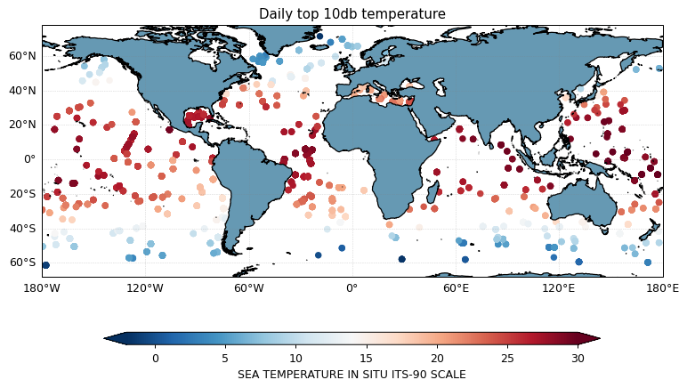

Accessing Argo data by date using Argopy#
Import the usual suspects:
import xarray as xr
xr.set_options(display_style="html", display_expand_attrs=False);
from matplotlib import pyplot as plt
plt.style.use('default')
import cartopy.crs as ccrs
import argopy
/Users/gmaze/miniconda3/envs/aos/lib/python3.10/site-packages/pyproj/__init__.py:89: UserWarning: pyproj unable to set database path.
_pyproj_global_context_initialize()
Import argopy and set-up a data fetcher:
from argopy import DataFetcher as ArgoDataFetcher
argo_loader = ArgoDataFetcher(src='argovis', parallel=True)
argo_loader
<datafetcher.argovis> 'No access point initialised'
Available access points: float, profile, region
Backend: argovis (parallel=True)
User mode: standard
Dataset: phy
You can load profiles for a specific date (and domain) using the region access point:
argo_loader.region([-180, 180, -90, 90, 0, 5000, '2020-11-11', '2020-11-12']).load()
argo_loader
/Users/gmaze/miniconda3/envs/aos/lib/python3.10/site-packages/pandas/core/indexes/base.py:6982: FutureWarning: In a future version, the Index constructor will not infer numeric dtypes when passed object-dtype sequences (matching Series behavior)
return Index(sequences[0], name=names)
<datafetcher.argovis>
Name: Argovis Argo data fetcher for a space/time region
API: https://argovis.colorado.edu
Domain: [x=-180.00/180.00; y=-90.00/90 ... 00.0; t=2020-11-11/2020-11-12]
Backend: argovis (parallel=True)
User mode: standard
Dataset: phy
apDS = argo_loader.data
apDS
<xarray.Dataset>
Dimensions: (N_POINTS: 339177)
Coordinates:
* N_POINTS (N_POINTS) int64 0 1 2 3 4 ... 339173 339174 339175 339176
TIME (N_POINTS) datetime64[ns] 2020-11-11T00:08:20 ... 2020-1...
LATITUDE (N_POINTS) float64 35.14 35.14 35.14 ... -15.29 -15.29
LONGITUDE (N_POINTS) float64 15.69 15.69 15.69 ... -135.0 -135.0
Data variables:
CYCLE_NUMBER (N_POINTS) float64 103.0 103.0 103.0 ... 189.0 189.0 189.0
DATA_MODE (N_POINTS) object 'R' 'R' 'R' 'R' 'R' ... 'A' 'A' 'A' 'A'
DIRECTION (N_POINTS) object 'A' 'A' 'A' 'A' 'A' ... 'A' 'A' 'A' 'A'
PLATFORM_NUMBER (N_POINTS) float64 6.904e+06 6.904e+06 ... 5.902e+06
POSITION_QC (N_POINTS) float64 1.0 1.0 1.0 1.0 1.0 ... 1.0 1.0 1.0 1.0
PRES (N_POINTS) float64 2.9 3.9 5.1 ... 1.124e+03 1.126e+03
PSAL (N_POINTS) float64 38.03 38.03 38.03 38.03 ... nan nan nan
TEMP (N_POINTS) float64 22.01 22.02 22.01 ... 3.764 3.752 3.74
TIME_QC (N_POINTS) float64 1.0 1.0 1.0 1.0 1.0 ... 1.0 1.0 1.0 1.0
Attributes: (7)xarray.Dataset
- N_POINTS: 339177
- N_POINTS(N_POINTS)int640 1 2 3 ... 339174 339175 339176
array([ 0, 1, 2, ..., 339174, 339175, 339176])
- TIME(N_POINTS)datetime64[ns]2020-11-11T00:08:20 ... 2020-11-...
- casted :
- 1
array(['2020-11-11T00:08:20.000000000', '2020-11-11T00:08:20.000000000', '2020-11-11T00:08:20.000000000', ..., '2020-11-11T23:59:30.000000000', '2020-11-11T23:59:30.000000000', '2020-11-11T23:59:30.000000000'], dtype='datetime64[ns]') - LATITUDE(N_POINTS)float6435.14 35.14 35.14 ... -15.29 -15.29
- casted :
- 1
array([ 35.14129167, 35.14129167, 35.14129167, ..., -15.28818 , -15.28818 , -15.28818 ]) - LONGITUDE(N_POINTS)float6415.69 15.69 15.69 ... -135.0 -135.0
- casted :
- 1
array([ 15.68804167, 15.68804167, 15.68804167, ..., -135.04852 , -135.04852 , -135.04852 ])
- CYCLE_NUMBER(N_POINTS)float64103.0 103.0 103.0 ... 189.0 189.0
- long_name :
- Float cycle number
- convention :
- 0..N, 0 : launch cycle (if exists), 1 : first complete cycle
array([103., 103., 103., ..., 189., 189., 189.])
- DATA_MODE(N_POINTS)object'R' 'R' 'R' 'R' ... 'A' 'A' 'A' 'A'
- long_name :
- Delayed mode or real time data
- convention :
- R : real time; D : delayed mode; A : real time with adjustment
array(['R', 'R', 'R', ..., 'A', 'A', 'A'], dtype=object)
- DIRECTION(N_POINTS)object'A' 'A' 'A' 'A' ... 'A' 'A' 'A' 'A'
- long_name :
- Direction of the station profiles
- convention :
- A: ascending profiles, D: descending profiles
array(['A', 'A', 'A', ..., 'A', 'A', 'A'], dtype=object)
- PLATFORM_NUMBER(N_POINTS)float646.904e+06 6.904e+06 ... 5.902e+06
- long_name :
- Float unique identifier
- convention :
- WMO float identifier : A9IIIII
array([6903788., 6903788., 6903788., ..., 5902419., 5902419., 5902419.])
- POSITION_QC(N_POINTS)float641.0 1.0 1.0 1.0 ... 1.0 1.0 1.0 1.0
- long_name :
- Global quality flag of POSITION_QC profile
- convention :
- Argo reference table 2a
array([1., 1., 1., ..., 1., 1., 1.])
- PRES(N_POINTS)float642.9 3.9 5.1 ... 1.124e+03 1.126e+03
- long_name :
- Sea Pressure
- standard_name :
- sea_water_pressure
- units :
- decibar
- valid_min :
- 0.0
- valid_max :
- 12000.0
- resolution :
- 0.1
- axis :
- Z
array([ 2.9 , 3.9 , 5.1 , ..., 1122. , 1124.04, 1126.12])
- PSAL(N_POINTS)float6438.03 38.03 38.03 ... nan nan nan
- long_name :
- PRACTICAL SALINITY
- standard_name :
- sea_water_salinity
- units :
- psu
- valid_min :
- 0.0
- valid_max :
- 43.0
- resolution :
- 0.001
array([38.029, 38.027, 38.028, ..., nan, nan, nan])
- TEMP(N_POINTS)float6422.01 22.02 22.01 ... 3.752 3.74
- long_name :
- SEA TEMPERATURE IN SITU ITS-90 SCALE
- standard_name :
- sea_water_temperature
- units :
- degree_Celsius
- valid_min :
- -2.0
- valid_max :
- 40.0
- resolution :
- 0.001
array([22.014, 22.017, 22.012, ..., 3.764, 3.752, 3.74 ])
- TIME_QC(N_POINTS)float641.0 1.0 1.0 1.0 ... 1.0 1.0 1.0 1.0
- long_name :
- Global quality flag of TIME_QC profile
- convention :
- Argo reference table 2a
array([1., 1., 1., ..., 1., 1., 1.])
- DATA_ID :
- ARGO
- DOI :
- http://doi.org/10.17882/42182
- Fetched_from :
- https://argovis.colorado.edu
- Fetched_by :
- gmaze
- Fetched_date :
- 2022/04/11
- Fetched_constraints :
- [x=-180.00/180.00; y=-90.00/90.00; z=0.0/5000.0; t=2020-11-11/2020-11-12]
- Fetched_uri :
- ['https://argovis.colorado.edu/selection/profiles?startDate=2020-11-11T00:00:00Z&endDate=2020-11-12T00:00:00Z&shape=[[[-180.0,-90.0],[-180.0,-70.0],[-160.0,-70.0],[-160.0,-90.0],[-180.0,-90.0]]]&presRange=[0.0,500.0]', 'https://argovis.colorado.edu/selection/profiles?startDate=2020-11-11T00:00:00Z&endDate=2020-11-12T00:00:00Z&shape=[[[-180.0,-90.0],[-180.0,-70.0],[-160.0,-70.0],[-160.0,-90.0],[-180.0,-90.0]]]&presRange=[500.0,1000.0]', 'https://argovis.colorado.edu/selection/profiles?startDate=2020-11-11T00:00:00Z&endDate=2020-11-12T00:00:00Z&shape=[[[-180.0,-90.0],[-180.0,-70.0],[-160.0,-70.0],[-160.0,-90.0],[-180.0,-90.0]]]&presRange=[1000.0,1500.0]', 'https://argovis.colorado.edu/selection/profiles?startDate=2020-11-11T00:00:00Z&endDate=2020-11-12T00:00:00Z&shape=[[[-180.0,-90.0],[-180.0,-70.0],[-160.0,-70.0],[-160.0,-90.0],[-180.0,-90.0]]]&presRange=[1500.0,2000.0]', 'https://argovis.colorado.edu/selection/profiles?startDate=2020-11-11T00:00:00Z&endDate=2020-11-12T00:00:00Z&shape=[[[-180.0,-90.0],[-180.0,-70.0],[-160.0,-70.0],[-160.0,-90.0],[-180.0,-90.0]]]&presRange=[2000.0,2500.0]', 'https://argovis.colorado.edu/selection/profiles?startDate=2020-11-11T00:00:00Z&endDate=2020-11-12T00:00:00Z&shape=[[[-180.0,-90.0],[-180.0,-70.0],[-160.0,-70.0],[-160.0,-90.0],[-180.0,-90.0]]]&presRange=[2500.0,3000.0]', 'https://argovis.colorado.edu/selection/profiles?startDate=2020-11-11T00:00:00Z&endDate=2020-11-12T00:00:00Z&shape=[[[-180.0,-90.0],[-180.0,-70.0],[-160.0,-70.0],[-160.0,-90.0],[-180.0,-90.0]]]&presRange=[3000.0,3500.0]', 'https://argovis.colorado.edu/selection/profiles?startDate=2020-11-11T00:00:00Z&endDate=2020-11-12T00:00:00Z&shape=[[[-180.0,-90.0],[-180.0,-70.0],[-160.0,-70.0],[-160.0,-90.0],[-180.0,-90.0]]]&presRange=[3500.0,4000.0]', 'https://argovis.colorado.edu/selection/profiles?startDate=2020-11-11T00:00:00Z&endDate=2020-11-12T00:00:00Z&shape=[[[-180.0,-90.0],[-180.0,-70.0],[-160.0,-70.0],[-160.0,-90.0],[-180.0,-90.0]]]&presRange=[4000.0,4500.0]', 'https://argovis.colorado.edu/selection/profiles?startDate=2020-11-11T00:00:00Z&endDate=2020-11-12T00:00:00Z&shape=[[[-180.0,-90.0],[-180.0,-70.0],[-160.0,-70.0],[-160.0,-90.0],[-180.0,-90.0]]]&presRange=[4500.0,5000.0]', 'https://argovis.colorado.edu/selection/profiles?startDate=2020-11-11T00:00:00Z&endDate=2020-11-12T00:00:00Z&shape=[[[-180.0,-70.0],[-180.0,-50.0],[-160.0,-50.0],[-160.0,-70.0],[-180.0,-70.0]]]&presRange=[0.0,500.0]', 'https://argovis.colorado.edu/selection/profiles?startDate=2020-11-11T00:00:00Z&endDate=2020-11-12T00:00:00Z&shape=[[[-180.0,-70.0],[-180.0,-50.0],[-160.0,-50.0],[-160.0,-70.0],[-180.0,-70.0]]]&presRange=[500.0,1000.0]', 'https://argovis.colorado.edu/selection/profiles?startDate=2020-11-11T00:00:00Z&endDate=2020-11-12T00:00:00Z&shape=[[[-180.0,-70.0],[-180.0,-50.0],[-160.0,-50.0],[-160.0,-70.0],[-180.0,-70.0]]]&presRange=[1000.0,1500.0]', 'https://argovis.colorado.edu/selection/profiles?startDate=2020-11-11T00:00:00Z&endDate=2020-11-12T00:00:00Z&shape=[[[-180.0,-70.0],[-180.0,-50.0],[-160.0,-50.0],[-160.0,-70.0],[-180.0,-70.0]]]&presRange=[1500.0,2000.0]', 'https://argovis.colorado.edu/selection/profiles?startDate=2020-11-11T00:00:00Z&endDate=2020-11-12T00:00:00Z&shape=[[[-180.0,-70.0],[-180.0,-50.0],[-160.0,-50.0],[-160.0,-70.0],[-180.0,-70.0]]]&presRange=[2000.0,2500.0]', 'https://argovis.colorado.edu/selection/profiles?startDate=2020-11-11T00:00:00Z&endDate=2020-11-12T00:00:00Z&shape=[[[-180.0,-70.0],[-180.0,-50.0],[-160.0,-50.0],[-160.0,-70.0],[-180.0,-70.0]]]&presRange=[2500.0,3000.0]', 'https://argovis.colorado.edu/selection/profiles?startDate=2020-11-11T00:00:00Z&endDate=2020-11-12T00:00:00Z&shape=[[[-180.0,-70.0],[-180.0,-50.0],[-160.0,-50.0],[-160.0,-70.0],[-180.0,-70.0]]]&presRange=[3000.0,3500.0]', 'https://argovis.colorado.edu/selection/profiles?startDate=2020-11-11T00:00:00Z&endDate=2020-11-12T00:00:00Z&shape=[[[-180.0,-70.0],[-180.0,-50.0],[-160.0,-50.0],[-160.0,-70.0],[-180.0,-70.0]]]&presRange=[3500.0,4000.0]', 'https://argovis.colorado.edu/selection/profiles?startDate=2020-11-11T00:00:00Z&endDate=2020-11-12T00:00:00Z&shape=[[[-180.0,-70.0],[-180.0,-50.0],[-160.0,-50.0],[-160.0,-70.0],[-180.0,-70.0]]]&presRange=[4000.0,4500.0]', 'https://argovis.colorado.edu/selection/profiles?startDate=2020-11-11T00:00:00Z&endDate=2020-11-12T00:00:00Z&shape=[[[-180.0,-70.0],[-180.0,-50.0],[-160.0,-50.0],[-160.0,-70.0],[-180.0,-70.0]]]&presRange=[4500.0,5000.0]', 'https://argovis.colorado.edu/selection/profiles?startDate=2020-11-11T00:00:00Z&endDate=2020-11-12T00:00:00Z&shape=[[[-180.0,-50.0],[-180.0,-30.0],[-160.0,-30.0],[-160.0,-50.0],[-180.0,-50.0]]]&presRange=[0.0,500.0]', 'https://argovis.colorado.edu/selection/profiles?startDate=2020-11-11T00:00:00Z&endDate=2020-11-12T00:00:00Z&shape=[[[-180.0,-50.0],[-180.0,-30.0],[-160.0,-30.0],[-160.0,-50.0],[-180.0,-50.0]]]&presRange=[500.0,1000.0]', 'https://argovis.colorado.edu/selection/profiles?startDate=2020-11-11T00:00:00Z&endDate=2020-11-12T00:00:00Z&shape=[[[-180.0,-50.0],[-180.0,-30.0],[-160.0,-30.0],[-160.0,-50.0],[-180.0,-50.0]]]&presRange=[1000.0,1500.0]', 'https://argovis.colorado.edu/selection/profiles?startDate=2020-11-11T00:00:00Z&endDate=2020-11-12T00:00:00Z&shape=[[[-180.0,-50.0],[-180.0,-30.0],[-160.0,-30.0],[-160.0,-50.0],[-180.0,-50.0]]]&presRange=[1500.0,2000.0]', 'https://argovis.colorado.edu/selection/profiles?startDate=2020-11-11T00:00:00Z&endDate=2020-11-12T00:00:00Z&shape=[[[-180.0,-50.0],[-180.0,-30.0],[-160.0,-30.0],[-160.0,-50.0],[-180.0,-50.0]]]&presRange=[2000.0,2500.0]', 'https://argovis.colorado.edu/selection/profiles?startDate=2020-11-11T00:00:00Z&endDate=2020-11-12T00:00:00Z&shape=[[[-180.0,-50.0],[-180.0,-30.0],[-160.0,-30.0],[-160.0,-50.0],[-180.0,-50.0]]]&presRange=[2500.0,3000.0]', 'https://argovis.colorado.edu/selection/profiles?startDate=2020-11-11T00:00:00Z&endDate=2020-11-12T00:00:00Z&shape=[[[-180.0,-50.0],[-180.0,-30.0],[-160.0,-30.0],[-160.0,-50.0],[-180.0,-50.0]]]&presRange=[3000.0,3500.0]', 'https://argovis.colorado.edu/selection/profiles?startDate=2020-11-11T00:00:00Z&endDate=2020-11-12T00:00:00Z&shape=[[[-180.0,-50.0],[-180.0,-30.0],[-160.0,-30.0],[-160.0,-50.0],[-180.0,-50.0]]]&presRange=[3500.0,4000.0]', 'https://argovis.colorado.edu/selection/profiles?startDate=2020-11-11T00:00:00Z&endDate=2020-11-12T00:00:00Z&shape=[[[-180.0,-50.0],[-180.0,-30.0],[-160.0,-30.0],[-160.0,-50.0],[-180.0,-50.0]]]&presRange=[4000.0,4500.0]', 'https://argovis.colorado.edu/selection/profiles?startDate=2020-11-11T00:00:00Z&endDate=2020-11-12T00:00:00Z&shape=[[[-180.0,-50.0],[-180.0,-30.0],[-160.0,-30.0],[-160.0,-50.0],[-180.0,-50.0]]]&presRange=[4500.0,5000.0]', 'https://argovis.colorado.edu/selection/profiles?startDate=2020-11-11T00:00:00Z&endDate=2020-11-12T00:00:00Z&shape=[[[-180.0,-30.0],[-180.0,-10.0],[-160.0,-10.0],[-160.0,-30.0],[-180.0,-30.0]]]&presRange=[0.0,500.0]', 'https://argovis.colorado.edu/selection/profiles?startDate=2020-11-11T00:00:00Z&endDate=2020-11-12T00:00:00Z&shape=[[[-180.0,-30.0],[-180.0,-10.0],[-160.0,-10.0],[-160.0,-30.0],[-180.0,-30.0]]]&presRange=[500.0,1000.0]', 'https://argovis.colorado.edu/selection/profiles?startDate=2020-11-11T00:00:00Z&endDate=2020-11-12T00:00:00Z&shape=[[[-180.0,-30.0],[-180.0,-10.0],[-160.0,-10.0],[-160.0,-30.0],[-180.0,-30.0]]]&presRange=[1000.0,1500.0]', 'https://argovis.colorado.edu/selection/profiles?startDate=2020-11-11T00:00:00Z&endDate=2020-11-12T00:00:00Z&shape=[[[-180.0,-30.0],[-180.0,-10.0],[-160.0,-10.0],[-160.0,-30.0],[-180.0,-30.0]]]&presRange=[1500.0,2000.0]', 'https://argovis.colorado.edu/selection/profiles?startDate=2020-11-11T00:00:00Z&endDate=2020-11-12T00:00:00Z&shape=[[[-180.0,-30.0],[-180.0,-10.0],[-160.0,-10.0],[-160.0,-30.0],[-180.0,-30.0]]]&presRange=[2000.0,2500.0]', 'https://argovis.colorado.edu/selection/profiles?startDate=2020-11-11T00:00:00Z&endDate=2020-11-12T00:00:00Z&shape=[[[-180.0,-30.0],[-180.0,-10.0],[-160.0,-10.0],[-160.0,-30.0],[-180.0,-30.0]]]&presRange=[2500.0,3000.0]', 'https://argovis.colorado.edu/selection/profiles?startDate=2020-11-11T00:00:00Z&endDate=2020-11-12T00:00:00Z&shape=[[[-180.0,-30.0],[-180.0,-10.0],[-160.0,-10.0],[-160.0,-30.0],[-180.0,-30.0]]]&presRange=[3000.0,3500.0]', 'https://argovis.colorado.edu/selection/profiles?startDate=2020-11-11T00:00:00Z&endDate=2020-11-12T00:00:00Z&shape=[[[-180.0,-30.0],[-180.0,-10.0],[-160.0,-10.0],[-160.0,-30.0],[-180.0,-30.0]]]&presRange=[3500.0,4000.0]', 'https://argovis.colorado.edu/selection/profiles?startDate=2020-11-11T00:00:00Z&endDate=2020-11-12T00:00:00Z&shape=[[[-180.0,-30.0],[-180.0,-10.0],[-160.0,-10.0],[-160.0,-30.0],[-180.0,-30.0]]]&presRange=[4000.0,4500.0]', 'https://argovis.colorado.edu/selection/profiles?startDate=2020-11-11T00:00:00Z&endDate=2020-11-12T00:00:00Z&shape=[[[-180.0,-30.0],[-180.0,-10.0],[-160.0,-10.0],[-160.0,-30.0],[-180.0,-30.0]]]&presRange=[4500.0,5000.0]', 'https://argovis.colorado.edu/selection/profiles?startDate=2020-11-11T00:00:00Z&endDate=2020-11-12T00:00:00Z&shape=[[[-180.0,-10.0],[-180.0,10.0],[-160.0,10.0],[-160.0,-10.0],[-180.0,-10.0]]]&presRange=[0.0,500.0]', 'https://argovis.colorado.edu/selection/profiles?startDate=2020-11-11T00:00:00Z&endDate=2020-11-12T00:00:00Z&shape=[[[-180.0,-10.0],[-180.0,10.0],[-160.0,10.0],[-160.0,-10.0],[-180.0,-10.0]]]&presRange=[500.0,1000.0]', 'https://argovis.colorado.edu/selection/profiles?startDate=2020-11-11T00:00:00Z&endDate=2020-11-12T00:00:00Z&shape=[[[-180.0,-10.0],[-180.0,10.0],[-160.0,10.0],[-160.0,-10.0],[-180.0,-10.0]]]&presRange=[1000.0,1500.0]', 'https://argovis.colorado.edu/selection/profiles?startDate=2020-11-11T00:00:00Z&endDate=2020-11-12T00:00:00Z&shape=[[[-180.0,-10.0],[-180.0,10.0],[-160.0,10.0],[-160.0,-10.0],[-180.0,-10.0]]]&presRange=[1500.0,2000.0]', 'https://argovis.colorado.edu/selection/profiles?startDate=2020-11-11T00:00:00Z&endDate=2020-11-12T00:00:00Z&shape=[[[-180.0,-10.0],[-180.0,10.0],[-160.0,10.0],[-160.0,-10.0],[-180.0,-10.0]]]&presRange=[2000.0,2500.0]', 'https://argovis.colorado.edu/selection/profiles?startDate=2020-11-11T00:00:00Z&endDate=2020-11-12T00:00:00Z&shape=[[[-180.0,-10.0],[-180.0,10.0],[-160.0,10.0],[-160.0,-10.0],[-180.0,-10.0]]]&presRange=[2500.0,3000.0]', 'https://argovis.colorado.edu/selection/profiles?startDate=2020-11-11T00:00:00Z&endDate=2020-11-12T00:00:00Z&shape=[[[-180.0,-10.0],[-180.0,10.0],[-160.0,10.0],[-160.0,-10.0],[-180.0,-10.0]]]&presRange=[3000.0,3500.0]', 'https://argovis.colorado.edu/selection/profiles?startDate=2020-11-11T00:00:00Z&endDate=2020-11-12T00:00:00Z&shape=[[[-180.0,-10.0],[-180.0,10.0],[-160.0,10.0],[-160.0,-10.0],[-180.0,-10.0]]]&presRange=[3500.0,4000.0]', 'https://argovis.colorado.edu/selection/profiles?startDate=2020-11-11T00:00:00Z&endDate=2020-11-12T00:00:00Z&shape=[[[-180.0,-10.0],[-180.0,10.0],[-160.0,10.0],[-160.0,-10.0],[-180.0,-10.0]]]&presRange=[4000.0,4500.0]', 'https://argovis.colorado.edu/selection/profiles?startDate=2020-11-11T00:00:00Z&endDate=2020-11-12T00:00:00Z&shape=[[[-180.0,-10.0],[-180.0,10.0],[-160.0,10.0],[-160.0,-10.0],[-180.0,-10.0]]]&presRange=[4500.0,5000.0]', 'https://argovis.colorado.edu/selection/profiles?startDate=2020-11-11T00:00:00Z&endDate=2020-11-12T00:00:00Z&shape=[[[-180.0,10.0],[-180.0,30.0],[-160.0,30.0],[-160.0,10.0],[-180.0,10.0]]]&presRange=[0.0,500.0]', 'https://argovis.colorado.edu/selection/profiles?startDate=2020-11-11T00:00:00Z&endDate=2020-11-12T00:00:00Z&shape=[[[-180.0,10.0],[-180.0,30.0],[-160.0,30.0],[-160.0,10.0],[-180.0,10.0]]]&presRange=[500.0,1000.0]', 'https://argovis.colorado.edu/selection/profiles?startDate=2020-11-11T00:00:00Z&endDate=2020-11-12T00:00:00Z&shape=[[[-180.0,10.0],[-180.0,30.0],[-160.0,30.0],[-160.0,10.0],[-180.0,10.0]]]&presRange=[1000.0,1500.0]', 'https://argovis.colorado.edu/selection/profiles?startDate=2020-11-11T00:00:00Z&endDate=2020-11-12T00:00:00Z&shape=[[[-180.0,10.0],[-180.0,30.0],[-160.0,30.0],[-160.0,10.0],[-180.0,10.0]]]&presRange=[1500.0,2000.0]', 'https://argovis.colorado.edu/selection/profiles?startDate=2020-11-11T00:00:00Z&endDate=2020-11-12T00:00:00Z&shape=[[[-180.0,10.0],[-180.0,30.0],[-160.0,30.0],[-160.0,10.0],[-180.0,10.0]]]&presRange=[2000.0,2500.0]', 'https://argovis.colorado.edu/selection/profiles?startDate=2020-11-11T00:00:00Z&endDate=2020-11-12T00:00:00Z&shape=[[[-180.0,10.0],[-180.0,30.0],[-160.0,30.0],[-160.0,10.0],[-180.0,10.0]]]&presRange=[2500.0,3000.0]', 'https://argovis.colorado.edu/selection/profiles?startDate=2020-11-11T00:00:00Z&endDate=2020-11-12T00:00:00Z&shape=[[[-180.0,10.0],[-180.0,30.0],[-160.0,30.0],[-160.0,10.0],[-180.0,10.0]]]&presRange=[3000.0,3500.0]', 'https://argovis.colorado.edu/selection/profiles?startDate=2020-11-11T00:00:00Z&endDate=2020-11-12T00:00:00Z&shape=[[[-180.0,10.0],[-180.0,30.0],[-160.0,30.0],[-160.0,10.0],[-180.0,10.0]]]&presRange=[3500.0,4000.0]', 'https://argovis.colorado.edu/selection/profiles?startDate=2020-11-11T00:00:00Z&endDate=2020-11-12T00:00:00Z&shape=[[[-180.0,10.0],[-180.0,30.0],[-160.0,30.0],[-160.0,10.0],[-180.0,10.0]]]&presRange=[4000.0,4500.0]', 'https://argovis.colorado.edu/selection/profiles?startDate=2020-11-11T00:00:00Z&endDate=2020-11-12T00:00:00Z&shape=[[[-180.0,10.0],[-180.0,30.0],[-160.0,30.0],[-160.0,10.0],[-180.0,10.0]]]&presRange=[4500.0,5000.0]', 'https://argovis.colorado.edu/selection/profiles?startDate=2020-11-11T00:00:00Z&endDate=2020-11-12T00:00:00Z&shape=[[[-180.0,30.0],[-180.0,50.0],[-160.0,50.0],[-160.0,30.0],[-180.0,30.0]]]&presRange=[0.0,500.0]', 'https://argovis.colorado.edu/selection/profiles?startDate=2020-11-11T00:00:00Z&endDate=2020-11-12T00:00:00Z&shape=[[[-180.0,30.0],[-180.0,50.0],[-160.0,50.0],[-160.0,30.0],[-180.0,30.0]]]&presRange=[500.0,1000.0]', 'https://argovis.colorado.edu/selection/profiles?startDate=2020-11-11T00:00:00Z&endDate=2020-11-12T00:00:00Z&shape=[[[-180.0,30.0],[-180.0,50.0],[-160.0,50.0],[-160.0,30.0],[-180.0,30.0]]]&presRange=[1000.0,1500.0]', 'https://argovis.colorado.edu/selection/profiles?startDate=2020-11-11T00:00:00Z&endDate=2020-11-12T00:00:00Z&shape=[[[-180.0,30.0],[-180.0,50.0],[-160.0,50.0],[-160.0,30.0],[-180.0,30.0]]]&presRange=[1500.0,2000.0]', 'https://argovis.colorado.edu/selection/profiles?startDate=2020-11-11T00:00:00Z&endDate=2020-11-12T00:00:00Z&shape=[[[-180.0,30.0],[-180.0,50.0],[-160.0,50.0],[-160.0,30.0],[-180.0,30.0]]]&presRange=[2000.0,2500.0]', 'https://argovis.colorado.edu/selection/profiles?startDate=2020-11-11T00:00:00Z&endDate=2020-11-12T00:00:00Z&shape=[[[-180.0,30.0],[-180.0,50.0],[-160.0,50.0],[-160.0,30.0],[-180.0,30.0]]]&presRange=[2500.0,3000.0]', 'https://argovis.colorado.edu/selection/profiles?startDate=2020-11-11T00:00:00Z&endDate=2020-11-12T00:00:00Z&shape=[[[-180.0,30.0],[-180.0,50.0],[-160.0,50.0],[-160.0,30.0],[-180.0,30.0]]]&presRange=[3000.0,3500.0]', 'https://argovis.colorado.edu/selection/profiles?startDate=2020-11-11T00:00:00Z&endDate=2020-11-12T00:00:00Z&shape=[[[-180.0,30.0],[-180.0,50.0],[-160.0,50.0],[-160.0,30.0],[-180.0,30.0]]]&presRange=[3500.0,4000.0]', 'https://argovis.colorado.edu/selection/profiles?startDate=2020-11-11T00:00:00Z&endDate=2020-11-12T00:00:00Z&shape=[[[-180.0,30.0],[-180.0,50.0],[-160.0,50.0],[-160.0,30.0],[-180.0,30.0]]]&presRange=[4000.0,4500.0]', 'https://argovis.colorado.edu/selection/profiles?startDate=2020-11-11T00:00:00Z&endDate=2020-11-12T00:00:00Z&shape=[[[-180.0,30.0],[-180.0,50.0],[-160.0,50.0],[-160.0,30.0],[-180.0,30.0]]]&presRange=[4500.0,5000.0]', 'https://argovis.colorado.edu/selection/profiles?startDate=2020-11-11T00:00:00Z&endDate=2020-11-12T00:00:00Z&shape=[[[-180.0,50.0],[-180.0,70.0],[-160.0,70.0],[-160.0,50.0],[-180.0,50.0]]]&presRange=[0.0,500.0]', 'https://argovis.colorado.edu/selection/profiles?startDate=2020-11-11T00:00:00Z&endDate=2020-11-12T00:00:00Z&shape=[[[-180.0,50.0],[-180.0,70.0],[-160.0,70.0],[-160.0,50.0],[-180.0,50.0]]]&presRange=[500.0,1000.0]', 'https://argovis.colorado.edu/selection/profiles?startDate=2020-11-11T00:00:00Z&endDate=2020-11-12T00:00:00Z&shape=[[[-180.0,50.0],[-180.0,70.0],[-160.0,70.0],[-160.0,50.0],[-180.0,50.0]]]&presRange=[1000.0,1500.0]', 'https://argovis.colorado.edu/selection/profiles?startDate=2020-11-11T00:00:00Z&endDate=2020-11-12T00:00:00Z&shape=[[[-180.0,50.0],[-180.0,70.0],[-160.0,70.0],[-160.0,50.0],[-180.0,50.0]]]&presRange=[1500.0,2000.0]', 'https://argovis.colorado.edu/selection/profiles?startDate=2020-11-11T00:00:00Z&endDate=2020-11-12T00:00:00Z&shape=[[[-180.0,50.0],[-180.0,70.0],[-160.0,70.0],[-160.0,50.0],[-180.0,50.0]]]&presRange=[2000.0,2500.0]', 'https://argovis.colorado.edu/selection/profiles?startDate=2020-11-11T00:00:00Z&endDate=2020-11-12T00:00:00Z&shape=[[[-180.0,50.0],[-180.0,70.0],[-160.0,70.0],[-160.0,50.0],[-180.0,50.0]]]&presRange=[2500.0,3000.0]', 'https://argovis.colorado.edu/selection/profiles?startDate=2020-11-11T00:00:00Z&endDate=2020-11-12T00:00:00Z&shape=[[[-180.0,50.0],[-180.0,70.0],[-160.0,70.0],[-160.0,50.0],[-180.0,50.0]]]&presRange=[3000.0,3500.0]', 'https://argovis.colorado.edu/selection/profiles?startDate=2020-11-11T00:00:00Z&endDate=2020-11-12T00:00:00Z&shape=[[[-180.0,50.0],[-180.0,70.0],[-160.0,70.0],[-160.0,50.0],[-180.0,50.0]]]&presRange=[3500.0,4000.0]', 'https://argovis.colorado.edu/selection/profiles?startDate=2020-11-11T00:00:00Z&endDate=2020-11-12T00:00:00Z&shape=[[[-180.0,50.0],[-180.0,70.0],[-160.0,70.0],[-160.0,50.0],[-180.0,50.0]]]&presRange=[4000.0,4500.0]', 'https://argovis.colorado.edu/selection/profiles?startDate=2020-11-11T00:00:00Z&endDate=2020-11-12T00:00:00Z&shape=[[[-180.0,50.0],[-180.0,70.0],[-160.0,70.0],[-160.0,50.0],[-180.0,50.0]]]&presRange=[4500.0,5000.0]', 'https://argovis.colorado.edu/selection/profiles?startDate=2020-11-11T00:00:00Z&endDate=2020-11-12T00:00:00Z&shape=[[[-180.0,70.0],[-180.0,90.0],[-160.0,90.0],[-160.0,70.0],[-180.0,70.0]]]&presRange=[0.0,500.0]', 'https://argovis.colorado.edu/selection/profiles?startDate=2020-11-11T00:00:00Z&endDate=2020-11-12T00:00:00Z&shape=[[[-180.0,70.0],[-180.0,90.0],[-160.0,90.0],[-160.0,70.0],[-180.0,70.0]]]&presRange=[500.0,1000.0]', 'https://argovis.colorado.edu/selection/profiles?startDate=2020-11-11T00:00:00Z&endDate=2020-11-12T00:00:00Z&shape=[[[-180.0,70.0],[-180.0,90.0],[-160.0,90.0],[-160.0,70.0],[-180.0,70.0]]]&presRange=[1000.0,1500.0]', 'https://argovis.colorado.edu/selection/profiles?startDate=2020-11-11T00:00:00Z&endDate=2020-11-12T00:00:00Z&shape=[[[-180.0,70.0],[-180.0,90.0],[-160.0,90.0],[-160.0,70.0],[-180.0,70.0]]]&presRange=[1500.0,2000.0]', 'https://argovis.colorado.edu/selection/profiles?startDate=2020-11-11T00:00:00Z&endDate=2020-11-12T00:00:00Z&shape=[[[-180.0,70.0],[-180.0,90.0],[-160.0,90.0],[-160.0,70.0],[-180.0,70.0]]]&presRange=[2000.0,2500.0]', 'https://argovis.colorado.edu/selection/profiles?startDate=2020-11-11T00:00:00Z&endDate=2020-11-12T00:00:00Z&shape=[[[-180.0,70.0],[-180.0,90.0],[-160.0,90.0],[-160.0,70.0],[-180.0,70.0]]]&presRange=[2500.0,3000.0]', 'https://argovis.colorado.edu/selection/profiles?startDate=2020-11-11T00:00:00Z&endDate=2020-11-12T00:00:00Z&shape=[[[-180.0,70.0],[-180.0,90.0],[-160.0,90.0],[-160.0,70.0],[-180.0,70.0]]]&presRange=[3000.0,3500.0]', 'https://argovis.colorado.edu/selection/profiles?startDate=2020-11-11T00:00:00Z&endDate=2020-11-12T00:00:00Z&shape=[[[-180.0,70.0],[-180.0,90.0],[-160.0,90.0],[-160.0,70.0],[-180.0,70.0]]]&presRange=[3500.0,4000.0]', 'https://argovis.colorado.edu/selection/profiles?startDate=2020-11-11T00:00:00Z&endDate=2020-11-12T00:00:00Z&shape=[[[-180.0,70.0],[-180.0,90.0],[-160.0,90.0],[-160.0,70.0],[-180.0,70.0]]]&presRange=[4000.0,4500.0]', 'https://argovis.colorado.edu/selection/profiles?startDate=2020-11-11T00:00:00Z&endDate=2020-11-12T00:00:00Z&shape=[[[-180.0,70.0],[-180.0,90.0],[-160.0,90.0],[-160.0,70.0],[-180.0,70.0]]]&presRange=[4500.0,5000.0]', 'https://argovis.colorado.edu/selection/profiles?startDate=2020-11-11T00:00:00Z&endDate=2020-11-12T00:00:00Z&shape=[[[-160.0,-90.0],[-160.0,-70.0],[-140.0,-70.0],[-140.0,-90.0],[-160.0,-90.0]]]&presRange=[0.0,500.0]', 'https://argovis.colorado.edu/selection/profiles?startDate=2020-11-11T00:00:00Z&endDate=2020-11-12T00:00:00Z&shape=[[[-160.0,-90.0],[-160.0,-70.0],[-140.0,-70.0],[-140.0,-90.0],[-160.0,-90.0]]]&presRange=[500.0,1000.0]', 'https://argovis.colorado.edu/selection/profiles?startDate=2020-11-11T00:00:00Z&endDate=2020-11-12T00:00:00Z&shape=[[[-160.0,-90.0],[-160.0,-70.0],[-140.0,-70.0],[-140.0,-90.0],[-160.0,-90.0]]]&presRange=[1000.0,1500.0]', 'https://argovis.colorado.edu/selection/profiles?startDate=2020-11-11T00:00:00Z&endDate=2020-11-12T00:00:00Z&shape=[[[-160.0,-90.0],[-160.0,-70.0],[-140.0,-70.0],[-140.0,-90.0],[-160.0,-90.0]]]&presRange=[1500.0,2000.0]', 'https://argovis.colorado.edu/selection/profiles?startDate=2020-11-11T00:00:00Z&endDate=2020-11-12T00:00:00Z&shape=[[[-160.0,-90.0],[-160.0,-70.0],[-140.0,-70.0],[-140.0,-90.0],[-160.0,-90.0]]]&presRange=[2000.0,2500.0]', 'https://argovis.colorado.edu/selection/profiles?startDate=2020-11-11T00:00:00Z&endDate=2020-11-12T00:00:00Z&shape=[[[-160.0,-90.0],[-160.0,-70.0],[-140.0,-70.0],[-140.0,-90.0],[-160.0,-90.0]]]&presRange=[2500.0,3000.0]', 'https://argovis.colorado.edu/selection/profiles?startDate=2020-11-11T00:00:00Z&endDate=2020-11-12T00:00:00Z&shape=[[[-160.0,-90.0],[-160.0,-70.0],[-140.0,-70.0],[-140.0,-90.0],[-160.0,-90.0]]]&presRange=[3000.0,3500.0]', 'https://argovis.colorado.edu/selection/profiles?startDate=2020-11-11T00:00:00Z&endDate=2020-11-12T00:00:00Z&shape=[[[-160.0,-90.0],[-160.0,-70.0],[-140.0,-70.0],[-140.0,-90.0],[-160.0,-90.0]]]&presRange=[3500.0,4000.0]', 'https://argovis.colorado.edu/selection/profiles?startDate=2020-11-11T00:00:00Z&endDate=2020-11-12T00:00:00Z&shape=[[[-160.0,-90.0],[-160.0,-70.0],[-140.0,-70.0],[-140.0,-90.0],[-160.0,-90.0]]]&presRange=[4000.0,4500.0]', 'https://argovis.colorado.edu/selection/profiles?startDate=2020-11-11T00:00:00Z&endDate=2020-11-12T00:00:00Z&shape=[[[-160.0,-90.0],[-160.0,-70.0],[-140.0,-70.0],[-140.0,-90.0],[-160.0,-90.0]]]&presRange=[4500.0,5000.0]', 'https://argovis.colorado.edu/selection/profiles?startDate=2020-11-11T00:00:00Z&endDate=2020-11-12T00:00:00Z&shape=[[[-160.0,-70.0],[-160.0,-50.0],[-140.0,-50.0],[-140.0,-70.0],[-160.0,-70.0]]]&presRange=[0.0,500.0]', 'https://argovis.colorado.edu/selection/profiles?startDate=2020-11-11T00:00:00Z&endDate=2020-11-12T00:00:00Z&shape=[[[-160.0,-70.0],[-160.0,-50.0],[-140.0,-50.0],[-140.0,-70.0],[-160.0,-70.0]]]&presRange=[500.0,1000.0]', 'https://argovis.colorado.edu/selection/profiles?startDate=2020-11-11T00:00:00Z&endDate=2020-11-12T00:00:00Z&shape=[[[-160.0,-70.0],[-160.0,-50.0],[-140.0,-50.0],[-140.0,-70.0],[-160.0,-70.0]]]&presRange=[1000.0,1500.0]', 'https://argovis.colorado.edu/selection/profiles?startDate=2020-11-11T00:00:00Z&endDate=2020-11-12T00:00:00Z&shape=[[[-160.0,-70.0],[-160.0,-50.0],[-140.0,-50.0],[-140.0,-70.0],[-160.0,-70.0]]]&presRange=[1500.0,2000.0]', 'https://argovis.colorado.edu/selection/profiles?startDate=2020-11-11T00:00:00Z&endDate=2020-11-12T00:00:00Z&shape=[[[-160.0,-70.0],[-160.0,-50.0],[-140.0,-50.0],[-140.0,-70.0],[-160.0,-70.0]]]&presRange=[2000.0,2500.0]', 'https://argovis.colorado.edu/selection/profiles?startDate=2020-11-11T00:00:00Z&endDate=2020-11-12T00:00:00Z&shape=[[[-160.0,-70.0],[-160.0,-50.0],[-140.0,-50.0],[-140.0,-70.0],[-160.0,-70.0]]]&presRange=[2500.0,3000.0]', 'https://argovis.colorado.edu/selection/profiles?startDate=2020-11-11T00:00:00Z&endDate=2020-11-12T00:00:00Z&shape=[[[-160.0,-70.0],[-160.0,-50.0],[-140.0,-50.0],[-140.0,-70.0],[-160.0,-70.0]]]&presRange=[3000.0,3500.0]', 'https://argovis.colorado.edu/selection/profiles?startDate=2020-11-11T00:00:00Z&endDate=2020-11-12T00:00:00Z&shape=[[[-160.0,-70.0],[-160.0,-50.0],[-140.0,-50.0],[-140.0,-70.0],[-160.0,-70.0]]]&presRange=[3500.0,4000.0]', 'https://argovis.colorado.edu/selection/profiles?startDate=2020-11-11T00:00:00Z&endDate=2020-11-12T00:00:00Z&shape=[[[-160.0,-70.0],[-160.0,-50.0],[-140.0,-50.0],[-140.0,-70.0],[-160.0,-70.0]]]&presRange=[4000.0,4500.0]', 'https://argovis.colorado.edu/selection/profiles?startDate=2020-11-11T00:00:00Z&endDate=2020-11-12T00:00:00Z&shape=[[[-160.0,-70.0],[-160.0,-50.0],[-140.0,-50.0],[-140.0,-70.0],[-160.0,-70.0]]]&presRange=[4500.0,5000.0]', 'https://argovis.colorado.edu/selection/profiles?startDate=2020-11-11T00:00:00Z&endDate=2020-11-12T00:00:00Z&shape=[[[-160.0,-50.0],[-160.0,-30.0],[-140.0,-30.0],[-140.0,-50.0],[-160.0,-50.0]]]&presRange=[0.0,500.0]', 'https://argovis.colorado.edu/selection/profiles?startDate=2020-11-11T00:00:00Z&endDate=2020-11-12T00:00:00Z&shape=[[[-160.0,-50.0],[-160.0,-30.0],[-140.0,-30.0],[-140.0,-50.0],[-160.0,-50.0]]]&presRange=[500.0,1000.0]', 'https://argovis.colorado.edu/selection/profiles?startDate=2020-11-11T00:00:00Z&endDate=2020-11-12T00:00:00Z&shape=[[[-160.0,-50.0],[-160.0,-30.0],[-140.0,-30.0],[-140.0,-50.0],[-160.0,-50.0]]]&presRange=[1000.0,1500.0]', 'https://argovis.colorado.edu/selection/profiles?startDate=2020-11-11T00:00:00Z&endDate=2020-11-12T00:00:00Z&shape=[[[-160.0,-50.0],[-160.0,-30.0],[-140.0,-30.0],[-140.0,-50.0],[-160.0,-50.0]]]&presRange=[1500.0,2000.0]', 'https://argovis.colorado.edu/selection/profiles?startDate=2020-11-11T00:00:00Z&endDate=2020-11-12T00:00:00Z&shape=[[[-160.0,-50.0],[-160.0,-30.0],[-140.0,-30.0],[-140.0,-50.0],[-160.0,-50.0]]]&presRange=[2000.0,2500.0]', 'https://argovis.colorado.edu/selection/profiles?startDate=2020-11-11T00:00:00Z&endDate=2020-11-12T00:00:00Z&shape=[[[-160.0,-50.0],[-160.0,-30.0],[-140.0,-30.0],[-140.0,-50.0],[-160.0,-50.0]]]&presRange=[2500.0,3000.0]', 'https://argovis.colorado.edu/selection/profiles?startDate=2020-11-11T00:00:00Z&endDate=2020-11-12T00:00:00Z&shape=[[[-160.0,-50.0],[-160.0,-30.0],[-140.0,-30.0],[-140.0,-50.0],[-160.0,-50.0]]]&presRange=[3000.0,3500.0]', 'https://argovis.colorado.edu/selection/profiles?startDate=2020-11-11T00:00:00Z&endDate=2020-11-12T00:00:00Z&shape=[[[-160.0,-50.0],[-160.0,-30.0],[-140.0,-30.0],[-140.0,-50.0],[-160.0,-50.0]]]&presRange=[3500.0,4000.0]', 'https://argovis.colorado.edu/selection/profiles?startDate=2020-11-11T00:00:00Z&endDate=2020-11-12T00:00:00Z&shape=[[[-160.0,-50.0],[-160.0,-30.0],[-140.0,-30.0],[-140.0,-50.0],[-160.0,-50.0]]]&presRange=[4000.0,4500.0]', 'https://argovis.colorado.edu/selection/profiles?startDate=2020-11-11T00:00:00Z&endDate=2020-11-12T00:00:00Z&shape=[[[-160.0,-50.0],[-160.0,-30.0],[-140.0,-30.0],[-140.0,-50.0],[-160.0,-50.0]]]&presRange=[4500.0,5000.0]', 'https://argovis.colorado.edu/selection/profiles?startDate=2020-11-11T00:00:00Z&endDate=2020-11-12T00:00:00Z&shape=[[[-160.0,-30.0],[-160.0,-10.0],[-140.0,-10.0],[-140.0,-30.0],[-160.0,-30.0]]]&presRange=[0.0,500.0]', 'https://argovis.colorado.edu/selection/profiles?startDate=2020-11-11T00:00:00Z&endDate=2020-11-12T00:00:00Z&shape=[[[-160.0,-30.0],[-160.0,-10.0],[-140.0,-10.0],[-140.0,-30.0],[-160.0,-30.0]]]&presRange=[500.0,1000.0]', 'https://argovis.colorado.edu/selection/profiles?startDate=2020-11-11T00:00:00Z&endDate=2020-11-12T00:00:00Z&shape=[[[-160.0,-30.0],[-160.0,-10.0],[-140.0,-10.0],[-140.0,-30.0],[-160.0,-30.0]]]&presRange=[1000.0,1500.0]', 'https://argovis.colorado.edu/selection/profiles?startDate=2020-11-11T00:00:00Z&endDate=2020-11-12T00:00:00Z&shape=[[[-160.0,-30.0],[-160.0,-10.0],[-140.0,-10.0],[-140.0,-30.0],[-160.0,-30.0]]]&presRange=[1500.0,2000.0]', 'https://argovis.colorado.edu/selection/profiles?startDate=2020-11-11T00:00:00Z&endDate=2020-11-12T00:00:00Z&shape=[[[-160.0,-30.0],[-160.0,-10.0],[-140.0,-10.0],[-140.0,-30.0],[-160.0,-30.0]]]&presRange=[2000.0,2500.0]', 'https://argovis.colorado.edu/selection/profiles?startDate=2020-11-11T00:00:00Z&endDate=2020-11-12T00:00:00Z&shape=[[[-160.0,-30.0],[-160.0,-10.0],[-140.0,-10.0],[-140.0,-30.0],[-160.0,-30.0]]]&presRange=[2500.0,3000.0]', 'https://argovis.colorado.edu/selection/profiles?startDate=2020-11-11T00:00:00Z&endDate=2020-11-12T00:00:00Z&shape=[[[-160.0,-30.0],[-160.0,-10.0],[-140.0,-10.0],[-140.0,-30.0],[-160.0,-30.0]]]&presRange=[3000.0,3500.0]', 'https://argovis.colorado.edu/selection/profiles?startDate=2020-11-11T00:00:00Z&endDate=2020-11-12T00:00:00Z&shape=[[[-160.0,-30.0],[-160.0,-10.0],[-140.0,-10.0],[-140.0,-30.0],[-160.0,-30.0]]]&presRange=[3500.0,4000.0]', 'https://argovis.colorado.edu/selection/profiles?startDate=2020-11-11T00:00:00Z&endDate=2020-11-12T00:00:00Z&shape=[[[-160.0,-30.0],[-160.0,-10.0],[-140.0,-10.0],[-140.0,-30.0],[-160.0,-30.0]]]&presRange=[4000.0,4500.0]', 'https://argovis.colorado.edu/selection/profiles?startDate=2020-11-11T00:00:00Z&endDate=2020-11-12T00:00:00Z&shape=[[[-160.0,-30.0],[-160.0,-10.0],[-140.0,-10.0],[-140.0,-30.0],[-160.0,-30.0]]]&presRange=[4500.0,5000.0]', 'https://argovis.colorado.edu/selection/profiles?startDate=2020-11-11T00:00:00Z&endDate=2020-11-12T00:00:00Z&shape=[[[-160.0,-10.0],[-160.0,10.0],[-140.0,10.0],[-140.0,-10.0],[-160.0,-10.0]]]&presRange=[0.0,500.0]', 'https://argovis.colorado.edu/selection/profiles?startDate=2020-11-11T00:00:00Z&endDate=2020-11-12T00:00:00Z&shape=[[[-160.0,-10.0],[-160.0,10.0],[-140.0,10.0],[-140.0,-10.0],[-160.0,-10.0]]]&presRange=[500.0,1000.0]', 'https://argovis.colorado.edu/selection/profiles?startDate=2020-11-11T00:00:00Z&endDate=2020-11-12T00:00:00Z&shape=[[[-160.0,-10.0],[-160.0,10.0],[-140.0,10.0],[-140.0,-10.0],[-160.0,-10.0]]]&presRange=[1000.0,1500.0]', 'https://argovis.colorado.edu/selection/profiles?startDate=2020-11-11T00:00:00Z&endDate=2020-11-12T00:00:00Z&shape=[[[-160.0,-10.0],[-160.0,10.0],[-140.0,10.0],[-140.0,-10.0],[-160.0,-10.0]]]&presRange=[1500.0,2000.0]', 'https://argovis.colorado.edu/selection/profiles?startDate=2020-11-11T00:00:00Z&endDate=2020-11-12T00:00:00Z&shape=[[[-160.0,-10.0],[-160.0,10.0],[-140.0,10.0],[-140.0,-10.0],[-160.0,-10.0]]]&presRange=[2000.0,2500.0]', 'https://argovis.colorado.edu/selection/profiles?startDate=2020-11-11T00:00:00Z&endDate=2020-11-12T00:00:00Z&shape=[[[-160.0,-10.0],[-160.0,10.0],[-140.0,10.0],[-140.0,-10.0],[-160.0,-10.0]]]&presRange=[2500.0,3000.0]', 'https://argovis.colorado.edu/selection/profiles?startDate=2020-11-11T00:00:00Z&endDate=2020-11-12T00:00:00Z&shape=[[[-160.0,-10.0],[-160.0,10.0],[-140.0,10.0],[-140.0,-10.0],[-160.0,-10.0]]]&presRange=[3000.0,3500.0]', 'https://argovis.colorado.edu/selection/profiles?startDate=2020-11-11T00:00:00Z&endDate=2020-11-12T00:00:00Z&shape=[[[-160.0,-10.0],[-160.0,10.0],[-140.0,10.0],[-140.0,-10.0],[-160.0,-10.0]]]&presRange=[3500.0,4000.0]', 'https://argovis.colorado.edu/selection/profiles?startDate=2020-11-11T00:00:00Z&endDate=2020-11-12T00:00:00Z&shape=[[[-160.0,-10.0],[-160.0,10.0],[-140.0,10.0],[-140.0,-10.0],[-160.0,-10.0]]]&presRange=[4000.0,4500.0]', 'https://argovis.colorado.edu/selection/profiles?startDate=2020-11-11T00:00:00Z&endDate=2020-11-12T00:00:00Z&shape=[[[-160.0,-10.0],[-160.0,10.0],[-140.0,10.0],[-140.0,-10.0],[-160.0,-10.0]]]&presRange=[4500.0,5000.0]', 'https://argovis.colorado.edu/selection/profiles?startDate=2020-11-11T00:00:00Z&endDate=2020-11-12T00:00:00Z&shape=[[[-160.0,10.0],[-160.0,30.0],[-140.0,30.0],[-140.0,10.0],[-160.0,10.0]]]&presRange=[0.0,500.0]', 'https://argovis.colorado.edu/selection/profiles?startDate=2020-11-11T00:00:00Z&endDate=2020-11-12T00:00:00Z&shape=[[[-160.0,10.0],[-160.0,30.0],[-140.0,30.0],[-140.0,10.0],[-160.0,10.0]]]&presRange=[500.0,1000.0]', 'https://argovis.colorado.edu/selection/profiles?startDate=2020-11-11T00:00:00Z&endDate=2020-11-12T00:00:00Z&shape=[[[-160.0,10.0],[-160.0,30.0],[-140.0,30.0],[-140.0,10.0],[-160.0,10.0]]]&presRange=[1000.0,1500.0]', 'https://argovis.colorado.edu/selection/profiles?startDate=2020-11-11T00:00:00Z&endDate=2020-11-12T00:00:00Z&shape=[[[-160.0,10.0],[-160.0,30.0],[-140.0,30.0],[-140.0,10.0],[-160.0,10.0]]]&presRange=[1500.0,2000.0]', 'https://argovis.colorado.edu/selection/profiles?startDate=2020-11-11T00:00:00Z&endDate=2020-11-12T00:00:00Z&shape=[[[-160.0,10.0],[-160.0,30.0],[-140.0,30.0],[-140.0,10.0],[-160.0,10.0]]]&presRange=[2000.0,2500.0]', 'https://argovis.colorado.edu/selection/profiles?startDate=2020-11-11T00:00:00Z&endDate=2020-11-12T00:00:00Z&shape=[[[-160.0,10.0],[-160.0,30.0],[-140.0,30.0],[-140.0,10.0],[-160.0,10.0]]]&presRange=[2500.0,3000.0]', 'https://argovis.colorado.edu/selection/profiles?startDate=2020-11-11T00:00:00Z&endDate=2020-11-12T00:00:00Z&shape=[[[-160.0,10.0],[-160.0,30.0],[-140.0,30.0],[-140.0,10.0],[-160.0,10.0]]]&presRange=[3000.0,3500.0]', 'https://argovis.colorado.edu/selection/profiles?startDate=2020-11-11T00:00:00Z&endDate=2020-11-12T00:00:00Z&shape=[[[-160.0,10.0],[-160.0,30.0],[-140.0,30.0],[-140.0,10.0],[-160.0,10.0]]]&presRange=[3500.0,4000.0]', 'https://argovis.colorado.edu/selection/profiles?startDate=2020-11-11T00:00:00Z&endDate=2020-11-12T00:00:00Z&shape=[[[-160.0,10.0],[-160.0,30.0],[-140.0,30.0],[-140.0,10.0],[-160.0,10.0]]]&presRange=[4000.0,4500.0]', 'https://argovis.colorado.edu/selection/profiles?startDate=2020-11-11T00:00:00Z&endDate=2020-11-12T00:00:00Z&shape=[[[-160.0,10.0],[-160.0,30.0],[-140.0,30.0],[-140.0,10.0],[-160.0,10.0]]]&presRange=[4500.0,5000.0]', 'https://argovis.colorado.edu/selection/profiles?startDate=2020-11-11T00:00:00Z&endDate=2020-11-12T00:00:00Z&shape=[[[-160.0,30.0],[-160.0,50.0],[-140.0,50.0],[-140.0,30.0],[-160.0,30.0]]]&presRange=[0.0,500.0]', 'https://argovis.colorado.edu/selection/profiles?startDate=2020-11-11T00:00:00Z&endDate=2020-11-12T00:00:00Z&shape=[[[-160.0,30.0],[-160.0,50.0],[-140.0,50.0],[-140.0,30.0],[-160.0,30.0]]]&presRange=[500.0,1000.0]', 'https://argovis.colorado.edu/selection/profiles?startDate=2020-11-11T00:00:00Z&endDate=2020-11-12T00:00:00Z&shape=[[[-160.0,30.0],[-160.0,50.0],[-140.0,50.0],[-140.0,30.0],[-160.0,30.0]]]&presRange=[1000.0,1500.0]', 'https://argovis.colorado.edu/selection/profiles?startDate=2020-11-11T00:00:00Z&endDate=2020-11-12T00:00:00Z&shape=[[[-160.0,30.0],[-160.0,50.0],[-140.0,50.0],[-140.0,30.0],[-160.0,30.0]]]&presRange=[1500.0,2000.0]', 'https://argovis.colorado.edu/selection/profiles?startDate=2020-11-11T00:00:00Z&endDate=2020-11-12T00:00:00Z&shape=[[[-160.0,30.0],[-160.0,50.0],[-140.0,50.0],[-140.0,30.0],[-160.0,30.0]]]&presRange=[2000.0,2500.0]', 'https://argovis.colorado.edu/selection/profiles?startDate=2020-11-11T00:00:00Z&endDate=2020-11-12T00:00:00Z&shape=[[[-160.0,30.0],[-160.0,50.0],[-140.0,50.0],[-140.0,30.0],[-160.0,30.0]]]&presRange=[2500.0,3000.0]', 'https://argovis.colorado.edu/selection/profiles?startDate=2020-11-11T00:00:00Z&endDate=2020-11-12T00:00:00Z&shape=[[[-160.0,30.0],[-160.0,50.0],[-140.0,50.0],[-140.0,30.0],[-160.0,30.0]]]&presRange=[3000.0,3500.0]', 'https://argovis.colorado.edu/selection/profiles?startDate=2020-11-11T00:00:00Z&endDate=2020-11-12T00:00:00Z&shape=[[[-160.0,30.0],[-160.0,50.0],[-140.0,50.0],[-140.0,30.0],[-160.0,30.0]]]&presRange=[3500.0,4000.0]', 'https://argovis.colorado.edu/selection/profiles?startDate=2020-11-11T00:00:00Z&endDate=2020-11-12T00:00:00Z&shape=[[[-160.0,30.0],[-160.0,50.0],[-140.0,50.0],[-140.0,30.0],[-160.0,30.0]]]&presRange=[4000.0,4500.0]', 'https://argovis.colorado.edu/selection/profiles?startDate=2020-11-11T00:00:00Z&endDate=2020-11-12T00:00:00Z&shape=[[[-160.0,30.0],[-160.0,50.0],[-140.0,50.0],[-140.0,30.0],[-160.0,30.0]]]&presRange=[4500.0,5000.0]', 'https://argovis.colorado.edu/selection/profiles?startDate=2020-11-11T00:00:00Z&endDate=2020-11-12T00:00:00Z&shape=[[[-160.0,50.0],[-160.0,70.0],[-140.0,70.0],[-140.0,50.0],[-160.0,50.0]]]&presRange=[0.0,500.0]', 'https://argovis.colorado.edu/selection/profiles?startDate=2020-11-11T00:00:00Z&endDate=2020-11-12T00:00:00Z&shape=[[[-160.0,50.0],[-160.0,70.0],[-140.0,70.0],[-140.0,50.0],[-160.0,50.0]]]&presRange=[500.0,1000.0]', 'https://argovis.colorado.edu/selection/profiles?startDate=2020-11-11T00:00:00Z&endDate=2020-11-12T00:00:00Z&shape=[[[-160.0,50.0],[-160.0,70.0],[-140.0,70.0],[-140.0,50.0],[-160.0,50.0]]]&presRange=[1000.0,1500.0]', 'https://argovis.colorado.edu/selection/profiles?startDate=2020-11-11T00:00:00Z&endDate=2020-11-12T00:00:00Z&shape=[[[-160.0,50.0],[-160.0,70.0],[-140.0,70.0],[-140.0,50.0],[-160.0,50.0]]]&presRange=[1500.0,2000.0]', 'https://argovis.colorado.edu/selection/profiles?startDate=2020-11-11T00:00:00Z&endDate=2020-11-12T00:00:00Z&shape=[[[-160.0,50.0],[-160.0,70.0],[-140.0,70.0],[-140.0,50.0],[-160.0,50.0]]]&presRange=[2000.0,2500.0]', 'https://argovis.colorado.edu/selection/profiles?startDate=2020-11-11T00:00:00Z&endDate=2020-11-12T00:00:00Z&shape=[[[-160.0,50.0],[-160.0,70.0],[-140.0,70.0],[-140.0,50.0],[-160.0,50.0]]]&presRange=[2500.0,3000.0]', 'https://argovis.colorado.edu/selection/profiles?startDate=2020-11-11T00:00:00Z&endDate=2020-11-12T00:00:00Z&shape=[[[-160.0,50.0],[-160.0,70.0],[-140.0,70.0],[-140.0,50.0],[-160.0,50.0]]]&presRange=[3000.0,3500.0]', 'https://argovis.colorado.edu/selection/profiles?startDate=2020-11-11T00:00:00Z&endDate=2020-11-12T00:00:00Z&shape=[[[-160.0,50.0],[-160.0,70.0],[-140.0,70.0],[-140.0,50.0],[-160.0,50.0]]]&presRange=[3500.0,4000.0]', 'https://argovis.colorado.edu/selection/profiles?startDate=2020-11-11T00:00:00Z&endDate=2020-11-12T00:00:00Z&shape=[[[-160.0,50.0],[-160.0,70.0],[-140.0,70.0],[-140.0,50.0],[-160.0,50.0]]]&presRange=[4000.0,4500.0]', 'https://argovis.colorado.edu/selection/profiles?startDate=2020-11-11T00:00:00Z&endDate=2020-11-12T00:00:00Z&shape=[[[-160.0,50.0],[-160.0,70.0],[-140.0,70.0],[-140.0,50.0],[-160.0,50.0]]]&presRange=[4500.0,5000.0]', 'https://argovis.colorado.edu/selection/profiles?startDate=2020-11-11T00:00:00Z&endDate=2020-11-12T00:00:00Z&shape=[[[-160.0,70.0],[-160.0,90.0],[-140.0,90.0],[-140.0,70.0],[-160.0,70.0]]]&presRange=[0.0,500.0]', 'https://argovis.colorado.edu/selection/profiles?startDate=2020-11-11T00:00:00Z&endDate=2020-11-12T00:00:00Z&shape=[[[-160.0,70.0],[-160.0,90.0],[-140.0,90.0],[-140.0,70.0],[-160.0,70.0]]]&presRange=[500.0,1000.0]', 'https://argovis.colorado.edu/selection/profiles?startDate=2020-11-11T00:00:00Z&endDate=2020-11-12T00:00:00Z&shape=[[[-160.0,70.0],[-160.0,90.0],[-140.0,90.0],[-140.0,70.0],[-160.0,70.0]]]&presRange=[1000.0,1500.0]', 'https://argovis.colorado.edu/selection/profiles?startDate=2020-11-11T00:00:00Z&endDate=2020-11-12T00:00:00Z&shape=[[[-160.0,70.0],[-160.0,90.0],[-140.0,90.0],[-140.0,70.0],[-160.0,70.0]]]&presRange=[1500.0,2000.0]', 'https://argovis.colorado.edu/selection/profiles?startDate=2020-11-11T00:00:00Z&endDate=2020-11-12T00:00:00Z&shape=[[[-160.0,70.0],[-160.0,90.0],[-140.0,90.0],[-140.0,70.0],[-160.0,70.0]]]&presRange=[2000.0,2500.0]', 'https://argovis.colorado.edu/selection/profiles?startDate=2020-11-11T00:00:00Z&endDate=2020-11-12T00:00:00Z&shape=[[[-160.0,70.0],[-160.0,90.0],[-140.0,90.0],[-140.0,70.0],[-160.0,70.0]]]&presRange=[2500.0,3000.0]', 'https://argovis.colorado.edu/selection/profiles?startDate=2020-11-11T00:00:00Z&endDate=2020-11-12T00:00:00Z&shape=[[[-160.0,70.0],[-160.0,90.0],[-140.0,90.0],[-140.0,70.0],[-160.0,70.0]]]&presRange=[3000.0,3500.0]', 'https://argovis.colorado.edu/selection/profiles?startDate=2020-11-11T00:00:00Z&endDate=2020-11-12T00:00:00Z&shape=[[[-160.0,70.0],[-160.0,90.0],[-140.0,90.0],[-140.0,70.0],[-160.0,70.0]]]&presRange=[3500.0,4000.0]', 'https://argovis.colorado.edu/selection/profiles?startDate=2020-11-11T00:00:00Z&endDate=2020-11-12T00:00:00Z&shape=[[[-160.0,70.0],[-160.0,90.0],[-140.0,90.0],[-140.0,70.0],[-160.0,70.0]]]&presRange=[4000.0,4500.0]', 'https://argovis.colorado.edu/selection/profiles?startDate=2020-11-11T00:00:00Z&endDate=2020-11-12T00:00:00Z&shape=[[[-160.0,70.0],[-160.0,90.0],[-140.0,90.0],[-140.0,70.0],[-160.0,70.0]]]&presRange=[4500.0,5000.0]', 'https://argovis.colorado.edu/selection/profiles?startDate=2020-11-11T00:00:00Z&endDate=2020-11-12T00:00:00Z&shape=[[[-140.0,-90.0],[-140.0,-70.0],[-120.0,-70.0],[-120.0,-90.0],[-140.0,-90.0]]]&presRange=[0.0,500.0]', 'https://argovis.colorado.edu/selection/profiles?startDate=2020-11-11T00:00:00Z&endDate=2020-11-12T00:00:00Z&shape=[[[-140.0,-90.0],[-140.0,-70.0],[-120.0,-70.0],[-120.0,-90.0],[-140.0,-90.0]]]&presRange=[500.0,1000.0]', 'https://argovis.colorado.edu/selection/profiles?startDate=2020-11-11T00:00:00Z&endDate=2020-11-12T00:00:00Z&shape=[[[-140.0,-90.0],[-140.0,-70.0],[-120.0,-70.0],[-120.0,-90.0],[-140.0,-90.0]]]&presRange=[1000.0,1500.0]', 'https://argovis.colorado.edu/selection/profiles?startDate=2020-11-11T00:00:00Z&endDate=2020-11-12T00:00:00Z&shape=[[[-140.0,-90.0],[-140.0,-70.0],[-120.0,-70.0],[-120.0,-90.0],[-140.0,-90.0]]]&presRange=[1500.0,2000.0]', 'https://argovis.colorado.edu/selection/profiles?startDate=2020-11-11T00:00:00Z&endDate=2020-11-12T00:00:00Z&shape=[[[-140.0,-90.0],[-140.0,-70.0],[-120.0,-70.0],[-120.0,-90.0],[-140.0,-90.0]]]&presRange=[2000.0,2500.0]', 'https://argovis.colorado.edu/selection/profiles?startDate=2020-11-11T00:00:00Z&endDate=2020-11-12T00:00:00Z&shape=[[[-140.0,-90.0],[-140.0,-70.0],[-120.0,-70.0],[-120.0,-90.0],[-140.0,-90.0]]]&presRange=[2500.0,3000.0]', 'https://argovis.colorado.edu/selection/profiles?startDate=2020-11-11T00:00:00Z&endDate=2020-11-12T00:00:00Z&shape=[[[-140.0,-90.0],[-140.0,-70.0],[-120.0,-70.0],[-120.0,-90.0],[-140.0,-90.0]]]&presRange=[3000.0,3500.0]', 'https://argovis.colorado.edu/selection/profiles?startDate=2020-11-11T00:00:00Z&endDate=2020-11-12T00:00:00Z&shape=[[[-140.0,-90.0],[-140.0,-70.0],[-120.0,-70.0],[-120.0,-90.0],[-140.0,-90.0]]]&presRange=[3500.0,4000.0]', 'https://argovis.colorado.edu/selection/profiles?startDate=2020-11-11T00:00:00Z&endDate=2020-11-12T00:00:00Z&shape=[[[-140.0,-90.0],[-140.0,-70.0],[-120.0,-70.0],[-120.0,-90.0],[-140.0,-90.0]]]&presRange=[4000.0,4500.0]', 'https://argovis.colorado.edu/selection/profiles?startDate=2020-11-11T00:00:00Z&endDate=2020-11-12T00:00:00Z&shape=[[[-140.0,-90.0],[-140.0,-70.0],[-120.0,-70.0],[-120.0,-90.0],[-140.0,-90.0]]]&presRange=[4500.0,5000.0]', 'https://argovis.colorado.edu/selection/profiles?startDate=2020-11-11T00:00:00Z&endDate=2020-11-12T00:00:00Z&shape=[[[-140.0,-70.0],[-140.0,-50.0],[-120.0,-50.0],[-120.0,-70.0],[-140.0,-70.0]]]&presRange=[0.0,500.0]', 'https://argovis.colorado.edu/selection/profiles?startDate=2020-11-11T00:00:00Z&endDate=2020-11-12T00:00:00Z&shape=[[[-140.0,-70.0],[-140.0,-50.0],[-120.0,-50.0],[-120.0,-70.0],[-140.0,-70.0]]]&presRange=[500.0,1000.0]', 'https://argovis.colorado.edu/selection/profiles?startDate=2020-11-11T00:00:00Z&endDate=2020-11-12T00:00:00Z&shape=[[[-140.0,-70.0],[-140.0,-50.0],[-120.0,-50.0],[-120.0,-70.0],[-140.0,-70.0]]]&presRange=[1000.0,1500.0]', 'https://argovis.colorado.edu/selection/profiles?startDate=2020-11-11T00:00:00Z&endDate=2020-11-12T00:00:00Z&shape=[[[-140.0,-70.0],[-140.0,-50.0],[-120.0,-50.0],[-120.0,-70.0],[-140.0,-70.0]]]&presRange=[1500.0,2000.0]', 'https://argovis.colorado.edu/selection/profiles?startDate=2020-11-11T00:00:00Z&endDate=2020-11-12T00:00:00Z&shape=[[[-140.0,-70.0],[-140.0,-50.0],[-120.0,-50.0],[-120.0,-70.0],[-140.0,-70.0]]]&presRange=[2000.0,2500.0]', 'https://argovis.colorado.edu/selection/profiles?startDate=2020-11-11T00:00:00Z&endDate=2020-11-12T00:00:00Z&shape=[[[-140.0,-70.0],[-140.0,-50.0],[-120.0,-50.0],[-120.0,-70.0],[-140.0,-70.0]]]&presRange=[2500.0,3000.0]', 'https://argovis.colorado.edu/selection/profiles?startDate=2020-11-11T00:00:00Z&endDate=2020-11-12T00:00:00Z&shape=[[[-140.0,-70.0],[-140.0,-50.0],[-120.0,-50.0],[-120.0,-70.0],[-140.0,-70.0]]]&presRange=[3000.0,3500.0]', 'https://argovis.colorado.edu/selection/profiles?startDate=2020-11-11T00:00:00Z&endDate=2020-11-12T00:00:00Z&shape=[[[-140.0,-70.0],[-140.0,-50.0],[-120.0,-50.0],[-120.0,-70.0],[-140.0,-70.0]]]&presRange=[3500.0,4000.0]', 'https://argovis.colorado.edu/selection/profiles?startDate=2020-11-11T00:00:00Z&endDate=2020-11-12T00:00:00Z&shape=[[[-140.0,-70.0],[-140.0,-50.0],[-120.0,-50.0],[-120.0,-70.0],[-140.0,-70.0]]]&presRange=[4000.0,4500.0]', 'https://argovis.colorado.edu/selection/profiles?startDate=2020-11-11T00:00:00Z&endDate=2020-11-12T00:00:00Z&shape=[[[-140.0,-70.0],[-140.0,-50.0],[-120.0,-50.0],[-120.0,-70.0],[-140.0,-70.0]]]&presRange=[4500.0,5000.0]', 'https://argovis.colorado.edu/selection/profiles?startDate=2020-11-11T00:00:00Z&endDate=2020-11-12T00:00:00Z&shape=[[[-140.0,-50.0],[-140.0,-30.0],[-120.0,-30.0],[-120.0,-50.0],[-140.0,-50.0]]]&presRange=[0.0,500.0]', 'https://argovis.colorado.edu/selection/profiles?startDate=2020-11-11T00:00:00Z&endDate=2020-11-12T00:00:00Z&shape=[[[-140.0,-50.0],[-140.0,-30.0],[-120.0,-30.0],[-120.0,-50.0],[-140.0,-50.0]]]&presRange=[500.0,1000.0]', 'https://argovis.colorado.edu/selection/profiles?startDate=2020-11-11T00:00:00Z&endDate=2020-11-12T00:00:00Z&shape=[[[-140.0,-50.0],[-140.0,-30.0],[-120.0,-30.0],[-120.0,-50.0],[-140.0,-50.0]]]&presRange=[1000.0,1500.0]', 'https://argovis.colorado.edu/selection/profiles?startDate=2020-11-11T00:00:00Z&endDate=2020-11-12T00:00:00Z&shape=[[[-140.0,-50.0],[-140.0,-30.0],[-120.0,-30.0],[-120.0,-50.0],[-140.0,-50.0]]]&presRange=[1500.0,2000.0]', 'https://argovis.colorado.edu/selection/profiles?startDate=2020-11-11T00:00:00Z&endDate=2020-11-12T00:00:00Z&shape=[[[-140.0,-50.0],[-140.0,-30.0],[-120.0,-30.0],[-120.0,-50.0],[-140.0,-50.0]]]&presRange=[2000.0,2500.0]', 'https://argovis.colorado.edu/selection/profiles?startDate=2020-11-11T00:00:00Z&endDate=2020-11-12T00:00:00Z&shape=[[[-140.0,-50.0],[-140.0,-30.0],[-120.0,-30.0],[-120.0,-50.0],[-140.0,-50.0]]]&presRange=[2500.0,3000.0]', 'https://argovis.colorado.edu/selection/profiles?startDate=2020-11-11T00:00:00Z&endDate=2020-11-12T00:00:00Z&shape=[[[-140.0,-50.0],[-140.0,-30.0],[-120.0,-30.0],[-120.0,-50.0],[-140.0,-50.0]]]&presRange=[3000.0,3500.0]', 'https://argovis.colorado.edu/selection/profiles?startDate=2020-11-11T00:00:00Z&endDate=2020-11-12T00:00:00Z&shape=[[[-140.0,-50.0],[-140.0,-30.0],[-120.0,-30.0],[-120.0,-50.0],[-140.0,-50.0]]]&presRange=[3500.0,4000.0]', 'https://argovis.colorado.edu/selection/profiles?startDate=2020-11-11T00:00:00Z&endDate=2020-11-12T00:00:00Z&shape=[[[-140.0,-50.0],[-140.0,-30.0],[-120.0,-30.0],[-120.0,-50.0],[-140.0,-50.0]]]&presRange=[4000.0,4500.0]', 'https://argovis.colorado.edu/selection/profiles?startDate=2020-11-11T00:00:00Z&endDate=2020-11-12T00:00:00Z&shape=[[[-140.0,-50.0],[-140.0,-30.0],[-120.0,-30.0],[-120.0,-50.0],[-140.0,-50.0]]]&presRange=[4500.0,5000.0]', 'https://argovis.colorado.edu/selection/profiles?startDate=2020-11-11T00:00:00Z&endDate=2020-11-12T00:00:00Z&shape=[[[-140.0,-30.0],[-140.0,-10.0],[-120.0,-10.0],[-120.0,-30.0],[-140.0,-30.0]]]&presRange=[0.0,500.0]', 'https://argovis.colorado.edu/selection/profiles?startDate=2020-11-11T00:00:00Z&endDate=2020-11-12T00:00:00Z&shape=[[[-140.0,-30.0],[-140.0,-10.0],[-120.0,-10.0],[-120.0,-30.0],[-140.0,-30.0]]]&presRange=[500.0,1000.0]', 'https://argovis.colorado.edu/selection/profiles?startDate=2020-11-11T00:00:00Z&endDate=2020-11-12T00:00:00Z&shape=[[[-140.0,-30.0],[-140.0,-10.0],[-120.0,-10.0],[-120.0,-30.0],[-140.0,-30.0]]]&presRange=[1000.0,1500.0]', 'https://argovis.colorado.edu/selection/profiles?startDate=2020-11-11T00:00:00Z&endDate=2020-11-12T00:00:00Z&shape=[[[-140.0,-30.0],[-140.0,-10.0],[-120.0,-10.0],[-120.0,-30.0],[-140.0,-30.0]]]&presRange=[1500.0,2000.0]', 'https://argovis.colorado.edu/selection/profiles?startDate=2020-11-11T00:00:00Z&endDate=2020-11-12T00:00:00Z&shape=[[[-140.0,-30.0],[-140.0,-10.0],[-120.0,-10.0],[-120.0,-30.0],[-140.0,-30.0]]]&presRange=[2000.0,2500.0]', 'https://argovis.colorado.edu/selection/profiles?startDate=2020-11-11T00:00:00Z&endDate=2020-11-12T00:00:00Z&shape=[[[-140.0,-30.0],[-140.0,-10.0],[-120.0,-10.0],[-120.0,-30.0],[-140.0,-30.0]]]&presRange=[2500.0,3000.0]', 'https://argovis.colorado.edu/selection/profiles?startDate=2020-11-11T00:00:00Z&endDate=2020-11-12T00:00:00Z&shape=[[[-140.0,-30.0],[-140.0,-10.0],[-120.0,-10.0],[-120.0,-30.0],[-140.0,-30.0]]]&presRange=[3000.0,3500.0]', 'https://argovis.colorado.edu/selection/profiles?startDate=2020-11-11T00:00:00Z&endDate=2020-11-12T00:00:00Z&shape=[[[-140.0,-30.0],[-140.0,-10.0],[-120.0,-10.0],[-120.0,-30.0],[-140.0,-30.0]]]&presRange=[3500.0,4000.0]', 'https://argovis.colorado.edu/selection/profiles?startDate=2020-11-11T00:00:00Z&endDate=2020-11-12T00:00:00Z&shape=[[[-140.0,-30.0],[-140.0,-10.0],[-120.0,-10.0],[-120.0,-30.0],[-140.0,-30.0]]]&presRange=[4000.0,4500.0]', 'https://argovis.colorado.edu/selection/profiles?startDate=2020-11-11T00:00:00Z&endDate=2020-11-12T00:00:00Z&shape=[[[-140.0,-30.0],[-140.0,-10.0],[-120.0,-10.0],[-120.0,-30.0],[-140.0,-30.0]]]&presRange=[4500.0,5000.0]', 'https://argovis.colorado.edu/selection/profiles?startDate=2020-11-11T00:00:00Z&endDate=2020-11-12T00:00:00Z&shape=[[[-140.0,-10.0],[-140.0,10.0],[-120.0,10.0],[-120.0,-10.0],[-140.0,-10.0]]]&presRange=[0.0,500.0]', 'https://argovis.colorado.edu/selection/profiles?startDate=2020-11-11T00:00:00Z&endDate=2020-11-12T00:00:00Z&shape=[[[-140.0,-10.0],[-140.0,10.0],[-120.0,10.0],[-120.0,-10.0],[-140.0,-10.0]]]&presRange=[500.0,1000.0]', 'https://argovis.colorado.edu/selection/profiles?startDate=2020-11-11T00:00:00Z&endDate=2020-11-12T00:00:00Z&shape=[[[-140.0,-10.0],[-140.0,10.0],[-120.0,10.0],[-120.0,-10.0],[-140.0,-10.0]]]&presRange=[1000.0,1500.0]', 'https://argovis.colorado.edu/selection/profiles?startDate=2020-11-11T00:00:00Z&endDate=2020-11-12T00:00:00Z&shape=[[[-140.0,-10.0],[-140.0,10.0],[-120.0,10.0],[-120.0,-10.0],[-140.0,-10.0]]]&presRange=[1500.0,2000.0]', 'https://argovis.colorado.edu/selection/profiles?startDate=2020-11-11T00:00:00Z&endDate=2020-11-12T00:00:00Z&shape=[[[-140.0,-10.0],[-140.0,10.0],[-120.0,10.0],[-120.0,-10.0],[-140.0,-10.0]]]&presRange=[2000.0,2500.0]', 'https://argovis.colorado.edu/selection/profiles?startDate=2020-11-11T00:00:00Z&endDate=2020-11-12T00:00:00Z&shape=[[[-140.0,-10.0],[-140.0,10.0],[-120.0,10.0],[-120.0,-10.0],[-140.0,-10.0]]]&presRange=[2500.0,3000.0]', 'https://argovis.colorado.edu/selection/profiles?startDate=2020-11-11T00:00:00Z&endDate=2020-11-12T00:00:00Z&shape=[[[-140.0,-10.0],[-140.0,10.0],[-120.0,10.0],[-120.0,-10.0],[-140.0,-10.0]]]&presRange=[3000.0,3500.0]', 'https://argovis.colorado.edu/selection/profiles?startDate=2020-11-11T00:00:00Z&endDate=2020-11-12T00:00:00Z&shape=[[[-140.0,-10.0],[-140.0,10.0],[-120.0,10.0],[-120.0,-10.0],[-140.0,-10.0]]]&presRange=[3500.0,4000.0]', 'https://argovis.colorado.edu/selection/profiles?startDate=2020-11-11T00:00:00Z&endDate=2020-11-12T00:00:00Z&shape=[[[-140.0,-10.0],[-140.0,10.0],[-120.0,10.0],[-120.0,-10.0],[-140.0,-10.0]]]&presRange=[4000.0,4500.0]', 'https://argovis.colorado.edu/selection/profiles?startDate=2020-11-11T00:00:00Z&endDate=2020-11-12T00:00:00Z&shape=[[[-140.0,-10.0],[-140.0,10.0],[-120.0,10.0],[-120.0,-10.0],[-140.0,-10.0]]]&presRange=[4500.0,5000.0]', 'https://argovis.colorado.edu/selection/profiles?startDate=2020-11-11T00:00:00Z&endDate=2020-11-12T00:00:00Z&shape=[[[-140.0,10.0],[-140.0,30.0],[-120.0,30.0],[-120.0,10.0],[-140.0,10.0]]]&presRange=[0.0,500.0]', 'https://argovis.colorado.edu/selection/profiles?startDate=2020-11-11T00:00:00Z&endDate=2020-11-12T00:00:00Z&shape=[[[-140.0,10.0],[-140.0,30.0],[-120.0,30.0],[-120.0,10.0],[-140.0,10.0]]]&presRange=[500.0,1000.0]', 'https://argovis.colorado.edu/selection/profiles?startDate=2020-11-11T00:00:00Z&endDate=2020-11-12T00:00:00Z&shape=[[[-140.0,10.0],[-140.0,30.0],[-120.0,30.0],[-120.0,10.0],[-140.0,10.0]]]&presRange=[1000.0,1500.0]', 'https://argovis.colorado.edu/selection/profiles?startDate=2020-11-11T00:00:00Z&endDate=2020-11-12T00:00:00Z&shape=[[[-140.0,10.0],[-140.0,30.0],[-120.0,30.0],[-120.0,10.0],[-140.0,10.0]]]&presRange=[1500.0,2000.0]', 'https://argovis.colorado.edu/selection/profiles?startDate=2020-11-11T00:00:00Z&endDate=2020-11-12T00:00:00Z&shape=[[[-140.0,10.0],[-140.0,30.0],[-120.0,30.0],[-120.0,10.0],[-140.0,10.0]]]&presRange=[2000.0,2500.0]', 'https://argovis.colorado.edu/selection/profiles?startDate=2020-11-11T00:00:00Z&endDate=2020-11-12T00:00:00Z&shape=[[[-140.0,10.0],[-140.0,30.0],[-120.0,30.0],[-120.0,10.0],[-140.0,10.0]]]&presRange=[2500.0,3000.0]', 'https://argovis.colorado.edu/selection/profiles?startDate=2020-11-11T00:00:00Z&endDate=2020-11-12T00:00:00Z&shape=[[[-140.0,10.0],[-140.0,30.0],[-120.0,30.0],[-120.0,10.0],[-140.0,10.0]]]&presRange=[3000.0,3500.0]', 'https://argovis.colorado.edu/selection/profiles?startDate=2020-11-11T00:00:00Z&endDate=2020-11-12T00:00:00Z&shape=[[[-140.0,10.0],[-140.0,30.0],[-120.0,30.0],[-120.0,10.0],[-140.0,10.0]]]&presRange=[3500.0,4000.0]', 'https://argovis.colorado.edu/selection/profiles?startDate=2020-11-11T00:00:00Z&endDate=2020-11-12T00:00:00Z&shape=[[[-140.0,10.0],[-140.0,30.0],[-120.0,30.0],[-120.0,10.0],[-140.0,10.0]]]&presRange=[4000.0,4500.0]', 'https://argovis.colorado.edu/selection/profiles?startDate=2020-11-11T00:00:00Z&endDate=2020-11-12T00:00:00Z&shape=[[[-140.0,10.0],[-140.0,30.0],[-120.0,30.0],[-120.0,10.0],[-140.0,10.0]]]&presRange=[4500.0,5000.0]', 'https://argovis.colorado.edu/selection/profiles?startDate=2020-11-11T00:00:00Z&endDate=2020-11-12T00:00:00Z&shape=[[[-140.0,30.0],[-140.0,50.0],[-120.0,50.0],[-120.0,30.0],[-140.0,30.0]]]&presRange=[0.0,500.0]', 'https://argovis.colorado.edu/selection/profiles?startDate=2020-11-11T00:00:00Z&endDate=2020-11-12T00:00:00Z&shape=[[[-140.0,30.0],[-140.0,50.0],[-120.0,50.0],[-120.0,30.0],[-140.0,30.0]]]&presRange=[500.0,1000.0]', 'https://argovis.colorado.edu/selection/profiles?startDate=2020-11-11T00:00:00Z&endDate=2020-11-12T00:00:00Z&shape=[[[-140.0,30.0],[-140.0,50.0],[-120.0,50.0],[-120.0,30.0],[-140.0,30.0]]]&presRange=[1000.0,1500.0]', 'https://argovis.colorado.edu/selection/profiles?startDate=2020-11-11T00:00:00Z&endDate=2020-11-12T00:00:00Z&shape=[[[-140.0,30.0],[-140.0,50.0],[-120.0,50.0],[-120.0,30.0],[-140.0,30.0]]]&presRange=[1500.0,2000.0]', 'https://argovis.colorado.edu/selection/profiles?startDate=2020-11-11T00:00:00Z&endDate=2020-11-12T00:00:00Z&shape=[[[-140.0,30.0],[-140.0,50.0],[-120.0,50.0],[-120.0,30.0],[-140.0,30.0]]]&presRange=[2000.0,2500.0]', 'https://argovis.colorado.edu/selection/profiles?startDate=2020-11-11T00:00:00Z&endDate=2020-11-12T00:00:00Z&shape=[[[-140.0,30.0],[-140.0,50.0],[-120.0,50.0],[-120.0,30.0],[-140.0,30.0]]]&presRange=[2500.0,3000.0]', 'https://argovis.colorado.edu/selection/profiles?startDate=2020-11-11T00:00:00Z&endDate=2020-11-12T00:00:00Z&shape=[[[-140.0,30.0],[-140.0,50.0],[-120.0,50.0],[-120.0,30.0],[-140.0,30.0]]]&presRange=[3000.0,3500.0]', 'https://argovis.colorado.edu/selection/profiles?startDate=2020-11-11T00:00:00Z&endDate=2020-11-12T00:00:00Z&shape=[[[-140.0,30.0],[-140.0,50.0],[-120.0,50.0],[-120.0,30.0],[-140.0,30.0]]]&presRange=[3500.0,4000.0]', 'https://argovis.colorado.edu/selection/profiles?startDate=2020-11-11T00:00:00Z&endDate=2020-11-12T00:00:00Z&shape=[[[-140.0,30.0],[-140.0,50.0],[-120.0,50.0],[-120.0,30.0],[-140.0,30.0]]]&presRange=[4000.0,4500.0]', 'https://argovis.colorado.edu/selection/profiles?startDate=2020-11-11T00:00:00Z&endDate=2020-11-12T00:00:00Z&shape=[[[-140.0,30.0],[-140.0,50.0],[-120.0,50.0],[-120.0,30.0],[-140.0,30.0]]]&presRange=[4500.0,5000.0]', 'https://argovis.colorado.edu/selection/profiles?startDate=2020-11-11T00:00:00Z&endDate=2020-11-12T00:00:00Z&shape=[[[-140.0,50.0],[-140.0,70.0],[-120.0,70.0],[-120.0,50.0],[-140.0,50.0]]]&presRange=[0.0,500.0]', 'https://argovis.colorado.edu/selection/profiles?startDate=2020-11-11T00:00:00Z&endDate=2020-11-12T00:00:00Z&shape=[[[-140.0,50.0],[-140.0,70.0],[-120.0,70.0],[-120.0,50.0],[-140.0,50.0]]]&presRange=[500.0,1000.0]', 'https://argovis.colorado.edu/selection/profiles?startDate=2020-11-11T00:00:00Z&endDate=2020-11-12T00:00:00Z&shape=[[[-140.0,50.0],[-140.0,70.0],[-120.0,70.0],[-120.0,50.0],[-140.0,50.0]]]&presRange=[1000.0,1500.0]', 'https://argovis.colorado.edu/selection/profiles?startDate=2020-11-11T00:00:00Z&endDate=2020-11-12T00:00:00Z&shape=[[[-140.0,50.0],[-140.0,70.0],[-120.0,70.0],[-120.0,50.0],[-140.0,50.0]]]&presRange=[1500.0,2000.0]', 'https://argovis.colorado.edu/selection/profiles?startDate=2020-11-11T00:00:00Z&endDate=2020-11-12T00:00:00Z&shape=[[[-140.0,50.0],[-140.0,70.0],[-120.0,70.0],[-120.0,50.0],[-140.0,50.0]]]&presRange=[2000.0,2500.0]', 'https://argovis.colorado.edu/selection/profiles?startDate=2020-11-11T00:00:00Z&endDate=2020-11-12T00:00:00Z&shape=[[[-140.0,50.0],[-140.0,70.0],[-120.0,70.0],[-120.0,50.0],[-140.0,50.0]]]&presRange=[2500.0,3000.0]', 'https://argovis.colorado.edu/selection/profiles?startDate=2020-11-11T00:00:00Z&endDate=2020-11-12T00:00:00Z&shape=[[[-140.0,50.0],[-140.0,70.0],[-120.0,70.0],[-120.0,50.0],[-140.0,50.0]]]&presRange=[3000.0,3500.0]', 'https://argovis.colorado.edu/selection/profiles?startDate=2020-11-11T00:00:00Z&endDate=2020-11-12T00:00:00Z&shape=[[[-140.0,50.0],[-140.0,70.0],[-120.0,70.0],[-120.0,50.0],[-140.0,50.0]]]&presRange=[3500.0,4000.0]', 'https://argovis.colorado.edu/selection/profiles?startDate=2020-11-11T00:00:00Z&endDate=2020-11-12T00:00:00Z&shape=[[[-140.0,50.0],[-140.0,70.0],[-120.0,70.0],[-120.0,50.0],[-140.0,50.0]]]&presRange=[4000.0,4500.0]', 'https://argovis.colorado.edu/selection/profiles?startDate=2020-11-11T00:00:00Z&endDate=2020-11-12T00:00:00Z&shape=[[[-140.0,50.0],[-140.0,70.0],[-120.0,70.0],[-120.0,50.0],[-140.0,50.0]]]&presRange=[4500.0,5000.0]', 'https://argovis.colorado.edu/selection/profiles?startDate=2020-11-11T00:00:00Z&endDate=2020-11-12T00:00:00Z&shape=[[[-140.0,70.0],[-140.0,90.0],[-120.0,90.0],[-120.0,70.0],[-140.0,70.0]]]&presRange=[0.0,500.0]', 'https://argovis.colorado.edu/selection/profiles?startDate=2020-11-11T00:00:00Z&endDate=2020-11-12T00:00:00Z&shape=[[[-140.0,70.0],[-140.0,90.0],[-120.0,90.0],[-120.0,70.0],[-140.0,70.0]]]&presRange=[500.0,1000.0]', 'https://argovis.colorado.edu/selection/profiles?startDate=2020-11-11T00:00:00Z&endDate=2020-11-12T00:00:00Z&shape=[[[-140.0,70.0],[-140.0,90.0],[-120.0,90.0],[-120.0,70.0],[-140.0,70.0]]]&presRange=[1000.0,1500.0]', 'https://argovis.colorado.edu/selection/profiles?startDate=2020-11-11T00:00:00Z&endDate=2020-11-12T00:00:00Z&shape=[[[-140.0,70.0],[-140.0,90.0],[-120.0,90.0],[-120.0,70.0],[-140.0,70.0]]]&presRange=[1500.0,2000.0]', 'https://argovis.colorado.edu/selection/profiles?startDate=2020-11-11T00:00:00Z&endDate=2020-11-12T00:00:00Z&shape=[[[-140.0,70.0],[-140.0,90.0],[-120.0,90.0],[-120.0,70.0],[-140.0,70.0]]]&presRange=[2000.0,2500.0]', 'https://argovis.colorado.edu/selection/profiles?startDate=2020-11-11T00:00:00Z&endDate=2020-11-12T00:00:00Z&shape=[[[-140.0,70.0],[-140.0,90.0],[-120.0,90.0],[-120.0,70.0],[-140.0,70.0]]]&presRange=[2500.0,3000.0]', 'https://argovis.colorado.edu/selection/profiles?startDate=2020-11-11T00:00:00Z&endDate=2020-11-12T00:00:00Z&shape=[[[-140.0,70.0],[-140.0,90.0],[-120.0,90.0],[-120.0,70.0],[-140.0,70.0]]]&presRange=[3000.0,3500.0]', 'https://argovis.colorado.edu/selection/profiles?startDate=2020-11-11T00:00:00Z&endDate=2020-11-12T00:00:00Z&shape=[[[-140.0,70.0],[-140.0,90.0],[-120.0,90.0],[-120.0,70.0],[-140.0,70.0]]]&presRange=[3500.0,4000.0]', 'https://argovis.colorado.edu/selection/profiles?startDate=2020-11-11T00:00:00Z&endDate=2020-11-12T00:00:00Z&shape=[[[-140.0,70.0],[-140.0,90.0],[-120.0,90.0],[-120.0,70.0],[-140.0,70.0]]]&presRange=[4000.0,4500.0]', 'https://argovis.colorado.edu/selection/profiles?startDate=2020-11-11T00:00:00Z&endDate=2020-11-12T00:00:00Z&shape=[[[-140.0,70.0],[-140.0,90.0],[-120.0,90.0],[-120.0,70.0],[-140.0,70.0]]]&presRange=[4500.0,5000.0]', 'https://argovis.colorado.edu/selection/profiles?startDate=2020-11-11T00:00:00Z&endDate=2020-11-12T00:00:00Z&shape=[[[-120.0,-90.0],[-120.0,-70.0],[-100.0,-70.0],[-100.0,-90.0],[-120.0,-90.0]]]&presRange=[0.0,500.0]', 'https://argovis.colorado.edu/selection/profiles?startDate=2020-11-11T00:00:00Z&endDate=2020-11-12T00:00:00Z&shape=[[[-120.0,-90.0],[-120.0,-70.0],[-100.0,-70.0],[-100.0,-90.0],[-120.0,-90.0]]]&presRange=[500.0,1000.0]', 'https://argovis.colorado.edu/selection/profiles?startDate=2020-11-11T00:00:00Z&endDate=2020-11-12T00:00:00Z&shape=[[[-120.0,-90.0],[-120.0,-70.0],[-100.0,-70.0],[-100.0,-90.0],[-120.0,-90.0]]]&presRange=[1000.0,1500.0]', 'https://argovis.colorado.edu/selection/profiles?startDate=2020-11-11T00:00:00Z&endDate=2020-11-12T00:00:00Z&shape=[[[-120.0,-90.0],[-120.0,-70.0],[-100.0,-70.0],[-100.0,-90.0],[-120.0,-90.0]]]&presRange=[1500.0,2000.0]', 'https://argovis.colorado.edu/selection/profiles?startDate=2020-11-11T00:00:00Z&endDate=2020-11-12T00:00:00Z&shape=[[[-120.0,-90.0],[-120.0,-70.0],[-100.0,-70.0],[-100.0,-90.0],[-120.0,-90.0]]]&presRange=[2000.0,2500.0]', 'https://argovis.colorado.edu/selection/profiles?startDate=2020-11-11T00:00:00Z&endDate=2020-11-12T00:00:00Z&shape=[[[-120.0,-90.0],[-120.0,-70.0],[-100.0,-70.0],[-100.0,-90.0],[-120.0,-90.0]]]&presRange=[2500.0,3000.0]', 'https://argovis.colorado.edu/selection/profiles?startDate=2020-11-11T00:00:00Z&endDate=2020-11-12T00:00:00Z&shape=[[[-120.0,-90.0],[-120.0,-70.0],[-100.0,-70.0],[-100.0,-90.0],[-120.0,-90.0]]]&presRange=[3000.0,3500.0]', 'https://argovis.colorado.edu/selection/profiles?startDate=2020-11-11T00:00:00Z&endDate=2020-11-12T00:00:00Z&shape=[[[-120.0,-90.0],[-120.0,-70.0],[-100.0,-70.0],[-100.0,-90.0],[-120.0,-90.0]]]&presRange=[3500.0,4000.0]', 'https://argovis.colorado.edu/selection/profiles?startDate=2020-11-11T00:00:00Z&endDate=2020-11-12T00:00:00Z&shape=[[[-120.0,-90.0],[-120.0,-70.0],[-100.0,-70.0],[-100.0,-90.0],[-120.0,-90.0]]]&presRange=[4000.0,4500.0]', 'https://argovis.colorado.edu/selection/profiles?startDate=2020-11-11T00:00:00Z&endDate=2020-11-12T00:00:00Z&shape=[[[-120.0,-90.0],[-120.0,-70.0],[-100.0,-70.0],[-100.0,-90.0],[-120.0,-90.0]]]&presRange=[4500.0,5000.0]', 'https://argovis.colorado.edu/selection/profiles?startDate=2020-11-11T00:00:00Z&endDate=2020-11-12T00:00:00Z&shape=[[[-120.0,-70.0],[-120.0,-50.0],[-100.0,-50.0],[-100.0,-70.0],[-120.0,-70.0]]]&presRange=[0.0,500.0]', 'https://argovis.colorado.edu/selection/profiles?startDate=2020-11-11T00:00:00Z&endDate=2020-11-12T00:00:00Z&shape=[[[-120.0,-70.0],[-120.0,-50.0],[-100.0,-50.0],[-100.0,-70.0],[-120.0,-70.0]]]&presRange=[500.0,1000.0]', 'https://argovis.colorado.edu/selection/profiles?startDate=2020-11-11T00:00:00Z&endDate=2020-11-12T00:00:00Z&shape=[[[-120.0,-70.0],[-120.0,-50.0],[-100.0,-50.0],[-100.0,-70.0],[-120.0,-70.0]]]&presRange=[1000.0,1500.0]', 'https://argovis.colorado.edu/selection/profiles?startDate=2020-11-11T00:00:00Z&endDate=2020-11-12T00:00:00Z&shape=[[[-120.0,-70.0],[-120.0,-50.0],[-100.0,-50.0],[-100.0,-70.0],[-120.0,-70.0]]]&presRange=[1500.0,2000.0]', 'https://argovis.colorado.edu/selection/profiles?startDate=2020-11-11T00:00:00Z&endDate=2020-11-12T00:00:00Z&shape=[[[-120.0,-70.0],[-120.0,-50.0],[-100.0,-50.0],[-100.0,-70.0],[-120.0,-70.0]]]&presRange=[2000.0,2500.0]', 'https://argovis.colorado.edu/selection/profiles?startDate=2020-11-11T00:00:00Z&endDate=2020-11-12T00:00:00Z&shape=[[[-120.0,-70.0],[-120.0,-50.0],[-100.0,-50.0],[-100.0,-70.0],[-120.0,-70.0]]]&presRange=[2500.0,3000.0]', 'https://argovis.colorado.edu/selection/profiles?startDate=2020-11-11T00:00:00Z&endDate=2020-11-12T00:00:00Z&shape=[[[-120.0,-70.0],[-120.0,-50.0],[-100.0,-50.0],[-100.0,-70.0],[-120.0,-70.0]]]&presRange=[3000.0,3500.0]', 'https://argovis.colorado.edu/selection/profiles?startDate=2020-11-11T00:00:00Z&endDate=2020-11-12T00:00:00Z&shape=[[[-120.0,-70.0],[-120.0,-50.0],[-100.0,-50.0],[-100.0,-70.0],[-120.0,-70.0]]]&presRange=[3500.0,4000.0]', 'https://argovis.colorado.edu/selection/profiles?startDate=2020-11-11T00:00:00Z&endDate=2020-11-12T00:00:00Z&shape=[[[-120.0,-70.0],[-120.0,-50.0],[-100.0,-50.0],[-100.0,-70.0],[-120.0,-70.0]]]&presRange=[4000.0,4500.0]', 'https://argovis.colorado.edu/selection/profiles?startDate=2020-11-11T00:00:00Z&endDate=2020-11-12T00:00:00Z&shape=[[[-120.0,-70.0],[-120.0,-50.0],[-100.0,-50.0],[-100.0,-70.0],[-120.0,-70.0]]]&presRange=[4500.0,5000.0]', 'https://argovis.colorado.edu/selection/profiles?startDate=2020-11-11T00:00:00Z&endDate=2020-11-12T00:00:00Z&shape=[[[-120.0,-50.0],[-120.0,-30.0],[-100.0,-30.0],[-100.0,-50.0],[-120.0,-50.0]]]&presRange=[0.0,500.0]', 'https://argovis.colorado.edu/selection/profiles?startDate=2020-11-11T00:00:00Z&endDate=2020-11-12T00:00:00Z&shape=[[[-120.0,-50.0],[-120.0,-30.0],[-100.0,-30.0],[-100.0,-50.0],[-120.0,-50.0]]]&presRange=[500.0,1000.0]', 'https://argovis.colorado.edu/selection/profiles?startDate=2020-11-11T00:00:00Z&endDate=2020-11-12T00:00:00Z&shape=[[[-120.0,-50.0],[-120.0,-30.0],[-100.0,-30.0],[-100.0,-50.0],[-120.0,-50.0]]]&presRange=[1000.0,1500.0]', 'https://argovis.colorado.edu/selection/profiles?startDate=2020-11-11T00:00:00Z&endDate=2020-11-12T00:00:00Z&shape=[[[-120.0,-50.0],[-120.0,-30.0],[-100.0,-30.0],[-100.0,-50.0],[-120.0,-50.0]]]&presRange=[1500.0,2000.0]', 'https://argovis.colorado.edu/selection/profiles?startDate=2020-11-11T00:00:00Z&endDate=2020-11-12T00:00:00Z&shape=[[[-120.0,-50.0],[-120.0,-30.0],[-100.0,-30.0],[-100.0,-50.0],[-120.0,-50.0]]]&presRange=[2000.0,2500.0]', 'https://argovis.colorado.edu/selection/profiles?startDate=2020-11-11T00:00:00Z&endDate=2020-11-12T00:00:00Z&shape=[[[-120.0,-50.0],[-120.0,-30.0],[-100.0,-30.0],[-100.0,-50.0],[-120.0,-50.0]]]&presRange=[2500.0,3000.0]', 'https://argovis.colorado.edu/selection/profiles?startDate=2020-11-11T00:00:00Z&endDate=2020-11-12T00:00:00Z&shape=[[[-120.0,-50.0],[-120.0,-30.0],[-100.0,-30.0],[-100.0,-50.0],[-120.0,-50.0]]]&presRange=[3000.0,3500.0]', 'https://argovis.colorado.edu/selection/profiles?startDate=2020-11-11T00:00:00Z&endDate=2020-11-12T00:00:00Z&shape=[[[-120.0,-50.0],[-120.0,-30.0],[-100.0,-30.0],[-100.0,-50.0],[-120.0,-50.0]]]&presRange=[3500.0,4000.0]', 'https://argovis.colorado.edu/selection/profiles?startDate=2020-11-11T00:00:00Z&endDate=2020-11-12T00:00:00Z&shape=[[[-120.0,-50.0],[-120.0,-30.0],[-100.0,-30.0],[-100.0,-50.0],[-120.0,-50.0]]]&presRange=[4000.0,4500.0]', 'https://argovis.colorado.edu/selection/profiles?startDate=2020-11-11T00:00:00Z&endDate=2020-11-12T00:00:00Z&shape=[[[-120.0,-50.0],[-120.0,-30.0],[-100.0,-30.0],[-100.0,-50.0],[-120.0,-50.0]]]&presRange=[4500.0,5000.0]', 'https://argovis.colorado.edu/selection/profiles?startDate=2020-11-11T00:00:00Z&endDate=2020-11-12T00:00:00Z&shape=[[[-120.0,-30.0],[-120.0,-10.0],[-100.0,-10.0],[-100.0,-30.0],[-120.0,-30.0]]]&presRange=[0.0,500.0]', 'https://argovis.colorado.edu/selection/profiles?startDate=2020-11-11T00:00:00Z&endDate=2020-11-12T00:00:00Z&shape=[[[-120.0,-30.0],[-120.0,-10.0],[-100.0,-10.0],[-100.0,-30.0],[-120.0,-30.0]]]&presRange=[500.0,1000.0]', 'https://argovis.colorado.edu/selection/profiles?startDate=2020-11-11T00:00:00Z&endDate=2020-11-12T00:00:00Z&shape=[[[-120.0,-30.0],[-120.0,-10.0],[-100.0,-10.0],[-100.0,-30.0],[-120.0,-30.0]]]&presRange=[1000.0,1500.0]', 'https://argovis.colorado.edu/selection/profiles?startDate=2020-11-11T00:00:00Z&endDate=2020-11-12T00:00:00Z&shape=[[[-120.0,-30.0],[-120.0,-10.0],[-100.0,-10.0],[-100.0,-30.0],[-120.0,-30.0]]]&presRange=[1500.0,2000.0]', 'https://argovis.colorado.edu/selection/profiles?startDate=2020-11-11T00:00:00Z&endDate=2020-11-12T00:00:00Z&shape=[[[-120.0,-30.0],[-120.0,-10.0],[-100.0,-10.0],[-100.0,-30.0],[-120.0,-30.0]]]&presRange=[2000.0,2500.0]', 'https://argovis.colorado.edu/selection/profiles?startDate=2020-11-11T00:00:00Z&endDate=2020-11-12T00:00:00Z&shape=[[[-120.0,-30.0],[-120.0,-10.0],[-100.0,-10.0],[-100.0,-30.0],[-120.0,-30.0]]]&presRange=[2500.0,3000.0]', 'https://argovis.colorado.edu/selection/profiles?startDate=2020-11-11T00:00:00Z&endDate=2020-11-12T00:00:00Z&shape=[[[-120.0,-30.0],[-120.0,-10.0],[-100.0,-10.0],[-100.0,-30.0],[-120.0,-30.0]]]&presRange=[3000.0,3500.0]', 'https://argovis.colorado.edu/selection/profiles?startDate=2020-11-11T00:00:00Z&endDate=2020-11-12T00:00:00Z&shape=[[[-120.0,-30.0],[-120.0,-10.0],[-100.0,-10.0],[-100.0,-30.0],[-120.0,-30.0]]]&presRange=[3500.0,4000.0]', 'https://argovis.colorado.edu/selection/profiles?startDate=2020-11-11T00:00:00Z&endDate=2020-11-12T00:00:00Z&shape=[[[-120.0,-30.0],[-120.0,-10.0],[-100.0,-10.0],[-100.0,-30.0],[-120.0,-30.0]]]&presRange=[4000.0,4500.0]', 'https://argovis.colorado.edu/selection/profiles?startDate=2020-11-11T00:00:00Z&endDate=2020-11-12T00:00:00Z&shape=[[[-120.0,-30.0],[-120.0,-10.0],[-100.0,-10.0],[-100.0,-30.0],[-120.0,-30.0]]]&presRange=[4500.0,5000.0]', 'https://argovis.colorado.edu/selection/profiles?startDate=2020-11-11T00:00:00Z&endDate=2020-11-12T00:00:00Z&shape=[[[-120.0,-10.0],[-120.0,10.0],[-100.0,10.0],[-100.0,-10.0],[-120.0,-10.0]]]&presRange=[0.0,500.0]', 'https://argovis.colorado.edu/selection/profiles?startDate=2020-11-11T00:00:00Z&endDate=2020-11-12T00:00:00Z&shape=[[[-120.0,-10.0],[-120.0,10.0],[-100.0,10.0],[-100.0,-10.0],[-120.0,-10.0]]]&presRange=[500.0,1000.0]', 'https://argovis.colorado.edu/selection/profiles?startDate=2020-11-11T00:00:00Z&endDate=2020-11-12T00:00:00Z&shape=[[[-120.0,-10.0],[-120.0,10.0],[-100.0,10.0],[-100.0,-10.0],[-120.0,-10.0]]]&presRange=[1000.0,1500.0]', 'https://argovis.colorado.edu/selection/profiles?startDate=2020-11-11T00:00:00Z&endDate=2020-11-12T00:00:00Z&shape=[[[-120.0,-10.0],[-120.0,10.0],[-100.0,10.0],[-100.0,-10.0],[-120.0,-10.0]]]&presRange=[1500.0,2000.0]', 'https://argovis.colorado.edu/selection/profiles?startDate=2020-11-11T00:00:00Z&endDate=2020-11-12T00:00:00Z&shape=[[[-120.0,-10.0],[-120.0,10.0],[-100.0,10.0],[-100.0,-10.0],[-120.0,-10.0]]]&presRange=[2000.0,2500.0]', 'https://argovis.colorado.edu/selection/profiles?startDate=2020-11-11T00:00:00Z&endDate=2020-11-12T00:00:00Z&shape=[[[-120.0,-10.0],[-120.0,10.0],[-100.0,10.0],[-100.0,-10.0],[-120.0,-10.0]]]&presRange=[2500.0,3000.0]', 'https://argovis.colorado.edu/selection/profiles?startDate=2020-11-11T00:00:00Z&endDate=2020-11-12T00:00:00Z&shape=[[[-120.0,-10.0],[-120.0,10.0],[-100.0,10.0],[-100.0,-10.0],[-120.0,-10.0]]]&presRange=[3000.0,3500.0]', 'https://argovis.colorado.edu/selection/profiles?startDate=2020-11-11T00:00:00Z&endDate=2020-11-12T00:00:00Z&shape=[[[-120.0,-10.0],[-120.0,10.0],[-100.0,10.0],[-100.0,-10.0],[-120.0,-10.0]]]&presRange=[3500.0,4000.0]', 'https://argovis.colorado.edu/selection/profiles?startDate=2020-11-11T00:00:00Z&endDate=2020-11-12T00:00:00Z&shape=[[[-120.0,-10.0],[-120.0,10.0],[-100.0,10.0],[-100.0,-10.0],[-120.0,-10.0]]]&presRange=[4000.0,4500.0]', 'https://argovis.colorado.edu/selection/profiles?startDate=2020-11-11T00:00:00Z&endDate=2020-11-12T00:00:00Z&shape=[[[-120.0,-10.0],[-120.0,10.0],[-100.0,10.0],[-100.0,-10.0],[-120.0,-10.0]]]&presRange=[4500.0,5000.0]', 'https://argovis.colorado.edu/selection/profiles?startDate=2020-11-11T00:00:00Z&endDate=2020-11-12T00:00:00Z&shape=[[[-120.0,10.0],[-120.0,30.0],[-100.0,30.0],[-100.0,10.0],[-120.0,10.0]]]&presRange=[0.0,500.0]', 'https://argovis.colorado.edu/selection/profiles?startDate=2020-11-11T00:00:00Z&endDate=2020-11-12T00:00:00Z&shape=[[[-120.0,10.0],[-120.0,30.0],[-100.0,30.0],[-100.0,10.0],[-120.0,10.0]]]&presRange=[500.0,1000.0]', 'https://argovis.colorado.edu/selection/profiles?startDate=2020-11-11T00:00:00Z&endDate=2020-11-12T00:00:00Z&shape=[[[-120.0,10.0],[-120.0,30.0],[-100.0,30.0],[-100.0,10.0],[-120.0,10.0]]]&presRange=[1000.0,1500.0]', 'https://argovis.colorado.edu/selection/profiles?startDate=2020-11-11T00:00:00Z&endDate=2020-11-12T00:00:00Z&shape=[[[-120.0,10.0],[-120.0,30.0],[-100.0,30.0],[-100.0,10.0],[-120.0,10.0]]]&presRange=[1500.0,2000.0]', 'https://argovis.colorado.edu/selection/profiles?startDate=2020-11-11T00:00:00Z&endDate=2020-11-12T00:00:00Z&shape=[[[-120.0,10.0],[-120.0,30.0],[-100.0,30.0],[-100.0,10.0],[-120.0,10.0]]]&presRange=[2000.0,2500.0]', 'https://argovis.colorado.edu/selection/profiles?startDate=2020-11-11T00:00:00Z&endDate=2020-11-12T00:00:00Z&shape=[[[-120.0,10.0],[-120.0,30.0],[-100.0,30.0],[-100.0,10.0],[-120.0,10.0]]]&presRange=[2500.0,3000.0]', 'https://argovis.colorado.edu/selection/profiles?startDate=2020-11-11T00:00:00Z&endDate=2020-11-12T00:00:00Z&shape=[[[-120.0,10.0],[-120.0,30.0],[-100.0,30.0],[-100.0,10.0],[-120.0,10.0]]]&presRange=[3000.0,3500.0]', 'https://argovis.colorado.edu/selection/profiles?startDate=2020-11-11T00:00:00Z&endDate=2020-11-12T00:00:00Z&shape=[[[-120.0,10.0],[-120.0,30.0],[-100.0,30.0],[-100.0,10.0],[-120.0,10.0]]]&presRange=[3500.0,4000.0]', 'https://argovis.colorado.edu/selection/profiles?startDate=2020-11-11T00:00:00Z&endDate=2020-11-12T00:00:00Z&shape=[[[-120.0,10.0],[-120.0,30.0],[-100.0,30.0],[-100.0,10.0],[-120.0,10.0]]]&presRange=[4000.0,4500.0]', 'https://argovis.colorado.edu/selection/profiles?startDate=2020-11-11T00:00:00Z&endDate=2020-11-12T00:00:00Z&shape=[[[-120.0,10.0],[-120.0,30.0],[-100.0,30.0],[-100.0,10.0],[-120.0,10.0]]]&presRange=[4500.0,5000.0]', 'https://argovis.colorado.edu/selection/profiles?startDate=2020-11-11T00:00:00Z&endDate=2020-11-12T00:00:00Z&shape=[[[-120.0,30.0],[-120.0,50.0],[-100.0,50.0],[-100.0,30.0],[-120.0,30.0]]]&presRange=[0.0,500.0]', 'https://argovis.colorado.edu/selection/profiles?startDate=2020-11-11T00:00:00Z&endDate=2020-11-12T00:00:00Z&shape=[[[-120.0,30.0],[-120.0,50.0],[-100.0,50.0],[-100.0,30.0],[-120.0,30.0]]]&presRange=[500.0,1000.0]', 'https://argovis.colorado.edu/selection/profiles?startDate=2020-11-11T00:00:00Z&endDate=2020-11-12T00:00:00Z&shape=[[[-120.0,30.0],[-120.0,50.0],[-100.0,50.0],[-100.0,30.0],[-120.0,30.0]]]&presRange=[1000.0,1500.0]', 'https://argovis.colorado.edu/selection/profiles?startDate=2020-11-11T00:00:00Z&endDate=2020-11-12T00:00:00Z&shape=[[[-120.0,30.0],[-120.0,50.0],[-100.0,50.0],[-100.0,30.0],[-120.0,30.0]]]&presRange=[1500.0,2000.0]', 'https://argovis.colorado.edu/selection/profiles?startDate=2020-11-11T00:00:00Z&endDate=2020-11-12T00:00:00Z&shape=[[[-120.0,30.0],[-120.0,50.0],[-100.0,50.0],[-100.0,30.0],[-120.0,30.0]]]&presRange=[2000.0,2500.0]', 'https://argovis.colorado.edu/selection/profiles?startDate=2020-11-11T00:00:00Z&endDate=2020-11-12T00:00:00Z&shape=[[[-120.0,30.0],[-120.0,50.0],[-100.0,50.0],[-100.0,30.0],[-120.0,30.0]]]&presRange=[2500.0,3000.0]', 'https://argovis.colorado.edu/selection/profiles?startDate=2020-11-11T00:00:00Z&endDate=2020-11-12T00:00:00Z&shape=[[[-120.0,30.0],[-120.0,50.0],[-100.0,50.0],[-100.0,30.0],[-120.0,30.0]]]&presRange=[3000.0,3500.0]', 'https://argovis.colorado.edu/selection/profiles?startDate=2020-11-11T00:00:00Z&endDate=2020-11-12T00:00:00Z&shape=[[[-120.0,30.0],[-120.0,50.0],[-100.0,50.0],[-100.0,30.0],[-120.0,30.0]]]&presRange=[3500.0,4000.0]', 'https://argovis.colorado.edu/selection/profiles?startDate=2020-11-11T00:00:00Z&endDate=2020-11-12T00:00:00Z&shape=[[[-120.0,30.0],[-120.0,50.0],[-100.0,50.0],[-100.0,30.0],[-120.0,30.0]]]&presRange=[4000.0,4500.0]', 'https://argovis.colorado.edu/selection/profiles?startDate=2020-11-11T00:00:00Z&endDate=2020-11-12T00:00:00Z&shape=[[[-120.0,30.0],[-120.0,50.0],[-100.0,50.0],[-100.0,30.0],[-120.0,30.0]]]&presRange=[4500.0,5000.0]', 'https://argovis.colorado.edu/selection/profiles?startDate=2020-11-11T00:00:00Z&endDate=2020-11-12T00:00:00Z&shape=[[[-120.0,50.0],[-120.0,70.0],[-100.0,70.0],[-100.0,50.0],[-120.0,50.0]]]&presRange=[0.0,500.0]', 'https://argovis.colorado.edu/selection/profiles?startDate=2020-11-11T00:00:00Z&endDate=2020-11-12T00:00:00Z&shape=[[[-120.0,50.0],[-120.0,70.0],[-100.0,70.0],[-100.0,50.0],[-120.0,50.0]]]&presRange=[500.0,1000.0]', 'https://argovis.colorado.edu/selection/profiles?startDate=2020-11-11T00:00:00Z&endDate=2020-11-12T00:00:00Z&shape=[[[-120.0,50.0],[-120.0,70.0],[-100.0,70.0],[-100.0,50.0],[-120.0,50.0]]]&presRange=[1000.0,1500.0]', 'https://argovis.colorado.edu/selection/profiles?startDate=2020-11-11T00:00:00Z&endDate=2020-11-12T00:00:00Z&shape=[[[-120.0,50.0],[-120.0,70.0],[-100.0,70.0],[-100.0,50.0],[-120.0,50.0]]]&presRange=[1500.0,2000.0]', 'https://argovis.colorado.edu/selection/profiles?startDate=2020-11-11T00:00:00Z&endDate=2020-11-12T00:00:00Z&shape=[[[-120.0,50.0],[-120.0,70.0],[-100.0,70.0],[-100.0,50.0],[-120.0,50.0]]]&presRange=[2000.0,2500.0]', 'https://argovis.colorado.edu/selection/profiles?startDate=2020-11-11T00:00:00Z&endDate=2020-11-12T00:00:00Z&shape=[[[-120.0,50.0],[-120.0,70.0],[-100.0,70.0],[-100.0,50.0],[-120.0,50.0]]]&presRange=[2500.0,3000.0]', 'https://argovis.colorado.edu/selection/profiles?startDate=2020-11-11T00:00:00Z&endDate=2020-11-12T00:00:00Z&shape=[[[-120.0,50.0],[-120.0,70.0],[-100.0,70.0],[-100.0,50.0],[-120.0,50.0]]]&presRange=[3000.0,3500.0]', 'https://argovis.colorado.edu/selection/profiles?startDate=2020-11-11T00:00:00Z&endDate=2020-11-12T00:00:00Z&shape=[[[-120.0,50.0],[-120.0,70.0],[-100.0,70.0],[-100.0,50.0],[-120.0,50.0]]]&presRange=[3500.0,4000.0]', 'https://argovis.colorado.edu/selection/profiles?startDate=2020-11-11T00:00:00Z&endDate=2020-11-12T00:00:00Z&shape=[[[-120.0,50.0],[-120.0,70.0],[-100.0,70.0],[-100.0,50.0],[-120.0,50.0]]]&presRange=[4000.0,4500.0]', 'https://argovis.colorado.edu/selection/profiles?startDate=2020-11-11T00:00:00Z&endDate=2020-11-12T00:00:00Z&shape=[[[-120.0,50.0],[-120.0,70.0],[-100.0,70.0],[-100.0,50.0],[-120.0,50.0]]]&presRange=[4500.0,5000.0]', 'https://argovis.colorado.edu/selection/profiles?startDate=2020-11-11T00:00:00Z&endDate=2020-11-12T00:00:00Z&shape=[[[-120.0,70.0],[-120.0,90.0],[-100.0,90.0],[-100.0,70.0],[-120.0,70.0]]]&presRange=[0.0,500.0]', 'https://argovis.colorado.edu/selection/profiles?startDate=2020-11-11T00:00:00Z&endDate=2020-11-12T00:00:00Z&shape=[[[-120.0,70.0],[-120.0,90.0],[-100.0,90.0],[-100.0,70.0],[-120.0,70.0]]]&presRange=[500.0,1000.0]', 'https://argovis.colorado.edu/selection/profiles?startDate=2020-11-11T00:00:00Z&endDate=2020-11-12T00:00:00Z&shape=[[[-120.0,70.0],[-120.0,90.0],[-100.0,90.0],[-100.0,70.0],[-120.0,70.0]]]&presRange=[1000.0,1500.0]', 'https://argovis.colorado.edu/selection/profiles?startDate=2020-11-11T00:00:00Z&endDate=2020-11-12T00:00:00Z&shape=[[[-120.0,70.0],[-120.0,90.0],[-100.0,90.0],[-100.0,70.0],[-120.0,70.0]]]&presRange=[1500.0,2000.0]', 'https://argovis.colorado.edu/selection/profiles?startDate=2020-11-11T00:00:00Z&endDate=2020-11-12T00:00:00Z&shape=[[[-120.0,70.0],[-120.0,90.0],[-100.0,90.0],[-100.0,70.0],[-120.0,70.0]]]&presRange=[2000.0,2500.0]', 'https://argovis.colorado.edu/selection/profiles?startDate=2020-11-11T00:00:00Z&endDate=2020-11-12T00:00:00Z&shape=[[[-120.0,70.0],[-120.0,90.0],[-100.0,90.0],[-100.0,70.0],[-120.0,70.0]]]&presRange=[2500.0,3000.0]', 'https://argovis.colorado.edu/selection/profiles?startDate=2020-11-11T00:00:00Z&endDate=2020-11-12T00:00:00Z&shape=[[[-120.0,70.0],[-120.0,90.0],[-100.0,90.0],[-100.0,70.0],[-120.0,70.0]]]&presRange=[3000.0,3500.0]', 'https://argovis.colorado.edu/selection/profiles?startDate=2020-11-11T00:00:00Z&endDate=2020-11-12T00:00:00Z&shape=[[[-120.0,70.0],[-120.0,90.0],[-100.0,90.0],[-100.0,70.0],[-120.0,70.0]]]&presRange=[3500.0,4000.0]', 'https://argovis.colorado.edu/selection/profiles?startDate=2020-11-11T00:00:00Z&endDate=2020-11-12T00:00:00Z&shape=[[[-120.0,70.0],[-120.0,90.0],[-100.0,90.0],[-100.0,70.0],[-120.0,70.0]]]&presRange=[4000.0,4500.0]', 'https://argovis.colorado.edu/selection/profiles?startDate=2020-11-11T00:00:00Z&endDate=2020-11-12T00:00:00Z&shape=[[[-120.0,70.0],[-120.0,90.0],[-100.0,90.0],[-100.0,70.0],[-120.0,70.0]]]&presRange=[4500.0,5000.0]', 'https://argovis.colorado.edu/selection/profiles?startDate=2020-11-11T00:00:00Z&endDate=2020-11-12T00:00:00Z&shape=[[[-100.0,-90.0],[-100.0,-70.0],[-80.0,-70.0],[-80.0,-90.0],[-100.0,-90.0]]]&presRange=[0.0,500.0]', 'https://argovis.colorado.edu/selection/profiles?startDate=2020-11-11T00:00:00Z&endDate=2020-11-12T00:00:00Z&shape=[[[-100.0,-90.0],[-100.0,-70.0],[-80.0,-70.0],[-80.0,-90.0],[-100.0,-90.0]]]&presRange=[500.0,1000.0]', 'https://argovis.colorado.edu/selection/profiles?startDate=2020-11-11T00:00:00Z&endDate=2020-11-12T00:00:00Z&shape=[[[-100.0,-90.0],[-100.0,-70.0],[-80.0,-70.0],[-80.0,-90.0],[-100.0,-90.0]]]&presRange=[1000.0,1500.0]', 'https://argovis.colorado.edu/selection/profiles?startDate=2020-11-11T00:00:00Z&endDate=2020-11-12T00:00:00Z&shape=[[[-100.0,-90.0],[-100.0,-70.0],[-80.0,-70.0],[-80.0,-90.0],[-100.0,-90.0]]]&presRange=[1500.0,2000.0]', 'https://argovis.colorado.edu/selection/profiles?startDate=2020-11-11T00:00:00Z&endDate=2020-11-12T00:00:00Z&shape=[[[-100.0,-90.0],[-100.0,-70.0],[-80.0,-70.0],[-80.0,-90.0],[-100.0,-90.0]]]&presRange=[2000.0,2500.0]', 'https://argovis.colorado.edu/selection/profiles?startDate=2020-11-11T00:00:00Z&endDate=2020-11-12T00:00:00Z&shape=[[[-100.0,-90.0],[-100.0,-70.0],[-80.0,-70.0],[-80.0,-90.0],[-100.0,-90.0]]]&presRange=[2500.0,3000.0]', 'https://argovis.colorado.edu/selection/profiles?startDate=2020-11-11T00:00:00Z&endDate=2020-11-12T00:00:00Z&shape=[[[-100.0,-90.0],[-100.0,-70.0],[-80.0,-70.0],[-80.0,-90.0],[-100.0,-90.0]]]&presRange=[3000.0,3500.0]', 'https://argovis.colorado.edu/selection/profiles?startDate=2020-11-11T00:00:00Z&endDate=2020-11-12T00:00:00Z&shape=[[[-100.0,-90.0],[-100.0,-70.0],[-80.0,-70.0],[-80.0,-90.0],[-100.0,-90.0]]]&presRange=[3500.0,4000.0]', 'https://argovis.colorado.edu/selection/profiles?startDate=2020-11-11T00:00:00Z&endDate=2020-11-12T00:00:00Z&shape=[[[-100.0,-90.0],[-100.0,-70.0],[-80.0,-70.0],[-80.0,-90.0],[-100.0,-90.0]]]&presRange=[4000.0,4500.0]', 'https://argovis.colorado.edu/selection/profiles?startDate=2020-11-11T00:00:00Z&endDate=2020-11-12T00:00:00Z&shape=[[[-100.0,-90.0],[-100.0,-70.0],[-80.0,-70.0],[-80.0,-90.0],[-100.0,-90.0]]]&presRange=[4500.0,5000.0]', 'https://argovis.colorado.edu/selection/profiles?startDate=2020-11-11T00:00:00Z&endDate=2020-11-12T00:00:00Z&shape=[[[-100.0,-70.0],[-100.0,-50.0],[-80.0,-50.0],[-80.0,-70.0],[-100.0,-70.0]]]&presRange=[0.0,500.0]', 'https://argovis.colorado.edu/selection/profiles?startDate=2020-11-11T00:00:00Z&endDate=2020-11-12T00:00:00Z&shape=[[[-100.0,-70.0],[-100.0,-50.0],[-80.0,-50.0],[-80.0,-70.0],[-100.0,-70.0]]]&presRange=[500.0,1000.0]', 'https://argovis.colorado.edu/selection/profiles?startDate=2020-11-11T00:00:00Z&endDate=2020-11-12T00:00:00Z&shape=[[[-100.0,-70.0],[-100.0,-50.0],[-80.0,-50.0],[-80.0,-70.0],[-100.0,-70.0]]]&presRange=[1000.0,1500.0]', 'https://argovis.colorado.edu/selection/profiles?startDate=2020-11-11T00:00:00Z&endDate=2020-11-12T00:00:00Z&shape=[[[-100.0,-70.0],[-100.0,-50.0],[-80.0,-50.0],[-80.0,-70.0],[-100.0,-70.0]]]&presRange=[1500.0,2000.0]', 'https://argovis.colorado.edu/selection/profiles?startDate=2020-11-11T00:00:00Z&endDate=2020-11-12T00:00:00Z&shape=[[[-100.0,-70.0],[-100.0,-50.0],[-80.0,-50.0],[-80.0,-70.0],[-100.0,-70.0]]]&presRange=[2000.0,2500.0]', 'https://argovis.colorado.edu/selection/profiles?startDate=2020-11-11T00:00:00Z&endDate=2020-11-12T00:00:00Z&shape=[[[-100.0,-70.0],[-100.0,-50.0],[-80.0,-50.0],[-80.0,-70.0],[-100.0,-70.0]]]&presRange=[2500.0,3000.0]', 'https://argovis.colorado.edu/selection/profiles?startDate=2020-11-11T00:00:00Z&endDate=2020-11-12T00:00:00Z&shape=[[[-100.0,-70.0],[-100.0,-50.0],[-80.0,-50.0],[-80.0,-70.0],[-100.0,-70.0]]]&presRange=[3000.0,3500.0]', 'https://argovis.colorado.edu/selection/profiles?startDate=2020-11-11T00:00:00Z&endDate=2020-11-12T00:00:00Z&shape=[[[-100.0,-70.0],[-100.0,-50.0],[-80.0,-50.0],[-80.0,-70.0],[-100.0,-70.0]]]&presRange=[3500.0,4000.0]', 'https://argovis.colorado.edu/selection/profiles?startDate=2020-11-11T00:00:00Z&endDate=2020-11-12T00:00:00Z&shape=[[[-100.0,-70.0],[-100.0,-50.0],[-80.0,-50.0],[-80.0,-70.0],[-100.0,-70.0]]]&presRange=[4000.0,4500.0]', 'https://argovis.colorado.edu/selection/profiles?startDate=2020-11-11T00:00:00Z&endDate=2020-11-12T00:00:00Z&shape=[[[-100.0,-70.0],[-100.0,-50.0],[-80.0,-50.0],[-80.0,-70.0],[-100.0,-70.0]]]&presRange=[4500.0,5000.0]', 'https://argovis.colorado.edu/selection/profiles?startDate=2020-11-11T00:00:00Z&endDate=2020-11-12T00:00:00Z&shape=[[[-100.0,-50.0],[-100.0,-30.0],[-80.0,-30.0],[-80.0,-50.0],[-100.0,-50.0]]]&presRange=[0.0,500.0]', 'https://argovis.colorado.edu/selection/profiles?startDate=2020-11-11T00:00:00Z&endDate=2020-11-12T00:00:00Z&shape=[[[-100.0,-50.0],[-100.0,-30.0],[-80.0,-30.0],[-80.0,-50.0],[-100.0,-50.0]]]&presRange=[500.0,1000.0]', 'https://argovis.colorado.edu/selection/profiles?startDate=2020-11-11T00:00:00Z&endDate=2020-11-12T00:00:00Z&shape=[[[-100.0,-50.0],[-100.0,-30.0],[-80.0,-30.0],[-80.0,-50.0],[-100.0,-50.0]]]&presRange=[1000.0,1500.0]', 'https://argovis.colorado.edu/selection/profiles?startDate=2020-11-11T00:00:00Z&endDate=2020-11-12T00:00:00Z&shape=[[[-100.0,-50.0],[-100.0,-30.0],[-80.0,-30.0],[-80.0,-50.0],[-100.0,-50.0]]]&presRange=[1500.0,2000.0]', 'https://argovis.colorado.edu/selection/profiles?startDate=2020-11-11T00:00:00Z&endDate=2020-11-12T00:00:00Z&shape=[[[-100.0,-50.0],[-100.0,-30.0],[-80.0,-30.0],[-80.0,-50.0],[-100.0,-50.0]]]&presRange=[2000.0,2500.0]', 'https://argovis.colorado.edu/selection/profiles?startDate=2020-11-11T00:00:00Z&endDate=2020-11-12T00:00:00Z&shape=[[[-100.0,-50.0],[-100.0,-30.0],[-80.0,-30.0],[-80.0,-50.0],[-100.0,-50.0]]]&presRange=[2500.0,3000.0]', 'https://argovis.colorado.edu/selection/profiles?startDate=2020-11-11T00:00:00Z&endDate=2020-11-12T00:00:00Z&shape=[[[-100.0,-50.0],[-100.0,-30.0],[-80.0,-30.0],[-80.0,-50.0],[-100.0,-50.0]]]&presRange=[3000.0,3500.0]', 'https://argovis.colorado.edu/selection/profiles?startDate=2020-11-11T00:00:00Z&endDate=2020-11-12T00:00:00Z&shape=[[[-100.0,-50.0],[-100.0,-30.0],[-80.0,-30.0],[-80.0,-50.0],[-100.0,-50.0]]]&presRange=[3500.0,4000.0]', 'https://argovis.colorado.edu/selection/profiles?startDate=2020-11-11T00:00:00Z&endDate=2020-11-12T00:00:00Z&shape=[[[-100.0,-50.0],[-100.0,-30.0],[-80.0,-30.0],[-80.0,-50.0],[-100.0,-50.0]]]&presRange=[4000.0,4500.0]', 'https://argovis.colorado.edu/selection/profiles?startDate=2020-11-11T00:00:00Z&endDate=2020-11-12T00:00:00Z&shape=[[[-100.0,-50.0],[-100.0,-30.0],[-80.0,-30.0],[-80.0,-50.0],[-100.0,-50.0]]]&presRange=[4500.0,5000.0]', 'https://argovis.colorado.edu/selection/profiles?startDate=2020-11-11T00:00:00Z&endDate=2020-11-12T00:00:00Z&shape=[[[-100.0,-30.0],[-100.0,-10.0],[-80.0,-10.0],[-80.0,-30.0],[-100.0,-30.0]]]&presRange=[0.0,500.0]', 'https://argovis.colorado.edu/selection/profiles?startDate=2020-11-11T00:00:00Z&endDate=2020-11-12T00:00:00Z&shape=[[[-100.0,-30.0],[-100.0,-10.0],[-80.0,-10.0],[-80.0,-30.0],[-100.0,-30.0]]]&presRange=[500.0,1000.0]', 'https://argovis.colorado.edu/selection/profiles?startDate=2020-11-11T00:00:00Z&endDate=2020-11-12T00:00:00Z&shape=[[[-100.0,-30.0],[-100.0,-10.0],[-80.0,-10.0],[-80.0,-30.0],[-100.0,-30.0]]]&presRange=[1000.0,1500.0]', 'https://argovis.colorado.edu/selection/profiles?startDate=2020-11-11T00:00:00Z&endDate=2020-11-12T00:00:00Z&shape=[[[-100.0,-30.0],[-100.0,-10.0],[-80.0,-10.0],[-80.0,-30.0],[-100.0,-30.0]]]&presRange=[1500.0,2000.0]', 'https://argovis.colorado.edu/selection/profiles?startDate=2020-11-11T00:00:00Z&endDate=2020-11-12T00:00:00Z&shape=[[[-100.0,-30.0],[-100.0,-10.0],[-80.0,-10.0],[-80.0,-30.0],[-100.0,-30.0]]]&presRange=[2000.0,2500.0]', 'https://argovis.colorado.edu/selection/profiles?startDate=2020-11-11T00:00:00Z&endDate=2020-11-12T00:00:00Z&shape=[[[-100.0,-30.0],[-100.0,-10.0],[-80.0,-10.0],[-80.0,-30.0],[-100.0,-30.0]]]&presRange=[2500.0,3000.0]', 'https://argovis.colorado.edu/selection/profiles?startDate=2020-11-11T00:00:00Z&endDate=2020-11-12T00:00:00Z&shape=[[[-100.0,-30.0],[-100.0,-10.0],[-80.0,-10.0],[-80.0,-30.0],[-100.0,-30.0]]]&presRange=[3000.0,3500.0]', 'https://argovis.colorado.edu/selection/profiles?startDate=2020-11-11T00:00:00Z&endDate=2020-11-12T00:00:00Z&shape=[[[-100.0,-30.0],[-100.0,-10.0],[-80.0,-10.0],[-80.0,-30.0],[-100.0,-30.0]]]&presRange=[3500.0,4000.0]', 'https://argovis.colorado.edu/selection/profiles?startDate=2020-11-11T00:00:00Z&endDate=2020-11-12T00:00:00Z&shape=[[[-100.0,-30.0],[-100.0,-10.0],[-80.0,-10.0],[-80.0,-30.0],[-100.0,-30.0]]]&presRange=[4000.0,4500.0]', 'https://argovis.colorado.edu/selection/profiles?startDate=2020-11-11T00:00:00Z&endDate=2020-11-12T00:00:00Z&shape=[[[-100.0,-30.0],[-100.0,-10.0],[-80.0,-10.0],[-80.0,-30.0],[-100.0,-30.0]]]&presRange=[4500.0,5000.0]', 'https://argovis.colorado.edu/selection/profiles?startDate=2020-11-11T00:00:00Z&endDate=2020-11-12T00:00:00Z&shape=[[[-100.0,-10.0],[-100.0,10.0],[-80.0,10.0],[-80.0,-10.0],[-100.0,-10.0]]]&presRange=[0.0,500.0]', 'https://argovis.colorado.edu/selection/profiles?startDate=2020-11-11T00:00:00Z&endDate=2020-11-12T00:00:00Z&shape=[[[-100.0,-10.0],[-100.0,10.0],[-80.0,10.0],[-80.0,-10.0],[-100.0,-10.0]]]&presRange=[500.0,1000.0]', 'https://argovis.colorado.edu/selection/profiles?startDate=2020-11-11T00:00:00Z&endDate=2020-11-12T00:00:00Z&shape=[[[-100.0,-10.0],[-100.0,10.0],[-80.0,10.0],[-80.0,-10.0],[-100.0,-10.0]]]&presRange=[1000.0,1500.0]', 'https://argovis.colorado.edu/selection/profiles?startDate=2020-11-11T00:00:00Z&endDate=2020-11-12T00:00:00Z&shape=[[[-100.0,-10.0],[-100.0,10.0],[-80.0,10.0],[-80.0,-10.0],[-100.0,-10.0]]]&presRange=[1500.0,2000.0]', 'https://argovis.colorado.edu/selection/profiles?startDate=2020-11-11T00:00:00Z&endDate=2020-11-12T00:00:00Z&shape=[[[-100.0,-10.0],[-100.0,10.0],[-80.0,10.0],[-80.0,-10.0],[-100.0,-10.0]]]&presRange=[2000.0,2500.0]', 'https://argovis.colorado.edu/selection/profiles?startDate=2020-11-11T00:00:00Z&endDate=2020-11-12T00:00:00Z&shape=[[[-100.0,-10.0],[-100.0,10.0],[-80.0,10.0],[-80.0,-10.0],[-100.0,-10.0]]]&presRange=[2500.0,3000.0]', 'https://argovis.colorado.edu/selection/profiles?startDate=2020-11-11T00:00:00Z&endDate=2020-11-12T00:00:00Z&shape=[[[-100.0,-10.0],[-100.0,10.0],[-80.0,10.0],[-80.0,-10.0],[-100.0,-10.0]]]&presRange=[3000.0,3500.0]', 'https://argovis.colorado.edu/selection/profiles?startDate=2020-11-11T00:00:00Z&endDate=2020-11-12T00:00:00Z&shape=[[[-100.0,-10.0],[-100.0,10.0],[-80.0,10.0],[-80.0,-10.0],[-100.0,-10.0]]]&presRange=[3500.0,4000.0]', 'https://argovis.colorado.edu/selection/profiles?startDate=2020-11-11T00:00:00Z&endDate=2020-11-12T00:00:00Z&shape=[[[-100.0,-10.0],[-100.0,10.0],[-80.0,10.0],[-80.0,-10.0],[-100.0,-10.0]]]&presRange=[4000.0,4500.0]', 'https://argovis.colorado.edu/selection/profiles?startDate=2020-11-11T00:00:00Z&endDate=2020-11-12T00:00:00Z&shape=[[[-100.0,-10.0],[-100.0,10.0],[-80.0,10.0],[-80.0,-10.0],[-100.0,-10.0]]]&presRange=[4500.0,5000.0]', 'https://argovis.colorado.edu/selection/profiles?startDate=2020-11-11T00:00:00Z&endDate=2020-11-12T00:00:00Z&shape=[[[-100.0,10.0],[-100.0,30.0],[-80.0,30.0],[-80.0,10.0],[-100.0,10.0]]]&presRange=[0.0,500.0]', 'https://argovis.colorado.edu/selection/profiles?startDate=2020-11-11T00:00:00Z&endDate=2020-11-12T00:00:00Z&shape=[[[-100.0,10.0],[-100.0,30.0],[-80.0,30.0],[-80.0,10.0],[-100.0,10.0]]]&presRange=[500.0,1000.0]', 'https://argovis.colorado.edu/selection/profiles?startDate=2020-11-11T00:00:00Z&endDate=2020-11-12T00:00:00Z&shape=[[[-100.0,10.0],[-100.0,30.0],[-80.0,30.0],[-80.0,10.0],[-100.0,10.0]]]&presRange=[1000.0,1500.0]', 'https://argovis.colorado.edu/selection/profiles?startDate=2020-11-11T00:00:00Z&endDate=2020-11-12T00:00:00Z&shape=[[[-100.0,10.0],[-100.0,30.0],[-80.0,30.0],[-80.0,10.0],[-100.0,10.0]]]&presRange=[1500.0,2000.0]', 'https://argovis.colorado.edu/selection/profiles?startDate=2020-11-11T00:00:00Z&endDate=2020-11-12T00:00:00Z&shape=[[[-100.0,10.0],[-100.0,30.0],[-80.0,30.0],[-80.0,10.0],[-100.0,10.0]]]&presRange=[2000.0,2500.0]', 'https://argovis.colorado.edu/selection/profiles?startDate=2020-11-11T00:00:00Z&endDate=2020-11-12T00:00:00Z&shape=[[[-100.0,10.0],[-100.0,30.0],[-80.0,30.0],[-80.0,10.0],[-100.0,10.0]]]&presRange=[2500.0,3000.0]', 'https://argovis.colorado.edu/selection/profiles?startDate=2020-11-11T00:00:00Z&endDate=2020-11-12T00:00:00Z&shape=[[[-100.0,10.0],[-100.0,30.0],[-80.0,30.0],[-80.0,10.0],[-100.0,10.0]]]&presRange=[3000.0,3500.0]', 'https://argovis.colorado.edu/selection/profiles?startDate=2020-11-11T00:00:00Z&endDate=2020-11-12T00:00:00Z&shape=[[[-100.0,10.0],[-100.0,30.0],[-80.0,30.0],[-80.0,10.0],[-100.0,10.0]]]&presRange=[3500.0,4000.0]', 'https://argovis.colorado.edu/selection/profiles?startDate=2020-11-11T00:00:00Z&endDate=2020-11-12T00:00:00Z&shape=[[[-100.0,10.0],[-100.0,30.0],[-80.0,30.0],[-80.0,10.0],[-100.0,10.0]]]&presRange=[4000.0,4500.0]', 'https://argovis.colorado.edu/selection/profiles?startDate=2020-11-11T00:00:00Z&endDate=2020-11-12T00:00:00Z&shape=[[[-100.0,10.0],[-100.0,30.0],[-80.0,30.0],[-80.0,10.0],[-100.0,10.0]]]&presRange=[4500.0,5000.0]', 'https://argovis.colorado.edu/selection/profiles?startDate=2020-11-11T00:00:00Z&endDate=2020-11-12T00:00:00Z&shape=[[[-100.0,30.0],[-100.0,50.0],[-80.0,50.0],[-80.0,30.0],[-100.0,30.0]]]&presRange=[0.0,500.0]', 'https://argovis.colorado.edu/selection/profiles?startDate=2020-11-11T00:00:00Z&endDate=2020-11-12T00:00:00Z&shape=[[[-100.0,30.0],[-100.0,50.0],[-80.0,50.0],[-80.0,30.0],[-100.0,30.0]]]&presRange=[500.0,1000.0]', 'https://argovis.colorado.edu/selection/profiles?startDate=2020-11-11T00:00:00Z&endDate=2020-11-12T00:00:00Z&shape=[[[-100.0,30.0],[-100.0,50.0],[-80.0,50.0],[-80.0,30.0],[-100.0,30.0]]]&presRange=[1000.0,1500.0]', 'https://argovis.colorado.edu/selection/profiles?startDate=2020-11-11T00:00:00Z&endDate=2020-11-12T00:00:00Z&shape=[[[-100.0,30.0],[-100.0,50.0],[-80.0,50.0],[-80.0,30.0],[-100.0,30.0]]]&presRange=[1500.0,2000.0]', 'https://argovis.colorado.edu/selection/profiles?startDate=2020-11-11T00:00:00Z&endDate=2020-11-12T00:00:00Z&shape=[[[-100.0,30.0],[-100.0,50.0],[-80.0,50.0],[-80.0,30.0],[-100.0,30.0]]]&presRange=[2000.0,2500.0]', 'https://argovis.colorado.edu/selection/profiles?startDate=2020-11-11T00:00:00Z&endDate=2020-11-12T00:00:00Z&shape=[[[-100.0,30.0],[-100.0,50.0],[-80.0,50.0],[-80.0,30.0],[-100.0,30.0]]]&presRange=[2500.0,3000.0]', 'https://argovis.colorado.edu/selection/profiles?startDate=2020-11-11T00:00:00Z&endDate=2020-11-12T00:00:00Z&shape=[[[-100.0,30.0],[-100.0,50.0],[-80.0,50.0],[-80.0,30.0],[-100.0,30.0]]]&presRange=[3000.0,3500.0]', 'https://argovis.colorado.edu/selection/profiles?startDate=2020-11-11T00:00:00Z&endDate=2020-11-12T00:00:00Z&shape=[[[-100.0,30.0],[-100.0,50.0],[-80.0,50.0],[-80.0,30.0],[-100.0,30.0]]]&presRange=[3500.0,4000.0]', 'https://argovis.colorado.edu/selection/profiles?startDate=2020-11-11T00:00:00Z&endDate=2020-11-12T00:00:00Z&shape=[[[-100.0,30.0],[-100.0,50.0],[-80.0,50.0],[-80.0,30.0],[-100.0,30.0]]]&presRange=[4000.0,4500.0]', 'https://argovis.colorado.edu/selection/profiles?startDate=2020-11-11T00:00:00Z&endDate=2020-11-12T00:00:00Z&shape=[[[-100.0,30.0],[-100.0,50.0],[-80.0,50.0],[-80.0,30.0],[-100.0,30.0]]]&presRange=[4500.0,5000.0]', 'https://argovis.colorado.edu/selection/profiles?startDate=2020-11-11T00:00:00Z&endDate=2020-11-12T00:00:00Z&shape=[[[-100.0,50.0],[-100.0,70.0],[-80.0,70.0],[-80.0,50.0],[-100.0,50.0]]]&presRange=[0.0,500.0]', 'https://argovis.colorado.edu/selection/profiles?startDate=2020-11-11T00:00:00Z&endDate=2020-11-12T00:00:00Z&shape=[[[-100.0,50.0],[-100.0,70.0],[-80.0,70.0],[-80.0,50.0],[-100.0,50.0]]]&presRange=[500.0,1000.0]', 'https://argovis.colorado.edu/selection/profiles?startDate=2020-11-11T00:00:00Z&endDate=2020-11-12T00:00:00Z&shape=[[[-100.0,50.0],[-100.0,70.0],[-80.0,70.0],[-80.0,50.0],[-100.0,50.0]]]&presRange=[1000.0,1500.0]', 'https://argovis.colorado.edu/selection/profiles?startDate=2020-11-11T00:00:00Z&endDate=2020-11-12T00:00:00Z&shape=[[[-100.0,50.0],[-100.0,70.0],[-80.0,70.0],[-80.0,50.0],[-100.0,50.0]]]&presRange=[1500.0,2000.0]', 'https://argovis.colorado.edu/selection/profiles?startDate=2020-11-11T00:00:00Z&endDate=2020-11-12T00:00:00Z&shape=[[[-100.0,50.0],[-100.0,70.0],[-80.0,70.0],[-80.0,50.0],[-100.0,50.0]]]&presRange=[2000.0,2500.0]', 'https://argovis.colorado.edu/selection/profiles?startDate=2020-11-11T00:00:00Z&endDate=2020-11-12T00:00:00Z&shape=[[[-100.0,50.0],[-100.0,70.0],[-80.0,70.0],[-80.0,50.0],[-100.0,50.0]]]&presRange=[2500.0,3000.0]', 'https://argovis.colorado.edu/selection/profiles?startDate=2020-11-11T00:00:00Z&endDate=2020-11-12T00:00:00Z&shape=[[[-100.0,50.0],[-100.0,70.0],[-80.0,70.0],[-80.0,50.0],[-100.0,50.0]]]&presRange=[3000.0,3500.0]', 'https://argovis.colorado.edu/selection/profiles?startDate=2020-11-11T00:00:00Z&endDate=2020-11-12T00:00:00Z&shape=[[[-100.0,50.0],[-100.0,70.0],[-80.0,70.0],[-80.0,50.0],[-100.0,50.0]]]&presRange=[3500.0,4000.0]', 'https://argovis.colorado.edu/selection/profiles?startDate=2020-11-11T00:00:00Z&endDate=2020-11-12T00:00:00Z&shape=[[[-100.0,50.0],[-100.0,70.0],[-80.0,70.0],[-80.0,50.0],[-100.0,50.0]]]&presRange=[4000.0,4500.0]', 'https://argovis.colorado.edu/selection/profiles?startDate=2020-11-11T00:00:00Z&endDate=2020-11-12T00:00:00Z&shape=[[[-100.0,50.0],[-100.0,70.0],[-80.0,70.0],[-80.0,50.0],[-100.0,50.0]]]&presRange=[4500.0,5000.0]', 'https://argovis.colorado.edu/selection/profiles?startDate=2020-11-11T00:00:00Z&endDate=2020-11-12T00:00:00Z&shape=[[[-100.0,70.0],[-100.0,90.0],[-80.0,90.0],[-80.0,70.0],[-100.0,70.0]]]&presRange=[0.0,500.0]', 'https://argovis.colorado.edu/selection/profiles?startDate=2020-11-11T00:00:00Z&endDate=2020-11-12T00:00:00Z&shape=[[[-100.0,70.0],[-100.0,90.0],[-80.0,90.0],[-80.0,70.0],[-100.0,70.0]]]&presRange=[500.0,1000.0]', 'https://argovis.colorado.edu/selection/profiles?startDate=2020-11-11T00:00:00Z&endDate=2020-11-12T00:00:00Z&shape=[[[-100.0,70.0],[-100.0,90.0],[-80.0,90.0],[-80.0,70.0],[-100.0,70.0]]]&presRange=[1000.0,1500.0]', 'https://argovis.colorado.edu/selection/profiles?startDate=2020-11-11T00:00:00Z&endDate=2020-11-12T00:00:00Z&shape=[[[-100.0,70.0],[-100.0,90.0],[-80.0,90.0],[-80.0,70.0],[-100.0,70.0]]]&presRange=[1500.0,2000.0]', 'https://argovis.colorado.edu/selection/profiles?startDate=2020-11-11T00:00:00Z&endDate=2020-11-12T00:00:00Z&shape=[[[-100.0,70.0],[-100.0,90.0],[-80.0,90.0],[-80.0,70.0],[-100.0,70.0]]]&presRange=[2000.0,2500.0]', 'https://argovis.colorado.edu/selection/profiles?startDate=2020-11-11T00:00:00Z&endDate=2020-11-12T00:00:00Z&shape=[[[-100.0,70.0],[-100.0,90.0],[-80.0,90.0],[-80.0,70.0],[-100.0,70.0]]]&presRange=[2500.0,3000.0]', 'https://argovis.colorado.edu/selection/profiles?startDate=2020-11-11T00:00:00Z&endDate=2020-11-12T00:00:00Z&shape=[[[-100.0,70.0],[-100.0,90.0],[-80.0,90.0],[-80.0,70.0],[-100.0,70.0]]]&presRange=[3000.0,3500.0]', 'https://argovis.colorado.edu/selection/profiles?startDate=2020-11-11T00:00:00Z&endDate=2020-11-12T00:00:00Z&shape=[[[-100.0,70.0],[-100.0,90.0],[-80.0,90.0],[-80.0,70.0],[-100.0,70.0]]]&presRange=[3500.0,4000.0]', 'https://argovis.colorado.edu/selection/profiles?startDate=2020-11-11T00:00:00Z&endDate=2020-11-12T00:00:00Z&shape=[[[-100.0,70.0],[-100.0,90.0],[-80.0,90.0],[-80.0,70.0],[-100.0,70.0]]]&presRange=[4000.0,4500.0]', 'https://argovis.colorado.edu/selection/profiles?startDate=2020-11-11T00:00:00Z&endDate=2020-11-12T00:00:00Z&shape=[[[-100.0,70.0],[-100.0,90.0],[-80.0,90.0],[-80.0,70.0],[-100.0,70.0]]]&presRange=[4500.0,5000.0]', 'https://argovis.colorado.edu/selection/profiles?startDate=2020-11-11T00:00:00Z&endDate=2020-11-12T00:00:00Z&shape=[[[-80.0,-90.0],[-80.0,-70.0],[-60.0,-70.0],[-60.0,-90.0],[-80.0,-90.0]]]&presRange=[0.0,500.0]', 'https://argovis.colorado.edu/selection/profiles?startDate=2020-11-11T00:00:00Z&endDate=2020-11-12T00:00:00Z&shape=[[[-80.0,-90.0],[-80.0,-70.0],[-60.0,-70.0],[-60.0,-90.0],[-80.0,-90.0]]]&presRange=[500.0,1000.0]', 'https://argovis.colorado.edu/selection/profiles?startDate=2020-11-11T00:00:00Z&endDate=2020-11-12T00:00:00Z&shape=[[[-80.0,-90.0],[-80.0,-70.0],[-60.0,-70.0],[-60.0,-90.0],[-80.0,-90.0]]]&presRange=[1000.0,1500.0]', 'https://argovis.colorado.edu/selection/profiles?startDate=2020-11-11T00:00:00Z&endDate=2020-11-12T00:00:00Z&shape=[[[-80.0,-90.0],[-80.0,-70.0],[-60.0,-70.0],[-60.0,-90.0],[-80.0,-90.0]]]&presRange=[1500.0,2000.0]', 'https://argovis.colorado.edu/selection/profiles?startDate=2020-11-11T00:00:00Z&endDate=2020-11-12T00:00:00Z&shape=[[[-80.0,-90.0],[-80.0,-70.0],[-60.0,-70.0],[-60.0,-90.0],[-80.0,-90.0]]]&presRange=[2000.0,2500.0]', 'https://argovis.colorado.edu/selection/profiles?startDate=2020-11-11T00:00:00Z&endDate=2020-11-12T00:00:00Z&shape=[[[-80.0,-90.0],[-80.0,-70.0],[-60.0,-70.0],[-60.0,-90.0],[-80.0,-90.0]]]&presRange=[2500.0,3000.0]', 'https://argovis.colorado.edu/selection/profiles?startDate=2020-11-11T00:00:00Z&endDate=2020-11-12T00:00:00Z&shape=[[[-80.0,-90.0],[-80.0,-70.0],[-60.0,-70.0],[-60.0,-90.0],[-80.0,-90.0]]]&presRange=[3000.0,3500.0]', 'https://argovis.colorado.edu/selection/profiles?startDate=2020-11-11T00:00:00Z&endDate=2020-11-12T00:00:00Z&shape=[[[-80.0,-90.0],[-80.0,-70.0],[-60.0,-70.0],[-60.0,-90.0],[-80.0,-90.0]]]&presRange=[3500.0,4000.0]', 'https://argovis.colorado.edu/selection/profiles?startDate=2020-11-11T00:00:00Z&endDate=2020-11-12T00:00:00Z&shape=[[[-80.0,-90.0],[-80.0,-70.0],[-60.0,-70.0],[-60.0,-90.0],[-80.0,-90.0]]]&presRange=[4000.0,4500.0]', 'https://argovis.colorado.edu/selection/profiles?startDate=2020-11-11T00:00:00Z&endDate=2020-11-12T00:00:00Z&shape=[[[-80.0,-90.0],[-80.0,-70.0],[-60.0,-70.0],[-60.0,-90.0],[-80.0,-90.0]]]&presRange=[4500.0,5000.0]', 'https://argovis.colorado.edu/selection/profiles?startDate=2020-11-11T00:00:00Z&endDate=2020-11-12T00:00:00Z&shape=[[[-80.0,-70.0],[-80.0,-50.0],[-60.0,-50.0],[-60.0,-70.0],[-80.0,-70.0]]]&presRange=[0.0,500.0]', 'https://argovis.colorado.edu/selection/profiles?startDate=2020-11-11T00:00:00Z&endDate=2020-11-12T00:00:00Z&shape=[[[-80.0,-70.0],[-80.0,-50.0],[-60.0,-50.0],[-60.0,-70.0],[-80.0,-70.0]]]&presRange=[500.0,1000.0]', 'https://argovis.colorado.edu/selection/profiles?startDate=2020-11-11T00:00:00Z&endDate=2020-11-12T00:00:00Z&shape=[[[-80.0,-70.0],[-80.0,-50.0],[-60.0,-50.0],[-60.0,-70.0],[-80.0,-70.0]]]&presRange=[1000.0,1500.0]', 'https://argovis.colorado.edu/selection/profiles?startDate=2020-11-11T00:00:00Z&endDate=2020-11-12T00:00:00Z&shape=[[[-80.0,-70.0],[-80.0,-50.0],[-60.0,-50.0],[-60.0,-70.0],[-80.0,-70.0]]]&presRange=[1500.0,2000.0]', 'https://argovis.colorado.edu/selection/profiles?startDate=2020-11-11T00:00:00Z&endDate=2020-11-12T00:00:00Z&shape=[[[-80.0,-70.0],[-80.0,-50.0],[-60.0,-50.0],[-60.0,-70.0],[-80.0,-70.0]]]&presRange=[2000.0,2500.0]', 'https://argovis.colorado.edu/selection/profiles?startDate=2020-11-11T00:00:00Z&endDate=2020-11-12T00:00:00Z&shape=[[[-80.0,-70.0],[-80.0,-50.0],[-60.0,-50.0],[-60.0,-70.0],[-80.0,-70.0]]]&presRange=[2500.0,3000.0]', 'https://argovis.colorado.edu/selection/profiles?startDate=2020-11-11T00:00:00Z&endDate=2020-11-12T00:00:00Z&shape=[[[-80.0,-70.0],[-80.0,-50.0],[-60.0,-50.0],[-60.0,-70.0],[-80.0,-70.0]]]&presRange=[3000.0,3500.0]', 'https://argovis.colorado.edu/selection/profiles?startDate=2020-11-11T00:00:00Z&endDate=2020-11-12T00:00:00Z&shape=[[[-80.0,-70.0],[-80.0,-50.0],[-60.0,-50.0],[-60.0,-70.0],[-80.0,-70.0]]]&presRange=[3500.0,4000.0]', 'https://argovis.colorado.edu/selection/profiles?startDate=2020-11-11T00:00:00Z&endDate=2020-11-12T00:00:00Z&shape=[[[-80.0,-70.0],[-80.0,-50.0],[-60.0,-50.0],[-60.0,-70.0],[-80.0,-70.0]]]&presRange=[4000.0,4500.0]', 'https://argovis.colorado.edu/selection/profiles?startDate=2020-11-11T00:00:00Z&endDate=2020-11-12T00:00:00Z&shape=[[[-80.0,-70.0],[-80.0,-50.0],[-60.0,-50.0],[-60.0,-70.0],[-80.0,-70.0]]]&presRange=[4500.0,5000.0]', 'https://argovis.colorado.edu/selection/profiles?startDate=2020-11-11T00:00:00Z&endDate=2020-11-12T00:00:00Z&shape=[[[-80.0,-50.0],[-80.0,-30.0],[-60.0,-30.0],[-60.0,-50.0],[-80.0,-50.0]]]&presRange=[0.0,500.0]', 'https://argovis.colorado.edu/selection/profiles?startDate=2020-11-11T00:00:00Z&endDate=2020-11-12T00:00:00Z&shape=[[[-80.0,-50.0],[-80.0,-30.0],[-60.0,-30.0],[-60.0,-50.0],[-80.0,-50.0]]]&presRange=[500.0,1000.0]', 'https://argovis.colorado.edu/selection/profiles?startDate=2020-11-11T00:00:00Z&endDate=2020-11-12T00:00:00Z&shape=[[[-80.0,-50.0],[-80.0,-30.0],[-60.0,-30.0],[-60.0,-50.0],[-80.0,-50.0]]]&presRange=[1000.0,1500.0]', 'https://argovis.colorado.edu/selection/profiles?startDate=2020-11-11T00:00:00Z&endDate=2020-11-12T00:00:00Z&shape=[[[-80.0,-50.0],[-80.0,-30.0],[-60.0,-30.0],[-60.0,-50.0],[-80.0,-50.0]]]&presRange=[1500.0,2000.0]', 'https://argovis.colorado.edu/selection/profiles?startDate=2020-11-11T00:00:00Z&endDate=2020-11-12T00:00:00Z&shape=[[[-80.0,-50.0],[-80.0,-30.0],[-60.0,-30.0],[-60.0,-50.0],[-80.0,-50.0]]]&presRange=[2000.0,2500.0]', 'https://argovis.colorado.edu/selection/profiles?startDate=2020-11-11T00:00:00Z&endDate=2020-11-12T00:00:00Z&shape=[[[-80.0,-50.0],[-80.0,-30.0],[-60.0,-30.0],[-60.0,-50.0],[-80.0,-50.0]]]&presRange=[2500.0,3000.0]', 'https://argovis.colorado.edu/selection/profiles?startDate=2020-11-11T00:00:00Z&endDate=2020-11-12T00:00:00Z&shape=[[[-80.0,-50.0],[-80.0,-30.0],[-60.0,-30.0],[-60.0,-50.0],[-80.0,-50.0]]]&presRange=[3000.0,3500.0]', 'https://argovis.colorado.edu/selection/profiles?startDate=2020-11-11T00:00:00Z&endDate=2020-11-12T00:00:00Z&shape=[[[-80.0,-50.0],[-80.0,-30.0],[-60.0,-30.0],[-60.0,-50.0],[-80.0,-50.0]]]&presRange=[3500.0,4000.0]', 'https://argovis.colorado.edu/selection/profiles?startDate=2020-11-11T00:00:00Z&endDate=2020-11-12T00:00:00Z&shape=[[[-80.0,-50.0],[-80.0,-30.0],[-60.0,-30.0],[-60.0,-50.0],[-80.0,-50.0]]]&presRange=[4000.0,4500.0]', 'https://argovis.colorado.edu/selection/profiles?startDate=2020-11-11T00:00:00Z&endDate=2020-11-12T00:00:00Z&shape=[[[-80.0,-50.0],[-80.0,-30.0],[-60.0,-30.0],[-60.0,-50.0],[-80.0,-50.0]]]&presRange=[4500.0,5000.0]', 'https://argovis.colorado.edu/selection/profiles?startDate=2020-11-11T00:00:00Z&endDate=2020-11-12T00:00:00Z&shape=[[[-80.0,-30.0],[-80.0,-10.0],[-60.0,-10.0],[-60.0,-30.0],[-80.0,-30.0]]]&presRange=[0.0,500.0]', 'https://argovis.colorado.edu/selection/profiles?startDate=2020-11-11T00:00:00Z&endDate=2020-11-12T00:00:00Z&shape=[[[-80.0,-30.0],[-80.0,-10.0],[-60.0,-10.0],[-60.0,-30.0],[-80.0,-30.0]]]&presRange=[500.0,1000.0]', 'https://argovis.colorado.edu/selection/profiles?startDate=2020-11-11T00:00:00Z&endDate=2020-11-12T00:00:00Z&shape=[[[-80.0,-30.0],[-80.0,-10.0],[-60.0,-10.0],[-60.0,-30.0],[-80.0,-30.0]]]&presRange=[1000.0,1500.0]', 'https://argovis.colorado.edu/selection/profiles?startDate=2020-11-11T00:00:00Z&endDate=2020-11-12T00:00:00Z&shape=[[[-80.0,-30.0],[-80.0,-10.0],[-60.0,-10.0],[-60.0,-30.0],[-80.0,-30.0]]]&presRange=[1500.0,2000.0]', 'https://argovis.colorado.edu/selection/profiles?startDate=2020-11-11T00:00:00Z&endDate=2020-11-12T00:00:00Z&shape=[[[-80.0,-30.0],[-80.0,-10.0],[-60.0,-10.0],[-60.0,-30.0],[-80.0,-30.0]]]&presRange=[2000.0,2500.0]', 'https://argovis.colorado.edu/selection/profiles?startDate=2020-11-11T00:00:00Z&endDate=2020-11-12T00:00:00Z&shape=[[[-80.0,-30.0],[-80.0,-10.0],[-60.0,-10.0],[-60.0,-30.0],[-80.0,-30.0]]]&presRange=[2500.0,3000.0]', 'https://argovis.colorado.edu/selection/profiles?startDate=2020-11-11T00:00:00Z&endDate=2020-11-12T00:00:00Z&shape=[[[-80.0,-30.0],[-80.0,-10.0],[-60.0,-10.0],[-60.0,-30.0],[-80.0,-30.0]]]&presRange=[3000.0,3500.0]', 'https://argovis.colorado.edu/selection/profiles?startDate=2020-11-11T00:00:00Z&endDate=2020-11-12T00:00:00Z&shape=[[[-80.0,-30.0],[-80.0,-10.0],[-60.0,-10.0],[-60.0,-30.0],[-80.0,-30.0]]]&presRange=[3500.0,4000.0]', 'https://argovis.colorado.edu/selection/profiles?startDate=2020-11-11T00:00:00Z&endDate=2020-11-12T00:00:00Z&shape=[[[-80.0,-30.0],[-80.0,-10.0],[-60.0,-10.0],[-60.0,-30.0],[-80.0,-30.0]]]&presRange=[4000.0,4500.0]', 'https://argovis.colorado.edu/selection/profiles?startDate=2020-11-11T00:00:00Z&endDate=2020-11-12T00:00:00Z&shape=[[[-80.0,-30.0],[-80.0,-10.0],[-60.0,-10.0],[-60.0,-30.0],[-80.0,-30.0]]]&presRange=[4500.0,5000.0]', 'https://argovis.colorado.edu/selection/profiles?startDate=2020-11-11T00:00:00Z&endDate=2020-11-12T00:00:00Z&shape=[[[-80.0,-10.0],[-80.0,10.0],[-60.0,10.0],[-60.0,-10.0],[-80.0,-10.0]]]&presRange=[0.0,500.0]', 'https://argovis.colorado.edu/selection/profiles?startDate=2020-11-11T00:00:00Z&endDate=2020-11-12T00:00:00Z&shape=[[[-80.0,-10.0],[-80.0,10.0],[-60.0,10.0],[-60.0,-10.0],[-80.0,-10.0]]]&presRange=[500.0,1000.0]', 'https://argovis.colorado.edu/selection/profiles?startDate=2020-11-11T00:00:00Z&endDate=2020-11-12T00:00:00Z&shape=[[[-80.0,-10.0],[-80.0,10.0],[-60.0,10.0],[-60.0,-10.0],[-80.0,-10.0]]]&presRange=[1000.0,1500.0]', 'https://argovis.colorado.edu/selection/profiles?startDate=2020-11-11T00:00:00Z&endDate=2020-11-12T00:00:00Z&shape=[[[-80.0,-10.0],[-80.0,10.0],[-60.0,10.0],[-60.0,-10.0],[-80.0,-10.0]]]&presRange=[1500.0,2000.0]', 'https://argovis.colorado.edu/selection/profiles?startDate=2020-11-11T00:00:00Z&endDate=2020-11-12T00:00:00Z&shape=[[[-80.0,-10.0],[-80.0,10.0],[-60.0,10.0],[-60.0,-10.0],[-80.0,-10.0]]]&presRange=[2000.0,2500.0]', 'https://argovis.colorado.edu/selection/profiles?startDate=2020-11-11T00:00:00Z&endDate=2020-11-12T00:00:00Z&shape=[[[-80.0,-10.0],[-80.0,10.0],[-60.0,10.0],[-60.0,-10.0],[-80.0,-10.0]]]&presRange=[2500.0,3000.0]', 'https://argovis.colorado.edu/selection/profiles?startDate=2020-11-11T00:00:00Z&endDate=2020-11-12T00:00:00Z&shape=[[[-80.0,-10.0],[-80.0,10.0],[-60.0,10.0],[-60.0,-10.0],[-80.0,-10.0]]]&presRange=[3000.0,3500.0]', 'https://argovis.colorado.edu/selection/profiles?startDate=2020-11-11T00:00:00Z&endDate=2020-11-12T00:00:00Z&shape=[[[-80.0,-10.0],[-80.0,10.0],[-60.0,10.0],[-60.0,-10.0],[-80.0,-10.0]]]&presRange=[3500.0,4000.0]', 'https://argovis.colorado.edu/selection/profiles?startDate=2020-11-11T00:00:00Z&endDate=2020-11-12T00:00:00Z&shape=[[[-80.0,-10.0],[-80.0,10.0],[-60.0,10.0],[-60.0,-10.0],[-80.0,-10.0]]]&presRange=[4000.0,4500.0]', 'https://argovis.colorado.edu/selection/profiles?startDate=2020-11-11T00:00:00Z&endDate=2020-11-12T00:00:00Z&shape=[[[-80.0,-10.0],[-80.0,10.0],[-60.0,10.0],[-60.0,-10.0],[-80.0,-10.0]]]&presRange=[4500.0,5000.0]', 'https://argovis.colorado.edu/selection/profiles?startDate=2020-11-11T00:00:00Z&endDate=2020-11-12T00:00:00Z&shape=[[[-80.0,10.0],[-80.0,30.0],[-60.0,30.0],[-60.0,10.0],[-80.0,10.0]]]&presRange=[0.0,500.0]', 'https://argovis.colorado.edu/selection/profiles?startDate=2020-11-11T00:00:00Z&endDate=2020-11-12T00:00:00Z&shape=[[[-80.0,10.0],[-80.0,30.0],[-60.0,30.0],[-60.0,10.0],[-80.0,10.0]]]&presRange=[500.0,1000.0]', 'https://argovis.colorado.edu/selection/profiles?startDate=2020-11-11T00:00:00Z&endDate=2020-11-12T00:00:00Z&shape=[[[-80.0,10.0],[-80.0,30.0],[-60.0,30.0],[-60.0,10.0],[-80.0,10.0]]]&presRange=[1000.0,1500.0]', 'https://argovis.colorado.edu/selection/profiles?startDate=2020-11-11T00:00:00Z&endDate=2020-11-12T00:00:00Z&shape=[[[-80.0,10.0],[-80.0,30.0],[-60.0,30.0],[-60.0,10.0],[-80.0,10.0]]]&presRange=[1500.0,2000.0]', 'https://argovis.colorado.edu/selection/profiles?startDate=2020-11-11T00:00:00Z&endDate=2020-11-12T00:00:00Z&shape=[[[-80.0,10.0],[-80.0,30.0],[-60.0,30.0],[-60.0,10.0],[-80.0,10.0]]]&presRange=[2000.0,2500.0]', 'https://argovis.colorado.edu/selection/profiles?startDate=2020-11-11T00:00:00Z&endDate=2020-11-12T00:00:00Z&shape=[[[-80.0,10.0],[-80.0,30.0],[-60.0,30.0],[-60.0,10.0],[-80.0,10.0]]]&presRange=[2500.0,3000.0]', 'https://argovis.colorado.edu/selection/profiles?startDate=2020-11-11T00:00:00Z&endDate=2020-11-12T00:00:00Z&shape=[[[-80.0,10.0],[-80.0,30.0],[-60.0,30.0],[-60.0,10.0],[-80.0,10.0]]]&presRange=[3000.0,3500.0]', 'https://argovis.colorado.edu/selection/profiles?startDate=2020-11-11T00:00:00Z&endDate=2020-11-12T00:00:00Z&shape=[[[-80.0,10.0],[-80.0,30.0],[-60.0,30.0],[-60.0,10.0],[-80.0,10.0]]]&presRange=[3500.0,4000.0]', 'https://argovis.colorado.edu/selection/profiles?startDate=2020-11-11T00:00:00Z&endDate=2020-11-12T00:00:00Z&shape=[[[-80.0,10.0],[-80.0,30.0],[-60.0,30.0],[-60.0,10.0],[-80.0,10.0]]]&presRange=[4000.0,4500.0]', 'https://argovis.colorado.edu/selection/profiles?startDate=2020-11-11T00:00:00Z&endDate=2020-11-12T00:00:00Z&shape=[[[-80.0,10.0],[-80.0,30.0],[-60.0,30.0],[-60.0,10.0],[-80.0,10.0]]]&presRange=[4500.0,5000.0]', 'https://argovis.colorado.edu/selection/profiles?startDate=2020-11-11T00:00:00Z&endDate=2020-11-12T00:00:00Z&shape=[[[-80.0,30.0],[-80.0,50.0],[-60.0,50.0],[-60.0,30.0],[-80.0,30.0]]]&presRange=[0.0,500.0]', 'https://argovis.colorado.edu/selection/profiles?startDate=2020-11-11T00:00:00Z&endDate=2020-11-12T00:00:00Z&shape=[[[-80.0,30.0],[-80.0,50.0],[-60.0,50.0],[-60.0,30.0],[-80.0,30.0]]]&presRange=[500.0,1000.0]', 'https://argovis.colorado.edu/selection/profiles?startDate=2020-11-11T00:00:00Z&endDate=2020-11-12T00:00:00Z&shape=[[[-80.0,30.0],[-80.0,50.0],[-60.0,50.0],[-60.0,30.0],[-80.0,30.0]]]&presRange=[1000.0,1500.0]', 'https://argovis.colorado.edu/selection/profiles?startDate=2020-11-11T00:00:00Z&endDate=2020-11-12T00:00:00Z&shape=[[[-80.0,30.0],[-80.0,50.0],[-60.0,50.0],[-60.0,30.0],[-80.0,30.0]]]&presRange=[1500.0,2000.0]', 'https://argovis.colorado.edu/selection/profiles?startDate=2020-11-11T00:00:00Z&endDate=2020-11-12T00:00:00Z&shape=[[[-80.0,30.0],[-80.0,50.0],[-60.0,50.0],[-60.0,30.0],[-80.0,30.0]]]&presRange=[2000.0,2500.0]', 'https://argovis.colorado.edu/selection/profiles?startDate=2020-11-11T00:00:00Z&endDate=2020-11-12T00:00:00Z&shape=[[[-80.0,30.0],[-80.0,50.0],[-60.0,50.0],[-60.0,30.0],[-80.0,30.0]]]&presRange=[2500.0,3000.0]', 'https://argovis.colorado.edu/selection/profiles?startDate=2020-11-11T00:00:00Z&endDate=2020-11-12T00:00:00Z&shape=[[[-80.0,30.0],[-80.0,50.0],[-60.0,50.0],[-60.0,30.0],[-80.0,30.0]]]&presRange=[3000.0,3500.0]', 'https://argovis.colorado.edu/selection/profiles?startDate=2020-11-11T00:00:00Z&endDate=2020-11-12T00:00:00Z&shape=[[[-80.0,30.0],[-80.0,50.0],[-60.0,50.0],[-60.0,30.0],[-80.0,30.0]]]&presRange=[3500.0,4000.0]', 'https://argovis.colorado.edu/selection/profiles?startDate=2020-11-11T00:00:00Z&endDate=2020-11-12T00:00:00Z&shape=[[[-80.0,30.0],[-80.0,50.0],[-60.0,50.0],[-60.0,30.0],[-80.0,30.0]]]&presRange=[4000.0,4500.0]', 'https://argovis.colorado.edu/selection/profiles?startDate=2020-11-11T00:00:00Z&endDate=2020-11-12T00:00:00Z&shape=[[[-80.0,30.0],[-80.0,50.0],[-60.0,50.0],[-60.0,30.0],[-80.0,30.0]]]&presRange=[4500.0,5000.0]', 'https://argovis.colorado.edu/selection/profiles?startDate=2020-11-11T00:00:00Z&endDate=2020-11-12T00:00:00Z&shape=[[[-80.0,50.0],[-80.0,70.0],[-60.0,70.0],[-60.0,50.0],[-80.0,50.0]]]&presRange=[0.0,500.0]', 'https://argovis.colorado.edu/selection/profiles?startDate=2020-11-11T00:00:00Z&endDate=2020-11-12T00:00:00Z&shape=[[[-80.0,50.0],[-80.0,70.0],[-60.0,70.0],[-60.0,50.0],[-80.0,50.0]]]&presRange=[500.0,1000.0]', 'https://argovis.colorado.edu/selection/profiles?startDate=2020-11-11T00:00:00Z&endDate=2020-11-12T00:00:00Z&shape=[[[-80.0,50.0],[-80.0,70.0],[-60.0,70.0],[-60.0,50.0],[-80.0,50.0]]]&presRange=[1000.0,1500.0]', 'https://argovis.colorado.edu/selection/profiles?startDate=2020-11-11T00:00:00Z&endDate=2020-11-12T00:00:00Z&shape=[[[-80.0,50.0],[-80.0,70.0],[-60.0,70.0],[-60.0,50.0],[-80.0,50.0]]]&presRange=[1500.0,2000.0]', 'https://argovis.colorado.edu/selection/profiles?startDate=2020-11-11T00:00:00Z&endDate=2020-11-12T00:00:00Z&shape=[[[-80.0,50.0],[-80.0,70.0],[-60.0,70.0],[-60.0,50.0],[-80.0,50.0]]]&presRange=[2000.0,2500.0]', 'https://argovis.colorado.edu/selection/profiles?startDate=2020-11-11T00:00:00Z&endDate=2020-11-12T00:00:00Z&shape=[[[-80.0,50.0],[-80.0,70.0],[-60.0,70.0],[-60.0,50.0],[-80.0,50.0]]]&presRange=[2500.0,3000.0]', 'https://argovis.colorado.edu/selection/profiles?startDate=2020-11-11T00:00:00Z&endDate=2020-11-12T00:00:00Z&shape=[[[-80.0,50.0],[-80.0,70.0],[-60.0,70.0],[-60.0,50.0],[-80.0,50.0]]]&presRange=[3000.0,3500.0]', 'https://argovis.colorado.edu/selection/profiles?startDate=2020-11-11T00:00:00Z&endDate=2020-11-12T00:00:00Z&shape=[[[-80.0,50.0],[-80.0,70.0],[-60.0,70.0],[-60.0,50.0],[-80.0,50.0]]]&presRange=[3500.0,4000.0]', 'https://argovis.colorado.edu/selection/profiles?startDate=2020-11-11T00:00:00Z&endDate=2020-11-12T00:00:00Z&shape=[[[-80.0,50.0],[-80.0,70.0],[-60.0,70.0],[-60.0,50.0],[-80.0,50.0]]]&presRange=[4000.0,4500.0]', 'https://argovis.colorado.edu/selection/profiles?startDate=2020-11-11T00:00:00Z&endDate=2020-11-12T00:00:00Z&shape=[[[-80.0,50.0],[-80.0,70.0],[-60.0,70.0],[-60.0,50.0],[-80.0,50.0]]]&presRange=[4500.0,5000.0]', 'https://argovis.colorado.edu/selection/profiles?startDate=2020-11-11T00:00:00Z&endDate=2020-11-12T00:00:00Z&shape=[[[-80.0,70.0],[-80.0,90.0],[-60.0,90.0],[-60.0,70.0],[-80.0,70.0]]]&presRange=[0.0,500.0]', 'https://argovis.colorado.edu/selection/profiles?startDate=2020-11-11T00:00:00Z&endDate=2020-11-12T00:00:00Z&shape=[[[-80.0,70.0],[-80.0,90.0],[-60.0,90.0],[-60.0,70.0],[-80.0,70.0]]]&presRange=[500.0,1000.0]', 'https://argovis.colorado.edu/selection/profiles?startDate=2020-11-11T00:00:00Z&endDate=2020-11-12T00:00:00Z&shape=[[[-80.0,70.0],[-80.0,90.0],[-60.0,90.0],[-60.0,70.0],[-80.0,70.0]]]&presRange=[1000.0,1500.0]', 'https://argovis.colorado.edu/selection/profiles?startDate=2020-11-11T00:00:00Z&endDate=2020-11-12T00:00:00Z&shape=[[[-80.0,70.0],[-80.0,90.0],[-60.0,90.0],[-60.0,70.0],[-80.0,70.0]]]&presRange=[1500.0,2000.0]', 'https://argovis.colorado.edu/selection/profiles?startDate=2020-11-11T00:00:00Z&endDate=2020-11-12T00:00:00Z&shape=[[[-80.0,70.0],[-80.0,90.0],[-60.0,90.0],[-60.0,70.0],[-80.0,70.0]]]&presRange=[2000.0,2500.0]', 'https://argovis.colorado.edu/selection/profiles?startDate=2020-11-11T00:00:00Z&endDate=2020-11-12T00:00:00Z&shape=[[[-80.0,70.0],[-80.0,90.0],[-60.0,90.0],[-60.0,70.0],[-80.0,70.0]]]&presRange=[2500.0,3000.0]', 'https://argovis.colorado.edu/selection/profiles?startDate=2020-11-11T00:00:00Z&endDate=2020-11-12T00:00:00Z&shape=[[[-80.0,70.0],[-80.0,90.0],[-60.0,90.0],[-60.0,70.0],[-80.0,70.0]]]&presRange=[3000.0,3500.0]', 'https://argovis.colorado.edu/selection/profiles?startDate=2020-11-11T00:00:00Z&endDate=2020-11-12T00:00:00Z&shape=[[[-80.0,70.0],[-80.0,90.0],[-60.0,90.0],[-60.0,70.0],[-80.0,70.0]]]&presRange=[3500.0,4000.0]', 'https://argovis.colorado.edu/selection/profiles?startDate=2020-11-11T00:00:00Z&endDate=2020-11-12T00:00:00Z&shape=[[[-80.0,70.0],[-80.0,90.0],[-60.0,90.0],[-60.0,70.0],[-80.0,70.0]]]&presRange=[4000.0,4500.0]', 'https://argovis.colorado.edu/selection/profiles?startDate=2020-11-11T00:00:00Z&endDate=2020-11-12T00:00:00Z&shape=[[[-80.0,70.0],[-80.0,90.0],[-60.0,90.0],[-60.0,70.0],[-80.0,70.0]]]&presRange=[4500.0,5000.0]', 'https://argovis.colorado.edu/selection/profiles?startDate=2020-11-11T00:00:00Z&endDate=2020-11-12T00:00:00Z&shape=[[[-60.0,-90.0],[-60.0,-70.0],[-40.0,-70.0],[-40.0,-90.0],[-60.0,-90.0]]]&presRange=[0.0,500.0]', 'https://argovis.colorado.edu/selection/profiles?startDate=2020-11-11T00:00:00Z&endDate=2020-11-12T00:00:00Z&shape=[[[-60.0,-90.0],[-60.0,-70.0],[-40.0,-70.0],[-40.0,-90.0],[-60.0,-90.0]]]&presRange=[500.0,1000.0]', 'https://argovis.colorado.edu/selection/profiles?startDate=2020-11-11T00:00:00Z&endDate=2020-11-12T00:00:00Z&shape=[[[-60.0,-90.0],[-60.0,-70.0],[-40.0,-70.0],[-40.0,-90.0],[-60.0,-90.0]]]&presRange=[1000.0,1500.0]', 'https://argovis.colorado.edu/selection/profiles?startDate=2020-11-11T00:00:00Z&endDate=2020-11-12T00:00:00Z&shape=[[[-60.0,-90.0],[-60.0,-70.0],[-40.0,-70.0],[-40.0,-90.0],[-60.0,-90.0]]]&presRange=[1500.0,2000.0]', 'https://argovis.colorado.edu/selection/profiles?startDate=2020-11-11T00:00:00Z&endDate=2020-11-12T00:00:00Z&shape=[[[-60.0,-90.0],[-60.0,-70.0],[-40.0,-70.0],[-40.0,-90.0],[-60.0,-90.0]]]&presRange=[2000.0,2500.0]', 'https://argovis.colorado.edu/selection/profiles?startDate=2020-11-11T00:00:00Z&endDate=2020-11-12T00:00:00Z&shape=[[[-60.0,-90.0],[-60.0,-70.0],[-40.0,-70.0],[-40.0,-90.0],[-60.0,-90.0]]]&presRange=[2500.0,3000.0]', 'https://argovis.colorado.edu/selection/profiles?startDate=2020-11-11T00:00:00Z&endDate=2020-11-12T00:00:00Z&shape=[[[-60.0,-90.0],[-60.0,-70.0],[-40.0,-70.0],[-40.0,-90.0],[-60.0,-90.0]]]&presRange=[3000.0,3500.0]', 'https://argovis.colorado.edu/selection/profiles?startDate=2020-11-11T00:00:00Z&endDate=2020-11-12T00:00:00Z&shape=[[[-60.0,-90.0],[-60.0,-70.0],[-40.0,-70.0],[-40.0,-90.0],[-60.0,-90.0]]]&presRange=[3500.0,4000.0]', 'https://argovis.colorado.edu/selection/profiles?startDate=2020-11-11T00:00:00Z&endDate=2020-11-12T00:00:00Z&shape=[[[-60.0,-90.0],[-60.0,-70.0],[-40.0,-70.0],[-40.0,-90.0],[-60.0,-90.0]]]&presRange=[4000.0,4500.0]', 'https://argovis.colorado.edu/selection/profiles?startDate=2020-11-11T00:00:00Z&endDate=2020-11-12T00:00:00Z&shape=[[[-60.0,-90.0],[-60.0,-70.0],[-40.0,-70.0],[-40.0,-90.0],[-60.0,-90.0]]]&presRange=[4500.0,5000.0]', 'https://argovis.colorado.edu/selection/profiles?startDate=2020-11-11T00:00:00Z&endDate=2020-11-12T00:00:00Z&shape=[[[-60.0,-70.0],[-60.0,-50.0],[-40.0,-50.0],[-40.0,-70.0],[-60.0,-70.0]]]&presRange=[0.0,500.0]', 'https://argovis.colorado.edu/selection/profiles?startDate=2020-11-11T00:00:00Z&endDate=2020-11-12T00:00:00Z&shape=[[[-60.0,-70.0],[-60.0,-50.0],[-40.0,-50.0],[-40.0,-70.0],[-60.0,-70.0]]]&presRange=[500.0,1000.0]', 'https://argovis.colorado.edu/selection/profiles?startDate=2020-11-11T00:00:00Z&endDate=2020-11-12T00:00:00Z&shape=[[[-60.0,-70.0],[-60.0,-50.0],[-40.0,-50.0],[-40.0,-70.0],[-60.0,-70.0]]]&presRange=[1000.0,1500.0]', 'https://argovis.colorado.edu/selection/profiles?startDate=2020-11-11T00:00:00Z&endDate=2020-11-12T00:00:00Z&shape=[[[-60.0,-70.0],[-60.0,-50.0],[-40.0,-50.0],[-40.0,-70.0],[-60.0,-70.0]]]&presRange=[1500.0,2000.0]', 'https://argovis.colorado.edu/selection/profiles?startDate=2020-11-11T00:00:00Z&endDate=2020-11-12T00:00:00Z&shape=[[[-60.0,-70.0],[-60.0,-50.0],[-40.0,-50.0],[-40.0,-70.0],[-60.0,-70.0]]]&presRange=[2000.0,2500.0]', 'https://argovis.colorado.edu/selection/profiles?startDate=2020-11-11T00:00:00Z&endDate=2020-11-12T00:00:00Z&shape=[[[-60.0,-70.0],[-60.0,-50.0],[-40.0,-50.0],[-40.0,-70.0],[-60.0,-70.0]]]&presRange=[2500.0,3000.0]', 'https://argovis.colorado.edu/selection/profiles?startDate=2020-11-11T00:00:00Z&endDate=2020-11-12T00:00:00Z&shape=[[[-60.0,-70.0],[-60.0,-50.0],[-40.0,-50.0],[-40.0,-70.0],[-60.0,-70.0]]]&presRange=[3000.0,3500.0]', 'https://argovis.colorado.edu/selection/profiles?startDate=2020-11-11T00:00:00Z&endDate=2020-11-12T00:00:00Z&shape=[[[-60.0,-70.0],[-60.0,-50.0],[-40.0,-50.0],[-40.0,-70.0],[-60.0,-70.0]]]&presRange=[3500.0,4000.0]', 'https://argovis.colorado.edu/selection/profiles?startDate=2020-11-11T00:00:00Z&endDate=2020-11-12T00:00:00Z&shape=[[[-60.0,-70.0],[-60.0,-50.0],[-40.0,-50.0],[-40.0,-70.0],[-60.0,-70.0]]]&presRange=[4000.0,4500.0]', 'https://argovis.colorado.edu/selection/profiles?startDate=2020-11-11T00:00:00Z&endDate=2020-11-12T00:00:00Z&shape=[[[-60.0,-70.0],[-60.0,-50.0],[-40.0,-50.0],[-40.0,-70.0],[-60.0,-70.0]]]&presRange=[4500.0,5000.0]', 'https://argovis.colorado.edu/selection/profiles?startDate=2020-11-11T00:00:00Z&endDate=2020-11-12T00:00:00Z&shape=[[[-60.0,-50.0],[-60.0,-30.0],[-40.0,-30.0],[-40.0,-50.0],[-60.0,-50.0]]]&presRange=[0.0,500.0]', 'https://argovis.colorado.edu/selection/profiles?startDate=2020-11-11T00:00:00Z&endDate=2020-11-12T00:00:00Z&shape=[[[-60.0,-50.0],[-60.0,-30.0],[-40.0,-30.0],[-40.0,-50.0],[-60.0,-50.0]]]&presRange=[500.0,1000.0]', 'https://argovis.colorado.edu/selection/profiles?startDate=2020-11-11T00:00:00Z&endDate=2020-11-12T00:00:00Z&shape=[[[-60.0,-50.0],[-60.0,-30.0],[-40.0,-30.0],[-40.0,-50.0],[-60.0,-50.0]]]&presRange=[1000.0,1500.0]', 'https://argovis.colorado.edu/selection/profiles?startDate=2020-11-11T00:00:00Z&endDate=2020-11-12T00:00:00Z&shape=[[[-60.0,-50.0],[-60.0,-30.0],[-40.0,-30.0],[-40.0,-50.0],[-60.0,-50.0]]]&presRange=[1500.0,2000.0]', 'https://argovis.colorado.edu/selection/profiles?startDate=2020-11-11T00:00:00Z&endDate=2020-11-12T00:00:00Z&shape=[[[-60.0,-50.0],[-60.0,-30.0],[-40.0,-30.0],[-40.0,-50.0],[-60.0,-50.0]]]&presRange=[2000.0,2500.0]', 'https://argovis.colorado.edu/selection/profiles?startDate=2020-11-11T00:00:00Z&endDate=2020-11-12T00:00:00Z&shape=[[[-60.0,-50.0],[-60.0,-30.0],[-40.0,-30.0],[-40.0,-50.0],[-60.0,-50.0]]]&presRange=[2500.0,3000.0]', 'https://argovis.colorado.edu/selection/profiles?startDate=2020-11-11T00:00:00Z&endDate=2020-11-12T00:00:00Z&shape=[[[-60.0,-50.0],[-60.0,-30.0],[-40.0,-30.0],[-40.0,-50.0],[-60.0,-50.0]]]&presRange=[3000.0,3500.0]', 'https://argovis.colorado.edu/selection/profiles?startDate=2020-11-11T00:00:00Z&endDate=2020-11-12T00:00:00Z&shape=[[[-60.0,-50.0],[-60.0,-30.0],[-40.0,-30.0],[-40.0,-50.0],[-60.0,-50.0]]]&presRange=[3500.0,4000.0]', 'https://argovis.colorado.edu/selection/profiles?startDate=2020-11-11T00:00:00Z&endDate=2020-11-12T00:00:00Z&shape=[[[-60.0,-50.0],[-60.0,-30.0],[-40.0,-30.0],[-40.0,-50.0],[-60.0,-50.0]]]&presRange=[4000.0,4500.0]', 'https://argovis.colorado.edu/selection/profiles?startDate=2020-11-11T00:00:00Z&endDate=2020-11-12T00:00:00Z&shape=[[[-60.0,-50.0],[-60.0,-30.0],[-40.0,-30.0],[-40.0,-50.0],[-60.0,-50.0]]]&presRange=[4500.0,5000.0]', 'https://argovis.colorado.edu/selection/profiles?startDate=2020-11-11T00:00:00Z&endDate=2020-11-12T00:00:00Z&shape=[[[-60.0,-30.0],[-60.0,-10.0],[-40.0,-10.0],[-40.0,-30.0],[-60.0,-30.0]]]&presRange=[0.0,500.0]', 'https://argovis.colorado.edu/selection/profiles?startDate=2020-11-11T00:00:00Z&endDate=2020-11-12T00:00:00Z&shape=[[[-60.0,-30.0],[-60.0,-10.0],[-40.0,-10.0],[-40.0,-30.0],[-60.0,-30.0]]]&presRange=[500.0,1000.0]', 'https://argovis.colorado.edu/selection/profiles?startDate=2020-11-11T00:00:00Z&endDate=2020-11-12T00:00:00Z&shape=[[[-60.0,-30.0],[-60.0,-10.0],[-40.0,-10.0],[-40.0,-30.0],[-60.0,-30.0]]]&presRange=[1000.0,1500.0]', 'https://argovis.colorado.edu/selection/profiles?startDate=2020-11-11T00:00:00Z&endDate=2020-11-12T00:00:00Z&shape=[[[-60.0,-30.0],[-60.0,-10.0],[-40.0,-10.0],[-40.0,-30.0],[-60.0,-30.0]]]&presRange=[1500.0,2000.0]', 'https://argovis.colorado.edu/selection/profiles?startDate=2020-11-11T00:00:00Z&endDate=2020-11-12T00:00:00Z&shape=[[[-60.0,-30.0],[-60.0,-10.0],[-40.0,-10.0],[-40.0,-30.0],[-60.0,-30.0]]]&presRange=[2000.0,2500.0]', 'https://argovis.colorado.edu/selection/profiles?startDate=2020-11-11T00:00:00Z&endDate=2020-11-12T00:00:00Z&shape=[[[-60.0,-30.0],[-60.0,-10.0],[-40.0,-10.0],[-40.0,-30.0],[-60.0,-30.0]]]&presRange=[2500.0,3000.0]', 'https://argovis.colorado.edu/selection/profiles?startDate=2020-11-11T00:00:00Z&endDate=2020-11-12T00:00:00Z&shape=[[[-60.0,-30.0],[-60.0,-10.0],[-40.0,-10.0],[-40.0,-30.0],[-60.0,-30.0]]]&presRange=[3000.0,3500.0]', 'https://argovis.colorado.edu/selection/profiles?startDate=2020-11-11T00:00:00Z&endDate=2020-11-12T00:00:00Z&shape=[[[-60.0,-30.0],[-60.0,-10.0],[-40.0,-10.0],[-40.0,-30.0],[-60.0,-30.0]]]&presRange=[3500.0,4000.0]', 'https://argovis.colorado.edu/selection/profiles?startDate=2020-11-11T00:00:00Z&endDate=2020-11-12T00:00:00Z&shape=[[[-60.0,-30.0],[-60.0,-10.0],[-40.0,-10.0],[-40.0,-30.0],[-60.0,-30.0]]]&presRange=[4000.0,4500.0]', 'https://argovis.colorado.edu/selection/profiles?startDate=2020-11-11T00:00:00Z&endDate=2020-11-12T00:00:00Z&shape=[[[-60.0,-30.0],[-60.0,-10.0],[-40.0,-10.0],[-40.0,-30.0],[-60.0,-30.0]]]&presRange=[4500.0,5000.0]', 'https://argovis.colorado.edu/selection/profiles?startDate=2020-11-11T00:00:00Z&endDate=2020-11-12T00:00:00Z&shape=[[[-60.0,-10.0],[-60.0,10.0],[-40.0,10.0],[-40.0,-10.0],[-60.0,-10.0]]]&presRange=[0.0,500.0]', 'https://argovis.colorado.edu/selection/profiles?startDate=2020-11-11T00:00:00Z&endDate=2020-11-12T00:00:00Z&shape=[[[-60.0,-10.0],[-60.0,10.0],[-40.0,10.0],[-40.0,-10.0],[-60.0,-10.0]]]&presRange=[500.0,1000.0]', 'https://argovis.colorado.edu/selection/profiles?startDate=2020-11-11T00:00:00Z&endDate=2020-11-12T00:00:00Z&shape=[[[-60.0,-10.0],[-60.0,10.0],[-40.0,10.0],[-40.0,-10.0],[-60.0,-10.0]]]&presRange=[1000.0,1500.0]', 'https://argovis.colorado.edu/selection/profiles?startDate=2020-11-11T00:00:00Z&endDate=2020-11-12T00:00:00Z&shape=[[[-60.0,-10.0],[-60.0,10.0],[-40.0,10.0],[-40.0,-10.0],[-60.0,-10.0]]]&presRange=[1500.0,2000.0]', 'https://argovis.colorado.edu/selection/profiles?startDate=2020-11-11T00:00:00Z&endDate=2020-11-12T00:00:00Z&shape=[[[-60.0,-10.0],[-60.0,10.0],[-40.0,10.0],[-40.0,-10.0],[-60.0,-10.0]]]&presRange=[2000.0,2500.0]', 'https://argovis.colorado.edu/selection/profiles?startDate=2020-11-11T00:00:00Z&endDate=2020-11-12T00:00:00Z&shape=[[[-60.0,-10.0],[-60.0,10.0],[-40.0,10.0],[-40.0,-10.0],[-60.0,-10.0]]]&presRange=[2500.0,3000.0]', 'https://argovis.colorado.edu/selection/profiles?startDate=2020-11-11T00:00:00Z&endDate=2020-11-12T00:00:00Z&shape=[[[-60.0,-10.0],[-60.0,10.0],[-40.0,10.0],[-40.0,-10.0],[-60.0,-10.0]]]&presRange=[3000.0,3500.0]', 'https://argovis.colorado.edu/selection/profiles?startDate=2020-11-11T00:00:00Z&endDate=2020-11-12T00:00:00Z&shape=[[[-60.0,-10.0],[-60.0,10.0],[-40.0,10.0],[-40.0,-10.0],[-60.0,-10.0]]]&presRange=[3500.0,4000.0]', 'https://argovis.colorado.edu/selection/profiles?startDate=2020-11-11T00:00:00Z&endDate=2020-11-12T00:00:00Z&shape=[[[-60.0,-10.0],[-60.0,10.0],[-40.0,10.0],[-40.0,-10.0],[-60.0,-10.0]]]&presRange=[4000.0,4500.0]', 'https://argovis.colorado.edu/selection/profiles?startDate=2020-11-11T00:00:00Z&endDate=2020-11-12T00:00:00Z&shape=[[[-60.0,-10.0],[-60.0,10.0],[-40.0,10.0],[-40.0,-10.0],[-60.0,-10.0]]]&presRange=[4500.0,5000.0]', 'https://argovis.colorado.edu/selection/profiles?startDate=2020-11-11T00:00:00Z&endDate=2020-11-12T00:00:00Z&shape=[[[-60.0,10.0],[-60.0,30.0],[-40.0,30.0],[-40.0,10.0],[-60.0,10.0]]]&presRange=[0.0,500.0]', 'https://argovis.colorado.edu/selection/profiles?startDate=2020-11-11T00:00:00Z&endDate=2020-11-12T00:00:00Z&shape=[[[-60.0,10.0],[-60.0,30.0],[-40.0,30.0],[-40.0,10.0],[-60.0,10.0]]]&presRange=[500.0,1000.0]', 'https://argovis.colorado.edu/selection/profiles?startDate=2020-11-11T00:00:00Z&endDate=2020-11-12T00:00:00Z&shape=[[[-60.0,10.0],[-60.0,30.0],[-40.0,30.0],[-40.0,10.0],[-60.0,10.0]]]&presRange=[1000.0,1500.0]', 'https://argovis.colorado.edu/selection/profiles?startDate=2020-11-11T00:00:00Z&endDate=2020-11-12T00:00:00Z&shape=[[[-60.0,10.0],[-60.0,30.0],[-40.0,30.0],[-40.0,10.0],[-60.0,10.0]]]&presRange=[1500.0,2000.0]', 'https://argovis.colorado.edu/selection/profiles?startDate=2020-11-11T00:00:00Z&endDate=2020-11-12T00:00:00Z&shape=[[[-60.0,10.0],[-60.0,30.0],[-40.0,30.0],[-40.0,10.0],[-60.0,10.0]]]&presRange=[2000.0,2500.0]', 'https://argovis.colorado.edu/selection/profiles?startDate=2020-11-11T00:00:00Z&endDate=2020-11-12T00:00:00Z&shape=[[[-60.0,10.0],[-60.0,30.0],[-40.0,30.0],[-40.0,10.0],[-60.0,10.0]]]&presRange=[2500.0,3000.0]', 'https://argovis.colorado.edu/selection/profiles?startDate=2020-11-11T00:00:00Z&endDate=2020-11-12T00:00:00Z&shape=[[[-60.0,10.0],[-60.0,30.0],[-40.0,30.0],[-40.0,10.0],[-60.0,10.0]]]&presRange=[3000.0,3500.0]', 'https://argovis.colorado.edu/selection/profiles?startDate=2020-11-11T00:00:00Z&endDate=2020-11-12T00:00:00Z&shape=[[[-60.0,10.0],[-60.0,30.0],[-40.0,30.0],[-40.0,10.0],[-60.0,10.0]]]&presRange=[3500.0,4000.0]', 'https://argovis.colorado.edu/selection/profiles?startDate=2020-11-11T00:00:00Z&endDate=2020-11-12T00:00:00Z&shape=[[[-60.0,10.0],[-60.0,30.0],[-40.0,30.0],[-40.0,10.0],[-60.0,10.0]]]&presRange=[4000.0,4500.0]', 'https://argovis.colorado.edu/selection/profiles?startDate=2020-11-11T00:00:00Z&endDate=2020-11-12T00:00:00Z&shape=[[[-60.0,10.0],[-60.0,30.0],[-40.0,30.0],[-40.0,10.0],[-60.0,10.0]]]&presRange=[4500.0,5000.0]', 'https://argovis.colorado.edu/selection/profiles?startDate=2020-11-11T00:00:00Z&endDate=2020-11-12T00:00:00Z&shape=[[[-60.0,30.0],[-60.0,50.0],[-40.0,50.0],[-40.0,30.0],[-60.0,30.0]]]&presRange=[0.0,500.0]', 'https://argovis.colorado.edu/selection/profiles?startDate=2020-11-11T00:00:00Z&endDate=2020-11-12T00:00:00Z&shape=[[[-60.0,30.0],[-60.0,50.0],[-40.0,50.0],[-40.0,30.0],[-60.0,30.0]]]&presRange=[500.0,1000.0]', 'https://argovis.colorado.edu/selection/profiles?startDate=2020-11-11T00:00:00Z&endDate=2020-11-12T00:00:00Z&shape=[[[-60.0,30.0],[-60.0,50.0],[-40.0,50.0],[-40.0,30.0],[-60.0,30.0]]]&presRange=[1000.0,1500.0]', 'https://argovis.colorado.edu/selection/profiles?startDate=2020-11-11T00:00:00Z&endDate=2020-11-12T00:00:00Z&shape=[[[-60.0,30.0],[-60.0,50.0],[-40.0,50.0],[-40.0,30.0],[-60.0,30.0]]]&presRange=[1500.0,2000.0]', 'https://argovis.colorado.edu/selection/profiles?startDate=2020-11-11T00:00:00Z&endDate=2020-11-12T00:00:00Z&shape=[[[-60.0,30.0],[-60.0,50.0],[-40.0,50.0],[-40.0,30.0],[-60.0,30.0]]]&presRange=[2000.0,2500.0]', 'https://argovis.colorado.edu/selection/profiles?startDate=2020-11-11T00:00:00Z&endDate=2020-11-12T00:00:00Z&shape=[[[-60.0,30.0],[-60.0,50.0],[-40.0,50.0],[-40.0,30.0],[-60.0,30.0]]]&presRange=[2500.0,3000.0]', 'https://argovis.colorado.edu/selection/profiles?startDate=2020-11-11T00:00:00Z&endDate=2020-11-12T00:00:00Z&shape=[[[-60.0,30.0],[-60.0,50.0],[-40.0,50.0],[-40.0,30.0],[-60.0,30.0]]]&presRange=[3000.0,3500.0]', 'https://argovis.colorado.edu/selection/profiles?startDate=2020-11-11T00:00:00Z&endDate=2020-11-12T00:00:00Z&shape=[[[-60.0,30.0],[-60.0,50.0],[-40.0,50.0],[-40.0,30.0],[-60.0,30.0]]]&presRange=[3500.0,4000.0]', 'https://argovis.colorado.edu/selection/profiles?startDate=2020-11-11T00:00:00Z&endDate=2020-11-12T00:00:00Z&shape=[[[-60.0,30.0],[-60.0,50.0],[-40.0,50.0],[-40.0,30.0],[-60.0,30.0]]]&presRange=[4000.0,4500.0]', 'https://argovis.colorado.edu/selection/profiles?startDate=2020-11-11T00:00:00Z&endDate=2020-11-12T00:00:00Z&shape=[[[-60.0,30.0],[-60.0,50.0],[-40.0,50.0],[-40.0,30.0],[-60.0,30.0]]]&presRange=[4500.0,5000.0]', 'https://argovis.colorado.edu/selection/profiles?startDate=2020-11-11T00:00:00Z&endDate=2020-11-12T00:00:00Z&shape=[[[-60.0,50.0],[-60.0,70.0],[-40.0,70.0],[-40.0,50.0],[-60.0,50.0]]]&presRange=[0.0,500.0]', 'https://argovis.colorado.edu/selection/profiles?startDate=2020-11-11T00:00:00Z&endDate=2020-11-12T00:00:00Z&shape=[[[-60.0,50.0],[-60.0,70.0],[-40.0,70.0],[-40.0,50.0],[-60.0,50.0]]]&presRange=[500.0,1000.0]', 'https://argovis.colorado.edu/selection/profiles?startDate=2020-11-11T00:00:00Z&endDate=2020-11-12T00:00:00Z&shape=[[[-60.0,50.0],[-60.0,70.0],[-40.0,70.0],[-40.0,50.0],[-60.0,50.0]]]&presRange=[1000.0,1500.0]', 'https://argovis.colorado.edu/selection/profiles?startDate=2020-11-11T00:00:00Z&endDate=2020-11-12T00:00:00Z&shape=[[[-60.0,50.0],[-60.0,70.0],[-40.0,70.0],[-40.0,50.0],[-60.0,50.0]]]&presRange=[1500.0,2000.0]', 'https://argovis.colorado.edu/selection/profiles?startDate=2020-11-11T00:00:00Z&endDate=2020-11-12T00:00:00Z&shape=[[[-60.0,50.0],[-60.0,70.0],[-40.0,70.0],[-40.0,50.0],[-60.0,50.0]]]&presRange=[2000.0,2500.0]', 'https://argovis.colorado.edu/selection/profiles?startDate=2020-11-11T00:00:00Z&endDate=2020-11-12T00:00:00Z&shape=[[[-60.0,50.0],[-60.0,70.0],[-40.0,70.0],[-40.0,50.0],[-60.0,50.0]]]&presRange=[2500.0,3000.0]', 'https://argovis.colorado.edu/selection/profiles?startDate=2020-11-11T00:00:00Z&endDate=2020-11-12T00:00:00Z&shape=[[[-60.0,50.0],[-60.0,70.0],[-40.0,70.0],[-40.0,50.0],[-60.0,50.0]]]&presRange=[3000.0,3500.0]', 'https://argovis.colorado.edu/selection/profiles?startDate=2020-11-11T00:00:00Z&endDate=2020-11-12T00:00:00Z&shape=[[[-60.0,50.0],[-60.0,70.0],[-40.0,70.0],[-40.0,50.0],[-60.0,50.0]]]&presRange=[3500.0,4000.0]', 'https://argovis.colorado.edu/selection/profiles?startDate=2020-11-11T00:00:00Z&endDate=2020-11-12T00:00:00Z&shape=[[[-60.0,50.0],[-60.0,70.0],[-40.0,70.0],[-40.0,50.0],[-60.0,50.0]]]&presRange=[4000.0,4500.0]', 'https://argovis.colorado.edu/selection/profiles?startDate=2020-11-11T00:00:00Z&endDate=2020-11-12T00:00:00Z&shape=[[[-60.0,50.0],[-60.0,70.0],[-40.0,70.0],[-40.0,50.0],[-60.0,50.0]]]&presRange=[4500.0,5000.0]', 'https://argovis.colorado.edu/selection/profiles?startDate=2020-11-11T00:00:00Z&endDate=2020-11-12T00:00:00Z&shape=[[[-60.0,70.0],[-60.0,90.0],[-40.0,90.0],[-40.0,70.0],[-60.0,70.0]]]&presRange=[0.0,500.0]', 'https://argovis.colorado.edu/selection/profiles?startDate=2020-11-11T00:00:00Z&endDate=2020-11-12T00:00:00Z&shape=[[[-60.0,70.0],[-60.0,90.0],[-40.0,90.0],[-40.0,70.0],[-60.0,70.0]]]&presRange=[500.0,1000.0]', 'https://argovis.colorado.edu/selection/profiles?startDate=2020-11-11T00:00:00Z&endDate=2020-11-12T00:00:00Z&shape=[[[-60.0,70.0],[-60.0,90.0],[-40.0,90.0],[-40.0,70.0],[-60.0,70.0]]]&presRange=[1000.0,1500.0]', 'https://argovis.colorado.edu/selection/profiles?startDate=2020-11-11T00:00:00Z&endDate=2020-11-12T00:00:00Z&shape=[[[-60.0,70.0],[-60.0,90.0],[-40.0,90.0],[-40.0,70.0],[-60.0,70.0]]]&presRange=[1500.0,2000.0]', 'https://argovis.colorado.edu/selection/profiles?startDate=2020-11-11T00:00:00Z&endDate=2020-11-12T00:00:00Z&shape=[[[-60.0,70.0],[-60.0,90.0],[-40.0,90.0],[-40.0,70.0],[-60.0,70.0]]]&presRange=[2000.0,2500.0]', 'https://argovis.colorado.edu/selection/profiles?startDate=2020-11-11T00:00:00Z&endDate=2020-11-12T00:00:00Z&shape=[[[-60.0,70.0],[-60.0,90.0],[-40.0,90.0],[-40.0,70.0],[-60.0,70.0]]]&presRange=[2500.0,3000.0]', 'https://argovis.colorado.edu/selection/profiles?startDate=2020-11-11T00:00:00Z&endDate=2020-11-12T00:00:00Z&shape=[[[-60.0,70.0],[-60.0,90.0],[-40.0,90.0],[-40.0,70.0],[-60.0,70.0]]]&presRange=[3000.0,3500.0]', 'https://argovis.colorado.edu/selection/profiles?startDate=2020-11-11T00:00:00Z&endDate=2020-11-12T00:00:00Z&shape=[[[-60.0,70.0],[-60.0,90.0],[-40.0,90.0],[-40.0,70.0],[-60.0,70.0]]]&presRange=[3500.0,4000.0]', 'https://argovis.colorado.edu/selection/profiles?startDate=2020-11-11T00:00:00Z&endDate=2020-11-12T00:00:00Z&shape=[[[-60.0,70.0],[-60.0,90.0],[-40.0,90.0],[-40.0,70.0],[-60.0,70.0]]]&presRange=[4000.0,4500.0]', 'https://argovis.colorado.edu/selection/profiles?startDate=2020-11-11T00:00:00Z&endDate=2020-11-12T00:00:00Z&shape=[[[-60.0,70.0],[-60.0,90.0],[-40.0,90.0],[-40.0,70.0],[-60.0,70.0]]]&presRange=[4500.0,5000.0]', 'https://argovis.colorado.edu/selection/profiles?startDate=2020-11-11T00:00:00Z&endDate=2020-11-12T00:00:00Z&shape=[[[-40.0,-90.0],[-40.0,-70.0],[-20.0,-70.0],[-20.0,-90.0],[-40.0,-90.0]]]&presRange=[0.0,500.0]', 'https://argovis.colorado.edu/selection/profiles?startDate=2020-11-11T00:00:00Z&endDate=2020-11-12T00:00:00Z&shape=[[[-40.0,-90.0],[-40.0,-70.0],[-20.0,-70.0],[-20.0,-90.0],[-40.0,-90.0]]]&presRange=[500.0,1000.0]', 'https://argovis.colorado.edu/selection/profiles?startDate=2020-11-11T00:00:00Z&endDate=2020-11-12T00:00:00Z&shape=[[[-40.0,-90.0],[-40.0,-70.0],[-20.0,-70.0],[-20.0,-90.0],[-40.0,-90.0]]]&presRange=[1000.0,1500.0]', 'https://argovis.colorado.edu/selection/profiles?startDate=2020-11-11T00:00:00Z&endDate=2020-11-12T00:00:00Z&shape=[[[-40.0,-90.0],[-40.0,-70.0],[-20.0,-70.0],[-20.0,-90.0],[-40.0,-90.0]]]&presRange=[1500.0,2000.0]', 'https://argovis.colorado.edu/selection/profiles?startDate=2020-11-11T00:00:00Z&endDate=2020-11-12T00:00:00Z&shape=[[[-40.0,-90.0],[-40.0,-70.0],[-20.0,-70.0],[-20.0,-90.0],[-40.0,-90.0]]]&presRange=[2000.0,2500.0]', 'https://argovis.colorado.edu/selection/profiles?startDate=2020-11-11T00:00:00Z&endDate=2020-11-12T00:00:00Z&shape=[[[-40.0,-90.0],[-40.0,-70.0],[-20.0,-70.0],[-20.0,-90.0],[-40.0,-90.0]]]&presRange=[2500.0,3000.0]', 'https://argovis.colorado.edu/selection/profiles?startDate=2020-11-11T00:00:00Z&endDate=2020-11-12T00:00:00Z&shape=[[[-40.0,-90.0],[-40.0,-70.0],[-20.0,-70.0],[-20.0,-90.0],[-40.0,-90.0]]]&presRange=[3000.0,3500.0]', 'https://argovis.colorado.edu/selection/profiles?startDate=2020-11-11T00:00:00Z&endDate=2020-11-12T00:00:00Z&shape=[[[-40.0,-90.0],[-40.0,-70.0],[-20.0,-70.0],[-20.0,-90.0],[-40.0,-90.0]]]&presRange=[3500.0,4000.0]', 'https://argovis.colorado.edu/selection/profiles?startDate=2020-11-11T00:00:00Z&endDate=2020-11-12T00:00:00Z&shape=[[[-40.0,-90.0],[-40.0,-70.0],[-20.0,-70.0],[-20.0,-90.0],[-40.0,-90.0]]]&presRange=[4000.0,4500.0]', 'https://argovis.colorado.edu/selection/profiles?startDate=2020-11-11T00:00:00Z&endDate=2020-11-12T00:00:00Z&shape=[[[-40.0,-90.0],[-40.0,-70.0],[-20.0,-70.0],[-20.0,-90.0],[-40.0,-90.0]]]&presRange=[4500.0,5000.0]', 'https://argovis.colorado.edu/selection/profiles?startDate=2020-11-11T00:00:00Z&endDate=2020-11-12T00:00:00Z&shape=[[[-40.0,-70.0],[-40.0,-50.0],[-20.0,-50.0],[-20.0,-70.0],[-40.0,-70.0]]]&presRange=[0.0,500.0]', 'https://argovis.colorado.edu/selection/profiles?startDate=2020-11-11T00:00:00Z&endDate=2020-11-12T00:00:00Z&shape=[[[-40.0,-70.0],[-40.0,-50.0],[-20.0,-50.0],[-20.0,-70.0],[-40.0,-70.0]]]&presRange=[500.0,1000.0]', 'https://argovis.colorado.edu/selection/profiles?startDate=2020-11-11T00:00:00Z&endDate=2020-11-12T00:00:00Z&shape=[[[-40.0,-70.0],[-40.0,-50.0],[-20.0,-50.0],[-20.0,-70.0],[-40.0,-70.0]]]&presRange=[1000.0,1500.0]', 'https://argovis.colorado.edu/selection/profiles?startDate=2020-11-11T00:00:00Z&endDate=2020-11-12T00:00:00Z&shape=[[[-40.0,-70.0],[-40.0,-50.0],[-20.0,-50.0],[-20.0,-70.0],[-40.0,-70.0]]]&presRange=[1500.0,2000.0]', 'https://argovis.colorado.edu/selection/profiles?startDate=2020-11-11T00:00:00Z&endDate=2020-11-12T00:00:00Z&shape=[[[-40.0,-70.0],[-40.0,-50.0],[-20.0,-50.0],[-20.0,-70.0],[-40.0,-70.0]]]&presRange=[2000.0,2500.0]', 'https://argovis.colorado.edu/selection/profiles?startDate=2020-11-11T00:00:00Z&endDate=2020-11-12T00:00:00Z&shape=[[[-40.0,-70.0],[-40.0,-50.0],[-20.0,-50.0],[-20.0,-70.0],[-40.0,-70.0]]]&presRange=[2500.0,3000.0]', 'https://argovis.colorado.edu/selection/profiles?startDate=2020-11-11T00:00:00Z&endDate=2020-11-12T00:00:00Z&shape=[[[-40.0,-70.0],[-40.0,-50.0],[-20.0,-50.0],[-20.0,-70.0],[-40.0,-70.0]]]&presRange=[3000.0,3500.0]', 'https://argovis.colorado.edu/selection/profiles?startDate=2020-11-11T00:00:00Z&endDate=2020-11-12T00:00:00Z&shape=[[[-40.0,-70.0],[-40.0,-50.0],[-20.0,-50.0],[-20.0,-70.0],[-40.0,-70.0]]]&presRange=[3500.0,4000.0]', 'https://argovis.colorado.edu/selection/profiles?startDate=2020-11-11T00:00:00Z&endDate=2020-11-12T00:00:00Z&shape=[[[-40.0,-70.0],[-40.0,-50.0],[-20.0,-50.0],[-20.0,-70.0],[-40.0,-70.0]]]&presRange=[4000.0,4500.0]', 'https://argovis.colorado.edu/selection/profiles?startDate=2020-11-11T00:00:00Z&endDate=2020-11-12T00:00:00Z&shape=[[[-40.0,-70.0],[-40.0,-50.0],[-20.0,-50.0],[-20.0,-70.0],[-40.0,-70.0]]]&presRange=[4500.0,5000.0]', 'https://argovis.colorado.edu/selection/profiles?startDate=2020-11-11T00:00:00Z&endDate=2020-11-12T00:00:00Z&shape=[[[-40.0,-50.0],[-40.0,-30.0],[-20.0,-30.0],[-20.0,-50.0],[-40.0,-50.0]]]&presRange=[0.0,500.0]', 'https://argovis.colorado.edu/selection/profiles?startDate=2020-11-11T00:00:00Z&endDate=2020-11-12T00:00:00Z&shape=[[[-40.0,-50.0],[-40.0,-30.0],[-20.0,-30.0],[-20.0,-50.0],[-40.0,-50.0]]]&presRange=[500.0,1000.0]', 'https://argovis.colorado.edu/selection/profiles?startDate=2020-11-11T00:00:00Z&endDate=2020-11-12T00:00:00Z&shape=[[[-40.0,-50.0],[-40.0,-30.0],[-20.0,-30.0],[-20.0,-50.0],[-40.0,-50.0]]]&presRange=[1000.0,1500.0]', 'https://argovis.colorado.edu/selection/profiles?startDate=2020-11-11T00:00:00Z&endDate=2020-11-12T00:00:00Z&shape=[[[-40.0,-50.0],[-40.0,-30.0],[-20.0,-30.0],[-20.0,-50.0],[-40.0,-50.0]]]&presRange=[1500.0,2000.0]', 'https://argovis.colorado.edu/selection/profiles?startDate=2020-11-11T00:00:00Z&endDate=2020-11-12T00:00:00Z&shape=[[[-40.0,-50.0],[-40.0,-30.0],[-20.0,-30.0],[-20.0,-50.0],[-40.0,-50.0]]]&presRange=[2000.0,2500.0]', 'https://argovis.colorado.edu/selection/profiles?startDate=2020-11-11T00:00:00Z&endDate=2020-11-12T00:00:00Z&shape=[[[-40.0,-50.0],[-40.0,-30.0],[-20.0,-30.0],[-20.0,-50.0],[-40.0,-50.0]]]&presRange=[2500.0,3000.0]', 'https://argovis.colorado.edu/selection/profiles?startDate=2020-11-11T00:00:00Z&endDate=2020-11-12T00:00:00Z&shape=[[[-40.0,-50.0],[-40.0,-30.0],[-20.0,-30.0],[-20.0,-50.0],[-40.0,-50.0]]]&presRange=[3000.0,3500.0]', 'https://argovis.colorado.edu/selection/profiles?startDate=2020-11-11T00:00:00Z&endDate=2020-11-12T00:00:00Z&shape=[[[-40.0,-50.0],[-40.0,-30.0],[-20.0,-30.0],[-20.0,-50.0],[-40.0,-50.0]]]&presRange=[3500.0,4000.0]', 'https://argovis.colorado.edu/selection/profiles?startDate=2020-11-11T00:00:00Z&endDate=2020-11-12T00:00:00Z&shape=[[[-40.0,-50.0],[-40.0,-30.0],[-20.0,-30.0],[-20.0,-50.0],[-40.0,-50.0]]]&presRange=[4000.0,4500.0]', 'https://argovis.colorado.edu/selection/profiles?startDate=2020-11-11T00:00:00Z&endDate=2020-11-12T00:00:00Z&shape=[[[-40.0,-50.0],[-40.0,-30.0],[-20.0,-30.0],[-20.0,-50.0],[-40.0,-50.0]]]&presRange=[4500.0,5000.0]', 'https://argovis.colorado.edu/selection/profiles?startDate=2020-11-11T00:00:00Z&endDate=2020-11-12T00:00:00Z&shape=[[[-40.0,-30.0],[-40.0,-10.0],[-20.0,-10.0],[-20.0,-30.0],[-40.0,-30.0]]]&presRange=[0.0,500.0]', 'https://argovis.colorado.edu/selection/profiles?startDate=2020-11-11T00:00:00Z&endDate=2020-11-12T00:00:00Z&shape=[[[-40.0,-30.0],[-40.0,-10.0],[-20.0,-10.0],[-20.0,-30.0],[-40.0,-30.0]]]&presRange=[500.0,1000.0]', 'https://argovis.colorado.edu/selection/profiles?startDate=2020-11-11T00:00:00Z&endDate=2020-11-12T00:00:00Z&shape=[[[-40.0,-30.0],[-40.0,-10.0],[-20.0,-10.0],[-20.0,-30.0],[-40.0,-30.0]]]&presRange=[1000.0,1500.0]', 'https://argovis.colorado.edu/selection/profiles?startDate=2020-11-11T00:00:00Z&endDate=2020-11-12T00:00:00Z&shape=[[[-40.0,-30.0],[-40.0,-10.0],[-20.0,-10.0],[-20.0,-30.0],[-40.0,-30.0]]]&presRange=[1500.0,2000.0]', 'https://argovis.colorado.edu/selection/profiles?startDate=2020-11-11T00:00:00Z&endDate=2020-11-12T00:00:00Z&shape=[[[-40.0,-30.0],[-40.0,-10.0],[-20.0,-10.0],[-20.0,-30.0],[-40.0,-30.0]]]&presRange=[2000.0,2500.0]', 'https://argovis.colorado.edu/selection/profiles?startDate=2020-11-11T00:00:00Z&endDate=2020-11-12T00:00:00Z&shape=[[[-40.0,-30.0],[-40.0,-10.0],[-20.0,-10.0],[-20.0,-30.0],[-40.0,-30.0]]]&presRange=[2500.0,3000.0]', 'https://argovis.colorado.edu/selection/profiles?startDate=2020-11-11T00:00:00Z&endDate=2020-11-12T00:00:00Z&shape=[[[-40.0,-30.0],[-40.0,-10.0],[-20.0,-10.0],[-20.0,-30.0],[-40.0,-30.0]]]&presRange=[3000.0,3500.0]', 'https://argovis.colorado.edu/selection/profiles?startDate=2020-11-11T00:00:00Z&endDate=2020-11-12T00:00:00Z&shape=[[[-40.0,-30.0],[-40.0,-10.0],[-20.0,-10.0],[-20.0,-30.0],[-40.0,-30.0]]]&presRange=[3500.0,4000.0]', 'https://argovis.colorado.edu/selection/profiles?startDate=2020-11-11T00:00:00Z&endDate=2020-11-12T00:00:00Z&shape=[[[-40.0,-30.0],[-40.0,-10.0],[-20.0,-10.0],[-20.0,-30.0],[-40.0,-30.0]]]&presRange=[4000.0,4500.0]', 'https://argovis.colorado.edu/selection/profiles?startDate=2020-11-11T00:00:00Z&endDate=2020-11-12T00:00:00Z&shape=[[[-40.0,-30.0],[-40.0,-10.0],[-20.0,-10.0],[-20.0,-30.0],[-40.0,-30.0]]]&presRange=[4500.0,5000.0]', 'https://argovis.colorado.edu/selection/profiles?startDate=2020-11-11T00:00:00Z&endDate=2020-11-12T00:00:00Z&shape=[[[-40.0,-10.0],[-40.0,10.0],[-20.0,10.0],[-20.0,-10.0],[-40.0,-10.0]]]&presRange=[0.0,500.0]', 'https://argovis.colorado.edu/selection/profiles?startDate=2020-11-11T00:00:00Z&endDate=2020-11-12T00:00:00Z&shape=[[[-40.0,-10.0],[-40.0,10.0],[-20.0,10.0],[-20.0,-10.0],[-40.0,-10.0]]]&presRange=[500.0,1000.0]', 'https://argovis.colorado.edu/selection/profiles?startDate=2020-11-11T00:00:00Z&endDate=2020-11-12T00:00:00Z&shape=[[[-40.0,-10.0],[-40.0,10.0],[-20.0,10.0],[-20.0,-10.0],[-40.0,-10.0]]]&presRange=[1000.0,1500.0]', 'https://argovis.colorado.edu/selection/profiles?startDate=2020-11-11T00:00:00Z&endDate=2020-11-12T00:00:00Z&shape=[[[-40.0,-10.0],[-40.0,10.0],[-20.0,10.0],[-20.0,-10.0],[-40.0,-10.0]]]&presRange=[1500.0,2000.0]', 'https://argovis.colorado.edu/selection/profiles?startDate=2020-11-11T00:00:00Z&endDate=2020-11-12T00:00:00Z&shape=[[[-40.0,-10.0],[-40.0,10.0],[-20.0,10.0],[-20.0,-10.0],[-40.0,-10.0]]]&presRange=[2000.0,2500.0]', 'https://argovis.colorado.edu/selection/profiles?startDate=2020-11-11T00:00:00Z&endDate=2020-11-12T00:00:00Z&shape=[[[-40.0,-10.0],[-40.0,10.0],[-20.0,10.0],[-20.0,-10.0],[-40.0,-10.0]]]&presRange=[2500.0,3000.0]', 'https://argovis.colorado.edu/selection/profiles?startDate=2020-11-11T00:00:00Z&endDate=2020-11-12T00:00:00Z&shape=[[[-40.0,-10.0],[-40.0,10.0],[-20.0,10.0],[-20.0,-10.0],[-40.0,-10.0]]]&presRange=[3000.0,3500.0]', 'https://argovis.colorado.edu/selection/profiles?startDate=2020-11-11T00:00:00Z&endDate=2020-11-12T00:00:00Z&shape=[[[-40.0,-10.0],[-40.0,10.0],[-20.0,10.0],[-20.0,-10.0],[-40.0,-10.0]]]&presRange=[3500.0,4000.0]', 'https://argovis.colorado.edu/selection/profiles?startDate=2020-11-11T00:00:00Z&endDate=2020-11-12T00:00:00Z&shape=[[[-40.0,-10.0],[-40.0,10.0],[-20.0,10.0],[-20.0,-10.0],[-40.0,-10.0]]]&presRange=[4000.0,4500.0]', 'https://argovis.colorado.edu/selection/profiles?startDate=2020-11-11T00:00:00Z&endDate=2020-11-12T00:00:00Z&shape=[[[-40.0,-10.0],[-40.0,10.0],[-20.0,10.0],[-20.0,-10.0],[-40.0,-10.0]]]&presRange=[4500.0,5000.0]', 'https://argovis.colorado.edu/selection/profiles?startDate=2020-11-11T00:00:00Z&endDate=2020-11-12T00:00:00Z&shape=[[[-40.0,10.0],[-40.0,30.0],[-20.0,30.0],[-20.0,10.0],[-40.0,10.0]]]&presRange=[0.0,500.0]', 'https://argovis.colorado.edu/selection/profiles?startDate=2020-11-11T00:00:00Z&endDate=2020-11-12T00:00:00Z&shape=[[[-40.0,10.0],[-40.0,30.0],[-20.0,30.0],[-20.0,10.0],[-40.0,10.0]]]&presRange=[500.0,1000.0]', 'https://argovis.colorado.edu/selection/profiles?startDate=2020-11-11T00:00:00Z&endDate=2020-11-12T00:00:00Z&shape=[[[-40.0,10.0],[-40.0,30.0],[-20.0,30.0],[-20.0,10.0],[-40.0,10.0]]]&presRange=[1000.0,1500.0]', 'https://argovis.colorado.edu/selection/profiles?startDate=2020-11-11T00:00:00Z&endDate=2020-11-12T00:00:00Z&shape=[[[-40.0,10.0],[-40.0,30.0],[-20.0,30.0],[-20.0,10.0],[-40.0,10.0]]]&presRange=[1500.0,2000.0]', 'https://argovis.colorado.edu/selection/profiles?startDate=2020-11-11T00:00:00Z&endDate=2020-11-12T00:00:00Z&shape=[[[-40.0,10.0],[-40.0,30.0],[-20.0,30.0],[-20.0,10.0],[-40.0,10.0]]]&presRange=[2000.0,2500.0]', 'https://argovis.colorado.edu/selection/profiles?startDate=2020-11-11T00:00:00Z&endDate=2020-11-12T00:00:00Z&shape=[[[-40.0,10.0],[-40.0,30.0],[-20.0,30.0],[-20.0,10.0],[-40.0,10.0]]]&presRange=[2500.0,3000.0]', 'https://argovis.colorado.edu/selection/profiles?startDate=2020-11-11T00:00:00Z&endDate=2020-11-12T00:00:00Z&shape=[[[-40.0,10.0],[-40.0,30.0],[-20.0,30.0],[-20.0,10.0],[-40.0,10.0]]]&presRange=[3000.0,3500.0]', 'https://argovis.colorado.edu/selection/profiles?startDate=2020-11-11T00:00:00Z&endDate=2020-11-12T00:00:00Z&shape=[[[-40.0,10.0],[-40.0,30.0],[-20.0,30.0],[-20.0,10.0],[-40.0,10.0]]]&presRange=[3500.0,4000.0]', 'https://argovis.colorado.edu/selection/profiles?startDate=2020-11-11T00:00:00Z&endDate=2020-11-12T00:00:00Z&shape=[[[-40.0,10.0],[-40.0,30.0],[-20.0,30.0],[-20.0,10.0],[-40.0,10.0]]]&presRange=[4000.0,4500.0]', 'https://argovis.colorado.edu/selection/profiles?startDate=2020-11-11T00:00:00Z&endDate=2020-11-12T00:00:00Z&shape=[[[-40.0,10.0],[-40.0,30.0],[-20.0,30.0],[-20.0,10.0],[-40.0,10.0]]]&presRange=[4500.0,5000.0]', 'https://argovis.colorado.edu/selection/profiles?startDate=2020-11-11T00:00:00Z&endDate=2020-11-12T00:00:00Z&shape=[[[-40.0,30.0],[-40.0,50.0],[-20.0,50.0],[-20.0,30.0],[-40.0,30.0]]]&presRange=[0.0,500.0]', 'https://argovis.colorado.edu/selection/profiles?startDate=2020-11-11T00:00:00Z&endDate=2020-11-12T00:00:00Z&shape=[[[-40.0,30.0],[-40.0,50.0],[-20.0,50.0],[-20.0,30.0],[-40.0,30.0]]]&presRange=[500.0,1000.0]', 'https://argovis.colorado.edu/selection/profiles?startDate=2020-11-11T00:00:00Z&endDate=2020-11-12T00:00:00Z&shape=[[[-40.0,30.0],[-40.0,50.0],[-20.0,50.0],[-20.0,30.0],[-40.0,30.0]]]&presRange=[1000.0,1500.0]', 'https://argovis.colorado.edu/selection/profiles?startDate=2020-11-11T00:00:00Z&endDate=2020-11-12T00:00:00Z&shape=[[[-40.0,30.0],[-40.0,50.0],[-20.0,50.0],[-20.0,30.0],[-40.0,30.0]]]&presRange=[1500.0,2000.0]', 'https://argovis.colorado.edu/selection/profiles?startDate=2020-11-11T00:00:00Z&endDate=2020-11-12T00:00:00Z&shape=[[[-40.0,30.0],[-40.0,50.0],[-20.0,50.0],[-20.0,30.0],[-40.0,30.0]]]&presRange=[2000.0,2500.0]', 'https://argovis.colorado.edu/selection/profiles?startDate=2020-11-11T00:00:00Z&endDate=2020-11-12T00:00:00Z&shape=[[[-40.0,30.0],[-40.0,50.0],[-20.0,50.0],[-20.0,30.0],[-40.0,30.0]]]&presRange=[2500.0,3000.0]', 'https://argovis.colorado.edu/selection/profiles?startDate=2020-11-11T00:00:00Z&endDate=2020-11-12T00:00:00Z&shape=[[[-40.0,30.0],[-40.0,50.0],[-20.0,50.0],[-20.0,30.0],[-40.0,30.0]]]&presRange=[3000.0,3500.0]', 'https://argovis.colorado.edu/selection/profiles?startDate=2020-11-11T00:00:00Z&endDate=2020-11-12T00:00:00Z&shape=[[[-40.0,30.0],[-40.0,50.0],[-20.0,50.0],[-20.0,30.0],[-40.0,30.0]]]&presRange=[3500.0,4000.0]', 'https://argovis.colorado.edu/selection/profiles?startDate=2020-11-11T00:00:00Z&endDate=2020-11-12T00:00:00Z&shape=[[[-40.0,30.0],[-40.0,50.0],[-20.0,50.0],[-20.0,30.0],[-40.0,30.0]]]&presRange=[4000.0,4500.0]', 'https://argovis.colorado.edu/selection/profiles?startDate=2020-11-11T00:00:00Z&endDate=2020-11-12T00:00:00Z&shape=[[[-40.0,30.0],[-40.0,50.0],[-20.0,50.0],[-20.0,30.0],[-40.0,30.0]]]&presRange=[4500.0,5000.0]', 'https://argovis.colorado.edu/selection/profiles?startDate=2020-11-11T00:00:00Z&endDate=2020-11-12T00:00:00Z&shape=[[[-40.0,50.0],[-40.0,70.0],[-20.0,70.0],[-20.0,50.0],[-40.0,50.0]]]&presRange=[0.0,500.0]', 'https://argovis.colorado.edu/selection/profiles?startDate=2020-11-11T00:00:00Z&endDate=2020-11-12T00:00:00Z&shape=[[[-40.0,50.0],[-40.0,70.0],[-20.0,70.0],[-20.0,50.0],[-40.0,50.0]]]&presRange=[500.0,1000.0]', 'https://argovis.colorado.edu/selection/profiles?startDate=2020-11-11T00:00:00Z&endDate=2020-11-12T00:00:00Z&shape=[[[-40.0,50.0],[-40.0,70.0],[-20.0,70.0],[-20.0,50.0],[-40.0,50.0]]]&presRange=[1000.0,1500.0]', 'https://argovis.colorado.edu/selection/profiles?startDate=2020-11-11T00:00:00Z&endDate=2020-11-12T00:00:00Z&shape=[[[-40.0,50.0],[-40.0,70.0],[-20.0,70.0],[-20.0,50.0],[-40.0,50.0]]]&presRange=[1500.0,2000.0]', 'https://argovis.colorado.edu/selection/profiles?startDate=2020-11-11T00:00:00Z&endDate=2020-11-12T00:00:00Z&shape=[[[-40.0,50.0],[-40.0,70.0],[-20.0,70.0],[-20.0,50.0],[-40.0,50.0]]]&presRange=[2000.0,2500.0]', 'https://argovis.colorado.edu/selection/profiles?startDate=2020-11-11T00:00:00Z&endDate=2020-11-12T00:00:00Z&shape=[[[-40.0,50.0],[-40.0,70.0],[-20.0,70.0],[-20.0,50.0],[-40.0,50.0]]]&presRange=[2500.0,3000.0]', 'https://argovis.colorado.edu/selection/profiles?startDate=2020-11-11T00:00:00Z&endDate=2020-11-12T00:00:00Z&shape=[[[-40.0,50.0],[-40.0,70.0],[-20.0,70.0],[-20.0,50.0],[-40.0,50.0]]]&presRange=[3000.0,3500.0]', 'https://argovis.colorado.edu/selection/profiles?startDate=2020-11-11T00:00:00Z&endDate=2020-11-12T00:00:00Z&shape=[[[-40.0,50.0],[-40.0,70.0],[-20.0,70.0],[-20.0,50.0],[-40.0,50.0]]]&presRange=[3500.0,4000.0]', 'https://argovis.colorado.edu/selection/profiles?startDate=2020-11-11T00:00:00Z&endDate=2020-11-12T00:00:00Z&shape=[[[-40.0,50.0],[-40.0,70.0],[-20.0,70.0],[-20.0,50.0],[-40.0,50.0]]]&presRange=[4000.0,4500.0]', 'https://argovis.colorado.edu/selection/profiles?startDate=2020-11-11T00:00:00Z&endDate=2020-11-12T00:00:00Z&shape=[[[-40.0,50.0],[-40.0,70.0],[-20.0,70.0],[-20.0,50.0],[-40.0,50.0]]]&presRange=[4500.0,5000.0]', 'https://argovis.colorado.edu/selection/profiles?startDate=2020-11-11T00:00:00Z&endDate=2020-11-12T00:00:00Z&shape=[[[-40.0,70.0],[-40.0,90.0],[-20.0,90.0],[-20.0,70.0],[-40.0,70.0]]]&presRange=[0.0,500.0]', 'https://argovis.colorado.edu/selection/profiles?startDate=2020-11-11T00:00:00Z&endDate=2020-11-12T00:00:00Z&shape=[[[-40.0,70.0],[-40.0,90.0],[-20.0,90.0],[-20.0,70.0],[-40.0,70.0]]]&presRange=[500.0,1000.0]', 'https://argovis.colorado.edu/selection/profiles?startDate=2020-11-11T00:00:00Z&endDate=2020-11-12T00:00:00Z&shape=[[[-40.0,70.0],[-40.0,90.0],[-20.0,90.0],[-20.0,70.0],[-40.0,70.0]]]&presRange=[1000.0,1500.0]', 'https://argovis.colorado.edu/selection/profiles?startDate=2020-11-11T00:00:00Z&endDate=2020-11-12T00:00:00Z&shape=[[[-40.0,70.0],[-40.0,90.0],[-20.0,90.0],[-20.0,70.0],[-40.0,70.0]]]&presRange=[1500.0,2000.0]', 'https://argovis.colorado.edu/selection/profiles?startDate=2020-11-11T00:00:00Z&endDate=2020-11-12T00:00:00Z&shape=[[[-40.0,70.0],[-40.0,90.0],[-20.0,90.0],[-20.0,70.0],[-40.0,70.0]]]&presRange=[2000.0,2500.0]', 'https://argovis.colorado.edu/selection/profiles?startDate=2020-11-11T00:00:00Z&endDate=2020-11-12T00:00:00Z&shape=[[[-40.0,70.0],[-40.0,90.0],[-20.0,90.0],[-20.0,70.0],[-40.0,70.0]]]&presRange=[2500.0,3000.0]', 'https://argovis.colorado.edu/selection/profiles?startDate=2020-11-11T00:00:00Z&endDate=2020-11-12T00:00:00Z&shape=[[[-40.0,70.0],[-40.0,90.0],[-20.0,90.0],[-20.0,70.0],[-40.0,70.0]]]&presRange=[3000.0,3500.0]', 'https://argovis.colorado.edu/selection/profiles?startDate=2020-11-11T00:00:00Z&endDate=2020-11-12T00:00:00Z&shape=[[[-40.0,70.0],[-40.0,90.0],[-20.0,90.0],[-20.0,70.0],[-40.0,70.0]]]&presRange=[3500.0,4000.0]', 'https://argovis.colorado.edu/selection/profiles?startDate=2020-11-11T00:00:00Z&endDate=2020-11-12T00:00:00Z&shape=[[[-40.0,70.0],[-40.0,90.0],[-20.0,90.0],[-20.0,70.0],[-40.0,70.0]]]&presRange=[4000.0,4500.0]', 'https://argovis.colorado.edu/selection/profiles?startDate=2020-11-11T00:00:00Z&endDate=2020-11-12T00:00:00Z&shape=[[[-40.0,70.0],[-40.0,90.0],[-20.0,90.0],[-20.0,70.0],[-40.0,70.0]]]&presRange=[4500.0,5000.0]', 'https://argovis.colorado.edu/selection/profiles?startDate=2020-11-11T00:00:00Z&endDate=2020-11-12T00:00:00Z&shape=[[[-20.0,-90.0],[-20.0,-70.0],[0.0,-70.0],[0.0,-90.0],[-20.0,-90.0]]]&presRange=[0.0,500.0]', 'https://argovis.colorado.edu/selection/profiles?startDate=2020-11-11T00:00:00Z&endDate=2020-11-12T00:00:00Z&shape=[[[-20.0,-90.0],[-20.0,-70.0],[0.0,-70.0],[0.0,-90.0],[-20.0,-90.0]]]&presRange=[500.0,1000.0]', 'https://argovis.colorado.edu/selection/profiles?startDate=2020-11-11T00:00:00Z&endDate=2020-11-12T00:00:00Z&shape=[[[-20.0,-90.0],[-20.0,-70.0],[0.0,-70.0],[0.0,-90.0],[-20.0,-90.0]]]&presRange=[1000.0,1500.0]', 'https://argovis.colorado.edu/selection/profiles?startDate=2020-11-11T00:00:00Z&endDate=2020-11-12T00:00:00Z&shape=[[[-20.0,-90.0],[-20.0,-70.0],[0.0,-70.0],[0.0,-90.0],[-20.0,-90.0]]]&presRange=[1500.0,2000.0]', 'https://argovis.colorado.edu/selection/profiles?startDate=2020-11-11T00:00:00Z&endDate=2020-11-12T00:00:00Z&shape=[[[-20.0,-90.0],[-20.0,-70.0],[0.0,-70.0],[0.0,-90.0],[-20.0,-90.0]]]&presRange=[2000.0,2500.0]', 'https://argovis.colorado.edu/selection/profiles?startDate=2020-11-11T00:00:00Z&endDate=2020-11-12T00:00:00Z&shape=[[[-20.0,-90.0],[-20.0,-70.0],[0.0,-70.0],[0.0,-90.0],[-20.0,-90.0]]]&presRange=[2500.0,3000.0]', 'https://argovis.colorado.edu/selection/profiles?startDate=2020-11-11T00:00:00Z&endDate=2020-11-12T00:00:00Z&shape=[[[-20.0,-90.0],[-20.0,-70.0],[0.0,-70.0],[0.0,-90.0],[-20.0,-90.0]]]&presRange=[3000.0,3500.0]', 'https://argovis.colorado.edu/selection/profiles?startDate=2020-11-11T00:00:00Z&endDate=2020-11-12T00:00:00Z&shape=[[[-20.0,-90.0],[-20.0,-70.0],[0.0,-70.0],[0.0,-90.0],[-20.0,-90.0]]]&presRange=[3500.0,4000.0]', 'https://argovis.colorado.edu/selection/profiles?startDate=2020-11-11T00:00:00Z&endDate=2020-11-12T00:00:00Z&shape=[[[-20.0,-90.0],[-20.0,-70.0],[0.0,-70.0],[0.0,-90.0],[-20.0,-90.0]]]&presRange=[4000.0,4500.0]', 'https://argovis.colorado.edu/selection/profiles?startDate=2020-11-11T00:00:00Z&endDate=2020-11-12T00:00:00Z&shape=[[[-20.0,-90.0],[-20.0,-70.0],[0.0,-70.0],[0.0,-90.0],[-20.0,-90.0]]]&presRange=[4500.0,5000.0]', 'https://argovis.colorado.edu/selection/profiles?startDate=2020-11-11T00:00:00Z&endDate=2020-11-12T00:00:00Z&shape=[[[-20.0,-70.0],[-20.0,-50.0],[0.0,-50.0],[0.0,-70.0],[-20.0,-70.0]]]&presRange=[0.0,500.0]', 'https://argovis.colorado.edu/selection/profiles?startDate=2020-11-11T00:00:00Z&endDate=2020-11-12T00:00:00Z&shape=[[[-20.0,-70.0],[-20.0,-50.0],[0.0,-50.0],[0.0,-70.0],[-20.0,-70.0]]]&presRange=[500.0,1000.0]', 'https://argovis.colorado.edu/selection/profiles?startDate=2020-11-11T00:00:00Z&endDate=2020-11-12T00:00:00Z&shape=[[[-20.0,-70.0],[-20.0,-50.0],[0.0,-50.0],[0.0,-70.0],[-20.0,-70.0]]]&presRange=[1000.0,1500.0]', 'https://argovis.colorado.edu/selection/profiles?startDate=2020-11-11T00:00:00Z&endDate=2020-11-12T00:00:00Z&shape=[[[-20.0,-70.0],[-20.0,-50.0],[0.0,-50.0],[0.0,-70.0],[-20.0,-70.0]]]&presRange=[1500.0,2000.0]', 'https://argovis.colorado.edu/selection/profiles?startDate=2020-11-11T00:00:00Z&endDate=2020-11-12T00:00:00Z&shape=[[[-20.0,-70.0],[-20.0,-50.0],[0.0,-50.0],[0.0,-70.0],[-20.0,-70.0]]]&presRange=[2000.0,2500.0]', 'https://argovis.colorado.edu/selection/profiles?startDate=2020-11-11T00:00:00Z&endDate=2020-11-12T00:00:00Z&shape=[[[-20.0,-70.0],[-20.0,-50.0],[0.0,-50.0],[0.0,-70.0],[-20.0,-70.0]]]&presRange=[2500.0,3000.0]', 'https://argovis.colorado.edu/selection/profiles?startDate=2020-11-11T00:00:00Z&endDate=2020-11-12T00:00:00Z&shape=[[[-20.0,-70.0],[-20.0,-50.0],[0.0,-50.0],[0.0,-70.0],[-20.0,-70.0]]]&presRange=[3000.0,3500.0]', 'https://argovis.colorado.edu/selection/profiles?startDate=2020-11-11T00:00:00Z&endDate=2020-11-12T00:00:00Z&shape=[[[-20.0,-70.0],[-20.0,-50.0],[0.0,-50.0],[0.0,-70.0],[-20.0,-70.0]]]&presRange=[3500.0,4000.0]', 'https://argovis.colorado.edu/selection/profiles?startDate=2020-11-11T00:00:00Z&endDate=2020-11-12T00:00:00Z&shape=[[[-20.0,-70.0],[-20.0,-50.0],[0.0,-50.0],[0.0,-70.0],[-20.0,-70.0]]]&presRange=[4000.0,4500.0]', 'https://argovis.colorado.edu/selection/profiles?startDate=2020-11-11T00:00:00Z&endDate=2020-11-12T00:00:00Z&shape=[[[-20.0,-70.0],[-20.0,-50.0],[0.0,-50.0],[0.0,-70.0],[-20.0,-70.0]]]&presRange=[4500.0,5000.0]', 'https://argovis.colorado.edu/selection/profiles?startDate=2020-11-11T00:00:00Z&endDate=2020-11-12T00:00:00Z&shape=[[[-20.0,-50.0],[-20.0,-30.0],[0.0,-30.0],[0.0,-50.0],[-20.0,-50.0]]]&presRange=[0.0,500.0]', 'https://argovis.colorado.edu/selection/profiles?startDate=2020-11-11T00:00:00Z&endDate=2020-11-12T00:00:00Z&shape=[[[-20.0,-50.0],[-20.0,-30.0],[0.0,-30.0],[0.0,-50.0],[-20.0,-50.0]]]&presRange=[500.0,1000.0]', 'https://argovis.colorado.edu/selection/profiles?startDate=2020-11-11T00:00:00Z&endDate=2020-11-12T00:00:00Z&shape=[[[-20.0,-50.0],[-20.0,-30.0],[0.0,-30.0],[0.0,-50.0],[-20.0,-50.0]]]&presRange=[1000.0,1500.0]', 'https://argovis.colorado.edu/selection/profiles?startDate=2020-11-11T00:00:00Z&endDate=2020-11-12T00:00:00Z&shape=[[[-20.0,-50.0],[-20.0,-30.0],[0.0,-30.0],[0.0,-50.0],[-20.0,-50.0]]]&presRange=[1500.0,2000.0]', 'https://argovis.colorado.edu/selection/profiles?startDate=2020-11-11T00:00:00Z&endDate=2020-11-12T00:00:00Z&shape=[[[-20.0,-50.0],[-20.0,-30.0],[0.0,-30.0],[0.0,-50.0],[-20.0,-50.0]]]&presRange=[2000.0,2500.0]', 'https://argovis.colorado.edu/selection/profiles?startDate=2020-11-11T00:00:00Z&endDate=2020-11-12T00:00:00Z&shape=[[[-20.0,-50.0],[-20.0,-30.0],[0.0,-30.0],[0.0,-50.0],[-20.0,-50.0]]]&presRange=[2500.0,3000.0]', 'https://argovis.colorado.edu/selection/profiles?startDate=2020-11-11T00:00:00Z&endDate=2020-11-12T00:00:00Z&shape=[[[-20.0,-50.0],[-20.0,-30.0],[0.0,-30.0],[0.0,-50.0],[-20.0,-50.0]]]&presRange=[3000.0,3500.0]', 'https://argovis.colorado.edu/selection/profiles?startDate=2020-11-11T00:00:00Z&endDate=2020-11-12T00:00:00Z&shape=[[[-20.0,-50.0],[-20.0,-30.0],[0.0,-30.0],[0.0,-50.0],[-20.0,-50.0]]]&presRange=[3500.0,4000.0]', 'https://argovis.colorado.edu/selection/profiles?startDate=2020-11-11T00:00:00Z&endDate=2020-11-12T00:00:00Z&shape=[[[-20.0,-50.0],[-20.0,-30.0],[0.0,-30.0],[0.0,-50.0],[-20.0,-50.0]]]&presRange=[4000.0,4500.0]', 'https://argovis.colorado.edu/selection/profiles?startDate=2020-11-11T00:00:00Z&endDate=2020-11-12T00:00:00Z&shape=[[[-20.0,-50.0],[-20.0,-30.0],[0.0,-30.0],[0.0,-50.0],[-20.0,-50.0]]]&presRange=[4500.0,5000.0]', 'https://argovis.colorado.edu/selection/profiles?startDate=2020-11-11T00:00:00Z&endDate=2020-11-12T00:00:00Z&shape=[[[-20.0,-30.0],[-20.0,-10.0],[0.0,-10.0],[0.0,-30.0],[-20.0,-30.0]]]&presRange=[0.0,500.0]', 'https://argovis.colorado.edu/selection/profiles?startDate=2020-11-11T00:00:00Z&endDate=2020-11-12T00:00:00Z&shape=[[[-20.0,-30.0],[-20.0,-10.0],[0.0,-10.0],[0.0,-30.0],[-20.0,-30.0]]]&presRange=[500.0,1000.0]', 'https://argovis.colorado.edu/selection/profiles?startDate=2020-11-11T00:00:00Z&endDate=2020-11-12T00:00:00Z&shape=[[[-20.0,-30.0],[-20.0,-10.0],[0.0,-10.0],[0.0,-30.0],[-20.0,-30.0]]]&presRange=[1000.0,1500.0]', 'https://argovis.colorado.edu/selection/profiles?startDate=2020-11-11T00:00:00Z&endDate=2020-11-12T00:00:00Z&shape=[[[-20.0,-30.0],[-20.0,-10.0],[0.0,-10.0],[0.0,-30.0],[-20.0,-30.0]]]&presRange=[1500.0,2000.0]', 'https://argovis.colorado.edu/selection/profiles?startDate=2020-11-11T00:00:00Z&endDate=2020-11-12T00:00:00Z&shape=[[[-20.0,-30.0],[-20.0,-10.0],[0.0,-10.0],[0.0,-30.0],[-20.0,-30.0]]]&presRange=[2000.0,2500.0]', 'https://argovis.colorado.edu/selection/profiles?startDate=2020-11-11T00:00:00Z&endDate=2020-11-12T00:00:00Z&shape=[[[-20.0,-30.0],[-20.0,-10.0],[0.0,-10.0],[0.0,-30.0],[-20.0,-30.0]]]&presRange=[2500.0,3000.0]', 'https://argovis.colorado.edu/selection/profiles?startDate=2020-11-11T00:00:00Z&endDate=2020-11-12T00:00:00Z&shape=[[[-20.0,-30.0],[-20.0,-10.0],[0.0,-10.0],[0.0,-30.0],[-20.0,-30.0]]]&presRange=[3000.0,3500.0]', 'https://argovis.colorado.edu/selection/profiles?startDate=2020-11-11T00:00:00Z&endDate=2020-11-12T00:00:00Z&shape=[[[-20.0,-30.0],[-20.0,-10.0],[0.0,-10.0],[0.0,-30.0],[-20.0,-30.0]]]&presRange=[3500.0,4000.0]', 'https://argovis.colorado.edu/selection/profiles?startDate=2020-11-11T00:00:00Z&endDate=2020-11-12T00:00:00Z&shape=[[[-20.0,-30.0],[-20.0,-10.0],[0.0,-10.0],[0.0,-30.0],[-20.0,-30.0]]]&presRange=[4000.0,4500.0]', 'https://argovis.colorado.edu/selection/profiles?startDate=2020-11-11T00:00:00Z&endDate=2020-11-12T00:00:00Z&shape=[[[-20.0,-30.0],[-20.0,-10.0],[0.0,-10.0],[0.0,-30.0],[-20.0,-30.0]]]&presRange=[4500.0,5000.0]', 'https://argovis.colorado.edu/selection/profiles?startDate=2020-11-11T00:00:00Z&endDate=2020-11-12T00:00:00Z&shape=[[[-20.0,-10.0],[-20.0,10.0],[0.0,10.0],[0.0,-10.0],[-20.0,-10.0]]]&presRange=[0.0,500.0]', 'https://argovis.colorado.edu/selection/profiles?startDate=2020-11-11T00:00:00Z&endDate=2020-11-12T00:00:00Z&shape=[[[-20.0,-10.0],[-20.0,10.0],[0.0,10.0],[0.0,-10.0],[-20.0,-10.0]]]&presRange=[500.0,1000.0]', 'https://argovis.colorado.edu/selection/profiles?startDate=2020-11-11T00:00:00Z&endDate=2020-11-12T00:00:00Z&shape=[[[-20.0,-10.0],[-20.0,10.0],[0.0,10.0],[0.0,-10.0],[-20.0,-10.0]]]&presRange=[1000.0,1500.0]', 'https://argovis.colorado.edu/selection/profiles?startDate=2020-11-11T00:00:00Z&endDate=2020-11-12T00:00:00Z&shape=[[[-20.0,-10.0],[-20.0,10.0],[0.0,10.0],[0.0,-10.0],[-20.0,-10.0]]]&presRange=[1500.0,2000.0]', 'https://argovis.colorado.edu/selection/profiles?startDate=2020-11-11T00:00:00Z&endDate=2020-11-12T00:00:00Z&shape=[[[-20.0,-10.0],[-20.0,10.0],[0.0,10.0],[0.0,-10.0],[-20.0,-10.0]]]&presRange=[2000.0,2500.0]', 'https://argovis.colorado.edu/selection/profiles?startDate=2020-11-11T00:00:00Z&endDate=2020-11-12T00:00:00Z&shape=[[[-20.0,-10.0],[-20.0,10.0],[0.0,10.0],[0.0,-10.0],[-20.0,-10.0]]]&presRange=[2500.0,3000.0]', 'https://argovis.colorado.edu/selection/profiles?startDate=2020-11-11T00:00:00Z&endDate=2020-11-12T00:00:00Z&shape=[[[-20.0,-10.0],[-20.0,10.0],[0.0,10.0],[0.0,-10.0],[-20.0,-10.0]]]&presRange=[3000.0,3500.0]', 'https://argovis.colorado.edu/selection/profiles?startDate=2020-11-11T00:00:00Z&endDate=2020-11-12T00:00:00Z&shape=[[[-20.0,-10.0],[-20.0,10.0],[0.0,10.0],[0.0,-10.0],[-20.0,-10.0]]]&presRange=[3500.0,4000.0]', 'https://argovis.colorado.edu/selection/profiles?startDate=2020-11-11T00:00:00Z&endDate=2020-11-12T00:00:00Z&shape=[[[-20.0,-10.0],[-20.0,10.0],[0.0,10.0],[0.0,-10.0],[-20.0,-10.0]]]&presRange=[4000.0,4500.0]', 'https://argovis.colorado.edu/selection/profiles?startDate=2020-11-11T00:00:00Z&endDate=2020-11-12T00:00:00Z&shape=[[[-20.0,-10.0],[-20.0,10.0],[0.0,10.0],[0.0,-10.0],[-20.0,-10.0]]]&presRange=[4500.0,5000.0]', 'https://argovis.colorado.edu/selection/profiles?startDate=2020-11-11T00:00:00Z&endDate=2020-11-12T00:00:00Z&shape=[[[-20.0,10.0],[-20.0,30.0],[0.0,30.0],[0.0,10.0],[-20.0,10.0]]]&presRange=[0.0,500.0]', 'https://argovis.colorado.edu/selection/profiles?startDate=2020-11-11T00:00:00Z&endDate=2020-11-12T00:00:00Z&shape=[[[-20.0,10.0],[-20.0,30.0],[0.0,30.0],[0.0,10.0],[-20.0,10.0]]]&presRange=[500.0,1000.0]', 'https://argovis.colorado.edu/selection/profiles?startDate=2020-11-11T00:00:00Z&endDate=2020-11-12T00:00:00Z&shape=[[[-20.0,10.0],[-20.0,30.0],[0.0,30.0],[0.0,10.0],[-20.0,10.0]]]&presRange=[1000.0,1500.0]', 'https://argovis.colorado.edu/selection/profiles?startDate=2020-11-11T00:00:00Z&endDate=2020-11-12T00:00:00Z&shape=[[[-20.0,10.0],[-20.0,30.0],[0.0,30.0],[0.0,10.0],[-20.0,10.0]]]&presRange=[1500.0,2000.0]', 'https://argovis.colorado.edu/selection/profiles?startDate=2020-11-11T00:00:00Z&endDate=2020-11-12T00:00:00Z&shape=[[[-20.0,10.0],[-20.0,30.0],[0.0,30.0],[0.0,10.0],[-20.0,10.0]]]&presRange=[2000.0,2500.0]', 'https://argovis.colorado.edu/selection/profiles?startDate=2020-11-11T00:00:00Z&endDate=2020-11-12T00:00:00Z&shape=[[[-20.0,10.0],[-20.0,30.0],[0.0,30.0],[0.0,10.0],[-20.0,10.0]]]&presRange=[2500.0,3000.0]', 'https://argovis.colorado.edu/selection/profiles?startDate=2020-11-11T00:00:00Z&endDate=2020-11-12T00:00:00Z&shape=[[[-20.0,10.0],[-20.0,30.0],[0.0,30.0],[0.0,10.0],[-20.0,10.0]]]&presRange=[3000.0,3500.0]', 'https://argovis.colorado.edu/selection/profiles?startDate=2020-11-11T00:00:00Z&endDate=2020-11-12T00:00:00Z&shape=[[[-20.0,10.0],[-20.0,30.0],[0.0,30.0],[0.0,10.0],[-20.0,10.0]]]&presRange=[3500.0,4000.0]', 'https://argovis.colorado.edu/selection/profiles?startDate=2020-11-11T00:00:00Z&endDate=2020-11-12T00:00:00Z&shape=[[[-20.0,10.0],[-20.0,30.0],[0.0,30.0],[0.0,10.0],[-20.0,10.0]]]&presRange=[4000.0,4500.0]', 'https://argovis.colorado.edu/selection/profiles?startDate=2020-11-11T00:00:00Z&endDate=2020-11-12T00:00:00Z&shape=[[[-20.0,10.0],[-20.0,30.0],[0.0,30.0],[0.0,10.0],[-20.0,10.0]]]&presRange=[4500.0,5000.0]', 'https://argovis.colorado.edu/selection/profiles?startDate=2020-11-11T00:00:00Z&endDate=2020-11-12T00:00:00Z&shape=[[[-20.0,30.0],[-20.0,50.0],[0.0,50.0],[0.0,30.0],[-20.0,30.0]]]&presRange=[0.0,500.0]', 'https://argovis.colorado.edu/selection/profiles?startDate=2020-11-11T00:00:00Z&endDate=2020-11-12T00:00:00Z&shape=[[[-20.0,30.0],[-20.0,50.0],[0.0,50.0],[0.0,30.0],[-20.0,30.0]]]&presRange=[500.0,1000.0]', 'https://argovis.colorado.edu/selection/profiles?startDate=2020-11-11T00:00:00Z&endDate=2020-11-12T00:00:00Z&shape=[[[-20.0,30.0],[-20.0,50.0],[0.0,50.0],[0.0,30.0],[-20.0,30.0]]]&presRange=[1000.0,1500.0]', 'https://argovis.colorado.edu/selection/profiles?startDate=2020-11-11T00:00:00Z&endDate=2020-11-12T00:00:00Z&shape=[[[-20.0,30.0],[-20.0,50.0],[0.0,50.0],[0.0,30.0],[-20.0,30.0]]]&presRange=[1500.0,2000.0]', 'https://argovis.colorado.edu/selection/profiles?startDate=2020-11-11T00:00:00Z&endDate=2020-11-12T00:00:00Z&shape=[[[-20.0,30.0],[-20.0,50.0],[0.0,50.0],[0.0,30.0],[-20.0,30.0]]]&presRange=[2000.0,2500.0]', 'https://argovis.colorado.edu/selection/profiles?startDate=2020-11-11T00:00:00Z&endDate=2020-11-12T00:00:00Z&shape=[[[-20.0,30.0],[-20.0,50.0],[0.0,50.0],[0.0,30.0],[-20.0,30.0]]]&presRange=[2500.0,3000.0]', 'https://argovis.colorado.edu/selection/profiles?startDate=2020-11-11T00:00:00Z&endDate=2020-11-12T00:00:00Z&shape=[[[-20.0,30.0],[-20.0,50.0],[0.0,50.0],[0.0,30.0],[-20.0,30.0]]]&presRange=[3000.0,3500.0]', 'https://argovis.colorado.edu/selection/profiles?startDate=2020-11-11T00:00:00Z&endDate=2020-11-12T00:00:00Z&shape=[[[-20.0,30.0],[-20.0,50.0],[0.0,50.0],[0.0,30.0],[-20.0,30.0]]]&presRange=[3500.0,4000.0]', 'https://argovis.colorado.edu/selection/profiles?startDate=2020-11-11T00:00:00Z&endDate=2020-11-12T00:00:00Z&shape=[[[-20.0,30.0],[-20.0,50.0],[0.0,50.0],[0.0,30.0],[-20.0,30.0]]]&presRange=[4000.0,4500.0]', 'https://argovis.colorado.edu/selection/profiles?startDate=2020-11-11T00:00:00Z&endDate=2020-11-12T00:00:00Z&shape=[[[-20.0,30.0],[-20.0,50.0],[0.0,50.0],[0.0,30.0],[-20.0,30.0]]]&presRange=[4500.0,5000.0]', 'https://argovis.colorado.edu/selection/profiles?startDate=2020-11-11T00:00:00Z&endDate=2020-11-12T00:00:00Z&shape=[[[-20.0,50.0],[-20.0,70.0],[0.0,70.0],[0.0,50.0],[-20.0,50.0]]]&presRange=[0.0,500.0]', 'https://argovis.colorado.edu/selection/profiles?startDate=2020-11-11T00:00:00Z&endDate=2020-11-12T00:00:00Z&shape=[[[-20.0,50.0],[-20.0,70.0],[0.0,70.0],[0.0,50.0],[-20.0,50.0]]]&presRange=[500.0,1000.0]', 'https://argovis.colorado.edu/selection/profiles?startDate=2020-11-11T00:00:00Z&endDate=2020-11-12T00:00:00Z&shape=[[[-20.0,50.0],[-20.0,70.0],[0.0,70.0],[0.0,50.0],[-20.0,50.0]]]&presRange=[1000.0,1500.0]', 'https://argovis.colorado.edu/selection/profiles?startDate=2020-11-11T00:00:00Z&endDate=2020-11-12T00:00:00Z&shape=[[[-20.0,50.0],[-20.0,70.0],[0.0,70.0],[0.0,50.0],[-20.0,50.0]]]&presRange=[1500.0,2000.0]', 'https://argovis.colorado.edu/selection/profiles?startDate=2020-11-11T00:00:00Z&endDate=2020-11-12T00:00:00Z&shape=[[[-20.0,50.0],[-20.0,70.0],[0.0,70.0],[0.0,50.0],[-20.0,50.0]]]&presRange=[2000.0,2500.0]', 'https://argovis.colorado.edu/selection/profiles?startDate=2020-11-11T00:00:00Z&endDate=2020-11-12T00:00:00Z&shape=[[[-20.0,50.0],[-20.0,70.0],[0.0,70.0],[0.0,50.0],[-20.0,50.0]]]&presRange=[2500.0,3000.0]', 'https://argovis.colorado.edu/selection/profiles?startDate=2020-11-11T00:00:00Z&endDate=2020-11-12T00:00:00Z&shape=[[[-20.0,50.0],[-20.0,70.0],[0.0,70.0],[0.0,50.0],[-20.0,50.0]]]&presRange=[3000.0,3500.0]', 'https://argovis.colorado.edu/selection/profiles?startDate=2020-11-11T00:00:00Z&endDate=2020-11-12T00:00:00Z&shape=[[[-20.0,50.0],[-20.0,70.0],[0.0,70.0],[0.0,50.0],[-20.0,50.0]]]&presRange=[3500.0,4000.0]', 'https://argovis.colorado.edu/selection/profiles?startDate=2020-11-11T00:00:00Z&endDate=2020-11-12T00:00:00Z&shape=[[[-20.0,50.0],[-20.0,70.0],[0.0,70.0],[0.0,50.0],[-20.0,50.0]]]&presRange=[4000.0,4500.0]', 'https://argovis.colorado.edu/selection/profiles?startDate=2020-11-11T00:00:00Z&endDate=2020-11-12T00:00:00Z&shape=[[[-20.0,50.0],[-20.0,70.0],[0.0,70.0],[0.0,50.0],[-20.0,50.0]]]&presRange=[4500.0,5000.0]', 'https://argovis.colorado.edu/selection/profiles?startDate=2020-11-11T00:00:00Z&endDate=2020-11-12T00:00:00Z&shape=[[[-20.0,70.0],[-20.0,90.0],[0.0,90.0],[0.0,70.0],[-20.0,70.0]]]&presRange=[0.0,500.0]', 'https://argovis.colorado.edu/selection/profiles?startDate=2020-11-11T00:00:00Z&endDate=2020-11-12T00:00:00Z&shape=[[[-20.0,70.0],[-20.0,90.0],[0.0,90.0],[0.0,70.0],[-20.0,70.0]]]&presRange=[500.0,1000.0]', 'https://argovis.colorado.edu/selection/profiles?startDate=2020-11-11T00:00:00Z&endDate=2020-11-12T00:00:00Z&shape=[[[-20.0,70.0],[-20.0,90.0],[0.0,90.0],[0.0,70.0],[-20.0,70.0]]]&presRange=[1000.0,1500.0]', 'https://argovis.colorado.edu/selection/profiles?startDate=2020-11-11T00:00:00Z&endDate=2020-11-12T00:00:00Z&shape=[[[-20.0,70.0],[-20.0,90.0],[0.0,90.0],[0.0,70.0],[-20.0,70.0]]]&presRange=[1500.0,2000.0]', 'https://argovis.colorado.edu/selection/profiles?startDate=2020-11-11T00:00:00Z&endDate=2020-11-12T00:00:00Z&shape=[[[-20.0,70.0],[-20.0,90.0],[0.0,90.0],[0.0,70.0],[-20.0,70.0]]]&presRange=[2000.0,2500.0]', 'https://argovis.colorado.edu/selection/profiles?startDate=2020-11-11T00:00:00Z&endDate=2020-11-12T00:00:00Z&shape=[[[-20.0,70.0],[-20.0,90.0],[0.0,90.0],[0.0,70.0],[-20.0,70.0]]]&presRange=[2500.0,3000.0]', 'https://argovis.colorado.edu/selection/profiles?startDate=2020-11-11T00:00:00Z&endDate=2020-11-12T00:00:00Z&shape=[[[-20.0,70.0],[-20.0,90.0],[0.0,90.0],[0.0,70.0],[-20.0,70.0]]]&presRange=[3000.0,3500.0]', 'https://argovis.colorado.edu/selection/profiles?startDate=2020-11-11T00:00:00Z&endDate=2020-11-12T00:00:00Z&shape=[[[-20.0,70.0],[-20.0,90.0],[0.0,90.0],[0.0,70.0],[-20.0,70.0]]]&presRange=[3500.0,4000.0]', 'https://argovis.colorado.edu/selection/profiles?startDate=2020-11-11T00:00:00Z&endDate=2020-11-12T00:00:00Z&shape=[[[-20.0,70.0],[-20.0,90.0],[0.0,90.0],[0.0,70.0],[-20.0,70.0]]]&presRange=[4000.0,4500.0]', 'https://argovis.colorado.edu/selection/profiles?startDate=2020-11-11T00:00:00Z&endDate=2020-11-12T00:00:00Z&shape=[[[-20.0,70.0],[-20.0,90.0],[0.0,90.0],[0.0,70.0],[-20.0,70.0]]]&presRange=[4500.0,5000.0]', 'https://argovis.colorado.edu/selection/profiles?startDate=2020-11-11T00:00:00Z&endDate=2020-11-12T00:00:00Z&shape=[[[0.0,-90.0],[0.0,-70.0],[20.0,-70.0],[20.0,-90.0],[0.0,-90.0]]]&presRange=[0.0,500.0]', 'https://argovis.colorado.edu/selection/profiles?startDate=2020-11-11T00:00:00Z&endDate=2020-11-12T00:00:00Z&shape=[[[0.0,-90.0],[0.0,-70.0],[20.0,-70.0],[20.0,-90.0],[0.0,-90.0]]]&presRange=[500.0,1000.0]', 'https://argovis.colorado.edu/selection/profiles?startDate=2020-11-11T00:00:00Z&endDate=2020-11-12T00:00:00Z&shape=[[[0.0,-90.0],[0.0,-70.0],[20.0,-70.0],[20.0,-90.0],[0.0,-90.0]]]&presRange=[1000.0,1500.0]', 'https://argovis.colorado.edu/selection/profiles?startDate=2020-11-11T00:00:00Z&endDate=2020-11-12T00:00:00Z&shape=[[[0.0,-90.0],[0.0,-70.0],[20.0,-70.0],[20.0,-90.0],[0.0,-90.0]]]&presRange=[1500.0,2000.0]', 'https://argovis.colorado.edu/selection/profiles?startDate=2020-11-11T00:00:00Z&endDate=2020-11-12T00:00:00Z&shape=[[[0.0,-90.0],[0.0,-70.0],[20.0,-70.0],[20.0,-90.0],[0.0,-90.0]]]&presRange=[2000.0,2500.0]', 'https://argovis.colorado.edu/selection/profiles?startDate=2020-11-11T00:00:00Z&endDate=2020-11-12T00:00:00Z&shape=[[[0.0,-90.0],[0.0,-70.0],[20.0,-70.0],[20.0,-90.0],[0.0,-90.0]]]&presRange=[2500.0,3000.0]', 'https://argovis.colorado.edu/selection/profiles?startDate=2020-11-11T00:00:00Z&endDate=2020-11-12T00:00:00Z&shape=[[[0.0,-90.0],[0.0,-70.0],[20.0,-70.0],[20.0,-90.0],[0.0,-90.0]]]&presRange=[3000.0,3500.0]', 'https://argovis.colorado.edu/selection/profiles?startDate=2020-11-11T00:00:00Z&endDate=2020-11-12T00:00:00Z&shape=[[[0.0,-90.0],[0.0,-70.0],[20.0,-70.0],[20.0,-90.0],[0.0,-90.0]]]&presRange=[3500.0,4000.0]', 'https://argovis.colorado.edu/selection/profiles?startDate=2020-11-11T00:00:00Z&endDate=2020-11-12T00:00:00Z&shape=[[[0.0,-90.0],[0.0,-70.0],[20.0,-70.0],[20.0,-90.0],[0.0,-90.0]]]&presRange=[4000.0,4500.0]', 'https://argovis.colorado.edu/selection/profiles?startDate=2020-11-11T00:00:00Z&endDate=2020-11-12T00:00:00Z&shape=[[[0.0,-90.0],[0.0,-70.0],[20.0,-70.0],[20.0,-90.0],[0.0,-90.0]]]&presRange=[4500.0,5000.0]', 'https://argovis.colorado.edu/selection/profiles?startDate=2020-11-11T00:00:00Z&endDate=2020-11-12T00:00:00Z&shape=[[[0.0,-70.0],[0.0,-50.0],[20.0,-50.0],[20.0,-70.0],[0.0,-70.0]]]&presRange=[0.0,500.0]', 'https://argovis.colorado.edu/selection/profiles?startDate=2020-11-11T00:00:00Z&endDate=2020-11-12T00:00:00Z&shape=[[[0.0,-70.0],[0.0,-50.0],[20.0,-50.0],[20.0,-70.0],[0.0,-70.0]]]&presRange=[500.0,1000.0]', 'https://argovis.colorado.edu/selection/profiles?startDate=2020-11-11T00:00:00Z&endDate=2020-11-12T00:00:00Z&shape=[[[0.0,-70.0],[0.0,-50.0],[20.0,-50.0],[20.0,-70.0],[0.0,-70.0]]]&presRange=[1000.0,1500.0]', 'https://argovis.colorado.edu/selection/profiles?startDate=2020-11-11T00:00:00Z&endDate=2020-11-12T00:00:00Z&shape=[[[0.0,-70.0],[0.0,-50.0],[20.0,-50.0],[20.0,-70.0],[0.0,-70.0]]]&presRange=[1500.0,2000.0]', 'https://argovis.colorado.edu/selection/profiles?startDate=2020-11-11T00:00:00Z&endDate=2020-11-12T00:00:00Z&shape=[[[0.0,-70.0],[0.0,-50.0],[20.0,-50.0],[20.0,-70.0],[0.0,-70.0]]]&presRange=[2000.0,2500.0]', 'https://argovis.colorado.edu/selection/profiles?startDate=2020-11-11T00:00:00Z&endDate=2020-11-12T00:00:00Z&shape=[[[0.0,-70.0],[0.0,-50.0],[20.0,-50.0],[20.0,-70.0],[0.0,-70.0]]]&presRange=[2500.0,3000.0]', 'https://argovis.colorado.edu/selection/profiles?startDate=2020-11-11T00:00:00Z&endDate=2020-11-12T00:00:00Z&shape=[[[0.0,-70.0],[0.0,-50.0],[20.0,-50.0],[20.0,-70.0],[0.0,-70.0]]]&presRange=[3000.0,3500.0]', 'https://argovis.colorado.edu/selection/profiles?startDate=2020-11-11T00:00:00Z&endDate=2020-11-12T00:00:00Z&shape=[[[0.0,-70.0],[0.0,-50.0],[20.0,-50.0],[20.0,-70.0],[0.0,-70.0]]]&presRange=[3500.0,4000.0]', 'https://argovis.colorado.edu/selection/profiles?startDate=2020-11-11T00:00:00Z&endDate=2020-11-12T00:00:00Z&shape=[[[0.0,-70.0],[0.0,-50.0],[20.0,-50.0],[20.0,-70.0],[0.0,-70.0]]]&presRange=[4000.0,4500.0]', 'https://argovis.colorado.edu/selection/profiles?startDate=2020-11-11T00:00:00Z&endDate=2020-11-12T00:00:00Z&shape=[[[0.0,-70.0],[0.0,-50.0],[20.0,-50.0],[20.0,-70.0],[0.0,-70.0]]]&presRange=[4500.0,5000.0]', 'https://argovis.colorado.edu/selection/profiles?startDate=2020-11-11T00:00:00Z&endDate=2020-11-12T00:00:00Z&shape=[[[0.0,-50.0],[0.0,-30.0],[20.0,-30.0],[20.0,-50.0],[0.0,-50.0]]]&presRange=[0.0,500.0]', 'https://argovis.colorado.edu/selection/profiles?startDate=2020-11-11T00:00:00Z&endDate=2020-11-12T00:00:00Z&shape=[[[0.0,-50.0],[0.0,-30.0],[20.0,-30.0],[20.0,-50.0],[0.0,-50.0]]]&presRange=[500.0,1000.0]', 'https://argovis.colorado.edu/selection/profiles?startDate=2020-11-11T00:00:00Z&endDate=2020-11-12T00:00:00Z&shape=[[[0.0,-50.0],[0.0,-30.0],[20.0,-30.0],[20.0,-50.0],[0.0,-50.0]]]&presRange=[1000.0,1500.0]', 'https://argovis.colorado.edu/selection/profiles?startDate=2020-11-11T00:00:00Z&endDate=2020-11-12T00:00:00Z&shape=[[[0.0,-50.0],[0.0,-30.0],[20.0,-30.0],[20.0,-50.0],[0.0,-50.0]]]&presRange=[1500.0,2000.0]', 'https://argovis.colorado.edu/selection/profiles?startDate=2020-11-11T00:00:00Z&endDate=2020-11-12T00:00:00Z&shape=[[[0.0,-50.0],[0.0,-30.0],[20.0,-30.0],[20.0,-50.0],[0.0,-50.0]]]&presRange=[2000.0,2500.0]', 'https://argovis.colorado.edu/selection/profiles?startDate=2020-11-11T00:00:00Z&endDate=2020-11-12T00:00:00Z&shape=[[[0.0,-50.0],[0.0,-30.0],[20.0,-30.0],[20.0,-50.0],[0.0,-50.0]]]&presRange=[2500.0,3000.0]', 'https://argovis.colorado.edu/selection/profiles?startDate=2020-11-11T00:00:00Z&endDate=2020-11-12T00:00:00Z&shape=[[[0.0,-50.0],[0.0,-30.0],[20.0,-30.0],[20.0,-50.0],[0.0,-50.0]]]&presRange=[3000.0,3500.0]', 'https://argovis.colorado.edu/selection/profiles?startDate=2020-11-11T00:00:00Z&endDate=2020-11-12T00:00:00Z&shape=[[[0.0,-50.0],[0.0,-30.0],[20.0,-30.0],[20.0,-50.0],[0.0,-50.0]]]&presRange=[3500.0,4000.0]', 'https://argovis.colorado.edu/selection/profiles?startDate=2020-11-11T00:00:00Z&endDate=2020-11-12T00:00:00Z&shape=[[[0.0,-50.0],[0.0,-30.0],[20.0,-30.0],[20.0,-50.0],[0.0,-50.0]]]&presRange=[4000.0,4500.0]', 'https://argovis.colorado.edu/selection/profiles?startDate=2020-11-11T00:00:00Z&endDate=2020-11-12T00:00:00Z&shape=[[[0.0,-50.0],[0.0,-30.0],[20.0,-30.0],[20.0,-50.0],[0.0,-50.0]]]&presRange=[4500.0,5000.0]', 'https://argovis.colorado.edu/selection/profiles?startDate=2020-11-11T00:00:00Z&endDate=2020-11-12T00:00:00Z&shape=[[[0.0,-30.0],[0.0,-10.0],[20.0,-10.0],[20.0,-30.0],[0.0,-30.0]]]&presRange=[0.0,500.0]', 'https://argovis.colorado.edu/selection/profiles?startDate=2020-11-11T00:00:00Z&endDate=2020-11-12T00:00:00Z&shape=[[[0.0,-30.0],[0.0,-10.0],[20.0,-10.0],[20.0,-30.0],[0.0,-30.0]]]&presRange=[500.0,1000.0]', 'https://argovis.colorado.edu/selection/profiles?startDate=2020-11-11T00:00:00Z&endDate=2020-11-12T00:00:00Z&shape=[[[0.0,-30.0],[0.0,-10.0],[20.0,-10.0],[20.0,-30.0],[0.0,-30.0]]]&presRange=[1000.0,1500.0]', 'https://argovis.colorado.edu/selection/profiles?startDate=2020-11-11T00:00:00Z&endDate=2020-11-12T00:00:00Z&shape=[[[0.0,-30.0],[0.0,-10.0],[20.0,-10.0],[20.0,-30.0],[0.0,-30.0]]]&presRange=[1500.0,2000.0]', 'https://argovis.colorado.edu/selection/profiles?startDate=2020-11-11T00:00:00Z&endDate=2020-11-12T00:00:00Z&shape=[[[0.0,-30.0],[0.0,-10.0],[20.0,-10.0],[20.0,-30.0],[0.0,-30.0]]]&presRange=[2000.0,2500.0]', 'https://argovis.colorado.edu/selection/profiles?startDate=2020-11-11T00:00:00Z&endDate=2020-11-12T00:00:00Z&shape=[[[0.0,-30.0],[0.0,-10.0],[20.0,-10.0],[20.0,-30.0],[0.0,-30.0]]]&presRange=[2500.0,3000.0]', 'https://argovis.colorado.edu/selection/profiles?startDate=2020-11-11T00:00:00Z&endDate=2020-11-12T00:00:00Z&shape=[[[0.0,-30.0],[0.0,-10.0],[20.0,-10.0],[20.0,-30.0],[0.0,-30.0]]]&presRange=[3000.0,3500.0]', 'https://argovis.colorado.edu/selection/profiles?startDate=2020-11-11T00:00:00Z&endDate=2020-11-12T00:00:00Z&shape=[[[0.0,-30.0],[0.0,-10.0],[20.0,-10.0],[20.0,-30.0],[0.0,-30.0]]]&presRange=[3500.0,4000.0]', 'https://argovis.colorado.edu/selection/profiles?startDate=2020-11-11T00:00:00Z&endDate=2020-11-12T00:00:00Z&shape=[[[0.0,-30.0],[0.0,-10.0],[20.0,-10.0],[20.0,-30.0],[0.0,-30.0]]]&presRange=[4000.0,4500.0]', 'https://argovis.colorado.edu/selection/profiles?startDate=2020-11-11T00:00:00Z&endDate=2020-11-12T00:00:00Z&shape=[[[0.0,-30.0],[0.0,-10.0],[20.0,-10.0],[20.0,-30.0],[0.0,-30.0]]]&presRange=[4500.0,5000.0]', 'https://argovis.colorado.edu/selection/profiles?startDate=2020-11-11T00:00:00Z&endDate=2020-11-12T00:00:00Z&shape=[[[0.0,-10.0],[0.0,10.0],[20.0,10.0],[20.0,-10.0],[0.0,-10.0]]]&presRange=[0.0,500.0]', 'https://argovis.colorado.edu/selection/profiles?startDate=2020-11-11T00:00:00Z&endDate=2020-11-12T00:00:00Z&shape=[[[0.0,-10.0],[0.0,10.0],[20.0,10.0],[20.0,-10.0],[0.0,-10.0]]]&presRange=[500.0,1000.0]', 'https://argovis.colorado.edu/selection/profiles?startDate=2020-11-11T00:00:00Z&endDate=2020-11-12T00:00:00Z&shape=[[[0.0,-10.0],[0.0,10.0],[20.0,10.0],[20.0,-10.0],[0.0,-10.0]]]&presRange=[1000.0,1500.0]', 'https://argovis.colorado.edu/selection/profiles?startDate=2020-11-11T00:00:00Z&endDate=2020-11-12T00:00:00Z&shape=[[[0.0,-10.0],[0.0,10.0],[20.0,10.0],[20.0,-10.0],[0.0,-10.0]]]&presRange=[1500.0,2000.0]', 'https://argovis.colorado.edu/selection/profiles?startDate=2020-11-11T00:00:00Z&endDate=2020-11-12T00:00:00Z&shape=[[[0.0,-10.0],[0.0,10.0],[20.0,10.0],[20.0,-10.0],[0.0,-10.0]]]&presRange=[2000.0,2500.0]', 'https://argovis.colorado.edu/selection/profiles?startDate=2020-11-11T00:00:00Z&endDate=2020-11-12T00:00:00Z&shape=[[[0.0,-10.0],[0.0,10.0],[20.0,10.0],[20.0,-10.0],[0.0,-10.0]]]&presRange=[2500.0,3000.0]', 'https://argovis.colorado.edu/selection/profiles?startDate=2020-11-11T00:00:00Z&endDate=2020-11-12T00:00:00Z&shape=[[[0.0,-10.0],[0.0,10.0],[20.0,10.0],[20.0,-10.0],[0.0,-10.0]]]&presRange=[3000.0,3500.0]', 'https://argovis.colorado.edu/selection/profiles?startDate=2020-11-11T00:00:00Z&endDate=2020-11-12T00:00:00Z&shape=[[[0.0,-10.0],[0.0,10.0],[20.0,10.0],[20.0,-10.0],[0.0,-10.0]]]&presRange=[3500.0,4000.0]', 'https://argovis.colorado.edu/selection/profiles?startDate=2020-11-11T00:00:00Z&endDate=2020-11-12T00:00:00Z&shape=[[[0.0,-10.0],[0.0,10.0],[20.0,10.0],[20.0,-10.0],[0.0,-10.0]]]&presRange=[4000.0,4500.0]', 'https://argovis.colorado.edu/selection/profiles?startDate=2020-11-11T00:00:00Z&endDate=2020-11-12T00:00:00Z&shape=[[[0.0,-10.0],[0.0,10.0],[20.0,10.0],[20.0,-10.0],[0.0,-10.0]]]&presRange=[4500.0,5000.0]', 'https://argovis.colorado.edu/selection/profiles?startDate=2020-11-11T00:00:00Z&endDate=2020-11-12T00:00:00Z&shape=[[[0.0,10.0],[0.0,30.0],[20.0,30.0],[20.0,10.0],[0.0,10.0]]]&presRange=[0.0,500.0]', 'https://argovis.colorado.edu/selection/profiles?startDate=2020-11-11T00:00:00Z&endDate=2020-11-12T00:00:00Z&shape=[[[0.0,10.0],[0.0,30.0],[20.0,30.0],[20.0,10.0],[0.0,10.0]]]&presRange=[500.0,1000.0]', 'https://argovis.colorado.edu/selection/profiles?startDate=2020-11-11T00:00:00Z&endDate=2020-11-12T00:00:00Z&shape=[[[0.0,10.0],[0.0,30.0],[20.0,30.0],[20.0,10.0],[0.0,10.0]]]&presRange=[1000.0,1500.0]', 'https://argovis.colorado.edu/selection/profiles?startDate=2020-11-11T00:00:00Z&endDate=2020-11-12T00:00:00Z&shape=[[[0.0,10.0],[0.0,30.0],[20.0,30.0],[20.0,10.0],[0.0,10.0]]]&presRange=[1500.0,2000.0]', 'https://argovis.colorado.edu/selection/profiles?startDate=2020-11-11T00:00:00Z&endDate=2020-11-12T00:00:00Z&shape=[[[0.0,10.0],[0.0,30.0],[20.0,30.0],[20.0,10.0],[0.0,10.0]]]&presRange=[2000.0,2500.0]', 'https://argovis.colorado.edu/selection/profiles?startDate=2020-11-11T00:00:00Z&endDate=2020-11-12T00:00:00Z&shape=[[[0.0,10.0],[0.0,30.0],[20.0,30.0],[20.0,10.0],[0.0,10.0]]]&presRange=[2500.0,3000.0]', 'https://argovis.colorado.edu/selection/profiles?startDate=2020-11-11T00:00:00Z&endDate=2020-11-12T00:00:00Z&shape=[[[0.0,10.0],[0.0,30.0],[20.0,30.0],[20.0,10.0],[0.0,10.0]]]&presRange=[3000.0,3500.0]', 'https://argovis.colorado.edu/selection/profiles?startDate=2020-11-11T00:00:00Z&endDate=2020-11-12T00:00:00Z&shape=[[[0.0,10.0],[0.0,30.0],[20.0,30.0],[20.0,10.0],[0.0,10.0]]]&presRange=[3500.0,4000.0]', 'https://argovis.colorado.edu/selection/profiles?startDate=2020-11-11T00:00:00Z&endDate=2020-11-12T00:00:00Z&shape=[[[0.0,10.0],[0.0,30.0],[20.0,30.0],[20.0,10.0],[0.0,10.0]]]&presRange=[4000.0,4500.0]', 'https://argovis.colorado.edu/selection/profiles?startDate=2020-11-11T00:00:00Z&endDate=2020-11-12T00:00:00Z&shape=[[[0.0,10.0],[0.0,30.0],[20.0,30.0],[20.0,10.0],[0.0,10.0]]]&presRange=[4500.0,5000.0]', 'https://argovis.colorado.edu/selection/profiles?startDate=2020-11-11T00:00:00Z&endDate=2020-11-12T00:00:00Z&shape=[[[0.0,30.0],[0.0,50.0],[20.0,50.0],[20.0,30.0],[0.0,30.0]]]&presRange=[0.0,500.0]', 'https://argovis.colorado.edu/selection/profiles?startDate=2020-11-11T00:00:00Z&endDate=2020-11-12T00:00:00Z&shape=[[[0.0,30.0],[0.0,50.0],[20.0,50.0],[20.0,30.0],[0.0,30.0]]]&presRange=[500.0,1000.0]', 'https://argovis.colorado.edu/selection/profiles?startDate=2020-11-11T00:00:00Z&endDate=2020-11-12T00:00:00Z&shape=[[[0.0,30.0],[0.0,50.0],[20.0,50.0],[20.0,30.0],[0.0,30.0]]]&presRange=[1000.0,1500.0]', 'https://argovis.colorado.edu/selection/profiles?startDate=2020-11-11T00:00:00Z&endDate=2020-11-12T00:00:00Z&shape=[[[0.0,30.0],[0.0,50.0],[20.0,50.0],[20.0,30.0],[0.0,30.0]]]&presRange=[1500.0,2000.0]', 'https://argovis.colorado.edu/selection/profiles?startDate=2020-11-11T00:00:00Z&endDate=2020-11-12T00:00:00Z&shape=[[[0.0,30.0],[0.0,50.0],[20.0,50.0],[20.0,30.0],[0.0,30.0]]]&presRange=[2000.0,2500.0]', 'https://argovis.colorado.edu/selection/profiles?startDate=2020-11-11T00:00:00Z&endDate=2020-11-12T00:00:00Z&shape=[[[0.0,30.0],[0.0,50.0],[20.0,50.0],[20.0,30.0],[0.0,30.0]]]&presRange=[2500.0,3000.0]', 'https://argovis.colorado.edu/selection/profiles?startDate=2020-11-11T00:00:00Z&endDate=2020-11-12T00:00:00Z&shape=[[[0.0,30.0],[0.0,50.0],[20.0,50.0],[20.0,30.0],[0.0,30.0]]]&presRange=[3000.0,3500.0]', 'https://argovis.colorado.edu/selection/profiles?startDate=2020-11-11T00:00:00Z&endDate=2020-11-12T00:00:00Z&shape=[[[0.0,30.0],[0.0,50.0],[20.0,50.0],[20.0,30.0],[0.0,30.0]]]&presRange=[3500.0,4000.0]', 'https://argovis.colorado.edu/selection/profiles?startDate=2020-11-11T00:00:00Z&endDate=2020-11-12T00:00:00Z&shape=[[[0.0,30.0],[0.0,50.0],[20.0,50.0],[20.0,30.0],[0.0,30.0]]]&presRange=[4000.0,4500.0]', 'https://argovis.colorado.edu/selection/profiles?startDate=2020-11-11T00:00:00Z&endDate=2020-11-12T00:00:00Z&shape=[[[0.0,30.0],[0.0,50.0],[20.0,50.0],[20.0,30.0],[0.0,30.0]]]&presRange=[4500.0,5000.0]', 'https://argovis.colorado.edu/selection/profiles?startDate=2020-11-11T00:00:00Z&endDate=2020-11-12T00:00:00Z&shape=[[[0.0,50.0],[0.0,70.0],[20.0,70.0],[20.0,50.0],[0.0,50.0]]]&presRange=[0.0,500.0]', 'https://argovis.colorado.edu/selection/profiles?startDate=2020-11-11T00:00:00Z&endDate=2020-11-12T00:00:00Z&shape=[[[0.0,50.0],[0.0,70.0],[20.0,70.0],[20.0,50.0],[0.0,50.0]]]&presRange=[500.0,1000.0]', 'https://argovis.colorado.edu/selection/profiles?startDate=2020-11-11T00:00:00Z&endDate=2020-11-12T00:00:00Z&shape=[[[0.0,50.0],[0.0,70.0],[20.0,70.0],[20.0,50.0],[0.0,50.0]]]&presRange=[1000.0,1500.0]', 'https://argovis.colorado.edu/selection/profiles?startDate=2020-11-11T00:00:00Z&endDate=2020-11-12T00:00:00Z&shape=[[[0.0,50.0],[0.0,70.0],[20.0,70.0],[20.0,50.0],[0.0,50.0]]]&presRange=[1500.0,2000.0]', 'https://argovis.colorado.edu/selection/profiles?startDate=2020-11-11T00:00:00Z&endDate=2020-11-12T00:00:00Z&shape=[[[0.0,50.0],[0.0,70.0],[20.0,70.0],[20.0,50.0],[0.0,50.0]]]&presRange=[2000.0,2500.0]', 'https://argovis.colorado.edu/selection/profiles?startDate=2020-11-11T00:00:00Z&endDate=2020-11-12T00:00:00Z&shape=[[[0.0,50.0],[0.0,70.0],[20.0,70.0],[20.0,50.0],[0.0,50.0]]]&presRange=[2500.0,3000.0]', 'https://argovis.colorado.edu/selection/profiles?startDate=2020-11-11T00:00:00Z&endDate=2020-11-12T00:00:00Z&shape=[[[0.0,50.0],[0.0,70.0],[20.0,70.0],[20.0,50.0],[0.0,50.0]]]&presRange=[3000.0,3500.0]', 'https://argovis.colorado.edu/selection/profiles?startDate=2020-11-11T00:00:00Z&endDate=2020-11-12T00:00:00Z&shape=[[[0.0,50.0],[0.0,70.0],[20.0,70.0],[20.0,50.0],[0.0,50.0]]]&presRange=[3500.0,4000.0]', 'https://argovis.colorado.edu/selection/profiles?startDate=2020-11-11T00:00:00Z&endDate=2020-11-12T00:00:00Z&shape=[[[0.0,50.0],[0.0,70.0],[20.0,70.0],[20.0,50.0],[0.0,50.0]]]&presRange=[4000.0,4500.0]', 'https://argovis.colorado.edu/selection/profiles?startDate=2020-11-11T00:00:00Z&endDate=2020-11-12T00:00:00Z&shape=[[[0.0,50.0],[0.0,70.0],[20.0,70.0],[20.0,50.0],[0.0,50.0]]]&presRange=[4500.0,5000.0]', 'https://argovis.colorado.edu/selection/profiles?startDate=2020-11-11T00:00:00Z&endDate=2020-11-12T00:00:00Z&shape=[[[0.0,70.0],[0.0,90.0],[20.0,90.0],[20.0,70.0],[0.0,70.0]]]&presRange=[0.0,500.0]', 'https://argovis.colorado.edu/selection/profiles?startDate=2020-11-11T00:00:00Z&endDate=2020-11-12T00:00:00Z&shape=[[[0.0,70.0],[0.0,90.0],[20.0,90.0],[20.0,70.0],[0.0,70.0]]]&presRange=[500.0,1000.0]', 'https://argovis.colorado.edu/selection/profiles?startDate=2020-11-11T00:00:00Z&endDate=2020-11-12T00:00:00Z&shape=[[[0.0,70.0],[0.0,90.0],[20.0,90.0],[20.0,70.0],[0.0,70.0]]]&presRange=[1000.0,1500.0]', 'https://argovis.colorado.edu/selection/profiles?startDate=2020-11-11T00:00:00Z&endDate=2020-11-12T00:00:00Z&shape=[[[0.0,70.0],[0.0,90.0],[20.0,90.0],[20.0,70.0],[0.0,70.0]]]&presRange=[1500.0,2000.0]', 'https://argovis.colorado.edu/selection/profiles?startDate=2020-11-11T00:00:00Z&endDate=2020-11-12T00:00:00Z&shape=[[[0.0,70.0],[0.0,90.0],[20.0,90.0],[20.0,70.0],[0.0,70.0]]]&presRange=[2000.0,2500.0]', 'https://argovis.colorado.edu/selection/profiles?startDate=2020-11-11T00:00:00Z&endDate=2020-11-12T00:00:00Z&shape=[[[0.0,70.0],[0.0,90.0],[20.0,90.0],[20.0,70.0],[0.0,70.0]]]&presRange=[2500.0,3000.0]', 'https://argovis.colorado.edu/selection/profiles?startDate=2020-11-11T00:00:00Z&endDate=2020-11-12T00:00:00Z&shape=[[[0.0,70.0],[0.0,90.0],[20.0,90.0],[20.0,70.0],[0.0,70.0]]]&presRange=[3000.0,3500.0]', 'https://argovis.colorado.edu/selection/profiles?startDate=2020-11-11T00:00:00Z&endDate=2020-11-12T00:00:00Z&shape=[[[0.0,70.0],[0.0,90.0],[20.0,90.0],[20.0,70.0],[0.0,70.0]]]&presRange=[3500.0,4000.0]', 'https://argovis.colorado.edu/selection/profiles?startDate=2020-11-11T00:00:00Z&endDate=2020-11-12T00:00:00Z&shape=[[[0.0,70.0],[0.0,90.0],[20.0,90.0],[20.0,70.0],[0.0,70.0]]]&presRange=[4000.0,4500.0]', 'https://argovis.colorado.edu/selection/profiles?startDate=2020-11-11T00:00:00Z&endDate=2020-11-12T00:00:00Z&shape=[[[0.0,70.0],[0.0,90.0],[20.0,90.0],[20.0,70.0],[0.0,70.0]]]&presRange=[4500.0,5000.0]', 'https://argovis.colorado.edu/selection/profiles?startDate=2020-11-11T00:00:00Z&endDate=2020-11-12T00:00:00Z&shape=[[[20.0,-90.0],[20.0,-70.0],[40.0,-70.0],[40.0,-90.0],[20.0,-90.0]]]&presRange=[0.0,500.0]', 'https://argovis.colorado.edu/selection/profiles?startDate=2020-11-11T00:00:00Z&endDate=2020-11-12T00:00:00Z&shape=[[[20.0,-90.0],[20.0,-70.0],[40.0,-70.0],[40.0,-90.0],[20.0,-90.0]]]&presRange=[500.0,1000.0]', 'https://argovis.colorado.edu/selection/profiles?startDate=2020-11-11T00:00:00Z&endDate=2020-11-12T00:00:00Z&shape=[[[20.0,-90.0],[20.0,-70.0],[40.0,-70.0],[40.0,-90.0],[20.0,-90.0]]]&presRange=[1000.0,1500.0]', 'https://argovis.colorado.edu/selection/profiles?startDate=2020-11-11T00:00:00Z&endDate=2020-11-12T00:00:00Z&shape=[[[20.0,-90.0],[20.0,-70.0],[40.0,-70.0],[40.0,-90.0],[20.0,-90.0]]]&presRange=[1500.0,2000.0]', 'https://argovis.colorado.edu/selection/profiles?startDate=2020-11-11T00:00:00Z&endDate=2020-11-12T00:00:00Z&shape=[[[20.0,-90.0],[20.0,-70.0],[40.0,-70.0],[40.0,-90.0],[20.0,-90.0]]]&presRange=[2000.0,2500.0]', 'https://argovis.colorado.edu/selection/profiles?startDate=2020-11-11T00:00:00Z&endDate=2020-11-12T00:00:00Z&shape=[[[20.0,-90.0],[20.0,-70.0],[40.0,-70.0],[40.0,-90.0],[20.0,-90.0]]]&presRange=[2500.0,3000.0]', 'https://argovis.colorado.edu/selection/profiles?startDate=2020-11-11T00:00:00Z&endDate=2020-11-12T00:00:00Z&shape=[[[20.0,-90.0],[20.0,-70.0],[40.0,-70.0],[40.0,-90.0],[20.0,-90.0]]]&presRange=[3000.0,3500.0]', 'https://argovis.colorado.edu/selection/profiles?startDate=2020-11-11T00:00:00Z&endDate=2020-11-12T00:00:00Z&shape=[[[20.0,-90.0],[20.0,-70.0],[40.0,-70.0],[40.0,-90.0],[20.0,-90.0]]]&presRange=[3500.0,4000.0]', 'https://argovis.colorado.edu/selection/profiles?startDate=2020-11-11T00:00:00Z&endDate=2020-11-12T00:00:00Z&shape=[[[20.0,-90.0],[20.0,-70.0],[40.0,-70.0],[40.0,-90.0],[20.0,-90.0]]]&presRange=[4000.0,4500.0]', 'https://argovis.colorado.edu/selection/profiles?startDate=2020-11-11T00:00:00Z&endDate=2020-11-12T00:00:00Z&shape=[[[20.0,-90.0],[20.0,-70.0],[40.0,-70.0],[40.0,-90.0],[20.0,-90.0]]]&presRange=[4500.0,5000.0]', 'https://argovis.colorado.edu/selection/profiles?startDate=2020-11-11T00:00:00Z&endDate=2020-11-12T00:00:00Z&shape=[[[20.0,-70.0],[20.0,-50.0],[40.0,-50.0],[40.0,-70.0],[20.0,-70.0]]]&presRange=[0.0,500.0]', 'https://argovis.colorado.edu/selection/profiles?startDate=2020-11-11T00:00:00Z&endDate=2020-11-12T00:00:00Z&shape=[[[20.0,-70.0],[20.0,-50.0],[40.0,-50.0],[40.0,-70.0],[20.0,-70.0]]]&presRange=[500.0,1000.0]', 'https://argovis.colorado.edu/selection/profiles?startDate=2020-11-11T00:00:00Z&endDate=2020-11-12T00:00:00Z&shape=[[[20.0,-70.0],[20.0,-50.0],[40.0,-50.0],[40.0,-70.0],[20.0,-70.0]]]&presRange=[1000.0,1500.0]', 'https://argovis.colorado.edu/selection/profiles?startDate=2020-11-11T00:00:00Z&endDate=2020-11-12T00:00:00Z&shape=[[[20.0,-70.0],[20.0,-50.0],[40.0,-50.0],[40.0,-70.0],[20.0,-70.0]]]&presRange=[1500.0,2000.0]', 'https://argovis.colorado.edu/selection/profiles?startDate=2020-11-11T00:00:00Z&endDate=2020-11-12T00:00:00Z&shape=[[[20.0,-70.0],[20.0,-50.0],[40.0,-50.0],[40.0,-70.0],[20.0,-70.0]]]&presRange=[2000.0,2500.0]', 'https://argovis.colorado.edu/selection/profiles?startDate=2020-11-11T00:00:00Z&endDate=2020-11-12T00:00:00Z&shape=[[[20.0,-70.0],[20.0,-50.0],[40.0,-50.0],[40.0,-70.0],[20.0,-70.0]]]&presRange=[2500.0,3000.0]', 'https://argovis.colorado.edu/selection/profiles?startDate=2020-11-11T00:00:00Z&endDate=2020-11-12T00:00:00Z&shape=[[[20.0,-70.0],[20.0,-50.0],[40.0,-50.0],[40.0,-70.0],[20.0,-70.0]]]&presRange=[3000.0,3500.0]', 'https://argovis.colorado.edu/selection/profiles?startDate=2020-11-11T00:00:00Z&endDate=2020-11-12T00:00:00Z&shape=[[[20.0,-70.0],[20.0,-50.0],[40.0,-50.0],[40.0,-70.0],[20.0,-70.0]]]&presRange=[3500.0,4000.0]', 'https://argovis.colorado.edu/selection/profiles?startDate=2020-11-11T00:00:00Z&endDate=2020-11-12T00:00:00Z&shape=[[[20.0,-70.0],[20.0,-50.0],[40.0,-50.0],[40.0,-70.0],[20.0,-70.0]]]&presRange=[4000.0,4500.0]', 'https://argovis.colorado.edu/selection/profiles?startDate=2020-11-11T00:00:00Z&endDate=2020-11-12T00:00:00Z&shape=[[[20.0,-70.0],[20.0,-50.0],[40.0,-50.0],[40.0,-70.0],[20.0,-70.0]]]&presRange=[4500.0,5000.0]', 'https://argovis.colorado.edu/selection/profiles?startDate=2020-11-11T00:00:00Z&endDate=2020-11-12T00:00:00Z&shape=[[[20.0,-50.0],[20.0,-30.0],[40.0,-30.0],[40.0,-50.0],[20.0,-50.0]]]&presRange=[0.0,500.0]', 'https://argovis.colorado.edu/selection/profiles?startDate=2020-11-11T00:00:00Z&endDate=2020-11-12T00:00:00Z&shape=[[[20.0,-50.0],[20.0,-30.0],[40.0,-30.0],[40.0,-50.0],[20.0,-50.0]]]&presRange=[500.0,1000.0]', 'https://argovis.colorado.edu/selection/profiles?startDate=2020-11-11T00:00:00Z&endDate=2020-11-12T00:00:00Z&shape=[[[20.0,-50.0],[20.0,-30.0],[40.0,-30.0],[40.0,-50.0],[20.0,-50.0]]]&presRange=[1000.0,1500.0]', 'https://argovis.colorado.edu/selection/profiles?startDate=2020-11-11T00:00:00Z&endDate=2020-11-12T00:00:00Z&shape=[[[20.0,-50.0],[20.0,-30.0],[40.0,-30.0],[40.0,-50.0],[20.0,-50.0]]]&presRange=[1500.0,2000.0]', 'https://argovis.colorado.edu/selection/profiles?startDate=2020-11-11T00:00:00Z&endDate=2020-11-12T00:00:00Z&shape=[[[20.0,-50.0],[20.0,-30.0],[40.0,-30.0],[40.0,-50.0],[20.0,-50.0]]]&presRange=[2000.0,2500.0]', 'https://argovis.colorado.edu/selection/profiles?startDate=2020-11-11T00:00:00Z&endDate=2020-11-12T00:00:00Z&shape=[[[20.0,-50.0],[20.0,-30.0],[40.0,-30.0],[40.0,-50.0],[20.0,-50.0]]]&presRange=[2500.0,3000.0]', 'https://argovis.colorado.edu/selection/profiles?startDate=2020-11-11T00:00:00Z&endDate=2020-11-12T00:00:00Z&shape=[[[20.0,-50.0],[20.0,-30.0],[40.0,-30.0],[40.0,-50.0],[20.0,-50.0]]]&presRange=[3000.0,3500.0]', 'https://argovis.colorado.edu/selection/profiles?startDate=2020-11-11T00:00:00Z&endDate=2020-11-12T00:00:00Z&shape=[[[20.0,-50.0],[20.0,-30.0],[40.0,-30.0],[40.0,-50.0],[20.0,-50.0]]]&presRange=[3500.0,4000.0]', 'https://argovis.colorado.edu/selection/profiles?startDate=2020-11-11T00:00:00Z&endDate=2020-11-12T00:00:00Z&shape=[[[20.0,-50.0],[20.0,-30.0],[40.0,-30.0],[40.0,-50.0],[20.0,-50.0]]]&presRange=[4000.0,4500.0]', 'https://argovis.colorado.edu/selection/profiles?startDate=2020-11-11T00:00:00Z&endDate=2020-11-12T00:00:00Z&shape=[[[20.0,-50.0],[20.0,-30.0],[40.0,-30.0],[40.0,-50.0],[20.0,-50.0]]]&presRange=[4500.0,5000.0]', 'https://argovis.colorado.edu/selection/profiles?startDate=2020-11-11T00:00:00Z&endDate=2020-11-12T00:00:00Z&shape=[[[20.0,-30.0],[20.0,-10.0],[40.0,-10.0],[40.0,-30.0],[20.0,-30.0]]]&presRange=[0.0,500.0]', 'https://argovis.colorado.edu/selection/profiles?startDate=2020-11-11T00:00:00Z&endDate=2020-11-12T00:00:00Z&shape=[[[20.0,-30.0],[20.0,-10.0],[40.0,-10.0],[40.0,-30.0],[20.0,-30.0]]]&presRange=[500.0,1000.0]', 'https://argovis.colorado.edu/selection/profiles?startDate=2020-11-11T00:00:00Z&endDate=2020-11-12T00:00:00Z&shape=[[[20.0,-30.0],[20.0,-10.0],[40.0,-10.0],[40.0,-30.0],[20.0,-30.0]]]&presRange=[1000.0,1500.0]', 'https://argovis.colorado.edu/selection/profiles?startDate=2020-11-11T00:00:00Z&endDate=2020-11-12T00:00:00Z&shape=[[[20.0,-30.0],[20.0,-10.0],[40.0,-10.0],[40.0,-30.0],[20.0,-30.0]]]&presRange=[1500.0,2000.0]', 'https://argovis.colorado.edu/selection/profiles?startDate=2020-11-11T00:00:00Z&endDate=2020-11-12T00:00:00Z&shape=[[[20.0,-30.0],[20.0,-10.0],[40.0,-10.0],[40.0,-30.0],[20.0,-30.0]]]&presRange=[2000.0,2500.0]', 'https://argovis.colorado.edu/selection/profiles?startDate=2020-11-11T00:00:00Z&endDate=2020-11-12T00:00:00Z&shape=[[[20.0,-30.0],[20.0,-10.0],[40.0,-10.0],[40.0,-30.0],[20.0,-30.0]]]&presRange=[2500.0,3000.0]', 'https://argovis.colorado.edu/selection/profiles?startDate=2020-11-11T00:00:00Z&endDate=2020-11-12T00:00:00Z&shape=[[[20.0,-30.0],[20.0,-10.0],[40.0,-10.0],[40.0,-30.0],[20.0,-30.0]]]&presRange=[3000.0,3500.0]', 'https://argovis.colorado.edu/selection/profiles?startDate=2020-11-11T00:00:00Z&endDate=2020-11-12T00:00:00Z&shape=[[[20.0,-30.0],[20.0,-10.0],[40.0,-10.0],[40.0,-30.0],[20.0,-30.0]]]&presRange=[3500.0,4000.0]', 'https://argovis.colorado.edu/selection/profiles?startDate=2020-11-11T00:00:00Z&endDate=2020-11-12T00:00:00Z&shape=[[[20.0,-30.0],[20.0,-10.0],[40.0,-10.0],[40.0,-30.0],[20.0,-30.0]]]&presRange=[4000.0,4500.0]', 'https://argovis.colorado.edu/selection/profiles?startDate=2020-11-11T00:00:00Z&endDate=2020-11-12T00:00:00Z&shape=[[[20.0,-30.0],[20.0,-10.0],[40.0,-10.0],[40.0,-30.0],[20.0,-30.0]]]&presRange=[4500.0,5000.0]', 'https://argovis.colorado.edu/selection/profiles?startDate=2020-11-11T00:00:00Z&endDate=2020-11-12T00:00:00Z&shape=[[[20.0,-10.0],[20.0,10.0],[40.0,10.0],[40.0,-10.0],[20.0,-10.0]]]&presRange=[0.0,500.0]', 'https://argovis.colorado.edu/selection/profiles?startDate=2020-11-11T00:00:00Z&endDate=2020-11-12T00:00:00Z&shape=[[[20.0,-10.0],[20.0,10.0],[40.0,10.0],[40.0,-10.0],[20.0,-10.0]]]&presRange=[500.0,1000.0]', 'https://argovis.colorado.edu/selection/profiles?startDate=2020-11-11T00:00:00Z&endDate=2020-11-12T00:00:00Z&shape=[[[20.0,-10.0],[20.0,10.0],[40.0,10.0],[40.0,-10.0],[20.0,-10.0]]]&presRange=[1000.0,1500.0]', 'https://argovis.colorado.edu/selection/profiles?startDate=2020-11-11T00:00:00Z&endDate=2020-11-12T00:00:00Z&shape=[[[20.0,-10.0],[20.0,10.0],[40.0,10.0],[40.0,-10.0],[20.0,-10.0]]]&presRange=[1500.0,2000.0]', 'https://argovis.colorado.edu/selection/profiles?startDate=2020-11-11T00:00:00Z&endDate=2020-11-12T00:00:00Z&shape=[[[20.0,-10.0],[20.0,10.0],[40.0,10.0],[40.0,-10.0],[20.0,-10.0]]]&presRange=[2000.0,2500.0]', 'https://argovis.colorado.edu/selection/profiles?startDate=2020-11-11T00:00:00Z&endDate=2020-11-12T00:00:00Z&shape=[[[20.0,-10.0],[20.0,10.0],[40.0,10.0],[40.0,-10.0],[20.0,-10.0]]]&presRange=[2500.0,3000.0]', 'https://argovis.colorado.edu/selection/profiles?startDate=2020-11-11T00:00:00Z&endDate=2020-11-12T00:00:00Z&shape=[[[20.0,-10.0],[20.0,10.0],[40.0,10.0],[40.0,-10.0],[20.0,-10.0]]]&presRange=[3000.0,3500.0]', 'https://argovis.colorado.edu/selection/profiles?startDate=2020-11-11T00:00:00Z&endDate=2020-11-12T00:00:00Z&shape=[[[20.0,-10.0],[20.0,10.0],[40.0,10.0],[40.0,-10.0],[20.0,-10.0]]]&presRange=[3500.0,4000.0]', 'https://argovis.colorado.edu/selection/profiles?startDate=2020-11-11T00:00:00Z&endDate=2020-11-12T00:00:00Z&shape=[[[20.0,-10.0],[20.0,10.0],[40.0,10.0],[40.0,-10.0],[20.0,-10.0]]]&presRange=[4000.0,4500.0]', 'https://argovis.colorado.edu/selection/profiles?startDate=2020-11-11T00:00:00Z&endDate=2020-11-12T00:00:00Z&shape=[[[20.0,-10.0],[20.0,10.0],[40.0,10.0],[40.0,-10.0],[20.0,-10.0]]]&presRange=[4500.0,5000.0]', 'https://argovis.colorado.edu/selection/profiles?startDate=2020-11-11T00:00:00Z&endDate=2020-11-12T00:00:00Z&shape=[[[20.0,10.0],[20.0,30.0],[40.0,30.0],[40.0,10.0],[20.0,10.0]]]&presRange=[0.0,500.0]', 'https://argovis.colorado.edu/selection/profiles?startDate=2020-11-11T00:00:00Z&endDate=2020-11-12T00:00:00Z&shape=[[[20.0,10.0],[20.0,30.0],[40.0,30.0],[40.0,10.0],[20.0,10.0]]]&presRange=[500.0,1000.0]', 'https://argovis.colorado.edu/selection/profiles?startDate=2020-11-11T00:00:00Z&endDate=2020-11-12T00:00:00Z&shape=[[[20.0,10.0],[20.0,30.0],[40.0,30.0],[40.0,10.0],[20.0,10.0]]]&presRange=[1000.0,1500.0]', 'https://argovis.colorado.edu/selection/profiles?startDate=2020-11-11T00:00:00Z&endDate=2020-11-12T00:00:00Z&shape=[[[20.0,10.0],[20.0,30.0],[40.0,30.0],[40.0,10.0],[20.0,10.0]]]&presRange=[1500.0,2000.0]', 'https://argovis.colorado.edu/selection/profiles?startDate=2020-11-11T00:00:00Z&endDate=2020-11-12T00:00:00Z&shape=[[[20.0,10.0],[20.0,30.0],[40.0,30.0],[40.0,10.0],[20.0,10.0]]]&presRange=[2000.0,2500.0]', 'https://argovis.colorado.edu/selection/profiles?startDate=2020-11-11T00:00:00Z&endDate=2020-11-12T00:00:00Z&shape=[[[20.0,10.0],[20.0,30.0],[40.0,30.0],[40.0,10.0],[20.0,10.0]]]&presRange=[2500.0,3000.0]', 'https://argovis.colorado.edu/selection/profiles?startDate=2020-11-11T00:00:00Z&endDate=2020-11-12T00:00:00Z&shape=[[[20.0,10.0],[20.0,30.0],[40.0,30.0],[40.0,10.0],[20.0,10.0]]]&presRange=[3000.0,3500.0]', 'https://argovis.colorado.edu/selection/profiles?startDate=2020-11-11T00:00:00Z&endDate=2020-11-12T00:00:00Z&shape=[[[20.0,10.0],[20.0,30.0],[40.0,30.0],[40.0,10.0],[20.0,10.0]]]&presRange=[3500.0,4000.0]', 'https://argovis.colorado.edu/selection/profiles?startDate=2020-11-11T00:00:00Z&endDate=2020-11-12T00:00:00Z&shape=[[[20.0,10.0],[20.0,30.0],[40.0,30.0],[40.0,10.0],[20.0,10.0]]]&presRange=[4000.0,4500.0]', 'https://argovis.colorado.edu/selection/profiles?startDate=2020-11-11T00:00:00Z&endDate=2020-11-12T00:00:00Z&shape=[[[20.0,10.0],[20.0,30.0],[40.0,30.0],[40.0,10.0],[20.0,10.0]]]&presRange=[4500.0,5000.0]', 'https://argovis.colorado.edu/selection/profiles?startDate=2020-11-11T00:00:00Z&endDate=2020-11-12T00:00:00Z&shape=[[[20.0,30.0],[20.0,50.0],[40.0,50.0],[40.0,30.0],[20.0,30.0]]]&presRange=[0.0,500.0]', 'https://argovis.colorado.edu/selection/profiles?startDate=2020-11-11T00:00:00Z&endDate=2020-11-12T00:00:00Z&shape=[[[20.0,30.0],[20.0,50.0],[40.0,50.0],[40.0,30.0],[20.0,30.0]]]&presRange=[500.0,1000.0]', 'https://argovis.colorado.edu/selection/profiles?startDate=2020-11-11T00:00:00Z&endDate=2020-11-12T00:00:00Z&shape=[[[20.0,30.0],[20.0,50.0],[40.0,50.0],[40.0,30.0],[20.0,30.0]]]&presRange=[1000.0,1500.0]', 'https://argovis.colorado.edu/selection/profiles?startDate=2020-11-11T00:00:00Z&endDate=2020-11-12T00:00:00Z&shape=[[[20.0,30.0],[20.0,50.0],[40.0,50.0],[40.0,30.0],[20.0,30.0]]]&presRange=[1500.0,2000.0]', 'https://argovis.colorado.edu/selection/profiles?startDate=2020-11-11T00:00:00Z&endDate=2020-11-12T00:00:00Z&shape=[[[20.0,30.0],[20.0,50.0],[40.0,50.0],[40.0,30.0],[20.0,30.0]]]&presRange=[2000.0,2500.0]', 'https://argovis.colorado.edu/selection/profiles?startDate=2020-11-11T00:00:00Z&endDate=2020-11-12T00:00:00Z&shape=[[[20.0,30.0],[20.0,50.0],[40.0,50.0],[40.0,30.0],[20.0,30.0]]]&presRange=[2500.0,3000.0]', 'https://argovis.colorado.edu/selection/profiles?startDate=2020-11-11T00:00:00Z&endDate=2020-11-12T00:00:00Z&shape=[[[20.0,30.0],[20.0,50.0],[40.0,50.0],[40.0,30.0],[20.0,30.0]]]&presRange=[3000.0,3500.0]', 'https://argovis.colorado.edu/selection/profiles?startDate=2020-11-11T00:00:00Z&endDate=2020-11-12T00:00:00Z&shape=[[[20.0,30.0],[20.0,50.0],[40.0,50.0],[40.0,30.0],[20.0,30.0]]]&presRange=[3500.0,4000.0]', 'https://argovis.colorado.edu/selection/profiles?startDate=2020-11-11T00:00:00Z&endDate=2020-11-12T00:00:00Z&shape=[[[20.0,30.0],[20.0,50.0],[40.0,50.0],[40.0,30.0],[20.0,30.0]]]&presRange=[4000.0,4500.0]', 'https://argovis.colorado.edu/selection/profiles?startDate=2020-11-11T00:00:00Z&endDate=2020-11-12T00:00:00Z&shape=[[[20.0,30.0],[20.0,50.0],[40.0,50.0],[40.0,30.0],[20.0,30.0]]]&presRange=[4500.0,5000.0]', 'https://argovis.colorado.edu/selection/profiles?startDate=2020-11-11T00:00:00Z&endDate=2020-11-12T00:00:00Z&shape=[[[20.0,50.0],[20.0,70.0],[40.0,70.0],[40.0,50.0],[20.0,50.0]]]&presRange=[0.0,500.0]', 'https://argovis.colorado.edu/selection/profiles?startDate=2020-11-11T00:00:00Z&endDate=2020-11-12T00:00:00Z&shape=[[[20.0,50.0],[20.0,70.0],[40.0,70.0],[40.0,50.0],[20.0,50.0]]]&presRange=[500.0,1000.0]', 'https://argovis.colorado.edu/selection/profiles?startDate=2020-11-11T00:00:00Z&endDate=2020-11-12T00:00:00Z&shape=[[[20.0,50.0],[20.0,70.0],[40.0,70.0],[40.0,50.0],[20.0,50.0]]]&presRange=[1000.0,1500.0]', 'https://argovis.colorado.edu/selection/profiles?startDate=2020-11-11T00:00:00Z&endDate=2020-11-12T00:00:00Z&shape=[[[20.0,50.0],[20.0,70.0],[40.0,70.0],[40.0,50.0],[20.0,50.0]]]&presRange=[1500.0,2000.0]', 'https://argovis.colorado.edu/selection/profiles?startDate=2020-11-11T00:00:00Z&endDate=2020-11-12T00:00:00Z&shape=[[[20.0,50.0],[20.0,70.0],[40.0,70.0],[40.0,50.0],[20.0,50.0]]]&presRange=[2000.0,2500.0]', 'https://argovis.colorado.edu/selection/profiles?startDate=2020-11-11T00:00:00Z&endDate=2020-11-12T00:00:00Z&shape=[[[20.0,50.0],[20.0,70.0],[40.0,70.0],[40.0,50.0],[20.0,50.0]]]&presRange=[2500.0,3000.0]', 'https://argovis.colorado.edu/selection/profiles?startDate=2020-11-11T00:00:00Z&endDate=2020-11-12T00:00:00Z&shape=[[[20.0,50.0],[20.0,70.0],[40.0,70.0],[40.0,50.0],[20.0,50.0]]]&presRange=[3000.0,3500.0]', 'https://argovis.colorado.edu/selection/profiles?startDate=2020-11-11T00:00:00Z&endDate=2020-11-12T00:00:00Z&shape=[[[20.0,50.0],[20.0,70.0],[40.0,70.0],[40.0,50.0],[20.0,50.0]]]&presRange=[3500.0,4000.0]', 'https://argovis.colorado.edu/selection/profiles?startDate=2020-11-11T00:00:00Z&endDate=2020-11-12T00:00:00Z&shape=[[[20.0,50.0],[20.0,70.0],[40.0,70.0],[40.0,50.0],[20.0,50.0]]]&presRange=[4000.0,4500.0]', 'https://argovis.colorado.edu/selection/profiles?startDate=2020-11-11T00:00:00Z&endDate=2020-11-12T00:00:00Z&shape=[[[20.0,50.0],[20.0,70.0],[40.0,70.0],[40.0,50.0],[20.0,50.0]]]&presRange=[4500.0,5000.0]', 'https://argovis.colorado.edu/selection/profiles?startDate=2020-11-11T00:00:00Z&endDate=2020-11-12T00:00:00Z&shape=[[[20.0,70.0],[20.0,90.0],[40.0,90.0],[40.0,70.0],[20.0,70.0]]]&presRange=[0.0,500.0]', 'https://argovis.colorado.edu/selection/profiles?startDate=2020-11-11T00:00:00Z&endDate=2020-11-12T00:00:00Z&shape=[[[20.0,70.0],[20.0,90.0],[40.0,90.0],[40.0,70.0],[20.0,70.0]]]&presRange=[500.0,1000.0]', 'https://argovis.colorado.edu/selection/profiles?startDate=2020-11-11T00:00:00Z&endDate=2020-11-12T00:00:00Z&shape=[[[20.0,70.0],[20.0,90.0],[40.0,90.0],[40.0,70.0],[20.0,70.0]]]&presRange=[1000.0,1500.0]', 'https://argovis.colorado.edu/selection/profiles?startDate=2020-11-11T00:00:00Z&endDate=2020-11-12T00:00:00Z&shape=[[[20.0,70.0],[20.0,90.0],[40.0,90.0],[40.0,70.0],[20.0,70.0]]]&presRange=[1500.0,2000.0]', 'https://argovis.colorado.edu/selection/profiles?startDate=2020-11-11T00:00:00Z&endDate=2020-11-12T00:00:00Z&shape=[[[20.0,70.0],[20.0,90.0],[40.0,90.0],[40.0,70.0],[20.0,70.0]]]&presRange=[2000.0,2500.0]', 'https://argovis.colorado.edu/selection/profiles?startDate=2020-11-11T00:00:00Z&endDate=2020-11-12T00:00:00Z&shape=[[[20.0,70.0],[20.0,90.0],[40.0,90.0],[40.0,70.0],[20.0,70.0]]]&presRange=[2500.0,3000.0]', 'https://argovis.colorado.edu/selection/profiles?startDate=2020-11-11T00:00:00Z&endDate=2020-11-12T00:00:00Z&shape=[[[20.0,70.0],[20.0,90.0],[40.0,90.0],[40.0,70.0],[20.0,70.0]]]&presRange=[3000.0,3500.0]', 'https://argovis.colorado.edu/selection/profiles?startDate=2020-11-11T00:00:00Z&endDate=2020-11-12T00:00:00Z&shape=[[[20.0,70.0],[20.0,90.0],[40.0,90.0],[40.0,70.0],[20.0,70.0]]]&presRange=[3500.0,4000.0]', 'https://argovis.colorado.edu/selection/profiles?startDate=2020-11-11T00:00:00Z&endDate=2020-11-12T00:00:00Z&shape=[[[20.0,70.0],[20.0,90.0],[40.0,90.0],[40.0,70.0],[20.0,70.0]]]&presRange=[4000.0,4500.0]', 'https://argovis.colorado.edu/selection/profiles?startDate=2020-11-11T00:00:00Z&endDate=2020-11-12T00:00:00Z&shape=[[[20.0,70.0],[20.0,90.0],[40.0,90.0],[40.0,70.0],[20.0,70.0]]]&presRange=[4500.0,5000.0]', 'https://argovis.colorado.edu/selection/profiles?startDate=2020-11-11T00:00:00Z&endDate=2020-11-12T00:00:00Z&shape=[[[40.0,-90.0],[40.0,-70.0],[60.0,-70.0],[60.0,-90.0],[40.0,-90.0]]]&presRange=[0.0,500.0]', 'https://argovis.colorado.edu/selection/profiles?startDate=2020-11-11T00:00:00Z&endDate=2020-11-12T00:00:00Z&shape=[[[40.0,-90.0],[40.0,-70.0],[60.0,-70.0],[60.0,-90.0],[40.0,-90.0]]]&presRange=[500.0,1000.0]', 'https://argovis.colorado.edu/selection/profiles?startDate=2020-11-11T00:00:00Z&endDate=2020-11-12T00:00:00Z&shape=[[[40.0,-90.0],[40.0,-70.0],[60.0,-70.0],[60.0,-90.0],[40.0,-90.0]]]&presRange=[1000.0,1500.0]', 'https://argovis.colorado.edu/selection/profiles?startDate=2020-11-11T00:00:00Z&endDate=2020-11-12T00:00:00Z&shape=[[[40.0,-90.0],[40.0,-70.0],[60.0,-70.0],[60.0,-90.0],[40.0,-90.0]]]&presRange=[1500.0,2000.0]', 'https://argovis.colorado.edu/selection/profiles?startDate=2020-11-11T00:00:00Z&endDate=2020-11-12T00:00:00Z&shape=[[[40.0,-90.0],[40.0,-70.0],[60.0,-70.0],[60.0,-90.0],[40.0,-90.0]]]&presRange=[2000.0,2500.0]', 'https://argovis.colorado.edu/selection/profiles?startDate=2020-11-11T00:00:00Z&endDate=2020-11-12T00:00:00Z&shape=[[[40.0,-90.0],[40.0,-70.0],[60.0,-70.0],[60.0,-90.0],[40.0,-90.0]]]&presRange=[2500.0,3000.0]', 'https://argovis.colorado.edu/selection/profiles?startDate=2020-11-11T00:00:00Z&endDate=2020-11-12T00:00:00Z&shape=[[[40.0,-90.0],[40.0,-70.0],[60.0,-70.0],[60.0,-90.0],[40.0,-90.0]]]&presRange=[3000.0,3500.0]', 'https://argovis.colorado.edu/selection/profiles?startDate=2020-11-11T00:00:00Z&endDate=2020-11-12T00:00:00Z&shape=[[[40.0,-90.0],[40.0,-70.0],[60.0,-70.0],[60.0,-90.0],[40.0,-90.0]]]&presRange=[3500.0,4000.0]', 'https://argovis.colorado.edu/selection/profiles?startDate=2020-11-11T00:00:00Z&endDate=2020-11-12T00:00:00Z&shape=[[[40.0,-90.0],[40.0,-70.0],[60.0,-70.0],[60.0,-90.0],[40.0,-90.0]]]&presRange=[4000.0,4500.0]', 'https://argovis.colorado.edu/selection/profiles?startDate=2020-11-11T00:00:00Z&endDate=2020-11-12T00:00:00Z&shape=[[[40.0,-90.0],[40.0,-70.0],[60.0,-70.0],[60.0,-90.0],[40.0,-90.0]]]&presRange=[4500.0,5000.0]', 'https://argovis.colorado.edu/selection/profiles?startDate=2020-11-11T00:00:00Z&endDate=2020-11-12T00:00:00Z&shape=[[[40.0,-70.0],[40.0,-50.0],[60.0,-50.0],[60.0,-70.0],[40.0,-70.0]]]&presRange=[0.0,500.0]', 'https://argovis.colorado.edu/selection/profiles?startDate=2020-11-11T00:00:00Z&endDate=2020-11-12T00:00:00Z&shape=[[[40.0,-70.0],[40.0,-50.0],[60.0,-50.0],[60.0,-70.0],[40.0,-70.0]]]&presRange=[500.0,1000.0]', 'https://argovis.colorado.edu/selection/profiles?startDate=2020-11-11T00:00:00Z&endDate=2020-11-12T00:00:00Z&shape=[[[40.0,-70.0],[40.0,-50.0],[60.0,-50.0],[60.0,-70.0],[40.0,-70.0]]]&presRange=[1000.0,1500.0]', 'https://argovis.colorado.edu/selection/profiles?startDate=2020-11-11T00:00:00Z&endDate=2020-11-12T00:00:00Z&shape=[[[40.0,-70.0],[40.0,-50.0],[60.0,-50.0],[60.0,-70.0],[40.0,-70.0]]]&presRange=[1500.0,2000.0]', 'https://argovis.colorado.edu/selection/profiles?startDate=2020-11-11T00:00:00Z&endDate=2020-11-12T00:00:00Z&shape=[[[40.0,-70.0],[40.0,-50.0],[60.0,-50.0],[60.0,-70.0],[40.0,-70.0]]]&presRange=[2000.0,2500.0]', 'https://argovis.colorado.edu/selection/profiles?startDate=2020-11-11T00:00:00Z&endDate=2020-11-12T00:00:00Z&shape=[[[40.0,-70.0],[40.0,-50.0],[60.0,-50.0],[60.0,-70.0],[40.0,-70.0]]]&presRange=[2500.0,3000.0]', 'https://argovis.colorado.edu/selection/profiles?startDate=2020-11-11T00:00:00Z&endDate=2020-11-12T00:00:00Z&shape=[[[40.0,-70.0],[40.0,-50.0],[60.0,-50.0],[60.0,-70.0],[40.0,-70.0]]]&presRange=[3000.0,3500.0]', 'https://argovis.colorado.edu/selection/profiles?startDate=2020-11-11T00:00:00Z&endDate=2020-11-12T00:00:00Z&shape=[[[40.0,-70.0],[40.0,-50.0],[60.0,-50.0],[60.0,-70.0],[40.0,-70.0]]]&presRange=[3500.0,4000.0]', 'https://argovis.colorado.edu/selection/profiles?startDate=2020-11-11T00:00:00Z&endDate=2020-11-12T00:00:00Z&shape=[[[40.0,-70.0],[40.0,-50.0],[60.0,-50.0],[60.0,-70.0],[40.0,-70.0]]]&presRange=[4000.0,4500.0]', 'https://argovis.colorado.edu/selection/profiles?startDate=2020-11-11T00:00:00Z&endDate=2020-11-12T00:00:00Z&shape=[[[40.0,-70.0],[40.0,-50.0],[60.0,-50.0],[60.0,-70.0],[40.0,-70.0]]]&presRange=[4500.0,5000.0]', 'https://argovis.colorado.edu/selection/profiles?startDate=2020-11-11T00:00:00Z&endDate=2020-11-12T00:00:00Z&shape=[[[40.0,-50.0],[40.0,-30.0],[60.0,-30.0],[60.0,-50.0],[40.0,-50.0]]]&presRange=[0.0,500.0]', 'https://argovis.colorado.edu/selection/profiles?startDate=2020-11-11T00:00:00Z&endDate=2020-11-12T00:00:00Z&shape=[[[40.0,-50.0],[40.0,-30.0],[60.0,-30.0],[60.0,-50.0],[40.0,-50.0]]]&presRange=[500.0,1000.0]', 'https://argovis.colorado.edu/selection/profiles?startDate=2020-11-11T00:00:00Z&endDate=2020-11-12T00:00:00Z&shape=[[[40.0,-50.0],[40.0,-30.0],[60.0,-30.0],[60.0,-50.0],[40.0,-50.0]]]&presRange=[1000.0,1500.0]', 'https://argovis.colorado.edu/selection/profiles?startDate=2020-11-11T00:00:00Z&endDate=2020-11-12T00:00:00Z&shape=[[[40.0,-50.0],[40.0,-30.0],[60.0,-30.0],[60.0,-50.0],[40.0,-50.0]]]&presRange=[1500.0,2000.0]', 'https://argovis.colorado.edu/selection/profiles?startDate=2020-11-11T00:00:00Z&endDate=2020-11-12T00:00:00Z&shape=[[[40.0,-50.0],[40.0,-30.0],[60.0,-30.0],[60.0,-50.0],[40.0,-50.0]]]&presRange=[2000.0,2500.0]', 'https://argovis.colorado.edu/selection/profiles?startDate=2020-11-11T00:00:00Z&endDate=2020-11-12T00:00:00Z&shape=[[[40.0,-50.0],[40.0,-30.0],[60.0,-30.0],[60.0,-50.0],[40.0,-50.0]]]&presRange=[2500.0,3000.0]', 'https://argovis.colorado.edu/selection/profiles?startDate=2020-11-11T00:00:00Z&endDate=2020-11-12T00:00:00Z&shape=[[[40.0,-50.0],[40.0,-30.0],[60.0,-30.0],[60.0,-50.0],[40.0,-50.0]]]&presRange=[3000.0,3500.0]', 'https://argovis.colorado.edu/selection/profiles?startDate=2020-11-11T00:00:00Z&endDate=2020-11-12T00:00:00Z&shape=[[[40.0,-50.0],[40.0,-30.0],[60.0,-30.0],[60.0,-50.0],[40.0,-50.0]]]&presRange=[3500.0,4000.0]', 'https://argovis.colorado.edu/selection/profiles?startDate=2020-11-11T00:00:00Z&endDate=2020-11-12T00:00:00Z&shape=[[[40.0,-50.0],[40.0,-30.0],[60.0,-30.0],[60.0,-50.0],[40.0,-50.0]]]&presRange=[4000.0,4500.0]', 'https://argovis.colorado.edu/selection/profiles?startDate=2020-11-11T00:00:00Z&endDate=2020-11-12T00:00:00Z&shape=[[[40.0,-50.0],[40.0,-30.0],[60.0,-30.0],[60.0,-50.0],[40.0,-50.0]]]&presRange=[4500.0,5000.0]', 'https://argovis.colorado.edu/selection/profiles?startDate=2020-11-11T00:00:00Z&endDate=2020-11-12T00:00:00Z&shape=[[[40.0,-30.0],[40.0,-10.0],[60.0,-10.0],[60.0,-30.0],[40.0,-30.0]]]&presRange=[0.0,500.0]', 'https://argovis.colorado.edu/selection/profiles?startDate=2020-11-11T00:00:00Z&endDate=2020-11-12T00:00:00Z&shape=[[[40.0,-30.0],[40.0,-10.0],[60.0,-10.0],[60.0,-30.0],[40.0,-30.0]]]&presRange=[500.0,1000.0]', 'https://argovis.colorado.edu/selection/profiles?startDate=2020-11-11T00:00:00Z&endDate=2020-11-12T00:00:00Z&shape=[[[40.0,-30.0],[40.0,-10.0],[60.0,-10.0],[60.0,-30.0],[40.0,-30.0]]]&presRange=[1000.0,1500.0]', 'https://argovis.colorado.edu/selection/profiles?startDate=2020-11-11T00:00:00Z&endDate=2020-11-12T00:00:00Z&shape=[[[40.0,-30.0],[40.0,-10.0],[60.0,-10.0],[60.0,-30.0],[40.0,-30.0]]]&presRange=[1500.0,2000.0]', 'https://argovis.colorado.edu/selection/profiles?startDate=2020-11-11T00:00:00Z&endDate=2020-11-12T00:00:00Z&shape=[[[40.0,-30.0],[40.0,-10.0],[60.0,-10.0],[60.0,-30.0],[40.0,-30.0]]]&presRange=[2000.0,2500.0]', 'https://argovis.colorado.edu/selection/profiles?startDate=2020-11-11T00:00:00Z&endDate=2020-11-12T00:00:00Z&shape=[[[40.0,-30.0],[40.0,-10.0],[60.0,-10.0],[60.0,-30.0],[40.0,-30.0]]]&presRange=[2500.0,3000.0]', 'https://argovis.colorado.edu/selection/profiles?startDate=2020-11-11T00:00:00Z&endDate=2020-11-12T00:00:00Z&shape=[[[40.0,-30.0],[40.0,-10.0],[60.0,-10.0],[60.0,-30.0],[40.0,-30.0]]]&presRange=[3000.0,3500.0]', 'https://argovis.colorado.edu/selection/profiles?startDate=2020-11-11T00:00:00Z&endDate=2020-11-12T00:00:00Z&shape=[[[40.0,-30.0],[40.0,-10.0],[60.0,-10.0],[60.0,-30.0],[40.0,-30.0]]]&presRange=[3500.0,4000.0]', 'https://argovis.colorado.edu/selection/profiles?startDate=2020-11-11T00:00:00Z&endDate=2020-11-12T00:00:00Z&shape=[[[40.0,-30.0],[40.0,-10.0],[60.0,-10.0],[60.0,-30.0],[40.0,-30.0]]]&presRange=[4000.0,4500.0]', 'https://argovis.colorado.edu/selection/profiles?startDate=2020-11-11T00:00:00Z&endDate=2020-11-12T00:00:00Z&shape=[[[40.0,-30.0],[40.0,-10.0],[60.0,-10.0],[60.0,-30.0],[40.0,-30.0]]]&presRange=[4500.0,5000.0]', 'https://argovis.colorado.edu/selection/profiles?startDate=2020-11-11T00:00:00Z&endDate=2020-11-12T00:00:00Z&shape=[[[40.0,-10.0],[40.0,10.0],[60.0,10.0],[60.0,-10.0],[40.0,-10.0]]]&presRange=[0.0,500.0]', 'https://argovis.colorado.edu/selection/profiles?startDate=2020-11-11T00:00:00Z&endDate=2020-11-12T00:00:00Z&shape=[[[40.0,-10.0],[40.0,10.0],[60.0,10.0],[60.0,-10.0],[40.0,-10.0]]]&presRange=[500.0,1000.0]', 'https://argovis.colorado.edu/selection/profiles?startDate=2020-11-11T00:00:00Z&endDate=2020-11-12T00:00:00Z&shape=[[[40.0,-10.0],[40.0,10.0],[60.0,10.0],[60.0,-10.0],[40.0,-10.0]]]&presRange=[1000.0,1500.0]', 'https://argovis.colorado.edu/selection/profiles?startDate=2020-11-11T00:00:00Z&endDate=2020-11-12T00:00:00Z&shape=[[[40.0,-10.0],[40.0,10.0],[60.0,10.0],[60.0,-10.0],[40.0,-10.0]]]&presRange=[1500.0,2000.0]', 'https://argovis.colorado.edu/selection/profiles?startDate=2020-11-11T00:00:00Z&endDate=2020-11-12T00:00:00Z&shape=[[[40.0,-10.0],[40.0,10.0],[60.0,10.0],[60.0,-10.0],[40.0,-10.0]]]&presRange=[2000.0,2500.0]', 'https://argovis.colorado.edu/selection/profiles?startDate=2020-11-11T00:00:00Z&endDate=2020-11-12T00:00:00Z&shape=[[[40.0,-10.0],[40.0,10.0],[60.0,10.0],[60.0,-10.0],[40.0,-10.0]]]&presRange=[2500.0,3000.0]', 'https://argovis.colorado.edu/selection/profiles?startDate=2020-11-11T00:00:00Z&endDate=2020-11-12T00:00:00Z&shape=[[[40.0,-10.0],[40.0,10.0],[60.0,10.0],[60.0,-10.0],[40.0,-10.0]]]&presRange=[3000.0,3500.0]', 'https://argovis.colorado.edu/selection/profiles?startDate=2020-11-11T00:00:00Z&endDate=2020-11-12T00:00:00Z&shape=[[[40.0,-10.0],[40.0,10.0],[60.0,10.0],[60.0,-10.0],[40.0,-10.0]]]&presRange=[3500.0,4000.0]', 'https://argovis.colorado.edu/selection/profiles?startDate=2020-11-11T00:00:00Z&endDate=2020-11-12T00:00:00Z&shape=[[[40.0,-10.0],[40.0,10.0],[60.0,10.0],[60.0,-10.0],[40.0,-10.0]]]&presRange=[4000.0,4500.0]', 'https://argovis.colorado.edu/selection/profiles?startDate=2020-11-11T00:00:00Z&endDate=2020-11-12T00:00:00Z&shape=[[[40.0,-10.0],[40.0,10.0],[60.0,10.0],[60.0,-10.0],[40.0,-10.0]]]&presRange=[4500.0,5000.0]', 'https://argovis.colorado.edu/selection/profiles?startDate=2020-11-11T00:00:00Z&endDate=2020-11-12T00:00:00Z&shape=[[[40.0,10.0],[40.0,30.0],[60.0,30.0],[60.0,10.0],[40.0,10.0]]]&presRange=[0.0,500.0]', 'https://argovis.colorado.edu/selection/profiles?startDate=2020-11-11T00:00:00Z&endDate=2020-11-12T00:00:00Z&shape=[[[40.0,10.0],[40.0,30.0],[60.0,30.0],[60.0,10.0],[40.0,10.0]]]&presRange=[500.0,1000.0]', 'https://argovis.colorado.edu/selection/profiles?startDate=2020-11-11T00:00:00Z&endDate=2020-11-12T00:00:00Z&shape=[[[40.0,10.0],[40.0,30.0],[60.0,30.0],[60.0,10.0],[40.0,10.0]]]&presRange=[1000.0,1500.0]', 'https://argovis.colorado.edu/selection/profiles?startDate=2020-11-11T00:00:00Z&endDate=2020-11-12T00:00:00Z&shape=[[[40.0,10.0],[40.0,30.0],[60.0,30.0],[60.0,10.0],[40.0,10.0]]]&presRange=[1500.0,2000.0]', 'https://argovis.colorado.edu/selection/profiles?startDate=2020-11-11T00:00:00Z&endDate=2020-11-12T00:00:00Z&shape=[[[40.0,10.0],[40.0,30.0],[60.0,30.0],[60.0,10.0],[40.0,10.0]]]&presRange=[2000.0,2500.0]', 'https://argovis.colorado.edu/selection/profiles?startDate=2020-11-11T00:00:00Z&endDate=2020-11-12T00:00:00Z&shape=[[[40.0,10.0],[40.0,30.0],[60.0,30.0],[60.0,10.0],[40.0,10.0]]]&presRange=[2500.0,3000.0]', 'https://argovis.colorado.edu/selection/profiles?startDate=2020-11-11T00:00:00Z&endDate=2020-11-12T00:00:00Z&shape=[[[40.0,10.0],[40.0,30.0],[60.0,30.0],[60.0,10.0],[40.0,10.0]]]&presRange=[3000.0,3500.0]', 'https://argovis.colorado.edu/selection/profiles?startDate=2020-11-11T00:00:00Z&endDate=2020-11-12T00:00:00Z&shape=[[[40.0,10.0],[40.0,30.0],[60.0,30.0],[60.0,10.0],[40.0,10.0]]]&presRange=[3500.0,4000.0]', 'https://argovis.colorado.edu/selection/profiles?startDate=2020-11-11T00:00:00Z&endDate=2020-11-12T00:00:00Z&shape=[[[40.0,10.0],[40.0,30.0],[60.0,30.0],[60.0,10.0],[40.0,10.0]]]&presRange=[4000.0,4500.0]', 'https://argovis.colorado.edu/selection/profiles?startDate=2020-11-11T00:00:00Z&endDate=2020-11-12T00:00:00Z&shape=[[[40.0,10.0],[40.0,30.0],[60.0,30.0],[60.0,10.0],[40.0,10.0]]]&presRange=[4500.0,5000.0]', 'https://argovis.colorado.edu/selection/profiles?startDate=2020-11-11T00:00:00Z&endDate=2020-11-12T00:00:00Z&shape=[[[40.0,30.0],[40.0,50.0],[60.0,50.0],[60.0,30.0],[40.0,30.0]]]&presRange=[0.0,500.0]', 'https://argovis.colorado.edu/selection/profiles?startDate=2020-11-11T00:00:00Z&endDate=2020-11-12T00:00:00Z&shape=[[[40.0,30.0],[40.0,50.0],[60.0,50.0],[60.0,30.0],[40.0,30.0]]]&presRange=[500.0,1000.0]', 'https://argovis.colorado.edu/selection/profiles?startDate=2020-11-11T00:00:00Z&endDate=2020-11-12T00:00:00Z&shape=[[[40.0,30.0],[40.0,50.0],[60.0,50.0],[60.0,30.0],[40.0,30.0]]]&presRange=[1000.0,1500.0]', 'https://argovis.colorado.edu/selection/profiles?startDate=2020-11-11T00:00:00Z&endDate=2020-11-12T00:00:00Z&shape=[[[40.0,30.0],[40.0,50.0],[60.0,50.0],[60.0,30.0],[40.0,30.0]]]&presRange=[1500.0,2000.0]', 'https://argovis.colorado.edu/selection/profiles?startDate=2020-11-11T00:00:00Z&endDate=2020-11-12T00:00:00Z&shape=[[[40.0,30.0],[40.0,50.0],[60.0,50.0],[60.0,30.0],[40.0,30.0]]]&presRange=[2000.0,2500.0]', 'https://argovis.colorado.edu/selection/profiles?startDate=2020-11-11T00:00:00Z&endDate=2020-11-12T00:00:00Z&shape=[[[40.0,30.0],[40.0,50.0],[60.0,50.0],[60.0,30.0],[40.0,30.0]]]&presRange=[2500.0,3000.0]', 'https://argovis.colorado.edu/selection/profiles?startDate=2020-11-11T00:00:00Z&endDate=2020-11-12T00:00:00Z&shape=[[[40.0,30.0],[40.0,50.0],[60.0,50.0],[60.0,30.0],[40.0,30.0]]]&presRange=[3000.0,3500.0]', 'https://argovis.colorado.edu/selection/profiles?startDate=2020-11-11T00:00:00Z&endDate=2020-11-12T00:00:00Z&shape=[[[40.0,30.0],[40.0,50.0],[60.0,50.0],[60.0,30.0],[40.0,30.0]]]&presRange=[3500.0,4000.0]', 'https://argovis.colorado.edu/selection/profiles?startDate=2020-11-11T00:00:00Z&endDate=2020-11-12T00:00:00Z&shape=[[[40.0,30.0],[40.0,50.0],[60.0,50.0],[60.0,30.0],[40.0,30.0]]]&presRange=[4000.0,4500.0]', 'https://argovis.colorado.edu/selection/profiles?startDate=2020-11-11T00:00:00Z&endDate=2020-11-12T00:00:00Z&shape=[[[40.0,30.0],[40.0,50.0],[60.0,50.0],[60.0,30.0],[40.0,30.0]]]&presRange=[4500.0,5000.0]', 'https://argovis.colorado.edu/selection/profiles?startDate=2020-11-11T00:00:00Z&endDate=2020-11-12T00:00:00Z&shape=[[[40.0,50.0],[40.0,70.0],[60.0,70.0],[60.0,50.0],[40.0,50.0]]]&presRange=[0.0,500.0]', 'https://argovis.colorado.edu/selection/profiles?startDate=2020-11-11T00:00:00Z&endDate=2020-11-12T00:00:00Z&shape=[[[40.0,50.0],[40.0,70.0],[60.0,70.0],[60.0,50.0],[40.0,50.0]]]&presRange=[500.0,1000.0]', 'https://argovis.colorado.edu/selection/profiles?startDate=2020-11-11T00:00:00Z&endDate=2020-11-12T00:00:00Z&shape=[[[40.0,50.0],[40.0,70.0],[60.0,70.0],[60.0,50.0],[40.0,50.0]]]&presRange=[1000.0,1500.0]', 'https://argovis.colorado.edu/selection/profiles?startDate=2020-11-11T00:00:00Z&endDate=2020-11-12T00:00:00Z&shape=[[[40.0,50.0],[40.0,70.0],[60.0,70.0],[60.0,50.0],[40.0,50.0]]]&presRange=[1500.0,2000.0]', 'https://argovis.colorado.edu/selection/profiles?startDate=2020-11-11T00:00:00Z&endDate=2020-11-12T00:00:00Z&shape=[[[40.0,50.0],[40.0,70.0],[60.0,70.0],[60.0,50.0],[40.0,50.0]]]&presRange=[2000.0,2500.0]', 'https://argovis.colorado.edu/selection/profiles?startDate=2020-11-11T00:00:00Z&endDate=2020-11-12T00:00:00Z&shape=[[[40.0,50.0],[40.0,70.0],[60.0,70.0],[60.0,50.0],[40.0,50.0]]]&presRange=[2500.0,3000.0]', 'https://argovis.colorado.edu/selection/profiles?startDate=2020-11-11T00:00:00Z&endDate=2020-11-12T00:00:00Z&shape=[[[40.0,50.0],[40.0,70.0],[60.0,70.0],[60.0,50.0],[40.0,50.0]]]&presRange=[3000.0,3500.0]', 'https://argovis.colorado.edu/selection/profiles?startDate=2020-11-11T00:00:00Z&endDate=2020-11-12T00:00:00Z&shape=[[[40.0,50.0],[40.0,70.0],[60.0,70.0],[60.0,50.0],[40.0,50.0]]]&presRange=[3500.0,4000.0]', 'https://argovis.colorado.edu/selection/profiles?startDate=2020-11-11T00:00:00Z&endDate=2020-11-12T00:00:00Z&shape=[[[40.0,50.0],[40.0,70.0],[60.0,70.0],[60.0,50.0],[40.0,50.0]]]&presRange=[4000.0,4500.0]', 'https://argovis.colorado.edu/selection/profiles?startDate=2020-11-11T00:00:00Z&endDate=2020-11-12T00:00:00Z&shape=[[[40.0,50.0],[40.0,70.0],[60.0,70.0],[60.0,50.0],[40.0,50.0]]]&presRange=[4500.0,5000.0]', 'https://argovis.colorado.edu/selection/profiles?startDate=2020-11-11T00:00:00Z&endDate=2020-11-12T00:00:00Z&shape=[[[40.0,70.0],[40.0,90.0],[60.0,90.0],[60.0,70.0],[40.0,70.0]]]&presRange=[0.0,500.0]', 'https://argovis.colorado.edu/selection/profiles?startDate=2020-11-11T00:00:00Z&endDate=2020-11-12T00:00:00Z&shape=[[[40.0,70.0],[40.0,90.0],[60.0,90.0],[60.0,70.0],[40.0,70.0]]]&presRange=[500.0,1000.0]', 'https://argovis.colorado.edu/selection/profiles?startDate=2020-11-11T00:00:00Z&endDate=2020-11-12T00:00:00Z&shape=[[[40.0,70.0],[40.0,90.0],[60.0,90.0],[60.0,70.0],[40.0,70.0]]]&presRange=[1000.0,1500.0]', 'https://argovis.colorado.edu/selection/profiles?startDate=2020-11-11T00:00:00Z&endDate=2020-11-12T00:00:00Z&shape=[[[40.0,70.0],[40.0,90.0],[60.0,90.0],[60.0,70.0],[40.0,70.0]]]&presRange=[1500.0,2000.0]', 'https://argovis.colorado.edu/selection/profiles?startDate=2020-11-11T00:00:00Z&endDate=2020-11-12T00:00:00Z&shape=[[[40.0,70.0],[40.0,90.0],[60.0,90.0],[60.0,70.0],[40.0,70.0]]]&presRange=[2000.0,2500.0]', 'https://argovis.colorado.edu/selection/profiles?startDate=2020-11-11T00:00:00Z&endDate=2020-11-12T00:00:00Z&shape=[[[40.0,70.0],[40.0,90.0],[60.0,90.0],[60.0,70.0],[40.0,70.0]]]&presRange=[2500.0,3000.0]', 'https://argovis.colorado.edu/selection/profiles?startDate=2020-11-11T00:00:00Z&endDate=2020-11-12T00:00:00Z&shape=[[[40.0,70.0],[40.0,90.0],[60.0,90.0],[60.0,70.0],[40.0,70.0]]]&presRange=[3000.0,3500.0]', 'https://argovis.colorado.edu/selection/profiles?startDate=2020-11-11T00:00:00Z&endDate=2020-11-12T00:00:00Z&shape=[[[40.0,70.0],[40.0,90.0],[60.0,90.0],[60.0,70.0],[40.0,70.0]]]&presRange=[3500.0,4000.0]', 'https://argovis.colorado.edu/selection/profiles?startDate=2020-11-11T00:00:00Z&endDate=2020-11-12T00:00:00Z&shape=[[[40.0,70.0],[40.0,90.0],[60.0,90.0],[60.0,70.0],[40.0,70.0]]]&presRange=[4000.0,4500.0]', 'https://argovis.colorado.edu/selection/profiles?startDate=2020-11-11T00:00:00Z&endDate=2020-11-12T00:00:00Z&shape=[[[40.0,70.0],[40.0,90.0],[60.0,90.0],[60.0,70.0],[40.0,70.0]]]&presRange=[4500.0,5000.0]', 'https://argovis.colorado.edu/selection/profiles?startDate=2020-11-11T00:00:00Z&endDate=2020-11-12T00:00:00Z&shape=[[[60.0,-90.0],[60.0,-70.0],[80.0,-70.0],[80.0,-90.0],[60.0,-90.0]]]&presRange=[0.0,500.0]', 'https://argovis.colorado.edu/selection/profiles?startDate=2020-11-11T00:00:00Z&endDate=2020-11-12T00:00:00Z&shape=[[[60.0,-90.0],[60.0,-70.0],[80.0,-70.0],[80.0,-90.0],[60.0,-90.0]]]&presRange=[500.0,1000.0]', 'https://argovis.colorado.edu/selection/profiles?startDate=2020-11-11T00:00:00Z&endDate=2020-11-12T00:00:00Z&shape=[[[60.0,-90.0],[60.0,-70.0],[80.0,-70.0],[80.0,-90.0],[60.0,-90.0]]]&presRange=[1000.0,1500.0]', 'https://argovis.colorado.edu/selection/profiles?startDate=2020-11-11T00:00:00Z&endDate=2020-11-12T00:00:00Z&shape=[[[60.0,-90.0],[60.0,-70.0],[80.0,-70.0],[80.0,-90.0],[60.0,-90.0]]]&presRange=[1500.0,2000.0]', 'https://argovis.colorado.edu/selection/profiles?startDate=2020-11-11T00:00:00Z&endDate=2020-11-12T00:00:00Z&shape=[[[60.0,-90.0],[60.0,-70.0],[80.0,-70.0],[80.0,-90.0],[60.0,-90.0]]]&presRange=[2000.0,2500.0]', 'https://argovis.colorado.edu/selection/profiles?startDate=2020-11-11T00:00:00Z&endDate=2020-11-12T00:00:00Z&shape=[[[60.0,-90.0],[60.0,-70.0],[80.0,-70.0],[80.0,-90.0],[60.0,-90.0]]]&presRange=[2500.0,3000.0]', 'https://argovis.colorado.edu/selection/profiles?startDate=2020-11-11T00:00:00Z&endDate=2020-11-12T00:00:00Z&shape=[[[60.0,-90.0],[60.0,-70.0],[80.0,-70.0],[80.0,-90.0],[60.0,-90.0]]]&presRange=[3000.0,3500.0]', 'https://argovis.colorado.edu/selection/profiles?startDate=2020-11-11T00:00:00Z&endDate=2020-11-12T00:00:00Z&shape=[[[60.0,-90.0],[60.0,-70.0],[80.0,-70.0],[80.0,-90.0],[60.0,-90.0]]]&presRange=[3500.0,4000.0]', 'https://argovis.colorado.edu/selection/profiles?startDate=2020-11-11T00:00:00Z&endDate=2020-11-12T00:00:00Z&shape=[[[60.0,-90.0],[60.0,-70.0],[80.0,-70.0],[80.0,-90.0],[60.0,-90.0]]]&presRange=[4000.0,4500.0]', 'https://argovis.colorado.edu/selection/profiles?startDate=2020-11-11T00:00:00Z&endDate=2020-11-12T00:00:00Z&shape=[[[60.0,-90.0],[60.0,-70.0],[80.0,-70.0],[80.0,-90.0],[60.0,-90.0]]]&presRange=[4500.0,5000.0]', 'https://argovis.colorado.edu/selection/profiles?startDate=2020-11-11T00:00:00Z&endDate=2020-11-12T00:00:00Z&shape=[[[60.0,-70.0],[60.0,-50.0],[80.0,-50.0],[80.0,-70.0],[60.0,-70.0]]]&presRange=[0.0,500.0]', 'https://argovis.colorado.edu/selection/profiles?startDate=2020-11-11T00:00:00Z&endDate=2020-11-12T00:00:00Z&shape=[[[60.0,-70.0],[60.0,-50.0],[80.0,-50.0],[80.0,-70.0],[60.0,-70.0]]]&presRange=[500.0,1000.0]', 'https://argovis.colorado.edu/selection/profiles?startDate=2020-11-11T00:00:00Z&endDate=2020-11-12T00:00:00Z&shape=[[[60.0,-70.0],[60.0,-50.0],[80.0,-50.0],[80.0,-70.0],[60.0,-70.0]]]&presRange=[1000.0,1500.0]', 'https://argovis.colorado.edu/selection/profiles?startDate=2020-11-11T00:00:00Z&endDate=2020-11-12T00:00:00Z&shape=[[[60.0,-70.0],[60.0,-50.0],[80.0,-50.0],[80.0,-70.0],[60.0,-70.0]]]&presRange=[1500.0,2000.0]', 'https://argovis.colorado.edu/selection/profiles?startDate=2020-11-11T00:00:00Z&endDate=2020-11-12T00:00:00Z&shape=[[[60.0,-70.0],[60.0,-50.0],[80.0,-50.0],[80.0,-70.0],[60.0,-70.0]]]&presRange=[2000.0,2500.0]', 'https://argovis.colorado.edu/selection/profiles?startDate=2020-11-11T00:00:00Z&endDate=2020-11-12T00:00:00Z&shape=[[[60.0,-70.0],[60.0,-50.0],[80.0,-50.0],[80.0,-70.0],[60.0,-70.0]]]&presRange=[2500.0,3000.0]', 'https://argovis.colorado.edu/selection/profiles?startDate=2020-11-11T00:00:00Z&endDate=2020-11-12T00:00:00Z&shape=[[[60.0,-70.0],[60.0,-50.0],[80.0,-50.0],[80.0,-70.0],[60.0,-70.0]]]&presRange=[3000.0,3500.0]', 'https://argovis.colorado.edu/selection/profiles?startDate=2020-11-11T00:00:00Z&endDate=2020-11-12T00:00:00Z&shape=[[[60.0,-70.0],[60.0,-50.0],[80.0,-50.0],[80.0,-70.0],[60.0,-70.0]]]&presRange=[3500.0,4000.0]', 'https://argovis.colorado.edu/selection/profiles?startDate=2020-11-11T00:00:00Z&endDate=2020-11-12T00:00:00Z&shape=[[[60.0,-70.0],[60.0,-50.0],[80.0,-50.0],[80.0,-70.0],[60.0,-70.0]]]&presRange=[4000.0,4500.0]', 'https://argovis.colorado.edu/selection/profiles?startDate=2020-11-11T00:00:00Z&endDate=2020-11-12T00:00:00Z&shape=[[[60.0,-70.0],[60.0,-50.0],[80.0,-50.0],[80.0,-70.0],[60.0,-70.0]]]&presRange=[4500.0,5000.0]', 'https://argovis.colorado.edu/selection/profiles?startDate=2020-11-11T00:00:00Z&endDate=2020-11-12T00:00:00Z&shape=[[[60.0,-50.0],[60.0,-30.0],[80.0,-30.0],[80.0,-50.0],[60.0,-50.0]]]&presRange=[0.0,500.0]', 'https://argovis.colorado.edu/selection/profiles?startDate=2020-11-11T00:00:00Z&endDate=2020-11-12T00:00:00Z&shape=[[[60.0,-50.0],[60.0,-30.0],[80.0,-30.0],[80.0,-50.0],[60.0,-50.0]]]&presRange=[500.0,1000.0]', 'https://argovis.colorado.edu/selection/profiles?startDate=2020-11-11T00:00:00Z&endDate=2020-11-12T00:00:00Z&shape=[[[60.0,-50.0],[60.0,-30.0],[80.0,-30.0],[80.0,-50.0],[60.0,-50.0]]]&presRange=[1000.0,1500.0]', 'https://argovis.colorado.edu/selection/profiles?startDate=2020-11-11T00:00:00Z&endDate=2020-11-12T00:00:00Z&shape=[[[60.0,-50.0],[60.0,-30.0],[80.0,-30.0],[80.0,-50.0],[60.0,-50.0]]]&presRange=[1500.0,2000.0]', 'https://argovis.colorado.edu/selection/profiles?startDate=2020-11-11T00:00:00Z&endDate=2020-11-12T00:00:00Z&shape=[[[60.0,-50.0],[60.0,-30.0],[80.0,-30.0],[80.0,-50.0],[60.0,-50.0]]]&presRange=[2000.0,2500.0]', 'https://argovis.colorado.edu/selection/profiles?startDate=2020-11-11T00:00:00Z&endDate=2020-11-12T00:00:00Z&shape=[[[60.0,-50.0],[60.0,-30.0],[80.0,-30.0],[80.0,-50.0],[60.0,-50.0]]]&presRange=[2500.0,3000.0]', 'https://argovis.colorado.edu/selection/profiles?startDate=2020-11-11T00:00:00Z&endDate=2020-11-12T00:00:00Z&shape=[[[60.0,-50.0],[60.0,-30.0],[80.0,-30.0],[80.0,-50.0],[60.0,-50.0]]]&presRange=[3000.0,3500.0]', 'https://argovis.colorado.edu/selection/profiles?startDate=2020-11-11T00:00:00Z&endDate=2020-11-12T00:00:00Z&shape=[[[60.0,-50.0],[60.0,-30.0],[80.0,-30.0],[80.0,-50.0],[60.0,-50.0]]]&presRange=[3500.0,4000.0]', 'https://argovis.colorado.edu/selection/profiles?startDate=2020-11-11T00:00:00Z&endDate=2020-11-12T00:00:00Z&shape=[[[60.0,-50.0],[60.0,-30.0],[80.0,-30.0],[80.0,-50.0],[60.0,-50.0]]]&presRange=[4000.0,4500.0]', 'https://argovis.colorado.edu/selection/profiles?startDate=2020-11-11T00:00:00Z&endDate=2020-11-12T00:00:00Z&shape=[[[60.0,-50.0],[60.0,-30.0],[80.0,-30.0],[80.0,-50.0],[60.0,-50.0]]]&presRange=[4500.0,5000.0]', 'https://argovis.colorado.edu/selection/profiles?startDate=2020-11-11T00:00:00Z&endDate=2020-11-12T00:00:00Z&shape=[[[60.0,-30.0],[60.0,-10.0],[80.0,-10.0],[80.0,-30.0],[60.0,-30.0]]]&presRange=[0.0,500.0]', 'https://argovis.colorado.edu/selection/profiles?startDate=2020-11-11T00:00:00Z&endDate=2020-11-12T00:00:00Z&shape=[[[60.0,-30.0],[60.0,-10.0],[80.0,-10.0],[80.0,-30.0],[60.0,-30.0]]]&presRange=[500.0,1000.0]', 'https://argovis.colorado.edu/selection/profiles?startDate=2020-11-11T00:00:00Z&endDate=2020-11-12T00:00:00Z&shape=[[[60.0,-30.0],[60.0,-10.0],[80.0,-10.0],[80.0,-30.0],[60.0,-30.0]]]&presRange=[1000.0,1500.0]', 'https://argovis.colorado.edu/selection/profiles?startDate=2020-11-11T00:00:00Z&endDate=2020-11-12T00:00:00Z&shape=[[[60.0,-30.0],[60.0,-10.0],[80.0,-10.0],[80.0,-30.0],[60.0,-30.0]]]&presRange=[1500.0,2000.0]', 'https://argovis.colorado.edu/selection/profiles?startDate=2020-11-11T00:00:00Z&endDate=2020-11-12T00:00:00Z&shape=[[[60.0,-30.0],[60.0,-10.0],[80.0,-10.0],[80.0,-30.0],[60.0,-30.0]]]&presRange=[2000.0,2500.0]', 'https://argovis.colorado.edu/selection/profiles?startDate=2020-11-11T00:00:00Z&endDate=2020-11-12T00:00:00Z&shape=[[[60.0,-30.0],[60.0,-10.0],[80.0,-10.0],[80.0,-30.0],[60.0,-30.0]]]&presRange=[2500.0,3000.0]', 'https://argovis.colorado.edu/selection/profiles?startDate=2020-11-11T00:00:00Z&endDate=2020-11-12T00:00:00Z&shape=[[[60.0,-30.0],[60.0,-10.0],[80.0,-10.0],[80.0,-30.0],[60.0,-30.0]]]&presRange=[3000.0,3500.0]', 'https://argovis.colorado.edu/selection/profiles?startDate=2020-11-11T00:00:00Z&endDate=2020-11-12T00:00:00Z&shape=[[[60.0,-30.0],[60.0,-10.0],[80.0,-10.0],[80.0,-30.0],[60.0,-30.0]]]&presRange=[3500.0,4000.0]', 'https://argovis.colorado.edu/selection/profiles?startDate=2020-11-11T00:00:00Z&endDate=2020-11-12T00:00:00Z&shape=[[[60.0,-30.0],[60.0,-10.0],[80.0,-10.0],[80.0,-30.0],[60.0,-30.0]]]&presRange=[4000.0,4500.0]', 'https://argovis.colorado.edu/selection/profiles?startDate=2020-11-11T00:00:00Z&endDate=2020-11-12T00:00:00Z&shape=[[[60.0,-30.0],[60.0,-10.0],[80.0,-10.0],[80.0,-30.0],[60.0,-30.0]]]&presRange=[4500.0,5000.0]', 'https://argovis.colorado.edu/selection/profiles?startDate=2020-11-11T00:00:00Z&endDate=2020-11-12T00:00:00Z&shape=[[[60.0,-10.0],[60.0,10.0],[80.0,10.0],[80.0,-10.0],[60.0,-10.0]]]&presRange=[0.0,500.0]', 'https://argovis.colorado.edu/selection/profiles?startDate=2020-11-11T00:00:00Z&endDate=2020-11-12T00:00:00Z&shape=[[[60.0,-10.0],[60.0,10.0],[80.0,10.0],[80.0,-10.0],[60.0,-10.0]]]&presRange=[500.0,1000.0]', 'https://argovis.colorado.edu/selection/profiles?startDate=2020-11-11T00:00:00Z&endDate=2020-11-12T00:00:00Z&shape=[[[60.0,-10.0],[60.0,10.0],[80.0,10.0],[80.0,-10.0],[60.0,-10.0]]]&presRange=[1000.0,1500.0]', 'https://argovis.colorado.edu/selection/profiles?startDate=2020-11-11T00:00:00Z&endDate=2020-11-12T00:00:00Z&shape=[[[60.0,-10.0],[60.0,10.0],[80.0,10.0],[80.0,-10.0],[60.0,-10.0]]]&presRange=[1500.0,2000.0]', 'https://argovis.colorado.edu/selection/profiles?startDate=2020-11-11T00:00:00Z&endDate=2020-11-12T00:00:00Z&shape=[[[60.0,-10.0],[60.0,10.0],[80.0,10.0],[80.0,-10.0],[60.0,-10.0]]]&presRange=[2000.0,2500.0]', 'https://argovis.colorado.edu/selection/profiles?startDate=2020-11-11T00:00:00Z&endDate=2020-11-12T00:00:00Z&shape=[[[60.0,-10.0],[60.0,10.0],[80.0,10.0],[80.0,-10.0],[60.0,-10.0]]]&presRange=[2500.0,3000.0]', 'https://argovis.colorado.edu/selection/profiles?startDate=2020-11-11T00:00:00Z&endDate=2020-11-12T00:00:00Z&shape=[[[60.0,-10.0],[60.0,10.0],[80.0,10.0],[80.0,-10.0],[60.0,-10.0]]]&presRange=[3000.0,3500.0]', 'https://argovis.colorado.edu/selection/profiles?startDate=2020-11-11T00:00:00Z&endDate=2020-11-12T00:00:00Z&shape=[[[60.0,-10.0],[60.0,10.0],[80.0,10.0],[80.0,-10.0],[60.0,-10.0]]]&presRange=[3500.0,4000.0]', 'https://argovis.colorado.edu/selection/profiles?startDate=2020-11-11T00:00:00Z&endDate=2020-11-12T00:00:00Z&shape=[[[60.0,-10.0],[60.0,10.0],[80.0,10.0],[80.0,-10.0],[60.0,-10.0]]]&presRange=[4000.0,4500.0]', 'https://argovis.colorado.edu/selection/profiles?startDate=2020-11-11T00:00:00Z&endDate=2020-11-12T00:00:00Z&shape=[[[60.0,-10.0],[60.0,10.0],[80.0,10.0],[80.0,-10.0],[60.0,-10.0]]]&presRange=[4500.0,5000.0]', 'https://argovis.colorado.edu/selection/profiles?startDate=2020-11-11T00:00:00Z&endDate=2020-11-12T00:00:00Z&shape=[[[60.0,10.0],[60.0,30.0],[80.0,30.0],[80.0,10.0],[60.0,10.0]]]&presRange=[0.0,500.0]', 'https://argovis.colorado.edu/selection/profiles?startDate=2020-11-11T00:00:00Z&endDate=2020-11-12T00:00:00Z&shape=[[[60.0,10.0],[60.0,30.0],[80.0,30.0],[80.0,10.0],[60.0,10.0]]]&presRange=[500.0,1000.0]', 'https://argovis.colorado.edu/selection/profiles?startDate=2020-11-11T00:00:00Z&endDate=2020-11-12T00:00:00Z&shape=[[[60.0,10.0],[60.0,30.0],[80.0,30.0],[80.0,10.0],[60.0,10.0]]]&presRange=[1000.0,1500.0]', 'https://argovis.colorado.edu/selection/profiles?startDate=2020-11-11T00:00:00Z&endDate=2020-11-12T00:00:00Z&shape=[[[60.0,10.0],[60.0,30.0],[80.0,30.0],[80.0,10.0],[60.0,10.0]]]&presRange=[1500.0,2000.0]', 'https://argovis.colorado.edu/selection/profiles?startDate=2020-11-11T00:00:00Z&endDate=2020-11-12T00:00:00Z&shape=[[[60.0,10.0],[60.0,30.0],[80.0,30.0],[80.0,10.0],[60.0,10.0]]]&presRange=[2000.0,2500.0]', 'https://argovis.colorado.edu/selection/profiles?startDate=2020-11-11T00:00:00Z&endDate=2020-11-12T00:00:00Z&shape=[[[60.0,10.0],[60.0,30.0],[80.0,30.0],[80.0,10.0],[60.0,10.0]]]&presRange=[2500.0,3000.0]', 'https://argovis.colorado.edu/selection/profiles?startDate=2020-11-11T00:00:00Z&endDate=2020-11-12T00:00:00Z&shape=[[[60.0,10.0],[60.0,30.0],[80.0,30.0],[80.0,10.0],[60.0,10.0]]]&presRange=[3000.0,3500.0]', 'https://argovis.colorado.edu/selection/profiles?startDate=2020-11-11T00:00:00Z&endDate=2020-11-12T00:00:00Z&shape=[[[60.0,10.0],[60.0,30.0],[80.0,30.0],[80.0,10.0],[60.0,10.0]]]&presRange=[3500.0,4000.0]', 'https://argovis.colorado.edu/selection/profiles?startDate=2020-11-11T00:00:00Z&endDate=2020-11-12T00:00:00Z&shape=[[[60.0,10.0],[60.0,30.0],[80.0,30.0],[80.0,10.0],[60.0,10.0]]]&presRange=[4000.0,4500.0]', 'https://argovis.colorado.edu/selection/profiles?startDate=2020-11-11T00:00:00Z&endDate=2020-11-12T00:00:00Z&shape=[[[60.0,10.0],[60.0,30.0],[80.0,30.0],[80.0,10.0],[60.0,10.0]]]&presRange=[4500.0,5000.0]', 'https://argovis.colorado.edu/selection/profiles?startDate=2020-11-11T00:00:00Z&endDate=2020-11-12T00:00:00Z&shape=[[[60.0,30.0],[60.0,50.0],[80.0,50.0],[80.0,30.0],[60.0,30.0]]]&presRange=[0.0,500.0]', 'https://argovis.colorado.edu/selection/profiles?startDate=2020-11-11T00:00:00Z&endDate=2020-11-12T00:00:00Z&shape=[[[60.0,30.0],[60.0,50.0],[80.0,50.0],[80.0,30.0],[60.0,30.0]]]&presRange=[500.0,1000.0]', 'https://argovis.colorado.edu/selection/profiles?startDate=2020-11-11T00:00:00Z&endDate=2020-11-12T00:00:00Z&shape=[[[60.0,30.0],[60.0,50.0],[80.0,50.0],[80.0,30.0],[60.0,30.0]]]&presRange=[1000.0,1500.0]', 'https://argovis.colorado.edu/selection/profiles?startDate=2020-11-11T00:00:00Z&endDate=2020-11-12T00:00:00Z&shape=[[[60.0,30.0],[60.0,50.0],[80.0,50.0],[80.0,30.0],[60.0,30.0]]]&presRange=[1500.0,2000.0]', 'https://argovis.colorado.edu/selection/profiles?startDate=2020-11-11T00:00:00Z&endDate=2020-11-12T00:00:00Z&shape=[[[60.0,30.0],[60.0,50.0],[80.0,50.0],[80.0,30.0],[60.0,30.0]]]&presRange=[2000.0,2500.0]', 'https://argovis.colorado.edu/selection/profiles?startDate=2020-11-11T00:00:00Z&endDate=2020-11-12T00:00:00Z&shape=[[[60.0,30.0],[60.0,50.0],[80.0,50.0],[80.0,30.0],[60.0,30.0]]]&presRange=[2500.0,3000.0]', 'https://argovis.colorado.edu/selection/profiles?startDate=2020-11-11T00:00:00Z&endDate=2020-11-12T00:00:00Z&shape=[[[60.0,30.0],[60.0,50.0],[80.0,50.0],[80.0,30.0],[60.0,30.0]]]&presRange=[3000.0,3500.0]', 'https://argovis.colorado.edu/selection/profiles?startDate=2020-11-11T00:00:00Z&endDate=2020-11-12T00:00:00Z&shape=[[[60.0,30.0],[60.0,50.0],[80.0,50.0],[80.0,30.0],[60.0,30.0]]]&presRange=[3500.0,4000.0]', 'https://argovis.colorado.edu/selection/profiles?startDate=2020-11-11T00:00:00Z&endDate=2020-11-12T00:00:00Z&shape=[[[60.0,30.0],[60.0,50.0],[80.0,50.0],[80.0,30.0],[60.0,30.0]]]&presRange=[4000.0,4500.0]', 'https://argovis.colorado.edu/selection/profiles?startDate=2020-11-11T00:00:00Z&endDate=2020-11-12T00:00:00Z&shape=[[[60.0,30.0],[60.0,50.0],[80.0,50.0],[80.0,30.0],[60.0,30.0]]]&presRange=[4500.0,5000.0]', 'https://argovis.colorado.edu/selection/profiles?startDate=2020-11-11T00:00:00Z&endDate=2020-11-12T00:00:00Z&shape=[[[60.0,50.0],[60.0,70.0],[80.0,70.0],[80.0,50.0],[60.0,50.0]]]&presRange=[0.0,500.0]', 'https://argovis.colorado.edu/selection/profiles?startDate=2020-11-11T00:00:00Z&endDate=2020-11-12T00:00:00Z&shape=[[[60.0,50.0],[60.0,70.0],[80.0,70.0],[80.0,50.0],[60.0,50.0]]]&presRange=[500.0,1000.0]', 'https://argovis.colorado.edu/selection/profiles?startDate=2020-11-11T00:00:00Z&endDate=2020-11-12T00:00:00Z&shape=[[[60.0,50.0],[60.0,70.0],[80.0,70.0],[80.0,50.0],[60.0,50.0]]]&presRange=[1000.0,1500.0]', 'https://argovis.colorado.edu/selection/profiles?startDate=2020-11-11T00:00:00Z&endDate=2020-11-12T00:00:00Z&shape=[[[60.0,50.0],[60.0,70.0],[80.0,70.0],[80.0,50.0],[60.0,50.0]]]&presRange=[1500.0,2000.0]', 'https://argovis.colorado.edu/selection/profiles?startDate=2020-11-11T00:00:00Z&endDate=2020-11-12T00:00:00Z&shape=[[[60.0,50.0],[60.0,70.0],[80.0,70.0],[80.0,50.0],[60.0,50.0]]]&presRange=[2000.0,2500.0]', 'https://argovis.colorado.edu/selection/profiles?startDate=2020-11-11T00:00:00Z&endDate=2020-11-12T00:00:00Z&shape=[[[60.0,50.0],[60.0,70.0],[80.0,70.0],[80.0,50.0],[60.0,50.0]]]&presRange=[2500.0,3000.0]', 'https://argovis.colorado.edu/selection/profiles?startDate=2020-11-11T00:00:00Z&endDate=2020-11-12T00:00:00Z&shape=[[[60.0,50.0],[60.0,70.0],[80.0,70.0],[80.0,50.0],[60.0,50.0]]]&presRange=[3000.0,3500.0]', 'https://argovis.colorado.edu/selection/profiles?startDate=2020-11-11T00:00:00Z&endDate=2020-11-12T00:00:00Z&shape=[[[60.0,50.0],[60.0,70.0],[80.0,70.0],[80.0,50.0],[60.0,50.0]]]&presRange=[3500.0,4000.0]', 'https://argovis.colorado.edu/selection/profiles?startDate=2020-11-11T00:00:00Z&endDate=2020-11-12T00:00:00Z&shape=[[[60.0,50.0],[60.0,70.0],[80.0,70.0],[80.0,50.0],[60.0,50.0]]]&presRange=[4000.0,4500.0]', 'https://argovis.colorado.edu/selection/profiles?startDate=2020-11-11T00:00:00Z&endDate=2020-11-12T00:00:00Z&shape=[[[60.0,50.0],[60.0,70.0],[80.0,70.0],[80.0,50.0],[60.0,50.0]]]&presRange=[4500.0,5000.0]', 'https://argovis.colorado.edu/selection/profiles?startDate=2020-11-11T00:00:00Z&endDate=2020-11-12T00:00:00Z&shape=[[[60.0,70.0],[60.0,90.0],[80.0,90.0],[80.0,70.0],[60.0,70.0]]]&presRange=[0.0,500.0]', 'https://argovis.colorado.edu/selection/profiles?startDate=2020-11-11T00:00:00Z&endDate=2020-11-12T00:00:00Z&shape=[[[60.0,70.0],[60.0,90.0],[80.0,90.0],[80.0,70.0],[60.0,70.0]]]&presRange=[500.0,1000.0]', 'https://argovis.colorado.edu/selection/profiles?startDate=2020-11-11T00:00:00Z&endDate=2020-11-12T00:00:00Z&shape=[[[60.0,70.0],[60.0,90.0],[80.0,90.0],[80.0,70.0],[60.0,70.0]]]&presRange=[1000.0,1500.0]', 'https://argovis.colorado.edu/selection/profiles?startDate=2020-11-11T00:00:00Z&endDate=2020-11-12T00:00:00Z&shape=[[[60.0,70.0],[60.0,90.0],[80.0,90.0],[80.0,70.0],[60.0,70.0]]]&presRange=[1500.0,2000.0]', 'https://argovis.colorado.edu/selection/profiles?startDate=2020-11-11T00:00:00Z&endDate=2020-11-12T00:00:00Z&shape=[[[60.0,70.0],[60.0,90.0],[80.0,90.0],[80.0,70.0],[60.0,70.0]]]&presRange=[2000.0,2500.0]', 'https://argovis.colorado.edu/selection/profiles?startDate=2020-11-11T00:00:00Z&endDate=2020-11-12T00:00:00Z&shape=[[[60.0,70.0],[60.0,90.0],[80.0,90.0],[80.0,70.0],[60.0,70.0]]]&presRange=[2500.0,3000.0]', 'https://argovis.colorado.edu/selection/profiles?startDate=2020-11-11T00:00:00Z&endDate=2020-11-12T00:00:00Z&shape=[[[60.0,70.0],[60.0,90.0],[80.0,90.0],[80.0,70.0],[60.0,70.0]]]&presRange=[3000.0,3500.0]', 'https://argovis.colorado.edu/selection/profiles?startDate=2020-11-11T00:00:00Z&endDate=2020-11-12T00:00:00Z&shape=[[[60.0,70.0],[60.0,90.0],[80.0,90.0],[80.0,70.0],[60.0,70.0]]]&presRange=[3500.0,4000.0]', 'https://argovis.colorado.edu/selection/profiles?startDate=2020-11-11T00:00:00Z&endDate=2020-11-12T00:00:00Z&shape=[[[60.0,70.0],[60.0,90.0],[80.0,90.0],[80.0,70.0],[60.0,70.0]]]&presRange=[4000.0,4500.0]', 'https://argovis.colorado.edu/selection/profiles?startDate=2020-11-11T00:00:00Z&endDate=2020-11-12T00:00:00Z&shape=[[[60.0,70.0],[60.0,90.0],[80.0,90.0],[80.0,70.0],[60.0,70.0]]]&presRange=[4500.0,5000.0]', 'https://argovis.colorado.edu/selection/profiles?startDate=2020-11-11T00:00:00Z&endDate=2020-11-12T00:00:00Z&shape=[[[80.0,-90.0],[80.0,-70.0],[100.0,-70.0],[100.0,-90.0],[80.0,-90.0]]]&presRange=[0.0,500.0]', 'https://argovis.colorado.edu/selection/profiles?startDate=2020-11-11T00:00:00Z&endDate=2020-11-12T00:00:00Z&shape=[[[80.0,-90.0],[80.0,-70.0],[100.0,-70.0],[100.0,-90.0],[80.0,-90.0]]]&presRange=[500.0,1000.0]', 'https://argovis.colorado.edu/selection/profiles?startDate=2020-11-11T00:00:00Z&endDate=2020-11-12T00:00:00Z&shape=[[[80.0,-90.0],[80.0,-70.0],[100.0,-70.0],[100.0,-90.0],[80.0,-90.0]]]&presRange=[1000.0,1500.0]', 'https://argovis.colorado.edu/selection/profiles?startDate=2020-11-11T00:00:00Z&endDate=2020-11-12T00:00:00Z&shape=[[[80.0,-90.0],[80.0,-70.0],[100.0,-70.0],[100.0,-90.0],[80.0,-90.0]]]&presRange=[1500.0,2000.0]', 'https://argovis.colorado.edu/selection/profiles?startDate=2020-11-11T00:00:00Z&endDate=2020-11-12T00:00:00Z&shape=[[[80.0,-90.0],[80.0,-70.0],[100.0,-70.0],[100.0,-90.0],[80.0,-90.0]]]&presRange=[2000.0,2500.0]', 'https://argovis.colorado.edu/selection/profiles?startDate=2020-11-11T00:00:00Z&endDate=2020-11-12T00:00:00Z&shape=[[[80.0,-90.0],[80.0,-70.0],[100.0,-70.0],[100.0,-90.0],[80.0,-90.0]]]&presRange=[2500.0,3000.0]', 'https://argovis.colorado.edu/selection/profiles?startDate=2020-11-11T00:00:00Z&endDate=2020-11-12T00:00:00Z&shape=[[[80.0,-90.0],[80.0,-70.0],[100.0,-70.0],[100.0,-90.0],[80.0,-90.0]]]&presRange=[3000.0,3500.0]', 'https://argovis.colorado.edu/selection/profiles?startDate=2020-11-11T00:00:00Z&endDate=2020-11-12T00:00:00Z&shape=[[[80.0,-90.0],[80.0,-70.0],[100.0,-70.0],[100.0,-90.0],[80.0,-90.0]]]&presRange=[3500.0,4000.0]', 'https://argovis.colorado.edu/selection/profiles?startDate=2020-11-11T00:00:00Z&endDate=2020-11-12T00:00:00Z&shape=[[[80.0,-90.0],[80.0,-70.0],[100.0,-70.0],[100.0,-90.0],[80.0,-90.0]]]&presRange=[4000.0,4500.0]', 'https://argovis.colorado.edu/selection/profiles?startDate=2020-11-11T00:00:00Z&endDate=2020-11-12T00:00:00Z&shape=[[[80.0,-90.0],[80.0,-70.0],[100.0,-70.0],[100.0,-90.0],[80.0,-90.0]]]&presRange=[4500.0,5000.0]', 'https://argovis.colorado.edu/selection/profiles?startDate=2020-11-11T00:00:00Z&endDate=2020-11-12T00:00:00Z&shape=[[[80.0,-70.0],[80.0,-50.0],[100.0,-50.0],[100.0,-70.0],[80.0,-70.0]]]&presRange=[0.0,500.0]', 'https://argovis.colorado.edu/selection/profiles?startDate=2020-11-11T00:00:00Z&endDate=2020-11-12T00:00:00Z&shape=[[[80.0,-70.0],[80.0,-50.0],[100.0,-50.0],[100.0,-70.0],[80.0,-70.0]]]&presRange=[500.0,1000.0]', 'https://argovis.colorado.edu/selection/profiles?startDate=2020-11-11T00:00:00Z&endDate=2020-11-12T00:00:00Z&shape=[[[80.0,-70.0],[80.0,-50.0],[100.0,-50.0],[100.0,-70.0],[80.0,-70.0]]]&presRange=[1000.0,1500.0]', 'https://argovis.colorado.edu/selection/profiles?startDate=2020-11-11T00:00:00Z&endDate=2020-11-12T00:00:00Z&shape=[[[80.0,-70.0],[80.0,-50.0],[100.0,-50.0],[100.0,-70.0],[80.0,-70.0]]]&presRange=[1500.0,2000.0]', 'https://argovis.colorado.edu/selection/profiles?startDate=2020-11-11T00:00:00Z&endDate=2020-11-12T00:00:00Z&shape=[[[80.0,-70.0],[80.0,-50.0],[100.0,-50.0],[100.0,-70.0],[80.0,-70.0]]]&presRange=[2000.0,2500.0]', 'https://argovis.colorado.edu/selection/profiles?startDate=2020-11-11T00:00:00Z&endDate=2020-11-12T00:00:00Z&shape=[[[80.0,-70.0],[80.0,-50.0],[100.0,-50.0],[100.0,-70.0],[80.0,-70.0]]]&presRange=[2500.0,3000.0]', 'https://argovis.colorado.edu/selection/profiles?startDate=2020-11-11T00:00:00Z&endDate=2020-11-12T00:00:00Z&shape=[[[80.0,-70.0],[80.0,-50.0],[100.0,-50.0],[100.0,-70.0],[80.0,-70.0]]]&presRange=[3000.0,3500.0]', 'https://argovis.colorado.edu/selection/profiles?startDate=2020-11-11T00:00:00Z&endDate=2020-11-12T00:00:00Z&shape=[[[80.0,-70.0],[80.0,-50.0],[100.0,-50.0],[100.0,-70.0],[80.0,-70.0]]]&presRange=[3500.0,4000.0]', 'https://argovis.colorado.edu/selection/profiles?startDate=2020-11-11T00:00:00Z&endDate=2020-11-12T00:00:00Z&shape=[[[80.0,-70.0],[80.0,-50.0],[100.0,-50.0],[100.0,-70.0],[80.0,-70.0]]]&presRange=[4000.0,4500.0]', 'https://argovis.colorado.edu/selection/profiles?startDate=2020-11-11T00:00:00Z&endDate=2020-11-12T00:00:00Z&shape=[[[80.0,-70.0],[80.0,-50.0],[100.0,-50.0],[100.0,-70.0],[80.0,-70.0]]]&presRange=[4500.0,5000.0]', 'https://argovis.colorado.edu/selection/profiles?startDate=2020-11-11T00:00:00Z&endDate=2020-11-12T00:00:00Z&shape=[[[80.0,-50.0],[80.0,-30.0],[100.0,-30.0],[100.0,-50.0],[80.0,-50.0]]]&presRange=[0.0,500.0]', 'https://argovis.colorado.edu/selection/profiles?startDate=2020-11-11T00:00:00Z&endDate=2020-11-12T00:00:00Z&shape=[[[80.0,-50.0],[80.0,-30.0],[100.0,-30.0],[100.0,-50.0],[80.0,-50.0]]]&presRange=[500.0,1000.0]', 'https://argovis.colorado.edu/selection/profiles?startDate=2020-11-11T00:00:00Z&endDate=2020-11-12T00:00:00Z&shape=[[[80.0,-50.0],[80.0,-30.0],[100.0,-30.0],[100.0,-50.0],[80.0,-50.0]]]&presRange=[1000.0,1500.0]', 'https://argovis.colorado.edu/selection/profiles?startDate=2020-11-11T00:00:00Z&endDate=2020-11-12T00:00:00Z&shape=[[[80.0,-50.0],[80.0,-30.0],[100.0,-30.0],[100.0,-50.0],[80.0,-50.0]]]&presRange=[1500.0,2000.0]', 'https://argovis.colorado.edu/selection/profiles?startDate=2020-11-11T00:00:00Z&endDate=2020-11-12T00:00:00Z&shape=[[[80.0,-50.0],[80.0,-30.0],[100.0,-30.0],[100.0,-50.0],[80.0,-50.0]]]&presRange=[2000.0,2500.0]', 'https://argovis.colorado.edu/selection/profiles?startDate=2020-11-11T00:00:00Z&endDate=2020-11-12T00:00:00Z&shape=[[[80.0,-50.0],[80.0,-30.0],[100.0,-30.0],[100.0,-50.0],[80.0,-50.0]]]&presRange=[2500.0,3000.0]', 'https://argovis.colorado.edu/selection/profiles?startDate=2020-11-11T00:00:00Z&endDate=2020-11-12T00:00:00Z&shape=[[[80.0,-50.0],[80.0,-30.0],[100.0,-30.0],[100.0,-50.0],[80.0,-50.0]]]&presRange=[3000.0,3500.0]', 'https://argovis.colorado.edu/selection/profiles?startDate=2020-11-11T00:00:00Z&endDate=2020-11-12T00:00:00Z&shape=[[[80.0,-50.0],[80.0,-30.0],[100.0,-30.0],[100.0,-50.0],[80.0,-50.0]]]&presRange=[3500.0,4000.0]', 'https://argovis.colorado.edu/selection/profiles?startDate=2020-11-11T00:00:00Z&endDate=2020-11-12T00:00:00Z&shape=[[[80.0,-50.0],[80.0,-30.0],[100.0,-30.0],[100.0,-50.0],[80.0,-50.0]]]&presRange=[4000.0,4500.0]', 'https://argovis.colorado.edu/selection/profiles?startDate=2020-11-11T00:00:00Z&endDate=2020-11-12T00:00:00Z&shape=[[[80.0,-50.0],[80.0,-30.0],[100.0,-30.0],[100.0,-50.0],[80.0,-50.0]]]&presRange=[4500.0,5000.0]', 'https://argovis.colorado.edu/selection/profiles?startDate=2020-11-11T00:00:00Z&endDate=2020-11-12T00:00:00Z&shape=[[[80.0,-30.0],[80.0,-10.0],[100.0,-10.0],[100.0,-30.0],[80.0,-30.0]]]&presRange=[0.0,500.0]', 'https://argovis.colorado.edu/selection/profiles?startDate=2020-11-11T00:00:00Z&endDate=2020-11-12T00:00:00Z&shape=[[[80.0,-30.0],[80.0,-10.0],[100.0,-10.0],[100.0,-30.0],[80.0,-30.0]]]&presRange=[500.0,1000.0]', 'https://argovis.colorado.edu/selection/profiles?startDate=2020-11-11T00:00:00Z&endDate=2020-11-12T00:00:00Z&shape=[[[80.0,-30.0],[80.0,-10.0],[100.0,-10.0],[100.0,-30.0],[80.0,-30.0]]]&presRange=[1000.0,1500.0]', 'https://argovis.colorado.edu/selection/profiles?startDate=2020-11-11T00:00:00Z&endDate=2020-11-12T00:00:00Z&shape=[[[80.0,-30.0],[80.0,-10.0],[100.0,-10.0],[100.0,-30.0],[80.0,-30.0]]]&presRange=[1500.0,2000.0]', 'https://argovis.colorado.edu/selection/profiles?startDate=2020-11-11T00:00:00Z&endDate=2020-11-12T00:00:00Z&shape=[[[80.0,-30.0],[80.0,-10.0],[100.0,-10.0],[100.0,-30.0],[80.0,-30.0]]]&presRange=[2000.0,2500.0]', 'https://argovis.colorado.edu/selection/profiles?startDate=2020-11-11T00:00:00Z&endDate=2020-11-12T00:00:00Z&shape=[[[80.0,-30.0],[80.0,-10.0],[100.0,-10.0],[100.0,-30.0],[80.0,-30.0]]]&presRange=[2500.0,3000.0]', 'https://argovis.colorado.edu/selection/profiles?startDate=2020-11-11T00:00:00Z&endDate=2020-11-12T00:00:00Z&shape=[[[80.0,-30.0],[80.0,-10.0],[100.0,-10.0],[100.0,-30.0],[80.0,-30.0]]]&presRange=[3000.0,3500.0]', 'https://argovis.colorado.edu/selection/profiles?startDate=2020-11-11T00:00:00Z&endDate=2020-11-12T00:00:00Z&shape=[[[80.0,-30.0],[80.0,-10.0],[100.0,-10.0],[100.0,-30.0],[80.0,-30.0]]]&presRange=[3500.0,4000.0]', 'https://argovis.colorado.edu/selection/profiles?startDate=2020-11-11T00:00:00Z&endDate=2020-11-12T00:00:00Z&shape=[[[80.0,-30.0],[80.0,-10.0],[100.0,-10.0],[100.0,-30.0],[80.0,-30.0]]]&presRange=[4000.0,4500.0]', 'https://argovis.colorado.edu/selection/profiles?startDate=2020-11-11T00:00:00Z&endDate=2020-11-12T00:00:00Z&shape=[[[80.0,-30.0],[80.0,-10.0],[100.0,-10.0],[100.0,-30.0],[80.0,-30.0]]]&presRange=[4500.0,5000.0]', 'https://argovis.colorado.edu/selection/profiles?startDate=2020-11-11T00:00:00Z&endDate=2020-11-12T00:00:00Z&shape=[[[80.0,-10.0],[80.0,10.0],[100.0,10.0],[100.0,-10.0],[80.0,-10.0]]]&presRange=[0.0,500.0]', 'https://argovis.colorado.edu/selection/profiles?startDate=2020-11-11T00:00:00Z&endDate=2020-11-12T00:00:00Z&shape=[[[80.0,-10.0],[80.0,10.0],[100.0,10.0],[100.0,-10.0],[80.0,-10.0]]]&presRange=[500.0,1000.0]', 'https://argovis.colorado.edu/selection/profiles?startDate=2020-11-11T00:00:00Z&endDate=2020-11-12T00:00:00Z&shape=[[[80.0,-10.0],[80.0,10.0],[100.0,10.0],[100.0,-10.0],[80.0,-10.0]]]&presRange=[1000.0,1500.0]', 'https://argovis.colorado.edu/selection/profiles?startDate=2020-11-11T00:00:00Z&endDate=2020-11-12T00:00:00Z&shape=[[[80.0,-10.0],[80.0,10.0],[100.0,10.0],[100.0,-10.0],[80.0,-10.0]]]&presRange=[1500.0,2000.0]', 'https://argovis.colorado.edu/selection/profiles?startDate=2020-11-11T00:00:00Z&endDate=2020-11-12T00:00:00Z&shape=[[[80.0,-10.0],[80.0,10.0],[100.0,10.0],[100.0,-10.0],[80.0,-10.0]]]&presRange=[2000.0,2500.0]', 'https://argovis.colorado.edu/selection/profiles?startDate=2020-11-11T00:00:00Z&endDate=2020-11-12T00:00:00Z&shape=[[[80.0,-10.0],[80.0,10.0],[100.0,10.0],[100.0,-10.0],[80.0,-10.0]]]&presRange=[2500.0,3000.0]', 'https://argovis.colorado.edu/selection/profiles?startDate=2020-11-11T00:00:00Z&endDate=2020-11-12T00:00:00Z&shape=[[[80.0,-10.0],[80.0,10.0],[100.0,10.0],[100.0,-10.0],[80.0,-10.0]]]&presRange=[3000.0,3500.0]', 'https://argovis.colorado.edu/selection/profiles?startDate=2020-11-11T00:00:00Z&endDate=2020-11-12T00:00:00Z&shape=[[[80.0,-10.0],[80.0,10.0],[100.0,10.0],[100.0,-10.0],[80.0,-10.0]]]&presRange=[3500.0,4000.0]', 'https://argovis.colorado.edu/selection/profiles?startDate=2020-11-11T00:00:00Z&endDate=2020-11-12T00:00:00Z&shape=[[[80.0,-10.0],[80.0,10.0],[100.0,10.0],[100.0,-10.0],[80.0,-10.0]]]&presRange=[4000.0,4500.0]', 'https://argovis.colorado.edu/selection/profiles?startDate=2020-11-11T00:00:00Z&endDate=2020-11-12T00:00:00Z&shape=[[[80.0,-10.0],[80.0,10.0],[100.0,10.0],[100.0,-10.0],[80.0,-10.0]]]&presRange=[4500.0,5000.0]', 'https://argovis.colorado.edu/selection/profiles?startDate=2020-11-11T00:00:00Z&endDate=2020-11-12T00:00:00Z&shape=[[[80.0,10.0],[80.0,30.0],[100.0,30.0],[100.0,10.0],[80.0,10.0]]]&presRange=[0.0,500.0]', 'https://argovis.colorado.edu/selection/profiles?startDate=2020-11-11T00:00:00Z&endDate=2020-11-12T00:00:00Z&shape=[[[80.0,10.0],[80.0,30.0],[100.0,30.0],[100.0,10.0],[80.0,10.0]]]&presRange=[500.0,1000.0]', 'https://argovis.colorado.edu/selection/profiles?startDate=2020-11-11T00:00:00Z&endDate=2020-11-12T00:00:00Z&shape=[[[80.0,10.0],[80.0,30.0],[100.0,30.0],[100.0,10.0],[80.0,10.0]]]&presRange=[1000.0,1500.0]', 'https://argovis.colorado.edu/selection/profiles?startDate=2020-11-11T00:00:00Z&endDate=2020-11-12T00:00:00Z&shape=[[[80.0,10.0],[80.0,30.0],[100.0,30.0],[100.0,10.0],[80.0,10.0]]]&presRange=[1500.0,2000.0]', 'https://argovis.colorado.edu/selection/profiles?startDate=2020-11-11T00:00:00Z&endDate=2020-11-12T00:00:00Z&shape=[[[80.0,10.0],[80.0,30.0],[100.0,30.0],[100.0,10.0],[80.0,10.0]]]&presRange=[2000.0,2500.0]', 'https://argovis.colorado.edu/selection/profiles?startDate=2020-11-11T00:00:00Z&endDate=2020-11-12T00:00:00Z&shape=[[[80.0,10.0],[80.0,30.0],[100.0,30.0],[100.0,10.0],[80.0,10.0]]]&presRange=[2500.0,3000.0]', 'https://argovis.colorado.edu/selection/profiles?startDate=2020-11-11T00:00:00Z&endDate=2020-11-12T00:00:00Z&shape=[[[80.0,10.0],[80.0,30.0],[100.0,30.0],[100.0,10.0],[80.0,10.0]]]&presRange=[3000.0,3500.0]', 'https://argovis.colorado.edu/selection/profiles?startDate=2020-11-11T00:00:00Z&endDate=2020-11-12T00:00:00Z&shape=[[[80.0,10.0],[80.0,30.0],[100.0,30.0],[100.0,10.0],[80.0,10.0]]]&presRange=[3500.0,4000.0]', 'https://argovis.colorado.edu/selection/profiles?startDate=2020-11-11T00:00:00Z&endDate=2020-11-12T00:00:00Z&shape=[[[80.0,10.0],[80.0,30.0],[100.0,30.0],[100.0,10.0],[80.0,10.0]]]&presRange=[4000.0,4500.0]', 'https://argovis.colorado.edu/selection/profiles?startDate=2020-11-11T00:00:00Z&endDate=2020-11-12T00:00:00Z&shape=[[[80.0,10.0],[80.0,30.0],[100.0,30.0],[100.0,10.0],[80.0,10.0]]]&presRange=[4500.0,5000.0]', 'https://argovis.colorado.edu/selection/profiles?startDate=2020-11-11T00:00:00Z&endDate=2020-11-12T00:00:00Z&shape=[[[80.0,30.0],[80.0,50.0],[100.0,50.0],[100.0,30.0],[80.0,30.0]]]&presRange=[0.0,500.0]', 'https://argovis.colorado.edu/selection/profiles?startDate=2020-11-11T00:00:00Z&endDate=2020-11-12T00:00:00Z&shape=[[[80.0,30.0],[80.0,50.0],[100.0,50.0],[100.0,30.0],[80.0,30.0]]]&presRange=[500.0,1000.0]', 'https://argovis.colorado.edu/selection/profiles?startDate=2020-11-11T00:00:00Z&endDate=2020-11-12T00:00:00Z&shape=[[[80.0,30.0],[80.0,50.0],[100.0,50.0],[100.0,30.0],[80.0,30.0]]]&presRange=[1000.0,1500.0]', 'https://argovis.colorado.edu/selection/profiles?startDate=2020-11-11T00:00:00Z&endDate=2020-11-12T00:00:00Z&shape=[[[80.0,30.0],[80.0,50.0],[100.0,50.0],[100.0,30.0],[80.0,30.0]]]&presRange=[1500.0,2000.0]', 'https://argovis.colorado.edu/selection/profiles?startDate=2020-11-11T00:00:00Z&endDate=2020-11-12T00:00:00Z&shape=[[[80.0,30.0],[80.0,50.0],[100.0,50.0],[100.0,30.0],[80.0,30.0]]]&presRange=[2000.0,2500.0]', 'https://argovis.colorado.edu/selection/profiles?startDate=2020-11-11T00:00:00Z&endDate=2020-11-12T00:00:00Z&shape=[[[80.0,30.0],[80.0,50.0],[100.0,50.0],[100.0,30.0],[80.0,30.0]]]&presRange=[2500.0,3000.0]', 'https://argovis.colorado.edu/selection/profiles?startDate=2020-11-11T00:00:00Z&endDate=2020-11-12T00:00:00Z&shape=[[[80.0,30.0],[80.0,50.0],[100.0,50.0],[100.0,30.0],[80.0,30.0]]]&presRange=[3000.0,3500.0]', 'https://argovis.colorado.edu/selection/profiles?startDate=2020-11-11T00:00:00Z&endDate=2020-11-12T00:00:00Z&shape=[[[80.0,30.0],[80.0,50.0],[100.0,50.0],[100.0,30.0],[80.0,30.0]]]&presRange=[3500.0,4000.0]', 'https://argovis.colorado.edu/selection/profiles?startDate=2020-11-11T00:00:00Z&endDate=2020-11-12T00:00:00Z&shape=[[[80.0,30.0],[80.0,50.0],[100.0,50.0],[100.0,30.0],[80.0,30.0]]]&presRange=[4000.0,4500.0]', 'https://argovis.colorado.edu/selection/profiles?startDate=2020-11-11T00:00:00Z&endDate=2020-11-12T00:00:00Z&shape=[[[80.0,30.0],[80.0,50.0],[100.0,50.0],[100.0,30.0],[80.0,30.0]]]&presRange=[4500.0,5000.0]', 'https://argovis.colorado.edu/selection/profiles?startDate=2020-11-11T00:00:00Z&endDate=2020-11-12T00:00:00Z&shape=[[[80.0,50.0],[80.0,70.0],[100.0,70.0],[100.0,50.0],[80.0,50.0]]]&presRange=[0.0,500.0]', 'https://argovis.colorado.edu/selection/profiles?startDate=2020-11-11T00:00:00Z&endDate=2020-11-12T00:00:00Z&shape=[[[80.0,50.0],[80.0,70.0],[100.0,70.0],[100.0,50.0],[80.0,50.0]]]&presRange=[500.0,1000.0]', 'https://argovis.colorado.edu/selection/profiles?startDate=2020-11-11T00:00:00Z&endDate=2020-11-12T00:00:00Z&shape=[[[80.0,50.0],[80.0,70.0],[100.0,70.0],[100.0,50.0],[80.0,50.0]]]&presRange=[1000.0,1500.0]', 'https://argovis.colorado.edu/selection/profiles?startDate=2020-11-11T00:00:00Z&endDate=2020-11-12T00:00:00Z&shape=[[[80.0,50.0],[80.0,70.0],[100.0,70.0],[100.0,50.0],[80.0,50.0]]]&presRange=[1500.0,2000.0]', 'https://argovis.colorado.edu/selection/profiles?startDate=2020-11-11T00:00:00Z&endDate=2020-11-12T00:00:00Z&shape=[[[80.0,50.0],[80.0,70.0],[100.0,70.0],[100.0,50.0],[80.0,50.0]]]&presRange=[2000.0,2500.0]', 'https://argovis.colorado.edu/selection/profiles?startDate=2020-11-11T00:00:00Z&endDate=2020-11-12T00:00:00Z&shape=[[[80.0,50.0],[80.0,70.0],[100.0,70.0],[100.0,50.0],[80.0,50.0]]]&presRange=[2500.0,3000.0]', 'https://argovis.colorado.edu/selection/profiles?startDate=2020-11-11T00:00:00Z&endDate=2020-11-12T00:00:00Z&shape=[[[80.0,50.0],[80.0,70.0],[100.0,70.0],[100.0,50.0],[80.0,50.0]]]&presRange=[3000.0,3500.0]', 'https://argovis.colorado.edu/selection/profiles?startDate=2020-11-11T00:00:00Z&endDate=2020-11-12T00:00:00Z&shape=[[[80.0,50.0],[80.0,70.0],[100.0,70.0],[100.0,50.0],[80.0,50.0]]]&presRange=[3500.0,4000.0]', 'https://argovis.colorado.edu/selection/profiles?startDate=2020-11-11T00:00:00Z&endDate=2020-11-12T00:00:00Z&shape=[[[80.0,50.0],[80.0,70.0],[100.0,70.0],[100.0,50.0],[80.0,50.0]]]&presRange=[4000.0,4500.0]', 'https://argovis.colorado.edu/selection/profiles?startDate=2020-11-11T00:00:00Z&endDate=2020-11-12T00:00:00Z&shape=[[[80.0,50.0],[80.0,70.0],[100.0,70.0],[100.0,50.0],[80.0,50.0]]]&presRange=[4500.0,5000.0]', 'https://argovis.colorado.edu/selection/profiles?startDate=2020-11-11T00:00:00Z&endDate=2020-11-12T00:00:00Z&shape=[[[80.0,70.0],[80.0,90.0],[100.0,90.0],[100.0,70.0],[80.0,70.0]]]&presRange=[0.0,500.0]', 'https://argovis.colorado.edu/selection/profiles?startDate=2020-11-11T00:00:00Z&endDate=2020-11-12T00:00:00Z&shape=[[[80.0,70.0],[80.0,90.0],[100.0,90.0],[100.0,70.0],[80.0,70.0]]]&presRange=[500.0,1000.0]', 'https://argovis.colorado.edu/selection/profiles?startDate=2020-11-11T00:00:00Z&endDate=2020-11-12T00:00:00Z&shape=[[[80.0,70.0],[80.0,90.0],[100.0,90.0],[100.0,70.0],[80.0,70.0]]]&presRange=[1000.0,1500.0]', 'https://argovis.colorado.edu/selection/profiles?startDate=2020-11-11T00:00:00Z&endDate=2020-11-12T00:00:00Z&shape=[[[80.0,70.0],[80.0,90.0],[100.0,90.0],[100.0,70.0],[80.0,70.0]]]&presRange=[1500.0,2000.0]', 'https://argovis.colorado.edu/selection/profiles?startDate=2020-11-11T00:00:00Z&endDate=2020-11-12T00:00:00Z&shape=[[[80.0,70.0],[80.0,90.0],[100.0,90.0],[100.0,70.0],[80.0,70.0]]]&presRange=[2000.0,2500.0]', 'https://argovis.colorado.edu/selection/profiles?startDate=2020-11-11T00:00:00Z&endDate=2020-11-12T00:00:00Z&shape=[[[80.0,70.0],[80.0,90.0],[100.0,90.0],[100.0,70.0],[80.0,70.0]]]&presRange=[2500.0,3000.0]', 'https://argovis.colorado.edu/selection/profiles?startDate=2020-11-11T00:00:00Z&endDate=2020-11-12T00:00:00Z&shape=[[[80.0,70.0],[80.0,90.0],[100.0,90.0],[100.0,70.0],[80.0,70.0]]]&presRange=[3000.0,3500.0]', 'https://argovis.colorado.edu/selection/profiles?startDate=2020-11-11T00:00:00Z&endDate=2020-11-12T00:00:00Z&shape=[[[80.0,70.0],[80.0,90.0],[100.0,90.0],[100.0,70.0],[80.0,70.0]]]&presRange=[3500.0,4000.0]', 'https://argovis.colorado.edu/selection/profiles?startDate=2020-11-11T00:00:00Z&endDate=2020-11-12T00:00:00Z&shape=[[[80.0,70.0],[80.0,90.0],[100.0,90.0],[100.0,70.0],[80.0,70.0]]]&presRange=[4000.0,4500.0]', 'https://argovis.colorado.edu/selection/profiles?startDate=2020-11-11T00:00:00Z&endDate=2020-11-12T00:00:00Z&shape=[[[80.0,70.0],[80.0,90.0],[100.0,90.0],[100.0,70.0],[80.0,70.0]]]&presRange=[4500.0,5000.0]', 'https://argovis.colorado.edu/selection/profiles?startDate=2020-11-11T00:00:00Z&endDate=2020-11-12T00:00:00Z&shape=[[[100.0,-90.0],[100.0,-70.0],[120.0,-70.0],[120.0,-90.0],[100.0,-90.0]]]&presRange=[0.0,500.0]', 'https://argovis.colorado.edu/selection/profiles?startDate=2020-11-11T00:00:00Z&endDate=2020-11-12T00:00:00Z&shape=[[[100.0,-90.0],[100.0,-70.0],[120.0,-70.0],[120.0,-90.0],[100.0,-90.0]]]&presRange=[500.0,1000.0]', 'https://argovis.colorado.edu/selection/profiles?startDate=2020-11-11T00:00:00Z&endDate=2020-11-12T00:00:00Z&shape=[[[100.0,-90.0],[100.0,-70.0],[120.0,-70.0],[120.0,-90.0],[100.0,-90.0]]]&presRange=[1000.0,1500.0]', 'https://argovis.colorado.edu/selection/profiles?startDate=2020-11-11T00:00:00Z&endDate=2020-11-12T00:00:00Z&shape=[[[100.0,-90.0],[100.0,-70.0],[120.0,-70.0],[120.0,-90.0],[100.0,-90.0]]]&presRange=[1500.0,2000.0]', 'https://argovis.colorado.edu/selection/profiles?startDate=2020-11-11T00:00:00Z&endDate=2020-11-12T00:00:00Z&shape=[[[100.0,-90.0],[100.0,-70.0],[120.0,-70.0],[120.0,-90.0],[100.0,-90.0]]]&presRange=[2000.0,2500.0]', 'https://argovis.colorado.edu/selection/profiles?startDate=2020-11-11T00:00:00Z&endDate=2020-11-12T00:00:00Z&shape=[[[100.0,-90.0],[100.0,-70.0],[120.0,-70.0],[120.0,-90.0],[100.0,-90.0]]]&presRange=[2500.0,3000.0]', 'https://argovis.colorado.edu/selection/profiles?startDate=2020-11-11T00:00:00Z&endDate=2020-11-12T00:00:00Z&shape=[[[100.0,-90.0],[100.0,-70.0],[120.0,-70.0],[120.0,-90.0],[100.0,-90.0]]]&presRange=[3000.0,3500.0]', 'https://argovis.colorado.edu/selection/profiles?startDate=2020-11-11T00:00:00Z&endDate=2020-11-12T00:00:00Z&shape=[[[100.0,-90.0],[100.0,-70.0],[120.0,-70.0],[120.0,-90.0],[100.0,-90.0]]]&presRange=[3500.0,4000.0]', 'https://argovis.colorado.edu/selection/profiles?startDate=2020-11-11T00:00:00Z&endDate=2020-11-12T00:00:00Z&shape=[[[100.0,-90.0],[100.0,-70.0],[120.0,-70.0],[120.0,-90.0],[100.0,-90.0]]]&presRange=[4000.0,4500.0]', 'https://argovis.colorado.edu/selection/profiles?startDate=2020-11-11T00:00:00Z&endDate=2020-11-12T00:00:00Z&shape=[[[100.0,-90.0],[100.0,-70.0],[120.0,-70.0],[120.0,-90.0],[100.0,-90.0]]]&presRange=[4500.0,5000.0]', 'https://argovis.colorado.edu/selection/profiles?startDate=2020-11-11T00:00:00Z&endDate=2020-11-12T00:00:00Z&shape=[[[100.0,-70.0],[100.0,-50.0],[120.0,-50.0],[120.0,-70.0],[100.0,-70.0]]]&presRange=[0.0,500.0]', 'https://argovis.colorado.edu/selection/profiles?startDate=2020-11-11T00:00:00Z&endDate=2020-11-12T00:00:00Z&shape=[[[100.0,-70.0],[100.0,-50.0],[120.0,-50.0],[120.0,-70.0],[100.0,-70.0]]]&presRange=[500.0,1000.0]', 'https://argovis.colorado.edu/selection/profiles?startDate=2020-11-11T00:00:00Z&endDate=2020-11-12T00:00:00Z&shape=[[[100.0,-70.0],[100.0,-50.0],[120.0,-50.0],[120.0,-70.0],[100.0,-70.0]]]&presRange=[1000.0,1500.0]', 'https://argovis.colorado.edu/selection/profiles?startDate=2020-11-11T00:00:00Z&endDate=2020-11-12T00:00:00Z&shape=[[[100.0,-70.0],[100.0,-50.0],[120.0,-50.0],[120.0,-70.0],[100.0,-70.0]]]&presRange=[1500.0,2000.0]', 'https://argovis.colorado.edu/selection/profiles?startDate=2020-11-11T00:00:00Z&endDate=2020-11-12T00:00:00Z&shape=[[[100.0,-70.0],[100.0,-50.0],[120.0,-50.0],[120.0,-70.0],[100.0,-70.0]]]&presRange=[2000.0,2500.0]', 'https://argovis.colorado.edu/selection/profiles?startDate=2020-11-11T00:00:00Z&endDate=2020-11-12T00:00:00Z&shape=[[[100.0,-70.0],[100.0,-50.0],[120.0,-50.0],[120.0,-70.0],[100.0,-70.0]]]&presRange=[2500.0,3000.0]', 'https://argovis.colorado.edu/selection/profiles?startDate=2020-11-11T00:00:00Z&endDate=2020-11-12T00:00:00Z&shape=[[[100.0,-70.0],[100.0,-50.0],[120.0,-50.0],[120.0,-70.0],[100.0,-70.0]]]&presRange=[3000.0,3500.0]', 'https://argovis.colorado.edu/selection/profiles?startDate=2020-11-11T00:00:00Z&endDate=2020-11-12T00:00:00Z&shape=[[[100.0,-70.0],[100.0,-50.0],[120.0,-50.0],[120.0,-70.0],[100.0,-70.0]]]&presRange=[3500.0,4000.0]', 'https://argovis.colorado.edu/selection/profiles?startDate=2020-11-11T00:00:00Z&endDate=2020-11-12T00:00:00Z&shape=[[[100.0,-70.0],[100.0,-50.0],[120.0,-50.0],[120.0,-70.0],[100.0,-70.0]]]&presRange=[4000.0,4500.0]', 'https://argovis.colorado.edu/selection/profiles?startDate=2020-11-11T00:00:00Z&endDate=2020-11-12T00:00:00Z&shape=[[[100.0,-70.0],[100.0,-50.0],[120.0,-50.0],[120.0,-70.0],[100.0,-70.0]]]&presRange=[4500.0,5000.0]', 'https://argovis.colorado.edu/selection/profiles?startDate=2020-11-11T00:00:00Z&endDate=2020-11-12T00:00:00Z&shape=[[[100.0,-50.0],[100.0,-30.0],[120.0,-30.0],[120.0,-50.0],[100.0,-50.0]]]&presRange=[0.0,500.0]', 'https://argovis.colorado.edu/selection/profiles?startDate=2020-11-11T00:00:00Z&endDate=2020-11-12T00:00:00Z&shape=[[[100.0,-50.0],[100.0,-30.0],[120.0,-30.0],[120.0,-50.0],[100.0,-50.0]]]&presRange=[500.0,1000.0]', 'https://argovis.colorado.edu/selection/profiles?startDate=2020-11-11T00:00:00Z&endDate=2020-11-12T00:00:00Z&shape=[[[100.0,-50.0],[100.0,-30.0],[120.0,-30.0],[120.0,-50.0],[100.0,-50.0]]]&presRange=[1000.0,1500.0]', 'https://argovis.colorado.edu/selection/profiles?startDate=2020-11-11T00:00:00Z&endDate=2020-11-12T00:00:00Z&shape=[[[100.0,-50.0],[100.0,-30.0],[120.0,-30.0],[120.0,-50.0],[100.0,-50.0]]]&presRange=[1500.0,2000.0]', 'https://argovis.colorado.edu/selection/profiles?startDate=2020-11-11T00:00:00Z&endDate=2020-11-12T00:00:00Z&shape=[[[100.0,-50.0],[100.0,-30.0],[120.0,-30.0],[120.0,-50.0],[100.0,-50.0]]]&presRange=[2000.0,2500.0]', 'https://argovis.colorado.edu/selection/profiles?startDate=2020-11-11T00:00:00Z&endDate=2020-11-12T00:00:00Z&shape=[[[100.0,-50.0],[100.0,-30.0],[120.0,-30.0],[120.0,-50.0],[100.0,-50.0]]]&presRange=[2500.0,3000.0]', 'https://argovis.colorado.edu/selection/profiles?startDate=2020-11-11T00:00:00Z&endDate=2020-11-12T00:00:00Z&shape=[[[100.0,-50.0],[100.0,-30.0],[120.0,-30.0],[120.0,-50.0],[100.0,-50.0]]]&presRange=[3000.0,3500.0]', 'https://argovis.colorado.edu/selection/profiles?startDate=2020-11-11T00:00:00Z&endDate=2020-11-12T00:00:00Z&shape=[[[100.0,-50.0],[100.0,-30.0],[120.0,-30.0],[120.0,-50.0],[100.0,-50.0]]]&presRange=[3500.0,4000.0]', 'https://argovis.colorado.edu/selection/profiles?startDate=2020-11-11T00:00:00Z&endDate=2020-11-12T00:00:00Z&shape=[[[100.0,-50.0],[100.0,-30.0],[120.0,-30.0],[120.0,-50.0],[100.0,-50.0]]]&presRange=[4000.0,4500.0]', 'https://argovis.colorado.edu/selection/profiles?startDate=2020-11-11T00:00:00Z&endDate=2020-11-12T00:00:00Z&shape=[[[100.0,-50.0],[100.0,-30.0],[120.0,-30.0],[120.0,-50.0],[100.0,-50.0]]]&presRange=[4500.0,5000.0]', 'https://argovis.colorado.edu/selection/profiles?startDate=2020-11-11T00:00:00Z&endDate=2020-11-12T00:00:00Z&shape=[[[100.0,-30.0],[100.0,-10.0],[120.0,-10.0],[120.0,-30.0],[100.0,-30.0]]]&presRange=[0.0,500.0]', 'https://argovis.colorado.edu/selection/profiles?startDate=2020-11-11T00:00:00Z&endDate=2020-11-12T00:00:00Z&shape=[[[100.0,-30.0],[100.0,-10.0],[120.0,-10.0],[120.0,-30.0],[100.0,-30.0]]]&presRange=[500.0,1000.0]', 'https://argovis.colorado.edu/selection/profiles?startDate=2020-11-11T00:00:00Z&endDate=2020-11-12T00:00:00Z&shape=[[[100.0,-30.0],[100.0,-10.0],[120.0,-10.0],[120.0,-30.0],[100.0,-30.0]]]&presRange=[1000.0,1500.0]', 'https://argovis.colorado.edu/selection/profiles?startDate=2020-11-11T00:00:00Z&endDate=2020-11-12T00:00:00Z&shape=[[[100.0,-30.0],[100.0,-10.0],[120.0,-10.0],[120.0,-30.0],[100.0,-30.0]]]&presRange=[1500.0,2000.0]', 'https://argovis.colorado.edu/selection/profiles?startDate=2020-11-11T00:00:00Z&endDate=2020-11-12T00:00:00Z&shape=[[[100.0,-30.0],[100.0,-10.0],[120.0,-10.0],[120.0,-30.0],[100.0,-30.0]]]&presRange=[2000.0,2500.0]', 'https://argovis.colorado.edu/selection/profiles?startDate=2020-11-11T00:00:00Z&endDate=2020-11-12T00:00:00Z&shape=[[[100.0,-30.0],[100.0,-10.0],[120.0,-10.0],[120.0,-30.0],[100.0,-30.0]]]&presRange=[2500.0,3000.0]', 'https://argovis.colorado.edu/selection/profiles?startDate=2020-11-11T00:00:00Z&endDate=2020-11-12T00:00:00Z&shape=[[[100.0,-30.0],[100.0,-10.0],[120.0,-10.0],[120.0,-30.0],[100.0,-30.0]]]&presRange=[3000.0,3500.0]', 'https://argovis.colorado.edu/selection/profiles?startDate=2020-11-11T00:00:00Z&endDate=2020-11-12T00:00:00Z&shape=[[[100.0,-30.0],[100.0,-10.0],[120.0,-10.0],[120.0,-30.0],[100.0,-30.0]]]&presRange=[3500.0,4000.0]', 'https://argovis.colorado.edu/selection/profiles?startDate=2020-11-11T00:00:00Z&endDate=2020-11-12T00:00:00Z&shape=[[[100.0,-30.0],[100.0,-10.0],[120.0,-10.0],[120.0,-30.0],[100.0,-30.0]]]&presRange=[4000.0,4500.0]', 'https://argovis.colorado.edu/selection/profiles?startDate=2020-11-11T00:00:00Z&endDate=2020-11-12T00:00:00Z&shape=[[[100.0,-30.0],[100.0,-10.0],[120.0,-10.0],[120.0,-30.0],[100.0,-30.0]]]&presRange=[4500.0,5000.0]', 'https://argovis.colorado.edu/selection/profiles?startDate=2020-11-11T00:00:00Z&endDate=2020-11-12T00:00:00Z&shape=[[[100.0,-10.0],[100.0,10.0],[120.0,10.0],[120.0,-10.0],[100.0,-10.0]]]&presRange=[0.0,500.0]', 'https://argovis.colorado.edu/selection/profiles?startDate=2020-11-11T00:00:00Z&endDate=2020-11-12T00:00:00Z&shape=[[[100.0,-10.0],[100.0,10.0],[120.0,10.0],[120.0,-10.0],[100.0,-10.0]]]&presRange=[500.0,1000.0]', 'https://argovis.colorado.edu/selection/profiles?startDate=2020-11-11T00:00:00Z&endDate=2020-11-12T00:00:00Z&shape=[[[100.0,-10.0],[100.0,10.0],[120.0,10.0],[120.0,-10.0],[100.0,-10.0]]]&presRange=[1000.0,1500.0]', 'https://argovis.colorado.edu/selection/profiles?startDate=2020-11-11T00:00:00Z&endDate=2020-11-12T00:00:00Z&shape=[[[100.0,-10.0],[100.0,10.0],[120.0,10.0],[120.0,-10.0],[100.0,-10.0]]]&presRange=[1500.0,2000.0]', 'https://argovis.colorado.edu/selection/profiles?startDate=2020-11-11T00:00:00Z&endDate=2020-11-12T00:00:00Z&shape=[[[100.0,-10.0],[100.0,10.0],[120.0,10.0],[120.0,-10.0],[100.0,-10.0]]]&presRange=[2000.0,2500.0]', 'https://argovis.colorado.edu/selection/profiles?startDate=2020-11-11T00:00:00Z&endDate=2020-11-12T00:00:00Z&shape=[[[100.0,-10.0],[100.0,10.0],[120.0,10.0],[120.0,-10.0],[100.0,-10.0]]]&presRange=[2500.0,3000.0]', 'https://argovis.colorado.edu/selection/profiles?startDate=2020-11-11T00:00:00Z&endDate=2020-11-12T00:00:00Z&shape=[[[100.0,-10.0],[100.0,10.0],[120.0,10.0],[120.0,-10.0],[100.0,-10.0]]]&presRange=[3000.0,3500.0]', 'https://argovis.colorado.edu/selection/profiles?startDate=2020-11-11T00:00:00Z&endDate=2020-11-12T00:00:00Z&shape=[[[100.0,-10.0],[100.0,10.0],[120.0,10.0],[120.0,-10.0],[100.0,-10.0]]]&presRange=[3500.0,4000.0]', 'https://argovis.colorado.edu/selection/profiles?startDate=2020-11-11T00:00:00Z&endDate=2020-11-12T00:00:00Z&shape=[[[100.0,-10.0],[100.0,10.0],[120.0,10.0],[120.0,-10.0],[100.0,-10.0]]]&presRange=[4000.0,4500.0]', 'https://argovis.colorado.edu/selection/profiles?startDate=2020-11-11T00:00:00Z&endDate=2020-11-12T00:00:00Z&shape=[[[100.0,-10.0],[100.0,10.0],[120.0,10.0],[120.0,-10.0],[100.0,-10.0]]]&presRange=[4500.0,5000.0]', 'https://argovis.colorado.edu/selection/profiles?startDate=2020-11-11T00:00:00Z&endDate=2020-11-12T00:00:00Z&shape=[[[100.0,10.0],[100.0,30.0],[120.0,30.0],[120.0,10.0],[100.0,10.0]]]&presRange=[0.0,500.0]', 'https://argovis.colorado.edu/selection/profiles?startDate=2020-11-11T00:00:00Z&endDate=2020-11-12T00:00:00Z&shape=[[[100.0,10.0],[100.0,30.0],[120.0,30.0],[120.0,10.0],[100.0,10.0]]]&presRange=[500.0,1000.0]', 'https://argovis.colorado.edu/selection/profiles?startDate=2020-11-11T00:00:00Z&endDate=2020-11-12T00:00:00Z&shape=[[[100.0,10.0],[100.0,30.0],[120.0,30.0],[120.0,10.0],[100.0,10.0]]]&presRange=[1000.0,1500.0]', 'https://argovis.colorado.edu/selection/profiles?startDate=2020-11-11T00:00:00Z&endDate=2020-11-12T00:00:00Z&shape=[[[100.0,10.0],[100.0,30.0],[120.0,30.0],[120.0,10.0],[100.0,10.0]]]&presRange=[1500.0,2000.0]', 'https://argovis.colorado.edu/selection/profiles?startDate=2020-11-11T00:00:00Z&endDate=2020-11-12T00:00:00Z&shape=[[[100.0,10.0],[100.0,30.0],[120.0,30.0],[120.0,10.0],[100.0,10.0]]]&presRange=[2000.0,2500.0]', 'https://argovis.colorado.edu/selection/profiles?startDate=2020-11-11T00:00:00Z&endDate=2020-11-12T00:00:00Z&shape=[[[100.0,10.0],[100.0,30.0],[120.0,30.0],[120.0,10.0],[100.0,10.0]]]&presRange=[2500.0,3000.0]', 'https://argovis.colorado.edu/selection/profiles?startDate=2020-11-11T00:00:00Z&endDate=2020-11-12T00:00:00Z&shape=[[[100.0,10.0],[100.0,30.0],[120.0,30.0],[120.0,10.0],[100.0,10.0]]]&presRange=[3000.0,3500.0]', 'https://argovis.colorado.edu/selection/profiles?startDate=2020-11-11T00:00:00Z&endDate=2020-11-12T00:00:00Z&shape=[[[100.0,10.0],[100.0,30.0],[120.0,30.0],[120.0,10.0],[100.0,10.0]]]&presRange=[3500.0,4000.0]', 'https://argovis.colorado.edu/selection/profiles?startDate=2020-11-11T00:00:00Z&endDate=2020-11-12T00:00:00Z&shape=[[[100.0,10.0],[100.0,30.0],[120.0,30.0],[120.0,10.0],[100.0,10.0]]]&presRange=[4000.0,4500.0]', 'https://argovis.colorado.edu/selection/profiles?startDate=2020-11-11T00:00:00Z&endDate=2020-11-12T00:00:00Z&shape=[[[100.0,10.0],[100.0,30.0],[120.0,30.0],[120.0,10.0],[100.0,10.0]]]&presRange=[4500.0,5000.0]', 'https://argovis.colorado.edu/selection/profiles?startDate=2020-11-11T00:00:00Z&endDate=2020-11-12T00:00:00Z&shape=[[[100.0,30.0],[100.0,50.0],[120.0,50.0],[120.0,30.0],[100.0,30.0]]]&presRange=[0.0,500.0]', 'https://argovis.colorado.edu/selection/profiles?startDate=2020-11-11T00:00:00Z&endDate=2020-11-12T00:00:00Z&shape=[[[100.0,30.0],[100.0,50.0],[120.0,50.0],[120.0,30.0],[100.0,30.0]]]&presRange=[500.0,1000.0]', 'https://argovis.colorado.edu/selection/profiles?startDate=2020-11-11T00:00:00Z&endDate=2020-11-12T00:00:00Z&shape=[[[100.0,30.0],[100.0,50.0],[120.0,50.0],[120.0,30.0],[100.0,30.0]]]&presRange=[1000.0,1500.0]', 'https://argovis.colorado.edu/selection/profiles?startDate=2020-11-11T00:00:00Z&endDate=2020-11-12T00:00:00Z&shape=[[[100.0,30.0],[100.0,50.0],[120.0,50.0],[120.0,30.0],[100.0,30.0]]]&presRange=[1500.0,2000.0]', 'https://argovis.colorado.edu/selection/profiles?startDate=2020-11-11T00:00:00Z&endDate=2020-11-12T00:00:00Z&shape=[[[100.0,30.0],[100.0,50.0],[120.0,50.0],[120.0,30.0],[100.0,30.0]]]&presRange=[2000.0,2500.0]', 'https://argovis.colorado.edu/selection/profiles?startDate=2020-11-11T00:00:00Z&endDate=2020-11-12T00:00:00Z&shape=[[[100.0,30.0],[100.0,50.0],[120.0,50.0],[120.0,30.0],[100.0,30.0]]]&presRange=[2500.0,3000.0]', 'https://argovis.colorado.edu/selection/profiles?startDate=2020-11-11T00:00:00Z&endDate=2020-11-12T00:00:00Z&shape=[[[100.0,30.0],[100.0,50.0],[120.0,50.0],[120.0,30.0],[100.0,30.0]]]&presRange=[3000.0,3500.0]', 'https://argovis.colorado.edu/selection/profiles?startDate=2020-11-11T00:00:00Z&endDate=2020-11-12T00:00:00Z&shape=[[[100.0,30.0],[100.0,50.0],[120.0,50.0],[120.0,30.0],[100.0,30.0]]]&presRange=[3500.0,4000.0]', 'https://argovis.colorado.edu/selection/profiles?startDate=2020-11-11T00:00:00Z&endDate=2020-11-12T00:00:00Z&shape=[[[100.0,30.0],[100.0,50.0],[120.0,50.0],[120.0,30.0],[100.0,30.0]]]&presRange=[4000.0,4500.0]', 'https://argovis.colorado.edu/selection/profiles?startDate=2020-11-11T00:00:00Z&endDate=2020-11-12T00:00:00Z&shape=[[[100.0,30.0],[100.0,50.0],[120.0,50.0],[120.0,30.0],[100.0,30.0]]]&presRange=[4500.0,5000.0]', 'https://argovis.colorado.edu/selection/profiles?startDate=2020-11-11T00:00:00Z&endDate=2020-11-12T00:00:00Z&shape=[[[100.0,50.0],[100.0,70.0],[120.0,70.0],[120.0,50.0],[100.0,50.0]]]&presRange=[0.0,500.0]', 'https://argovis.colorado.edu/selection/profiles?startDate=2020-11-11T00:00:00Z&endDate=2020-11-12T00:00:00Z&shape=[[[100.0,50.0],[100.0,70.0],[120.0,70.0],[120.0,50.0],[100.0,50.0]]]&presRange=[500.0,1000.0]', 'https://argovis.colorado.edu/selection/profiles?startDate=2020-11-11T00:00:00Z&endDate=2020-11-12T00:00:00Z&shape=[[[100.0,50.0],[100.0,70.0],[120.0,70.0],[120.0,50.0],[100.0,50.0]]]&presRange=[1000.0,1500.0]', 'https://argovis.colorado.edu/selection/profiles?startDate=2020-11-11T00:00:00Z&endDate=2020-11-12T00:00:00Z&shape=[[[100.0,50.0],[100.0,70.0],[120.0,70.0],[120.0,50.0],[100.0,50.0]]]&presRange=[1500.0,2000.0]', 'https://argovis.colorado.edu/selection/profiles?startDate=2020-11-11T00:00:00Z&endDate=2020-11-12T00:00:00Z&shape=[[[100.0,50.0],[100.0,70.0],[120.0,70.0],[120.0,50.0],[100.0,50.0]]]&presRange=[2000.0,2500.0]', 'https://argovis.colorado.edu/selection/profiles?startDate=2020-11-11T00:00:00Z&endDate=2020-11-12T00:00:00Z&shape=[[[100.0,50.0],[100.0,70.0],[120.0,70.0],[120.0,50.0],[100.0,50.0]]]&presRange=[2500.0,3000.0]', 'https://argovis.colorado.edu/selection/profiles?startDate=2020-11-11T00:00:00Z&endDate=2020-11-12T00:00:00Z&shape=[[[100.0,50.0],[100.0,70.0],[120.0,70.0],[120.0,50.0],[100.0,50.0]]]&presRange=[3000.0,3500.0]', 'https://argovis.colorado.edu/selection/profiles?startDate=2020-11-11T00:00:00Z&endDate=2020-11-12T00:00:00Z&shape=[[[100.0,50.0],[100.0,70.0],[120.0,70.0],[120.0,50.0],[100.0,50.0]]]&presRange=[3500.0,4000.0]', 'https://argovis.colorado.edu/selection/profiles?startDate=2020-11-11T00:00:00Z&endDate=2020-11-12T00:00:00Z&shape=[[[100.0,50.0],[100.0,70.0],[120.0,70.0],[120.0,50.0],[100.0,50.0]]]&presRange=[4000.0,4500.0]', 'https://argovis.colorado.edu/selection/profiles?startDate=2020-11-11T00:00:00Z&endDate=2020-11-12T00:00:00Z&shape=[[[100.0,50.0],[100.0,70.0],[120.0,70.0],[120.0,50.0],[100.0,50.0]]]&presRange=[4500.0,5000.0]', 'https://argovis.colorado.edu/selection/profiles?startDate=2020-11-11T00:00:00Z&endDate=2020-11-12T00:00:00Z&shape=[[[100.0,70.0],[100.0,90.0],[120.0,90.0],[120.0,70.0],[100.0,70.0]]]&presRange=[0.0,500.0]', 'https://argovis.colorado.edu/selection/profiles?startDate=2020-11-11T00:00:00Z&endDate=2020-11-12T00:00:00Z&shape=[[[100.0,70.0],[100.0,90.0],[120.0,90.0],[120.0,70.0],[100.0,70.0]]]&presRange=[500.0,1000.0]', 'https://argovis.colorado.edu/selection/profiles?startDate=2020-11-11T00:00:00Z&endDate=2020-11-12T00:00:00Z&shape=[[[100.0,70.0],[100.0,90.0],[120.0,90.0],[120.0,70.0],[100.0,70.0]]]&presRange=[1000.0,1500.0]', 'https://argovis.colorado.edu/selection/profiles?startDate=2020-11-11T00:00:00Z&endDate=2020-11-12T00:00:00Z&shape=[[[100.0,70.0],[100.0,90.0],[120.0,90.0],[120.0,70.0],[100.0,70.0]]]&presRange=[1500.0,2000.0]', 'https://argovis.colorado.edu/selection/profiles?startDate=2020-11-11T00:00:00Z&endDate=2020-11-12T00:00:00Z&shape=[[[100.0,70.0],[100.0,90.0],[120.0,90.0],[120.0,70.0],[100.0,70.0]]]&presRange=[2000.0,2500.0]', 'https://argovis.colorado.edu/selection/profiles?startDate=2020-11-11T00:00:00Z&endDate=2020-11-12T00:00:00Z&shape=[[[100.0,70.0],[100.0,90.0],[120.0,90.0],[120.0,70.0],[100.0,70.0]]]&presRange=[2500.0,3000.0]', 'https://argovis.colorado.edu/selection/profiles?startDate=2020-11-11T00:00:00Z&endDate=2020-11-12T00:00:00Z&shape=[[[100.0,70.0],[100.0,90.0],[120.0,90.0],[120.0,70.0],[100.0,70.0]]]&presRange=[3000.0,3500.0]', 'https://argovis.colorado.edu/selection/profiles?startDate=2020-11-11T00:00:00Z&endDate=2020-11-12T00:00:00Z&shape=[[[100.0,70.0],[100.0,90.0],[120.0,90.0],[120.0,70.0],[100.0,70.0]]]&presRange=[3500.0,4000.0]', 'https://argovis.colorado.edu/selection/profiles?startDate=2020-11-11T00:00:00Z&endDate=2020-11-12T00:00:00Z&shape=[[[100.0,70.0],[100.0,90.0],[120.0,90.0],[120.0,70.0],[100.0,70.0]]]&presRange=[4000.0,4500.0]', 'https://argovis.colorado.edu/selection/profiles?startDate=2020-11-11T00:00:00Z&endDate=2020-11-12T00:00:00Z&shape=[[[100.0,70.0],[100.0,90.0],[120.0,90.0],[120.0,70.0],[100.0,70.0]]]&presRange=[4500.0,5000.0]', 'https://argovis.colorado.edu/selection/profiles?startDate=2020-11-11T00:00:00Z&endDate=2020-11-12T00:00:00Z&shape=[[[120.0,-90.0],[120.0,-70.0],[140.0,-70.0],[140.0,-90.0],[120.0,-90.0]]]&presRange=[0.0,500.0]', 'https://argovis.colorado.edu/selection/profiles?startDate=2020-11-11T00:00:00Z&endDate=2020-11-12T00:00:00Z&shape=[[[120.0,-90.0],[120.0,-70.0],[140.0,-70.0],[140.0,-90.0],[120.0,-90.0]]]&presRange=[500.0,1000.0]', 'https://argovis.colorado.edu/selection/profiles?startDate=2020-11-11T00:00:00Z&endDate=2020-11-12T00:00:00Z&shape=[[[120.0,-90.0],[120.0,-70.0],[140.0,-70.0],[140.0,-90.0],[120.0,-90.0]]]&presRange=[1000.0,1500.0]', 'https://argovis.colorado.edu/selection/profiles?startDate=2020-11-11T00:00:00Z&endDate=2020-11-12T00:00:00Z&shape=[[[120.0,-90.0],[120.0,-70.0],[140.0,-70.0],[140.0,-90.0],[120.0,-90.0]]]&presRange=[1500.0,2000.0]', 'https://argovis.colorado.edu/selection/profiles?startDate=2020-11-11T00:00:00Z&endDate=2020-11-12T00:00:00Z&shape=[[[120.0,-90.0],[120.0,-70.0],[140.0,-70.0],[140.0,-90.0],[120.0,-90.0]]]&presRange=[2000.0,2500.0]', 'https://argovis.colorado.edu/selection/profiles?startDate=2020-11-11T00:00:00Z&endDate=2020-11-12T00:00:00Z&shape=[[[120.0,-90.0],[120.0,-70.0],[140.0,-70.0],[140.0,-90.0],[120.0,-90.0]]]&presRange=[2500.0,3000.0]', 'https://argovis.colorado.edu/selection/profiles?startDate=2020-11-11T00:00:00Z&endDate=2020-11-12T00:00:00Z&shape=[[[120.0,-90.0],[120.0,-70.0],[140.0,-70.0],[140.0,-90.0],[120.0,-90.0]]]&presRange=[3000.0,3500.0]', 'https://argovis.colorado.edu/selection/profiles?startDate=2020-11-11T00:00:00Z&endDate=2020-11-12T00:00:00Z&shape=[[[120.0,-90.0],[120.0,-70.0],[140.0,-70.0],[140.0,-90.0],[120.0,-90.0]]]&presRange=[3500.0,4000.0]', 'https://argovis.colorado.edu/selection/profiles?startDate=2020-11-11T00:00:00Z&endDate=2020-11-12T00:00:00Z&shape=[[[120.0,-90.0],[120.0,-70.0],[140.0,-70.0],[140.0,-90.0],[120.0,-90.0]]]&presRange=[4000.0,4500.0]', 'https://argovis.colorado.edu/selection/profiles?startDate=2020-11-11T00:00:00Z&endDate=2020-11-12T00:00:00Z&shape=[[[120.0,-90.0],[120.0,-70.0],[140.0,-70.0],[140.0,-90.0],[120.0,-90.0]]]&presRange=[4500.0,5000.0]', 'https://argovis.colorado.edu/selection/profiles?startDate=2020-11-11T00:00:00Z&endDate=2020-11-12T00:00:00Z&shape=[[[120.0,-70.0],[120.0,-50.0],[140.0,-50.0],[140.0,-70.0],[120.0,-70.0]]]&presRange=[0.0,500.0]', 'https://argovis.colorado.edu/selection/profiles?startDate=2020-11-11T00:00:00Z&endDate=2020-11-12T00:00:00Z&shape=[[[120.0,-70.0],[120.0,-50.0],[140.0,-50.0],[140.0,-70.0],[120.0,-70.0]]]&presRange=[500.0,1000.0]', 'https://argovis.colorado.edu/selection/profiles?startDate=2020-11-11T00:00:00Z&endDate=2020-11-12T00:00:00Z&shape=[[[120.0,-70.0],[120.0,-50.0],[140.0,-50.0],[140.0,-70.0],[120.0,-70.0]]]&presRange=[1000.0,1500.0]', 'https://argovis.colorado.edu/selection/profiles?startDate=2020-11-11T00:00:00Z&endDate=2020-11-12T00:00:00Z&shape=[[[120.0,-70.0],[120.0,-50.0],[140.0,-50.0],[140.0,-70.0],[120.0,-70.0]]]&presRange=[1500.0,2000.0]', 'https://argovis.colorado.edu/selection/profiles?startDate=2020-11-11T00:00:00Z&endDate=2020-11-12T00:00:00Z&shape=[[[120.0,-70.0],[120.0,-50.0],[140.0,-50.0],[140.0,-70.0],[120.0,-70.0]]]&presRange=[2000.0,2500.0]', 'https://argovis.colorado.edu/selection/profiles?startDate=2020-11-11T00:00:00Z&endDate=2020-11-12T00:00:00Z&shape=[[[120.0,-70.0],[120.0,-50.0],[140.0,-50.0],[140.0,-70.0],[120.0,-70.0]]]&presRange=[2500.0,3000.0]', 'https://argovis.colorado.edu/selection/profiles?startDate=2020-11-11T00:00:00Z&endDate=2020-11-12T00:00:00Z&shape=[[[120.0,-70.0],[120.0,-50.0],[140.0,-50.0],[140.0,-70.0],[120.0,-70.0]]]&presRange=[3000.0,3500.0]', 'https://argovis.colorado.edu/selection/profiles?startDate=2020-11-11T00:00:00Z&endDate=2020-11-12T00:00:00Z&shape=[[[120.0,-70.0],[120.0,-50.0],[140.0,-50.0],[140.0,-70.0],[120.0,-70.0]]]&presRange=[3500.0,4000.0]', 'https://argovis.colorado.edu/selection/profiles?startDate=2020-11-11T00:00:00Z&endDate=2020-11-12T00:00:00Z&shape=[[[120.0,-70.0],[120.0,-50.0],[140.0,-50.0],[140.0,-70.0],[120.0,-70.0]]]&presRange=[4000.0,4500.0]', 'https://argovis.colorado.edu/selection/profiles?startDate=2020-11-11T00:00:00Z&endDate=2020-11-12T00:00:00Z&shape=[[[120.0,-70.0],[120.0,-50.0],[140.0,-50.0],[140.0,-70.0],[120.0,-70.0]]]&presRange=[4500.0,5000.0]', 'https://argovis.colorado.edu/selection/profiles?startDate=2020-11-11T00:00:00Z&endDate=2020-11-12T00:00:00Z&shape=[[[120.0,-50.0],[120.0,-30.0],[140.0,-30.0],[140.0,-50.0],[120.0,-50.0]]]&presRange=[0.0,500.0]', 'https://argovis.colorado.edu/selection/profiles?startDate=2020-11-11T00:00:00Z&endDate=2020-11-12T00:00:00Z&shape=[[[120.0,-50.0],[120.0,-30.0],[140.0,-30.0],[140.0,-50.0],[120.0,-50.0]]]&presRange=[500.0,1000.0]', 'https://argovis.colorado.edu/selection/profiles?startDate=2020-11-11T00:00:00Z&endDate=2020-11-12T00:00:00Z&shape=[[[120.0,-50.0],[120.0,-30.0],[140.0,-30.0],[140.0,-50.0],[120.0,-50.0]]]&presRange=[1000.0,1500.0]', 'https://argovis.colorado.edu/selection/profiles?startDate=2020-11-11T00:00:00Z&endDate=2020-11-12T00:00:00Z&shape=[[[120.0,-50.0],[120.0,-30.0],[140.0,-30.0],[140.0,-50.0],[120.0,-50.0]]]&presRange=[1500.0,2000.0]', 'https://argovis.colorado.edu/selection/profiles?startDate=2020-11-11T00:00:00Z&endDate=2020-11-12T00:00:00Z&shape=[[[120.0,-50.0],[120.0,-30.0],[140.0,-30.0],[140.0,-50.0],[120.0,-50.0]]]&presRange=[2000.0,2500.0]', 'https://argovis.colorado.edu/selection/profiles?startDate=2020-11-11T00:00:00Z&endDate=2020-11-12T00:00:00Z&shape=[[[120.0,-50.0],[120.0,-30.0],[140.0,-30.0],[140.0,-50.0],[120.0,-50.0]]]&presRange=[2500.0,3000.0]', 'https://argovis.colorado.edu/selection/profiles?startDate=2020-11-11T00:00:00Z&endDate=2020-11-12T00:00:00Z&shape=[[[120.0,-50.0],[120.0,-30.0],[140.0,-30.0],[140.0,-50.0],[120.0,-50.0]]]&presRange=[3000.0,3500.0]', 'https://argovis.colorado.edu/selection/profiles?startDate=2020-11-11T00:00:00Z&endDate=2020-11-12T00:00:00Z&shape=[[[120.0,-50.0],[120.0,-30.0],[140.0,-30.0],[140.0,-50.0],[120.0,-50.0]]]&presRange=[3500.0,4000.0]', 'https://argovis.colorado.edu/selection/profiles?startDate=2020-11-11T00:00:00Z&endDate=2020-11-12T00:00:00Z&shape=[[[120.0,-50.0],[120.0,-30.0],[140.0,-30.0],[140.0,-50.0],[120.0,-50.0]]]&presRange=[4000.0,4500.0]', 'https://argovis.colorado.edu/selection/profiles?startDate=2020-11-11T00:00:00Z&endDate=2020-11-12T00:00:00Z&shape=[[[120.0,-50.0],[120.0,-30.0],[140.0,-30.0],[140.0,-50.0],[120.0,-50.0]]]&presRange=[4500.0,5000.0]', 'https://argovis.colorado.edu/selection/profiles?startDate=2020-11-11T00:00:00Z&endDate=2020-11-12T00:00:00Z&shape=[[[120.0,-30.0],[120.0,-10.0],[140.0,-10.0],[140.0,-30.0],[120.0,-30.0]]]&presRange=[0.0,500.0]', 'https://argovis.colorado.edu/selection/profiles?startDate=2020-11-11T00:00:00Z&endDate=2020-11-12T00:00:00Z&shape=[[[120.0,-30.0],[120.0,-10.0],[140.0,-10.0],[140.0,-30.0],[120.0,-30.0]]]&presRange=[500.0,1000.0]', 'https://argovis.colorado.edu/selection/profiles?startDate=2020-11-11T00:00:00Z&endDate=2020-11-12T00:00:00Z&shape=[[[120.0,-30.0],[120.0,-10.0],[140.0,-10.0],[140.0,-30.0],[120.0,-30.0]]]&presRange=[1000.0,1500.0]', 'https://argovis.colorado.edu/selection/profiles?startDate=2020-11-11T00:00:00Z&endDate=2020-11-12T00:00:00Z&shape=[[[120.0,-30.0],[120.0,-10.0],[140.0,-10.0],[140.0,-30.0],[120.0,-30.0]]]&presRange=[1500.0,2000.0]', 'https://argovis.colorado.edu/selection/profiles?startDate=2020-11-11T00:00:00Z&endDate=2020-11-12T00:00:00Z&shape=[[[120.0,-30.0],[120.0,-10.0],[140.0,-10.0],[140.0,-30.0],[120.0,-30.0]]]&presRange=[2000.0,2500.0]', 'https://argovis.colorado.edu/selection/profiles?startDate=2020-11-11T00:00:00Z&endDate=2020-11-12T00:00:00Z&shape=[[[120.0,-30.0],[120.0,-10.0],[140.0,-10.0],[140.0,-30.0],[120.0,-30.0]]]&presRange=[2500.0,3000.0]', 'https://argovis.colorado.edu/selection/profiles?startDate=2020-11-11T00:00:00Z&endDate=2020-11-12T00:00:00Z&shape=[[[120.0,-30.0],[120.0,-10.0],[140.0,-10.0],[140.0,-30.0],[120.0,-30.0]]]&presRange=[3000.0,3500.0]', 'https://argovis.colorado.edu/selection/profiles?startDate=2020-11-11T00:00:00Z&endDate=2020-11-12T00:00:00Z&shape=[[[120.0,-30.0],[120.0,-10.0],[140.0,-10.0],[140.0,-30.0],[120.0,-30.0]]]&presRange=[3500.0,4000.0]', 'https://argovis.colorado.edu/selection/profiles?startDate=2020-11-11T00:00:00Z&endDate=2020-11-12T00:00:00Z&shape=[[[120.0,-30.0],[120.0,-10.0],[140.0,-10.0],[140.0,-30.0],[120.0,-30.0]]]&presRange=[4000.0,4500.0]', 'https://argovis.colorado.edu/selection/profiles?startDate=2020-11-11T00:00:00Z&endDate=2020-11-12T00:00:00Z&shape=[[[120.0,-30.0],[120.0,-10.0],[140.0,-10.0],[140.0,-30.0],[120.0,-30.0]]]&presRange=[4500.0,5000.0]', 'https://argovis.colorado.edu/selection/profiles?startDate=2020-11-11T00:00:00Z&endDate=2020-11-12T00:00:00Z&shape=[[[120.0,-10.0],[120.0,10.0],[140.0,10.0],[140.0,-10.0],[120.0,-10.0]]]&presRange=[0.0,500.0]', 'https://argovis.colorado.edu/selection/profiles?startDate=2020-11-11T00:00:00Z&endDate=2020-11-12T00:00:00Z&shape=[[[120.0,-10.0],[120.0,10.0],[140.0,10.0],[140.0,-10.0],[120.0,-10.0]]]&presRange=[500.0,1000.0]', 'https://argovis.colorado.edu/selection/profiles?startDate=2020-11-11T00:00:00Z&endDate=2020-11-12T00:00:00Z&shape=[[[120.0,-10.0],[120.0,10.0],[140.0,10.0],[140.0,-10.0],[120.0,-10.0]]]&presRange=[1000.0,1500.0]', 'https://argovis.colorado.edu/selection/profiles?startDate=2020-11-11T00:00:00Z&endDate=2020-11-12T00:00:00Z&shape=[[[120.0,-10.0],[120.0,10.0],[140.0,10.0],[140.0,-10.0],[120.0,-10.0]]]&presRange=[1500.0,2000.0]', 'https://argovis.colorado.edu/selection/profiles?startDate=2020-11-11T00:00:00Z&endDate=2020-11-12T00:00:00Z&shape=[[[120.0,-10.0],[120.0,10.0],[140.0,10.0],[140.0,-10.0],[120.0,-10.0]]]&presRange=[2000.0,2500.0]', 'https://argovis.colorado.edu/selection/profiles?startDate=2020-11-11T00:00:00Z&endDate=2020-11-12T00:00:00Z&shape=[[[120.0,-10.0],[120.0,10.0],[140.0,10.0],[140.0,-10.0],[120.0,-10.0]]]&presRange=[2500.0,3000.0]', 'https://argovis.colorado.edu/selection/profiles?startDate=2020-11-11T00:00:00Z&endDate=2020-11-12T00:00:00Z&shape=[[[120.0,-10.0],[120.0,10.0],[140.0,10.0],[140.0,-10.0],[120.0,-10.0]]]&presRange=[3000.0,3500.0]', 'https://argovis.colorado.edu/selection/profiles?startDate=2020-11-11T00:00:00Z&endDate=2020-11-12T00:00:00Z&shape=[[[120.0,-10.0],[120.0,10.0],[140.0,10.0],[140.0,-10.0],[120.0,-10.0]]]&presRange=[3500.0,4000.0]', 'https://argovis.colorado.edu/selection/profiles?startDate=2020-11-11T00:00:00Z&endDate=2020-11-12T00:00:00Z&shape=[[[120.0,-10.0],[120.0,10.0],[140.0,10.0],[140.0,-10.0],[120.0,-10.0]]]&presRange=[4000.0,4500.0]', 'https://argovis.colorado.edu/selection/profiles?startDate=2020-11-11T00:00:00Z&endDate=2020-11-12T00:00:00Z&shape=[[[120.0,-10.0],[120.0,10.0],[140.0,10.0],[140.0,-10.0],[120.0,-10.0]]]&presRange=[4500.0,5000.0]', 'https://argovis.colorado.edu/selection/profiles?startDate=2020-11-11T00:00:00Z&endDate=2020-11-12T00:00:00Z&shape=[[[120.0,10.0],[120.0,30.0],[140.0,30.0],[140.0,10.0],[120.0,10.0]]]&presRange=[0.0,500.0]', 'https://argovis.colorado.edu/selection/profiles?startDate=2020-11-11T00:00:00Z&endDate=2020-11-12T00:00:00Z&shape=[[[120.0,10.0],[120.0,30.0],[140.0,30.0],[140.0,10.0],[120.0,10.0]]]&presRange=[500.0,1000.0]', 'https://argovis.colorado.edu/selection/profiles?startDate=2020-11-11T00:00:00Z&endDate=2020-11-12T00:00:00Z&shape=[[[120.0,10.0],[120.0,30.0],[140.0,30.0],[140.0,10.0],[120.0,10.0]]]&presRange=[1000.0,1500.0]', 'https://argovis.colorado.edu/selection/profiles?startDate=2020-11-11T00:00:00Z&endDate=2020-11-12T00:00:00Z&shape=[[[120.0,10.0],[120.0,30.0],[140.0,30.0],[140.0,10.0],[120.0,10.0]]]&presRange=[1500.0,2000.0]', 'https://argovis.colorado.edu/selection/profiles?startDate=2020-11-11T00:00:00Z&endDate=2020-11-12T00:00:00Z&shape=[[[120.0,10.0],[120.0,30.0],[140.0,30.0],[140.0,10.0],[120.0,10.0]]]&presRange=[2000.0,2500.0]', 'https://argovis.colorado.edu/selection/profiles?startDate=2020-11-11T00:00:00Z&endDate=2020-11-12T00:00:00Z&shape=[[[120.0,10.0],[120.0,30.0],[140.0,30.0],[140.0,10.0],[120.0,10.0]]]&presRange=[2500.0,3000.0]', 'https://argovis.colorado.edu/selection/profiles?startDate=2020-11-11T00:00:00Z&endDate=2020-11-12T00:00:00Z&shape=[[[120.0,10.0],[120.0,30.0],[140.0,30.0],[140.0,10.0],[120.0,10.0]]]&presRange=[3000.0,3500.0]', 'https://argovis.colorado.edu/selection/profiles?startDate=2020-11-11T00:00:00Z&endDate=2020-11-12T00:00:00Z&shape=[[[120.0,10.0],[120.0,30.0],[140.0,30.0],[140.0,10.0],[120.0,10.0]]]&presRange=[3500.0,4000.0]', 'https://argovis.colorado.edu/selection/profiles?startDate=2020-11-11T00:00:00Z&endDate=2020-11-12T00:00:00Z&shape=[[[120.0,10.0],[120.0,30.0],[140.0,30.0],[140.0,10.0],[120.0,10.0]]]&presRange=[4000.0,4500.0]', 'https://argovis.colorado.edu/selection/profiles?startDate=2020-11-11T00:00:00Z&endDate=2020-11-12T00:00:00Z&shape=[[[120.0,10.0],[120.0,30.0],[140.0,30.0],[140.0,10.0],[120.0,10.0]]]&presRange=[4500.0,5000.0]', 'https://argovis.colorado.edu/selection/profiles?startDate=2020-11-11T00:00:00Z&endDate=2020-11-12T00:00:00Z&shape=[[[120.0,30.0],[120.0,50.0],[140.0,50.0],[140.0,30.0],[120.0,30.0]]]&presRange=[0.0,500.0]', 'https://argovis.colorado.edu/selection/profiles?startDate=2020-11-11T00:00:00Z&endDate=2020-11-12T00:00:00Z&shape=[[[120.0,30.0],[120.0,50.0],[140.0,50.0],[140.0,30.0],[120.0,30.0]]]&presRange=[500.0,1000.0]', 'https://argovis.colorado.edu/selection/profiles?startDate=2020-11-11T00:00:00Z&endDate=2020-11-12T00:00:00Z&shape=[[[120.0,30.0],[120.0,50.0],[140.0,50.0],[140.0,30.0],[120.0,30.0]]]&presRange=[1000.0,1500.0]', 'https://argovis.colorado.edu/selection/profiles?startDate=2020-11-11T00:00:00Z&endDate=2020-11-12T00:00:00Z&shape=[[[120.0,30.0],[120.0,50.0],[140.0,50.0],[140.0,30.0],[120.0,30.0]]]&presRange=[1500.0,2000.0]', 'https://argovis.colorado.edu/selection/profiles?startDate=2020-11-11T00:00:00Z&endDate=2020-11-12T00:00:00Z&shape=[[[120.0,30.0],[120.0,50.0],[140.0,50.0],[140.0,30.0],[120.0,30.0]]]&presRange=[2000.0,2500.0]', 'https://argovis.colorado.edu/selection/profiles?startDate=2020-11-11T00:00:00Z&endDate=2020-11-12T00:00:00Z&shape=[[[120.0,30.0],[120.0,50.0],[140.0,50.0],[140.0,30.0],[120.0,30.0]]]&presRange=[2500.0,3000.0]', 'https://argovis.colorado.edu/selection/profiles?startDate=2020-11-11T00:00:00Z&endDate=2020-11-12T00:00:00Z&shape=[[[120.0,30.0],[120.0,50.0],[140.0,50.0],[140.0,30.0],[120.0,30.0]]]&presRange=[3000.0,3500.0]', 'https://argovis.colorado.edu/selection/profiles?startDate=2020-11-11T00:00:00Z&endDate=2020-11-12T00:00:00Z&shape=[[[120.0,30.0],[120.0,50.0],[140.0,50.0],[140.0,30.0],[120.0,30.0]]]&presRange=[3500.0,4000.0]', 'https://argovis.colorado.edu/selection/profiles?startDate=2020-11-11T00:00:00Z&endDate=2020-11-12T00:00:00Z&shape=[[[120.0,30.0],[120.0,50.0],[140.0,50.0],[140.0,30.0],[120.0,30.0]]]&presRange=[4000.0,4500.0]', 'https://argovis.colorado.edu/selection/profiles?startDate=2020-11-11T00:00:00Z&endDate=2020-11-12T00:00:00Z&shape=[[[120.0,30.0],[120.0,50.0],[140.0,50.0],[140.0,30.0],[120.0,30.0]]]&presRange=[4500.0,5000.0]', 'https://argovis.colorado.edu/selection/profiles?startDate=2020-11-11T00:00:00Z&endDate=2020-11-12T00:00:00Z&shape=[[[120.0,50.0],[120.0,70.0],[140.0,70.0],[140.0,50.0],[120.0,50.0]]]&presRange=[0.0,500.0]', 'https://argovis.colorado.edu/selection/profiles?startDate=2020-11-11T00:00:00Z&endDate=2020-11-12T00:00:00Z&shape=[[[120.0,50.0],[120.0,70.0],[140.0,70.0],[140.0,50.0],[120.0,50.0]]]&presRange=[500.0,1000.0]', 'https://argovis.colorado.edu/selection/profiles?startDate=2020-11-11T00:00:00Z&endDate=2020-11-12T00:00:00Z&shape=[[[120.0,50.0],[120.0,70.0],[140.0,70.0],[140.0,50.0],[120.0,50.0]]]&presRange=[1000.0,1500.0]', 'https://argovis.colorado.edu/selection/profiles?startDate=2020-11-11T00:00:00Z&endDate=2020-11-12T00:00:00Z&shape=[[[120.0,50.0],[120.0,70.0],[140.0,70.0],[140.0,50.0],[120.0,50.0]]]&presRange=[1500.0,2000.0]', 'https://argovis.colorado.edu/selection/profiles?startDate=2020-11-11T00:00:00Z&endDate=2020-11-12T00:00:00Z&shape=[[[120.0,50.0],[120.0,70.0],[140.0,70.0],[140.0,50.0],[120.0,50.0]]]&presRange=[2000.0,2500.0]', 'https://argovis.colorado.edu/selection/profiles?startDate=2020-11-11T00:00:00Z&endDate=2020-11-12T00:00:00Z&shape=[[[120.0,50.0],[120.0,70.0],[140.0,70.0],[140.0,50.0],[120.0,50.0]]]&presRange=[2500.0,3000.0]', 'https://argovis.colorado.edu/selection/profiles?startDate=2020-11-11T00:00:00Z&endDate=2020-11-12T00:00:00Z&shape=[[[120.0,50.0],[120.0,70.0],[140.0,70.0],[140.0,50.0],[120.0,50.0]]]&presRange=[3000.0,3500.0]', 'https://argovis.colorado.edu/selection/profiles?startDate=2020-11-11T00:00:00Z&endDate=2020-11-12T00:00:00Z&shape=[[[120.0,50.0],[120.0,70.0],[140.0,70.0],[140.0,50.0],[120.0,50.0]]]&presRange=[3500.0,4000.0]', 'https://argovis.colorado.edu/selection/profiles?startDate=2020-11-11T00:00:00Z&endDate=2020-11-12T00:00:00Z&shape=[[[120.0,50.0],[120.0,70.0],[140.0,70.0],[140.0,50.0],[120.0,50.0]]]&presRange=[4000.0,4500.0]', 'https://argovis.colorado.edu/selection/profiles?startDate=2020-11-11T00:00:00Z&endDate=2020-11-12T00:00:00Z&shape=[[[120.0,50.0],[120.0,70.0],[140.0,70.0],[140.0,50.0],[120.0,50.0]]]&presRange=[4500.0,5000.0]', 'https://argovis.colorado.edu/selection/profiles?startDate=2020-11-11T00:00:00Z&endDate=2020-11-12T00:00:00Z&shape=[[[120.0,70.0],[120.0,90.0],[140.0,90.0],[140.0,70.0],[120.0,70.0]]]&presRange=[0.0,500.0]', 'https://argovis.colorado.edu/selection/profiles?startDate=2020-11-11T00:00:00Z&endDate=2020-11-12T00:00:00Z&shape=[[[120.0,70.0],[120.0,90.0],[140.0,90.0],[140.0,70.0],[120.0,70.0]]]&presRange=[500.0,1000.0]', 'https://argovis.colorado.edu/selection/profiles?startDate=2020-11-11T00:00:00Z&endDate=2020-11-12T00:00:00Z&shape=[[[120.0,70.0],[120.0,90.0],[140.0,90.0],[140.0,70.0],[120.0,70.0]]]&presRange=[1000.0,1500.0]', 'https://argovis.colorado.edu/selection/profiles?startDate=2020-11-11T00:00:00Z&endDate=2020-11-12T00:00:00Z&shape=[[[120.0,70.0],[120.0,90.0],[140.0,90.0],[140.0,70.0],[120.0,70.0]]]&presRange=[1500.0,2000.0]', 'https://argovis.colorado.edu/selection/profiles?startDate=2020-11-11T00:00:00Z&endDate=2020-11-12T00:00:00Z&shape=[[[120.0,70.0],[120.0,90.0],[140.0,90.0],[140.0,70.0],[120.0,70.0]]]&presRange=[2000.0,2500.0]', 'https://argovis.colorado.edu/selection/profiles?startDate=2020-11-11T00:00:00Z&endDate=2020-11-12T00:00:00Z&shape=[[[120.0,70.0],[120.0,90.0],[140.0,90.0],[140.0,70.0],[120.0,70.0]]]&presRange=[2500.0,3000.0]', 'https://argovis.colorado.edu/selection/profiles?startDate=2020-11-11T00:00:00Z&endDate=2020-11-12T00:00:00Z&shape=[[[120.0,70.0],[120.0,90.0],[140.0,90.0],[140.0,70.0],[120.0,70.0]]]&presRange=[3000.0,3500.0]', 'https://argovis.colorado.edu/selection/profiles?startDate=2020-11-11T00:00:00Z&endDate=2020-11-12T00:00:00Z&shape=[[[120.0,70.0],[120.0,90.0],[140.0,90.0],[140.0,70.0],[120.0,70.0]]]&presRange=[3500.0,4000.0]', 'https://argovis.colorado.edu/selection/profiles?startDate=2020-11-11T00:00:00Z&endDate=2020-11-12T00:00:00Z&shape=[[[120.0,70.0],[120.0,90.0],[140.0,90.0],[140.0,70.0],[120.0,70.0]]]&presRange=[4000.0,4500.0]', 'https://argovis.colorado.edu/selection/profiles?startDate=2020-11-11T00:00:00Z&endDate=2020-11-12T00:00:00Z&shape=[[[120.0,70.0],[120.0,90.0],[140.0,90.0],[140.0,70.0],[120.0,70.0]]]&presRange=[4500.0,5000.0]', 'https://argovis.colorado.edu/selection/profiles?startDate=2020-11-11T00:00:00Z&endDate=2020-11-12T00:00:00Z&shape=[[[140.0,-90.0],[140.0,-70.0],[160.0,-70.0],[160.0,-90.0],[140.0,-90.0]]]&presRange=[0.0,500.0]', 'https://argovis.colorado.edu/selection/profiles?startDate=2020-11-11T00:00:00Z&endDate=2020-11-12T00:00:00Z&shape=[[[140.0,-90.0],[140.0,-70.0],[160.0,-70.0],[160.0,-90.0],[140.0,-90.0]]]&presRange=[500.0,1000.0]', 'https://argovis.colorado.edu/selection/profiles?startDate=2020-11-11T00:00:00Z&endDate=2020-11-12T00:00:00Z&shape=[[[140.0,-90.0],[140.0,-70.0],[160.0,-70.0],[160.0,-90.0],[140.0,-90.0]]]&presRange=[1000.0,1500.0]', 'https://argovis.colorado.edu/selection/profiles?startDate=2020-11-11T00:00:00Z&endDate=2020-11-12T00:00:00Z&shape=[[[140.0,-90.0],[140.0,-70.0],[160.0,-70.0],[160.0,-90.0],[140.0,-90.0]]]&presRange=[1500.0,2000.0]', 'https://argovis.colorado.edu/selection/profiles?startDate=2020-11-11T00:00:00Z&endDate=2020-11-12T00:00:00Z&shape=[[[140.0,-90.0],[140.0,-70.0],[160.0,-70.0],[160.0,-90.0],[140.0,-90.0]]]&presRange=[2000.0,2500.0]', 'https://argovis.colorado.edu/selection/profiles?startDate=2020-11-11T00:00:00Z&endDate=2020-11-12T00:00:00Z&shape=[[[140.0,-90.0],[140.0,-70.0],[160.0,-70.0],[160.0,-90.0],[140.0,-90.0]]]&presRange=[2500.0,3000.0]', 'https://argovis.colorado.edu/selection/profiles?startDate=2020-11-11T00:00:00Z&endDate=2020-11-12T00:00:00Z&shape=[[[140.0,-90.0],[140.0,-70.0],[160.0,-70.0],[160.0,-90.0],[140.0,-90.0]]]&presRange=[3000.0,3500.0]', 'https://argovis.colorado.edu/selection/profiles?startDate=2020-11-11T00:00:00Z&endDate=2020-11-12T00:00:00Z&shape=[[[140.0,-90.0],[140.0,-70.0],[160.0,-70.0],[160.0,-90.0],[140.0,-90.0]]]&presRange=[3500.0,4000.0]', 'https://argovis.colorado.edu/selection/profiles?startDate=2020-11-11T00:00:00Z&endDate=2020-11-12T00:00:00Z&shape=[[[140.0,-90.0],[140.0,-70.0],[160.0,-70.0],[160.0,-90.0],[140.0,-90.0]]]&presRange=[4000.0,4500.0]', 'https://argovis.colorado.edu/selection/profiles?startDate=2020-11-11T00:00:00Z&endDate=2020-11-12T00:00:00Z&shape=[[[140.0,-90.0],[140.0,-70.0],[160.0,-70.0],[160.0,-90.0],[140.0,-90.0]]]&presRange=[4500.0,5000.0]', 'https://argovis.colorado.edu/selection/profiles?startDate=2020-11-11T00:00:00Z&endDate=2020-11-12T00:00:00Z&shape=[[[140.0,-70.0],[140.0,-50.0],[160.0,-50.0],[160.0,-70.0],[140.0,-70.0]]]&presRange=[0.0,500.0]', 'https://argovis.colorado.edu/selection/profiles?startDate=2020-11-11T00:00:00Z&endDate=2020-11-12T00:00:00Z&shape=[[[140.0,-70.0],[140.0,-50.0],[160.0,-50.0],[160.0,-70.0],[140.0,-70.0]]]&presRange=[500.0,1000.0]', 'https://argovis.colorado.edu/selection/profiles?startDate=2020-11-11T00:00:00Z&endDate=2020-11-12T00:00:00Z&shape=[[[140.0,-70.0],[140.0,-50.0],[160.0,-50.0],[160.0,-70.0],[140.0,-70.0]]]&presRange=[1000.0,1500.0]', 'https://argovis.colorado.edu/selection/profiles?startDate=2020-11-11T00:00:00Z&endDate=2020-11-12T00:00:00Z&shape=[[[140.0,-70.0],[140.0,-50.0],[160.0,-50.0],[160.0,-70.0],[140.0,-70.0]]]&presRange=[1500.0,2000.0]', 'https://argovis.colorado.edu/selection/profiles?startDate=2020-11-11T00:00:00Z&endDate=2020-11-12T00:00:00Z&shape=[[[140.0,-70.0],[140.0,-50.0],[160.0,-50.0],[160.0,-70.0],[140.0,-70.0]]]&presRange=[2000.0,2500.0]', 'https://argovis.colorado.edu/selection/profiles?startDate=2020-11-11T00:00:00Z&endDate=2020-11-12T00:00:00Z&shape=[[[140.0,-70.0],[140.0,-50.0],[160.0,-50.0],[160.0,-70.0],[140.0,-70.0]]]&presRange=[2500.0,3000.0]', 'https://argovis.colorado.edu/selection/profiles?startDate=2020-11-11T00:00:00Z&endDate=2020-11-12T00:00:00Z&shape=[[[140.0,-70.0],[140.0,-50.0],[160.0,-50.0],[160.0,-70.0],[140.0,-70.0]]]&presRange=[3000.0,3500.0]', 'https://argovis.colorado.edu/selection/profiles?startDate=2020-11-11T00:00:00Z&endDate=2020-11-12T00:00:00Z&shape=[[[140.0,-70.0],[140.0,-50.0],[160.0,-50.0],[160.0,-70.0],[140.0,-70.0]]]&presRange=[3500.0,4000.0]', 'https://argovis.colorado.edu/selection/profiles?startDate=2020-11-11T00:00:00Z&endDate=2020-11-12T00:00:00Z&shape=[[[140.0,-70.0],[140.0,-50.0],[160.0,-50.0],[160.0,-70.0],[140.0,-70.0]]]&presRange=[4000.0,4500.0]', 'https://argovis.colorado.edu/selection/profiles?startDate=2020-11-11T00:00:00Z&endDate=2020-11-12T00:00:00Z&shape=[[[140.0,-70.0],[140.0,-50.0],[160.0,-50.0],[160.0,-70.0],[140.0,-70.0]]]&presRange=[4500.0,5000.0]', 'https://argovis.colorado.edu/selection/profiles?startDate=2020-11-11T00:00:00Z&endDate=2020-11-12T00:00:00Z&shape=[[[140.0,-50.0],[140.0,-30.0],[160.0,-30.0],[160.0,-50.0],[140.0,-50.0]]]&presRange=[0.0,500.0]', 'https://argovis.colorado.edu/selection/profiles?startDate=2020-11-11T00:00:00Z&endDate=2020-11-12T00:00:00Z&shape=[[[140.0,-50.0],[140.0,-30.0],[160.0,-30.0],[160.0,-50.0],[140.0,-50.0]]]&presRange=[500.0,1000.0]', 'https://argovis.colorado.edu/selection/profiles?startDate=2020-11-11T00:00:00Z&endDate=2020-11-12T00:00:00Z&shape=[[[140.0,-50.0],[140.0,-30.0],[160.0,-30.0],[160.0,-50.0],[140.0,-50.0]]]&presRange=[1000.0,1500.0]', 'https://argovis.colorado.edu/selection/profiles?startDate=2020-11-11T00:00:00Z&endDate=2020-11-12T00:00:00Z&shape=[[[140.0,-50.0],[140.0,-30.0],[160.0,-30.0],[160.0,-50.0],[140.0,-50.0]]]&presRange=[1500.0,2000.0]', 'https://argovis.colorado.edu/selection/profiles?startDate=2020-11-11T00:00:00Z&endDate=2020-11-12T00:00:00Z&shape=[[[140.0,-50.0],[140.0,-30.0],[160.0,-30.0],[160.0,-50.0],[140.0,-50.0]]]&presRange=[2000.0,2500.0]', 'https://argovis.colorado.edu/selection/profiles?startDate=2020-11-11T00:00:00Z&endDate=2020-11-12T00:00:00Z&shape=[[[140.0,-50.0],[140.0,-30.0],[160.0,-30.0],[160.0,-50.0],[140.0,-50.0]]]&presRange=[2500.0,3000.0]', 'https://argovis.colorado.edu/selection/profiles?startDate=2020-11-11T00:00:00Z&endDate=2020-11-12T00:00:00Z&shape=[[[140.0,-50.0],[140.0,-30.0],[160.0,-30.0],[160.0,-50.0],[140.0,-50.0]]]&presRange=[3000.0,3500.0]', 'https://argovis.colorado.edu/selection/profiles?startDate=2020-11-11T00:00:00Z&endDate=2020-11-12T00:00:00Z&shape=[[[140.0,-50.0],[140.0,-30.0],[160.0,-30.0],[160.0,-50.0],[140.0,-50.0]]]&presRange=[3500.0,4000.0]', 'https://argovis.colorado.edu/selection/profiles?startDate=2020-11-11T00:00:00Z&endDate=2020-11-12T00:00:00Z&shape=[[[140.0,-50.0],[140.0,-30.0],[160.0,-30.0],[160.0,-50.0],[140.0,-50.0]]]&presRange=[4000.0,4500.0]', 'https://argovis.colorado.edu/selection/profiles?startDate=2020-11-11T00:00:00Z&endDate=2020-11-12T00:00:00Z&shape=[[[140.0,-50.0],[140.0,-30.0],[160.0,-30.0],[160.0,-50.0],[140.0,-50.0]]]&presRange=[4500.0,5000.0]', 'https://argovis.colorado.edu/selection/profiles?startDate=2020-11-11T00:00:00Z&endDate=2020-11-12T00:00:00Z&shape=[[[140.0,-30.0],[140.0,-10.0],[160.0,-10.0],[160.0,-30.0],[140.0,-30.0]]]&presRange=[0.0,500.0]', 'https://argovis.colorado.edu/selection/profiles?startDate=2020-11-11T00:00:00Z&endDate=2020-11-12T00:00:00Z&shape=[[[140.0,-30.0],[140.0,-10.0],[160.0,-10.0],[160.0,-30.0],[140.0,-30.0]]]&presRange=[500.0,1000.0]', 'https://argovis.colorado.edu/selection/profiles?startDate=2020-11-11T00:00:00Z&endDate=2020-11-12T00:00:00Z&shape=[[[140.0,-30.0],[140.0,-10.0],[160.0,-10.0],[160.0,-30.0],[140.0,-30.0]]]&presRange=[1000.0,1500.0]', 'https://argovis.colorado.edu/selection/profiles?startDate=2020-11-11T00:00:00Z&endDate=2020-11-12T00:00:00Z&shape=[[[140.0,-30.0],[140.0,-10.0],[160.0,-10.0],[160.0,-30.0],[140.0,-30.0]]]&presRange=[1500.0,2000.0]', 'https://argovis.colorado.edu/selection/profiles?startDate=2020-11-11T00:00:00Z&endDate=2020-11-12T00:00:00Z&shape=[[[140.0,-30.0],[140.0,-10.0],[160.0,-10.0],[160.0,-30.0],[140.0,-30.0]]]&presRange=[2000.0,2500.0]', 'https://argovis.colorado.edu/selection/profiles?startDate=2020-11-11T00:00:00Z&endDate=2020-11-12T00:00:00Z&shape=[[[140.0,-30.0],[140.0,-10.0],[160.0,-10.0],[160.0,-30.0],[140.0,-30.0]]]&presRange=[2500.0,3000.0]', 'https://argovis.colorado.edu/selection/profiles?startDate=2020-11-11T00:00:00Z&endDate=2020-11-12T00:00:00Z&shape=[[[140.0,-30.0],[140.0,-10.0],[160.0,-10.0],[160.0,-30.0],[140.0,-30.0]]]&presRange=[3000.0,3500.0]', 'https://argovis.colorado.edu/selection/profiles?startDate=2020-11-11T00:00:00Z&endDate=2020-11-12T00:00:00Z&shape=[[[140.0,-30.0],[140.0,-10.0],[160.0,-10.0],[160.0,-30.0],[140.0,-30.0]]]&presRange=[3500.0,4000.0]', 'https://argovis.colorado.edu/selection/profiles?startDate=2020-11-11T00:00:00Z&endDate=2020-11-12T00:00:00Z&shape=[[[140.0,-30.0],[140.0,-10.0],[160.0,-10.0],[160.0,-30.0],[140.0,-30.0]]]&presRange=[4000.0,4500.0]', 'https://argovis.colorado.edu/selection/profiles?startDate=2020-11-11T00:00:00Z&endDate=2020-11-12T00:00:00Z&shape=[[[140.0,-30.0],[140.0,-10.0],[160.0,-10.0],[160.0,-30.0],[140.0,-30.0]]]&presRange=[4500.0,5000.0]', 'https://argovis.colorado.edu/selection/profiles?startDate=2020-11-11T00:00:00Z&endDate=2020-11-12T00:00:00Z&shape=[[[140.0,-10.0],[140.0,10.0],[160.0,10.0],[160.0,-10.0],[140.0,-10.0]]]&presRange=[0.0,500.0]', 'https://argovis.colorado.edu/selection/profiles?startDate=2020-11-11T00:00:00Z&endDate=2020-11-12T00:00:00Z&shape=[[[140.0,-10.0],[140.0,10.0],[160.0,10.0],[160.0,-10.0],[140.0,-10.0]]]&presRange=[500.0,1000.0]', 'https://argovis.colorado.edu/selection/profiles?startDate=2020-11-11T00:00:00Z&endDate=2020-11-12T00:00:00Z&shape=[[[140.0,-10.0],[140.0,10.0],[160.0,10.0],[160.0,-10.0],[140.0,-10.0]]]&presRange=[1000.0,1500.0]', 'https://argovis.colorado.edu/selection/profiles?startDate=2020-11-11T00:00:00Z&endDate=2020-11-12T00:00:00Z&shape=[[[140.0,-10.0],[140.0,10.0],[160.0,10.0],[160.0,-10.0],[140.0,-10.0]]]&presRange=[1500.0,2000.0]', 'https://argovis.colorado.edu/selection/profiles?startDate=2020-11-11T00:00:00Z&endDate=2020-11-12T00:00:00Z&shape=[[[140.0,-10.0],[140.0,10.0],[160.0,10.0],[160.0,-10.0],[140.0,-10.0]]]&presRange=[2000.0,2500.0]', 'https://argovis.colorado.edu/selection/profiles?startDate=2020-11-11T00:00:00Z&endDate=2020-11-12T00:00:00Z&shape=[[[140.0,-10.0],[140.0,10.0],[160.0,10.0],[160.0,-10.0],[140.0,-10.0]]]&presRange=[2500.0,3000.0]', 'https://argovis.colorado.edu/selection/profiles?startDate=2020-11-11T00:00:00Z&endDate=2020-11-12T00:00:00Z&shape=[[[140.0,-10.0],[140.0,10.0],[160.0,10.0],[160.0,-10.0],[140.0,-10.0]]]&presRange=[3000.0,3500.0]', 'https://argovis.colorado.edu/selection/profiles?startDate=2020-11-11T00:00:00Z&endDate=2020-11-12T00:00:00Z&shape=[[[140.0,-10.0],[140.0,10.0],[160.0,10.0],[160.0,-10.0],[140.0,-10.0]]]&presRange=[3500.0,4000.0]', 'https://argovis.colorado.edu/selection/profiles?startDate=2020-11-11T00:00:00Z&endDate=2020-11-12T00:00:00Z&shape=[[[140.0,-10.0],[140.0,10.0],[160.0,10.0],[160.0,-10.0],[140.0,-10.0]]]&presRange=[4000.0,4500.0]', 'https://argovis.colorado.edu/selection/profiles?startDate=2020-11-11T00:00:00Z&endDate=2020-11-12T00:00:00Z&shape=[[[140.0,-10.0],[140.0,10.0],[160.0,10.0],[160.0,-10.0],[140.0,-10.0]]]&presRange=[4500.0,5000.0]', 'https://argovis.colorado.edu/selection/profiles?startDate=2020-11-11T00:00:00Z&endDate=2020-11-12T00:00:00Z&shape=[[[140.0,10.0],[140.0,30.0],[160.0,30.0],[160.0,10.0],[140.0,10.0]]]&presRange=[0.0,500.0]', 'https://argovis.colorado.edu/selection/profiles?startDate=2020-11-11T00:00:00Z&endDate=2020-11-12T00:00:00Z&shape=[[[140.0,10.0],[140.0,30.0],[160.0,30.0],[160.0,10.0],[140.0,10.0]]]&presRange=[500.0,1000.0]', 'https://argovis.colorado.edu/selection/profiles?startDate=2020-11-11T00:00:00Z&endDate=2020-11-12T00:00:00Z&shape=[[[140.0,10.0],[140.0,30.0],[160.0,30.0],[160.0,10.0],[140.0,10.0]]]&presRange=[1000.0,1500.0]', 'https://argovis.colorado.edu/selection/profiles?startDate=2020-11-11T00:00:00Z&endDate=2020-11-12T00:00:00Z&shape=[[[140.0,10.0],[140.0,30.0],[160.0,30.0],[160.0,10.0],[140.0,10.0]]]&presRange=[1500.0,2000.0]', 'https://argovis.colorado.edu/selection/profiles?startDate=2020-11-11T00:00:00Z&endDate=2020-11-12T00:00:00Z&shape=[[[140.0,10.0],[140.0,30.0],[160.0,30.0],[160.0,10.0],[140.0,10.0]]]&presRange=[2000.0,2500.0]', 'https://argovis.colorado.edu/selection/profiles?startDate=2020-11-11T00:00:00Z&endDate=2020-11-12T00:00:00Z&shape=[[[140.0,10.0],[140.0,30.0],[160.0,30.0],[160.0,10.0],[140.0,10.0]]]&presRange=[2500.0,3000.0]', 'https://argovis.colorado.edu/selection/profiles?startDate=2020-11-11T00:00:00Z&endDate=2020-11-12T00:00:00Z&shape=[[[140.0,10.0],[140.0,30.0],[160.0,30.0],[160.0,10.0],[140.0,10.0]]]&presRange=[3000.0,3500.0]', 'https://argovis.colorado.edu/selection/profiles?startDate=2020-11-11T00:00:00Z&endDate=2020-11-12T00:00:00Z&shape=[[[140.0,10.0],[140.0,30.0],[160.0,30.0],[160.0,10.0],[140.0,10.0]]]&presRange=[3500.0,4000.0]', 'https://argovis.colorado.edu/selection/profiles?startDate=2020-11-11T00:00:00Z&endDate=2020-11-12T00:00:00Z&shape=[[[140.0,10.0],[140.0,30.0],[160.0,30.0],[160.0,10.0],[140.0,10.0]]]&presRange=[4000.0,4500.0]', 'https://argovis.colorado.edu/selection/profiles?startDate=2020-11-11T00:00:00Z&endDate=2020-11-12T00:00:00Z&shape=[[[140.0,10.0],[140.0,30.0],[160.0,30.0],[160.0,10.0],[140.0,10.0]]]&presRange=[4500.0,5000.0]', 'https://argovis.colorado.edu/selection/profiles?startDate=2020-11-11T00:00:00Z&endDate=2020-11-12T00:00:00Z&shape=[[[140.0,30.0],[140.0,50.0],[160.0,50.0],[160.0,30.0],[140.0,30.0]]]&presRange=[0.0,500.0]', 'https://argovis.colorado.edu/selection/profiles?startDate=2020-11-11T00:00:00Z&endDate=2020-11-12T00:00:00Z&shape=[[[140.0,30.0],[140.0,50.0],[160.0,50.0],[160.0,30.0],[140.0,30.0]]]&presRange=[500.0,1000.0]', 'https://argovis.colorado.edu/selection/profiles?startDate=2020-11-11T00:00:00Z&endDate=2020-11-12T00:00:00Z&shape=[[[140.0,30.0],[140.0,50.0],[160.0,50.0],[160.0,30.0],[140.0,30.0]]]&presRange=[1000.0,1500.0]', 'https://argovis.colorado.edu/selection/profiles?startDate=2020-11-11T00:00:00Z&endDate=2020-11-12T00:00:00Z&shape=[[[140.0,30.0],[140.0,50.0],[160.0,50.0],[160.0,30.0],[140.0,30.0]]]&presRange=[1500.0,2000.0]', 'https://argovis.colorado.edu/selection/profiles?startDate=2020-11-11T00:00:00Z&endDate=2020-11-12T00:00:00Z&shape=[[[140.0,30.0],[140.0,50.0],[160.0,50.0],[160.0,30.0],[140.0,30.0]]]&presRange=[2000.0,2500.0]', 'https://argovis.colorado.edu/selection/profiles?startDate=2020-11-11T00:00:00Z&endDate=2020-11-12T00:00:00Z&shape=[[[140.0,30.0],[140.0,50.0],[160.0,50.0],[160.0,30.0],[140.0,30.0]]]&presRange=[2500.0,3000.0]', 'https://argovis.colorado.edu/selection/profiles?startDate=2020-11-11T00:00:00Z&endDate=2020-11-12T00:00:00Z&shape=[[[140.0,30.0],[140.0,50.0],[160.0,50.0],[160.0,30.0],[140.0,30.0]]]&presRange=[3000.0,3500.0]', 'https://argovis.colorado.edu/selection/profiles?startDate=2020-11-11T00:00:00Z&endDate=2020-11-12T00:00:00Z&shape=[[[140.0,30.0],[140.0,50.0],[160.0,50.0],[160.0,30.0],[140.0,30.0]]]&presRange=[3500.0,4000.0]', 'https://argovis.colorado.edu/selection/profiles?startDate=2020-11-11T00:00:00Z&endDate=2020-11-12T00:00:00Z&shape=[[[140.0,30.0],[140.0,50.0],[160.0,50.0],[160.0,30.0],[140.0,30.0]]]&presRange=[4000.0,4500.0]', 'https://argovis.colorado.edu/selection/profiles?startDate=2020-11-11T00:00:00Z&endDate=2020-11-12T00:00:00Z&shape=[[[140.0,30.0],[140.0,50.0],[160.0,50.0],[160.0,30.0],[140.0,30.0]]]&presRange=[4500.0,5000.0]', 'https://argovis.colorado.edu/selection/profiles?startDate=2020-11-11T00:00:00Z&endDate=2020-11-12T00:00:00Z&shape=[[[140.0,50.0],[140.0,70.0],[160.0,70.0],[160.0,50.0],[140.0,50.0]]]&presRange=[0.0,500.0]', 'https://argovis.colorado.edu/selection/profiles?startDate=2020-11-11T00:00:00Z&endDate=2020-11-12T00:00:00Z&shape=[[[140.0,50.0],[140.0,70.0],[160.0,70.0],[160.0,50.0],[140.0,50.0]]]&presRange=[500.0,1000.0]', 'https://argovis.colorado.edu/selection/profiles?startDate=2020-11-11T00:00:00Z&endDate=2020-11-12T00:00:00Z&shape=[[[140.0,50.0],[140.0,70.0],[160.0,70.0],[160.0,50.0],[140.0,50.0]]]&presRange=[1000.0,1500.0]', 'https://argovis.colorado.edu/selection/profiles?startDate=2020-11-11T00:00:00Z&endDate=2020-11-12T00:00:00Z&shape=[[[140.0,50.0],[140.0,70.0],[160.0,70.0],[160.0,50.0],[140.0,50.0]]]&presRange=[1500.0,2000.0]', 'https://argovis.colorado.edu/selection/profiles?startDate=2020-11-11T00:00:00Z&endDate=2020-11-12T00:00:00Z&shape=[[[140.0,50.0],[140.0,70.0],[160.0,70.0],[160.0,50.0],[140.0,50.0]]]&presRange=[2000.0,2500.0]', 'https://argovis.colorado.edu/selection/profiles?startDate=2020-11-11T00:00:00Z&endDate=2020-11-12T00:00:00Z&shape=[[[140.0,50.0],[140.0,70.0],[160.0,70.0],[160.0,50.0],[140.0,50.0]]]&presRange=[2500.0,3000.0]', 'https://argovis.colorado.edu/selection/profiles?startDate=2020-11-11T00:00:00Z&endDate=2020-11-12T00:00:00Z&shape=[[[140.0,50.0],[140.0,70.0],[160.0,70.0],[160.0,50.0],[140.0,50.0]]]&presRange=[3000.0,3500.0]', 'https://argovis.colorado.edu/selection/profiles?startDate=2020-11-11T00:00:00Z&endDate=2020-11-12T00:00:00Z&shape=[[[140.0,50.0],[140.0,70.0],[160.0,70.0],[160.0,50.0],[140.0,50.0]]]&presRange=[3500.0,4000.0]', 'https://argovis.colorado.edu/selection/profiles?startDate=2020-11-11T00:00:00Z&endDate=2020-11-12T00:00:00Z&shape=[[[140.0,50.0],[140.0,70.0],[160.0,70.0],[160.0,50.0],[140.0,50.0]]]&presRange=[4000.0,4500.0]', 'https://argovis.colorado.edu/selection/profiles?startDate=2020-11-11T00:00:00Z&endDate=2020-11-12T00:00:00Z&shape=[[[140.0,50.0],[140.0,70.0],[160.0,70.0],[160.0,50.0],[140.0,50.0]]]&presRange=[4500.0,5000.0]', 'https://argovis.colorado.edu/selection/profiles?startDate=2020-11-11T00:00:00Z&endDate=2020-11-12T00:00:00Z&shape=[[[140.0,70.0],[140.0,90.0],[160.0,90.0],[160.0,70.0],[140.0,70.0]]]&presRange=[0.0,500.0]', 'https://argovis.colorado.edu/selection/profiles?startDate=2020-11-11T00:00:00Z&endDate=2020-11-12T00:00:00Z&shape=[[[140.0,70.0],[140.0,90.0],[160.0,90.0],[160.0,70.0],[140.0,70.0]]]&presRange=[500.0,1000.0]', 'https://argovis.colorado.edu/selection/profiles?startDate=2020-11-11T00:00:00Z&endDate=2020-11-12T00:00:00Z&shape=[[[140.0,70.0],[140.0,90.0],[160.0,90.0],[160.0,70.0],[140.0,70.0]]]&presRange=[1000.0,1500.0]', 'https://argovis.colorado.edu/selection/profiles?startDate=2020-11-11T00:00:00Z&endDate=2020-11-12T00:00:00Z&shape=[[[140.0,70.0],[140.0,90.0],[160.0,90.0],[160.0,70.0],[140.0,70.0]]]&presRange=[1500.0,2000.0]', 'https://argovis.colorado.edu/selection/profiles?startDate=2020-11-11T00:00:00Z&endDate=2020-11-12T00:00:00Z&shape=[[[140.0,70.0],[140.0,90.0],[160.0,90.0],[160.0,70.0],[140.0,70.0]]]&presRange=[2000.0,2500.0]', 'https://argovis.colorado.edu/selection/profiles?startDate=2020-11-11T00:00:00Z&endDate=2020-11-12T00:00:00Z&shape=[[[140.0,70.0],[140.0,90.0],[160.0,90.0],[160.0,70.0],[140.0,70.0]]]&presRange=[2500.0,3000.0]', 'https://argovis.colorado.edu/selection/profiles?startDate=2020-11-11T00:00:00Z&endDate=2020-11-12T00:00:00Z&shape=[[[140.0,70.0],[140.0,90.0],[160.0,90.0],[160.0,70.0],[140.0,70.0]]]&presRange=[3000.0,3500.0]', 'https://argovis.colorado.edu/selection/profiles?startDate=2020-11-11T00:00:00Z&endDate=2020-11-12T00:00:00Z&shape=[[[140.0,70.0],[140.0,90.0],[160.0,90.0],[160.0,70.0],[140.0,70.0]]]&presRange=[3500.0,4000.0]', 'https://argovis.colorado.edu/selection/profiles?startDate=2020-11-11T00:00:00Z&endDate=2020-11-12T00:00:00Z&shape=[[[140.0,70.0],[140.0,90.0],[160.0,90.0],[160.0,70.0],[140.0,70.0]]]&presRange=[4000.0,4500.0]', 'https://argovis.colorado.edu/selection/profiles?startDate=2020-11-11T00:00:00Z&endDate=2020-11-12T00:00:00Z&shape=[[[140.0,70.0],[140.0,90.0],[160.0,90.0],[160.0,70.0],[140.0,70.0]]]&presRange=[4500.0,5000.0]', 'https://argovis.colorado.edu/selection/profiles?startDate=2020-11-11T00:00:00Z&endDate=2020-11-12T00:00:00Z&shape=[[[160.0,-90.0],[160.0,-70.0],[180.0,-70.0],[180.0,-90.0],[160.0,-90.0]]]&presRange=[0.0,500.0]', 'https://argovis.colorado.edu/selection/profiles?startDate=2020-11-11T00:00:00Z&endDate=2020-11-12T00:00:00Z&shape=[[[160.0,-90.0],[160.0,-70.0],[180.0,-70.0],[180.0,-90.0],[160.0,-90.0]]]&presRange=[500.0,1000.0]', 'https://argovis.colorado.edu/selection/profiles?startDate=2020-11-11T00:00:00Z&endDate=2020-11-12T00:00:00Z&shape=[[[160.0,-90.0],[160.0,-70.0],[180.0,-70.0],[180.0,-90.0],[160.0,-90.0]]]&presRange=[1000.0,1500.0]', 'https://argovis.colorado.edu/selection/profiles?startDate=2020-11-11T00:00:00Z&endDate=2020-11-12T00:00:00Z&shape=[[[160.0,-90.0],[160.0,-70.0],[180.0,-70.0],[180.0,-90.0],[160.0,-90.0]]]&presRange=[1500.0,2000.0]', 'https://argovis.colorado.edu/selection/profiles?startDate=2020-11-11T00:00:00Z&endDate=2020-11-12T00:00:00Z&shape=[[[160.0,-90.0],[160.0,-70.0],[180.0,-70.0],[180.0,-90.0],[160.0,-90.0]]]&presRange=[2000.0,2500.0]', 'https://argovis.colorado.edu/selection/profiles?startDate=2020-11-11T00:00:00Z&endDate=2020-11-12T00:00:00Z&shape=[[[160.0,-90.0],[160.0,-70.0],[180.0,-70.0],[180.0,-90.0],[160.0,-90.0]]]&presRange=[2500.0,3000.0]', 'https://argovis.colorado.edu/selection/profiles?startDate=2020-11-11T00:00:00Z&endDate=2020-11-12T00:00:00Z&shape=[[[160.0,-90.0],[160.0,-70.0],[180.0,-70.0],[180.0,-90.0],[160.0,-90.0]]]&presRange=[3000.0,3500.0]', 'https://argovis.colorado.edu/selection/profiles?startDate=2020-11-11T00:00:00Z&endDate=2020-11-12T00:00:00Z&shape=[[[160.0,-90.0],[160.0,-70.0],[180.0,-70.0],[180.0,-90.0],[160.0,-90.0]]]&presRange=[3500.0,4000.0]', 'https://argovis.colorado.edu/selection/profiles?startDate=2020-11-11T00:00:00Z&endDate=2020-11-12T00:00:00Z&shape=[[[160.0,-90.0],[160.0,-70.0],[180.0,-70.0],[180.0,-90.0],[160.0,-90.0]]]&presRange=[4000.0,4500.0]', 'https://argovis.colorado.edu/selection/profiles?startDate=2020-11-11T00:00:00Z&endDate=2020-11-12T00:00:00Z&shape=[[[160.0,-90.0],[160.0,-70.0],[180.0,-70.0],[180.0,-90.0],[160.0,-90.0]]]&presRange=[4500.0,5000.0]', 'https://argovis.colorado.edu/selection/profiles?startDate=2020-11-11T00:00:00Z&endDate=2020-11-12T00:00:00Z&shape=[[[160.0,-70.0],[160.0,-50.0],[180.0,-50.0],[180.0,-70.0],[160.0,-70.0]]]&presRange=[0.0,500.0]', 'https://argovis.colorado.edu/selection/profiles?startDate=2020-11-11T00:00:00Z&endDate=2020-11-12T00:00:00Z&shape=[[[160.0,-70.0],[160.0,-50.0],[180.0,-50.0],[180.0,-70.0],[160.0,-70.0]]]&presRange=[500.0,1000.0]', 'https://argovis.colorado.edu/selection/profiles?startDate=2020-11-11T00:00:00Z&endDate=2020-11-12T00:00:00Z&shape=[[[160.0,-70.0],[160.0,-50.0],[180.0,-50.0],[180.0,-70.0],[160.0,-70.0]]]&presRange=[1000.0,1500.0]', 'https://argovis.colorado.edu/selection/profiles?startDate=2020-11-11T00:00:00Z&endDate=2020-11-12T00:00:00Z&shape=[[[160.0,-70.0],[160.0,-50.0],[180.0,-50.0],[180.0,-70.0],[160.0,-70.0]]]&presRange=[1500.0,2000.0]', 'https://argovis.colorado.edu/selection/profiles?startDate=2020-11-11T00:00:00Z&endDate=2020-11-12T00:00:00Z&shape=[[[160.0,-70.0],[160.0,-50.0],[180.0,-50.0],[180.0,-70.0],[160.0,-70.0]]]&presRange=[2000.0,2500.0]', 'https://argovis.colorado.edu/selection/profiles?startDate=2020-11-11T00:00:00Z&endDate=2020-11-12T00:00:00Z&shape=[[[160.0,-70.0],[160.0,-50.0],[180.0,-50.0],[180.0,-70.0],[160.0,-70.0]]]&presRange=[2500.0,3000.0]', 'https://argovis.colorado.edu/selection/profiles?startDate=2020-11-11T00:00:00Z&endDate=2020-11-12T00:00:00Z&shape=[[[160.0,-70.0],[160.0,-50.0],[180.0,-50.0],[180.0,-70.0],[160.0,-70.0]]]&presRange=[3000.0,3500.0]', 'https://argovis.colorado.edu/selection/profiles?startDate=2020-11-11T00:00:00Z&endDate=2020-11-12T00:00:00Z&shape=[[[160.0,-70.0],[160.0,-50.0],[180.0,-50.0],[180.0,-70.0],[160.0,-70.0]]]&presRange=[3500.0,4000.0]', 'https://argovis.colorado.edu/selection/profiles?startDate=2020-11-11T00:00:00Z&endDate=2020-11-12T00:00:00Z&shape=[[[160.0,-70.0],[160.0,-50.0],[180.0,-50.0],[180.0,-70.0],[160.0,-70.0]]]&presRange=[4000.0,4500.0]', 'https://argovis.colorado.edu/selection/profiles?startDate=2020-11-11T00:00:00Z&endDate=2020-11-12T00:00:00Z&shape=[[[160.0,-70.0],[160.0,-50.0],[180.0,-50.0],[180.0,-70.0],[160.0,-70.0]]]&presRange=[4500.0,5000.0]', 'https://argovis.colorado.edu/selection/profiles?startDate=2020-11-11T00:00:00Z&endDate=2020-11-12T00:00:00Z&shape=[[[160.0,-50.0],[160.0,-30.0],[180.0,-30.0],[180.0,-50.0],[160.0,-50.0]]]&presRange=[0.0,500.0]', 'https://argovis.colorado.edu/selection/profiles?startDate=2020-11-11T00:00:00Z&endDate=2020-11-12T00:00:00Z&shape=[[[160.0,-50.0],[160.0,-30.0],[180.0,-30.0],[180.0,-50.0],[160.0,-50.0]]]&presRange=[500.0,1000.0]', 'https://argovis.colorado.edu/selection/profiles?startDate=2020-11-11T00:00:00Z&endDate=2020-11-12T00:00:00Z&shape=[[[160.0,-50.0],[160.0,-30.0],[180.0,-30.0],[180.0,-50.0],[160.0,-50.0]]]&presRange=[1000.0,1500.0]', 'https://argovis.colorado.edu/selection/profiles?startDate=2020-11-11T00:00:00Z&endDate=2020-11-12T00:00:00Z&shape=[[[160.0,-50.0],[160.0,-30.0],[180.0,-30.0],[180.0,-50.0],[160.0,-50.0]]]&presRange=[1500.0,2000.0]', 'https://argovis.colorado.edu/selection/profiles?startDate=2020-11-11T00:00:00Z&endDate=2020-11-12T00:00:00Z&shape=[[[160.0,-50.0],[160.0,-30.0],[180.0,-30.0],[180.0,-50.0],[160.0,-50.0]]]&presRange=[2000.0,2500.0]', 'https://argovis.colorado.edu/selection/profiles?startDate=2020-11-11T00:00:00Z&endDate=2020-11-12T00:00:00Z&shape=[[[160.0,-50.0],[160.0,-30.0],[180.0,-30.0],[180.0,-50.0],[160.0,-50.0]]]&presRange=[2500.0,3000.0]', 'https://argovis.colorado.edu/selection/profiles?startDate=2020-11-11T00:00:00Z&endDate=2020-11-12T00:00:00Z&shape=[[[160.0,-50.0],[160.0,-30.0],[180.0,-30.0],[180.0,-50.0],[160.0,-50.0]]]&presRange=[3000.0,3500.0]', 'https://argovis.colorado.edu/selection/profiles?startDate=2020-11-11T00:00:00Z&endDate=2020-11-12T00:00:00Z&shape=[[[160.0,-50.0],[160.0,-30.0],[180.0,-30.0],[180.0,-50.0],[160.0,-50.0]]]&presRange=[3500.0,4000.0]', 'https://argovis.colorado.edu/selection/profiles?startDate=2020-11-11T00:00:00Z&endDate=2020-11-12T00:00:00Z&shape=[[[160.0,-50.0],[160.0,-30.0],[180.0,-30.0],[180.0,-50.0],[160.0,-50.0]]]&presRange=[4000.0,4500.0]', 'https://argovis.colorado.edu/selection/profiles?startDate=2020-11-11T00:00:00Z&endDate=2020-11-12T00:00:00Z&shape=[[[160.0,-50.0],[160.0,-30.0],[180.0,-30.0],[180.0,-50.0],[160.0,-50.0]]]&presRange=[4500.0,5000.0]', 'https://argovis.colorado.edu/selection/profiles?startDate=2020-11-11T00:00:00Z&endDate=2020-11-12T00:00:00Z&shape=[[[160.0,-30.0],[160.0,-10.0],[180.0,-10.0],[180.0,-30.0],[160.0,-30.0]]]&presRange=[0.0,500.0]', 'https://argovis.colorado.edu/selection/profiles?startDate=2020-11-11T00:00:00Z&endDate=2020-11-12T00:00:00Z&shape=[[[160.0,-30.0],[160.0,-10.0],[180.0,-10.0],[180.0,-30.0],[160.0,-30.0]]]&presRange=[500.0,1000.0]', 'https://argovis.colorado.edu/selection/profiles?startDate=2020-11-11T00:00:00Z&endDate=2020-11-12T00:00:00Z&shape=[[[160.0,-30.0],[160.0,-10.0],[180.0,-10.0],[180.0,-30.0],[160.0,-30.0]]]&presRange=[1000.0,1500.0]', 'https://argovis.colorado.edu/selection/profiles?startDate=2020-11-11T00:00:00Z&endDate=2020-11-12T00:00:00Z&shape=[[[160.0,-30.0],[160.0,-10.0],[180.0,-10.0],[180.0,-30.0],[160.0,-30.0]]]&presRange=[1500.0,2000.0]', 'https://argovis.colorado.edu/selection/profiles?startDate=2020-11-11T00:00:00Z&endDate=2020-11-12T00:00:00Z&shape=[[[160.0,-30.0],[160.0,-10.0],[180.0,-10.0],[180.0,-30.0],[160.0,-30.0]]]&presRange=[2000.0,2500.0]', 'https://argovis.colorado.edu/selection/profiles?startDate=2020-11-11T00:00:00Z&endDate=2020-11-12T00:00:00Z&shape=[[[160.0,-30.0],[160.0,-10.0],[180.0,-10.0],[180.0,-30.0],[160.0,-30.0]]]&presRange=[2500.0,3000.0]', 'https://argovis.colorado.edu/selection/profiles?startDate=2020-11-11T00:00:00Z&endDate=2020-11-12T00:00:00Z&shape=[[[160.0,-30.0],[160.0,-10.0],[180.0,-10.0],[180.0,-30.0],[160.0,-30.0]]]&presRange=[3000.0,3500.0]', 'https://argovis.colorado.edu/selection/profiles?startDate=2020-11-11T00:00:00Z&endDate=2020-11-12T00:00:00Z&shape=[[[160.0,-30.0],[160.0,-10.0],[180.0,-10.0],[180.0,-30.0],[160.0,-30.0]]]&presRange=[3500.0,4000.0]', 'https://argovis.colorado.edu/selection/profiles?startDate=2020-11-11T00:00:00Z&endDate=2020-11-12T00:00:00Z&shape=[[[160.0,-30.0],[160.0,-10.0],[180.0,-10.0],[180.0,-30.0],[160.0,-30.0]]]&presRange=[4000.0,4500.0]', 'https://argovis.colorado.edu/selection/profiles?startDate=2020-11-11T00:00:00Z&endDate=2020-11-12T00:00:00Z&shape=[[[160.0,-30.0],[160.0,-10.0],[180.0,-10.0],[180.0,-30.0],[160.0,-30.0]]]&presRange=[4500.0,5000.0]', 'https://argovis.colorado.edu/selection/profiles?startDate=2020-11-11T00:00:00Z&endDate=2020-11-12T00:00:00Z&shape=[[[160.0,-10.0],[160.0,10.0],[180.0,10.0],[180.0,-10.0],[160.0,-10.0]]]&presRange=[0.0,500.0]', 'https://argovis.colorado.edu/selection/profiles?startDate=2020-11-11T00:00:00Z&endDate=2020-11-12T00:00:00Z&shape=[[[160.0,-10.0],[160.0,10.0],[180.0,10.0],[180.0,-10.0],[160.0,-10.0]]]&presRange=[500.0,1000.0]', 'https://argovis.colorado.edu/selection/profiles?startDate=2020-11-11T00:00:00Z&endDate=2020-11-12T00:00:00Z&shape=[[[160.0,-10.0],[160.0,10.0],[180.0,10.0],[180.0,-10.0],[160.0,-10.0]]]&presRange=[1000.0,1500.0]', 'https://argovis.colorado.edu/selection/profiles?startDate=2020-11-11T00:00:00Z&endDate=2020-11-12T00:00:00Z&shape=[[[160.0,-10.0],[160.0,10.0],[180.0,10.0],[180.0,-10.0],[160.0,-10.0]]]&presRange=[1500.0,2000.0]', 'https://argovis.colorado.edu/selection/profiles?startDate=2020-11-11T00:00:00Z&endDate=2020-11-12T00:00:00Z&shape=[[[160.0,-10.0],[160.0,10.0],[180.0,10.0],[180.0,-10.0],[160.0,-10.0]]]&presRange=[2000.0,2500.0]', 'https://argovis.colorado.edu/selection/profiles?startDate=2020-11-11T00:00:00Z&endDate=2020-11-12T00:00:00Z&shape=[[[160.0,-10.0],[160.0,10.0],[180.0,10.0],[180.0,-10.0],[160.0,-10.0]]]&presRange=[2500.0,3000.0]', 'https://argovis.colorado.edu/selection/profiles?startDate=2020-11-11T00:00:00Z&endDate=2020-11-12T00:00:00Z&shape=[[[160.0,-10.0],[160.0,10.0],[180.0,10.0],[180.0,-10.0],[160.0,-10.0]]]&presRange=[3000.0,3500.0]', 'https://argovis.colorado.edu/selection/profiles?startDate=2020-11-11T00:00:00Z&endDate=2020-11-12T00:00:00Z&shape=[[[160.0,-10.0],[160.0,10.0],[180.0,10.0],[180.0,-10.0],[160.0,-10.0]]]&presRange=[3500.0,4000.0]', 'https://argovis.colorado.edu/selection/profiles?startDate=2020-11-11T00:00:00Z&endDate=2020-11-12T00:00:00Z&shape=[[[160.0,-10.0],[160.0,10.0],[180.0,10.0],[180.0,-10.0],[160.0,-10.0]]]&presRange=[4000.0,4500.0]', 'https://argovis.colorado.edu/selection/profiles?startDate=2020-11-11T00:00:00Z&endDate=2020-11-12T00:00:00Z&shape=[[[160.0,-10.0],[160.0,10.0],[180.0,10.0],[180.0,-10.0],[160.0,-10.0]]]&presRange=[4500.0,5000.0]', 'https://argovis.colorado.edu/selection/profiles?startDate=2020-11-11T00:00:00Z&endDate=2020-11-12T00:00:00Z&shape=[[[160.0,10.0],[160.0,30.0],[180.0,30.0],[180.0,10.0],[160.0,10.0]]]&presRange=[0.0,500.0]', 'https://argovis.colorado.edu/selection/profiles?startDate=2020-11-11T00:00:00Z&endDate=2020-11-12T00:00:00Z&shape=[[[160.0,10.0],[160.0,30.0],[180.0,30.0],[180.0,10.0],[160.0,10.0]]]&presRange=[500.0,1000.0]', 'https://argovis.colorado.edu/selection/profiles?startDate=2020-11-11T00:00:00Z&endDate=2020-11-12T00:00:00Z&shape=[[[160.0,10.0],[160.0,30.0],[180.0,30.0],[180.0,10.0],[160.0,10.0]]]&presRange=[1000.0,1500.0]', 'https://argovis.colorado.edu/selection/profiles?startDate=2020-11-11T00:00:00Z&endDate=2020-11-12T00:00:00Z&shape=[[[160.0,10.0],[160.0,30.0],[180.0,30.0],[180.0,10.0],[160.0,10.0]]]&presRange=[1500.0,2000.0]', 'https://argovis.colorado.edu/selection/profiles?startDate=2020-11-11T00:00:00Z&endDate=2020-11-12T00:00:00Z&shape=[[[160.0,10.0],[160.0,30.0],[180.0,30.0],[180.0,10.0],[160.0,10.0]]]&presRange=[2000.0,2500.0]', 'https://argovis.colorado.edu/selection/profiles?startDate=2020-11-11T00:00:00Z&endDate=2020-11-12T00:00:00Z&shape=[[[160.0,10.0],[160.0,30.0],[180.0,30.0],[180.0,10.0],[160.0,10.0]]]&presRange=[2500.0,3000.0]', 'https://argovis.colorado.edu/selection/profiles?startDate=2020-11-11T00:00:00Z&endDate=2020-11-12T00:00:00Z&shape=[[[160.0,10.0],[160.0,30.0],[180.0,30.0],[180.0,10.0],[160.0,10.0]]]&presRange=[3000.0,3500.0]', 'https://argovis.colorado.edu/selection/profiles?startDate=2020-11-11T00:00:00Z&endDate=2020-11-12T00:00:00Z&shape=[[[160.0,10.0],[160.0,30.0],[180.0,30.0],[180.0,10.0],[160.0,10.0]]]&presRange=[3500.0,4000.0]', 'https://argovis.colorado.edu/selection/profiles?startDate=2020-11-11T00:00:00Z&endDate=2020-11-12T00:00:00Z&shape=[[[160.0,10.0],[160.0,30.0],[180.0,30.0],[180.0,10.0],[160.0,10.0]]]&presRange=[4000.0,4500.0]', 'https://argovis.colorado.edu/selection/profiles?startDate=2020-11-11T00:00:00Z&endDate=2020-11-12T00:00:00Z&shape=[[[160.0,10.0],[160.0,30.0],[180.0,30.0],[180.0,10.0],[160.0,10.0]]]&presRange=[4500.0,5000.0]', 'https://argovis.colorado.edu/selection/profiles?startDate=2020-11-11T00:00:00Z&endDate=2020-11-12T00:00:00Z&shape=[[[160.0,30.0],[160.0,50.0],[180.0,50.0],[180.0,30.0],[160.0,30.0]]]&presRange=[0.0,500.0]', 'https://argovis.colorado.edu/selection/profiles?startDate=2020-11-11T00:00:00Z&endDate=2020-11-12T00:00:00Z&shape=[[[160.0,30.0],[160.0,50.0],[180.0,50.0],[180.0,30.0],[160.0,30.0]]]&presRange=[500.0,1000.0]', 'https://argovis.colorado.edu/selection/profiles?startDate=2020-11-11T00:00:00Z&endDate=2020-11-12T00:00:00Z&shape=[[[160.0,30.0],[160.0,50.0],[180.0,50.0],[180.0,30.0],[160.0,30.0]]]&presRange=[1000.0,1500.0]', 'https://argovis.colorado.edu/selection/profiles?startDate=2020-11-11T00:00:00Z&endDate=2020-11-12T00:00:00Z&shape=[[[160.0,30.0],[160.0,50.0],[180.0,50.0],[180.0,30.0],[160.0,30.0]]]&presRange=[1500.0,2000.0]', 'https://argovis.colorado.edu/selection/profiles?startDate=2020-11-11T00:00:00Z&endDate=2020-11-12T00:00:00Z&shape=[[[160.0,30.0],[160.0,50.0],[180.0,50.0],[180.0,30.0],[160.0,30.0]]]&presRange=[2000.0,2500.0]', 'https://argovis.colorado.edu/selection/profiles?startDate=2020-11-11T00:00:00Z&endDate=2020-11-12T00:00:00Z&shape=[[[160.0,30.0],[160.0,50.0],[180.0,50.0],[180.0,30.0],[160.0,30.0]]]&presRange=[2500.0,3000.0]', 'https://argovis.colorado.edu/selection/profiles?startDate=2020-11-11T00:00:00Z&endDate=2020-11-12T00:00:00Z&shape=[[[160.0,30.0],[160.0,50.0],[180.0,50.0],[180.0,30.0],[160.0,30.0]]]&presRange=[3000.0,3500.0]', 'https://argovis.colorado.edu/selection/profiles?startDate=2020-11-11T00:00:00Z&endDate=2020-11-12T00:00:00Z&shape=[[[160.0,30.0],[160.0,50.0],[180.0,50.0],[180.0,30.0],[160.0,30.0]]]&presRange=[3500.0,4000.0]', 'https://argovis.colorado.edu/selection/profiles?startDate=2020-11-11T00:00:00Z&endDate=2020-11-12T00:00:00Z&shape=[[[160.0,30.0],[160.0,50.0],[180.0,50.0],[180.0,30.0],[160.0,30.0]]]&presRange=[4000.0,4500.0]', 'https://argovis.colorado.edu/selection/profiles?startDate=2020-11-11T00:00:00Z&endDate=2020-11-12T00:00:00Z&shape=[[[160.0,30.0],[160.0,50.0],[180.0,50.0],[180.0,30.0],[160.0,30.0]]]&presRange=[4500.0,5000.0]', 'https://argovis.colorado.edu/selection/profiles?startDate=2020-11-11T00:00:00Z&endDate=2020-11-12T00:00:00Z&shape=[[[160.0,50.0],[160.0,70.0],[180.0,70.0],[180.0,50.0],[160.0,50.0]]]&presRange=[0.0,500.0]', 'https://argovis.colorado.edu/selection/profiles?startDate=2020-11-11T00:00:00Z&endDate=2020-11-12T00:00:00Z&shape=[[[160.0,50.0],[160.0,70.0],[180.0,70.0],[180.0,50.0],[160.0,50.0]]]&presRange=[500.0,1000.0]', 'https://argovis.colorado.edu/selection/profiles?startDate=2020-11-11T00:00:00Z&endDate=2020-11-12T00:00:00Z&shape=[[[160.0,50.0],[160.0,70.0],[180.0,70.0],[180.0,50.0],[160.0,50.0]]]&presRange=[1000.0,1500.0]', 'https://argovis.colorado.edu/selection/profiles?startDate=2020-11-11T00:00:00Z&endDate=2020-11-12T00:00:00Z&shape=[[[160.0,50.0],[160.0,70.0],[180.0,70.0],[180.0,50.0],[160.0,50.0]]]&presRange=[1500.0,2000.0]', 'https://argovis.colorado.edu/selection/profiles?startDate=2020-11-11T00:00:00Z&endDate=2020-11-12T00:00:00Z&shape=[[[160.0,50.0],[160.0,70.0],[180.0,70.0],[180.0,50.0],[160.0,50.0]]]&presRange=[2000.0,2500.0]', 'https://argovis.colorado.edu/selection/profiles?startDate=2020-11-11T00:00:00Z&endDate=2020-11-12T00:00:00Z&shape=[[[160.0,50.0],[160.0,70.0],[180.0,70.0],[180.0,50.0],[160.0,50.0]]]&presRange=[2500.0,3000.0]', 'https://argovis.colorado.edu/selection/profiles?startDate=2020-11-11T00:00:00Z&endDate=2020-11-12T00:00:00Z&shape=[[[160.0,50.0],[160.0,70.0],[180.0,70.0],[180.0,50.0],[160.0,50.0]]]&presRange=[3000.0,3500.0]', 'https://argovis.colorado.edu/selection/profiles?startDate=2020-11-11T00:00:00Z&endDate=2020-11-12T00:00:00Z&shape=[[[160.0,50.0],[160.0,70.0],[180.0,70.0],[180.0,50.0],[160.0,50.0]]]&presRange=[3500.0,4000.0]', 'https://argovis.colorado.edu/selection/profiles?startDate=2020-11-11T00:00:00Z&endDate=2020-11-12T00:00:00Z&shape=[[[160.0,50.0],[160.0,70.0],[180.0,70.0],[180.0,50.0],[160.0,50.0]]]&presRange=[4000.0,4500.0]', 'https://argovis.colorado.edu/selection/profiles?startDate=2020-11-11T00:00:00Z&endDate=2020-11-12T00:00:00Z&shape=[[[160.0,50.0],[160.0,70.0],[180.0,70.0],[180.0,50.0],[160.0,50.0]]]&presRange=[4500.0,5000.0]', 'https://argovis.colorado.edu/selection/profiles?startDate=2020-11-11T00:00:00Z&endDate=2020-11-12T00:00:00Z&shape=[[[160.0,70.0],[160.0,90.0],[180.0,90.0],[180.0,70.0],[160.0,70.0]]]&presRange=[0.0,500.0]', 'https://argovis.colorado.edu/selection/profiles?startDate=2020-11-11T00:00:00Z&endDate=2020-11-12T00:00:00Z&shape=[[[160.0,70.0],[160.0,90.0],[180.0,90.0],[180.0,70.0],[160.0,70.0]]]&presRange=[500.0,1000.0]', 'https://argovis.colorado.edu/selection/profiles?startDate=2020-11-11T00:00:00Z&endDate=2020-11-12T00:00:00Z&shape=[[[160.0,70.0],[160.0,90.0],[180.0,90.0],[180.0,70.0],[160.0,70.0]]]&presRange=[1000.0,1500.0]', 'https://argovis.colorado.edu/selection/profiles?startDate=2020-11-11T00:00:00Z&endDate=2020-11-12T00:00:00Z&shape=[[[160.0,70.0],[160.0,90.0],[180.0,90.0],[180.0,70.0],[160.0,70.0]]]&presRange=[1500.0,2000.0]', 'https://argovis.colorado.edu/selection/profiles?startDate=2020-11-11T00:00:00Z&endDate=2020-11-12T00:00:00Z&shape=[[[160.0,70.0],[160.0,90.0],[180.0,90.0],[180.0,70.0],[160.0,70.0]]]&presRange=[2000.0,2500.0]', 'https://argovis.colorado.edu/selection/profiles?startDate=2020-11-11T00:00:00Z&endDate=2020-11-12T00:00:00Z&shape=[[[160.0,70.0],[160.0,90.0],[180.0,90.0],[180.0,70.0],[160.0,70.0]]]&presRange=[2500.0,3000.0]', 'https://argovis.colorado.edu/selection/profiles?startDate=2020-11-11T00:00:00Z&endDate=2020-11-12T00:00:00Z&shape=[[[160.0,70.0],[160.0,90.0],[180.0,90.0],[180.0,70.0],[160.0,70.0]]]&presRange=[3000.0,3500.0]', 'https://argovis.colorado.edu/selection/profiles?startDate=2020-11-11T00:00:00Z&endDate=2020-11-12T00:00:00Z&shape=[[[160.0,70.0],[160.0,90.0],[180.0,90.0],[180.0,70.0],[160.0,70.0]]]&presRange=[3500.0,4000.0]', 'https://argovis.colorado.edu/selection/profiles?startDate=2020-11-11T00:00:00Z&endDate=2020-11-12T00:00:00Z&shape=[[[160.0,70.0],[160.0,90.0],[180.0,90.0],[180.0,70.0],[160.0,70.0]]]&presRange=[4000.0,4500.0]', 'https://argovis.colorado.edu/selection/profiles?startDate=2020-11-11T00:00:00Z&endDate=2020-11-12T00:00:00Z&shape=[[[160.0,70.0],[160.0,90.0],[180.0,90.0],[180.0,70.0],[160.0,70.0]]]&presRange=[4500.0,5000.0]']
argo_loader.plot('trajectory')
(<Figure size 900x540 with 1 Axes>,
<GeoAxesSubplot:xlabel='longitude', ylabel='latitude'>)
We can look at the upper 10db temperature values:
temp = apDS.where(apDS['PRES']<10)['TEMP']
temp
<xarray.DataArray 'TEMP' (N_POINTS: 339177)>
array([22.014, 22.017, 22.012, ..., nan, nan, nan])
Coordinates:
* N_POINTS (N_POINTS) int64 0 1 2 3 4 ... 339172 339173 339174 339175 339176
TIME (N_POINTS) datetime64[ns] 2020-11-11T00:08:20 ... 2020-11-11T2...
LATITUDE (N_POINTS) float64 35.14 35.14 35.14 ... -15.29 -15.29 -15.29
LONGITUDE (N_POINTS) float64 15.69 15.69 15.69 ... -135.0 -135.0 -135.0
Attributes: (6)xarray.DataArray
'TEMP'
- N_POINTS: 339177
- 22.01 22.02 22.01 22.01 22.02 22.02 22.02 ... nan nan nan nan nan nan
array([22.014, 22.017, 22.012, ..., nan, nan, nan])
- N_POINTS(N_POINTS)int640 1 2 3 ... 339174 339175 339176
array([ 0, 1, 2, ..., 339174, 339175, 339176])
- TIME(N_POINTS)datetime64[ns]2020-11-11T00:08:20 ... 2020-11-...
- casted :
- 1
array(['2020-11-11T00:08:20.000000000', '2020-11-11T00:08:20.000000000', '2020-11-11T00:08:20.000000000', ..., '2020-11-11T23:59:30.000000000', '2020-11-11T23:59:30.000000000', '2020-11-11T23:59:30.000000000'], dtype='datetime64[ns]') - LATITUDE(N_POINTS)float6435.14 35.14 35.14 ... -15.29 -15.29
- casted :
- 1
array([ 35.14129167, 35.14129167, 35.14129167, ..., -15.28818 , -15.28818 , -15.28818 ]) - LONGITUDE(N_POINTS)float6415.69 15.69 15.69 ... -135.0 -135.0
- casted :
- 1
array([ 15.68804167, 15.68804167, 15.68804167, ..., -135.04852 , -135.04852 , -135.04852 ])
- long_name :
- SEA TEMPERATURE IN SITU ITS-90 SCALE
- standard_name :
- sea_water_temperature
- units :
- degree_Celsius
- valid_min :
- -2.0
- valid_max :
- 40.0
- resolution :
- 0.001
fig, ax = plt.subplots(**{"figsize": (10, 6), "dpi": 90}, subplot_kw={"projection": ccrs.PlateCarree()})
argopy.plotters.latlongrid(ax)
ax.add_feature(argopy.plotters.land_feature, edgecolor="black")
cs = ax.scatter(x=temp['LONGITUDE'], y=temp['LATITUDE'], c=temp, cmap="RdBu_r",vmin=-2, vmax=30, edgecolor='none')
cbar = fig.colorbar(cs, ax=ax, extend='both', orientation='horizontal', shrink=.8, aspect=40)
cbar.set_label(temp.attrs['long_name'])
ax.set_title('Daily top 10db temperature');
